| アスラクライン（8） 真夏の夜のナイトメア (電撃文庫) | |
| 三雲 岳斗 & 和狸 ナオ | |
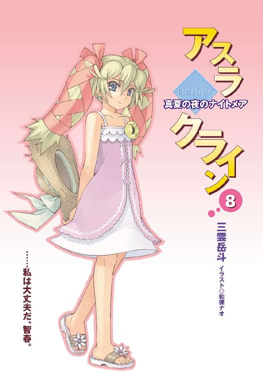
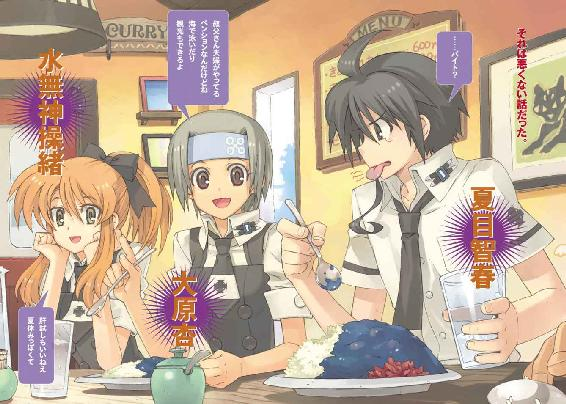
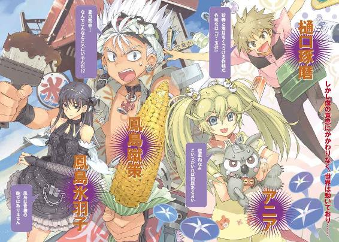
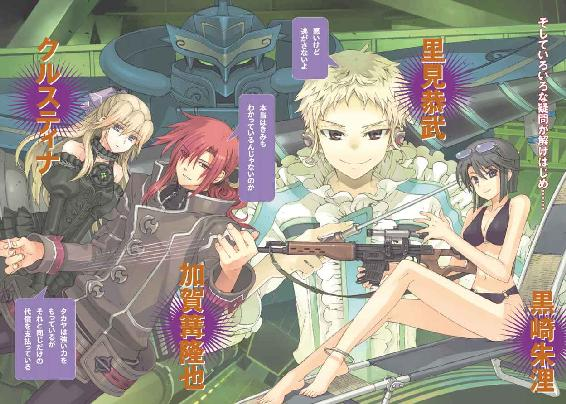
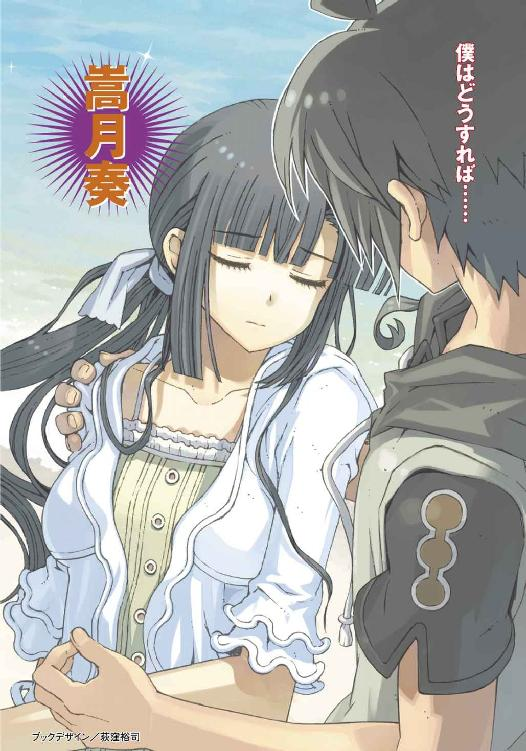
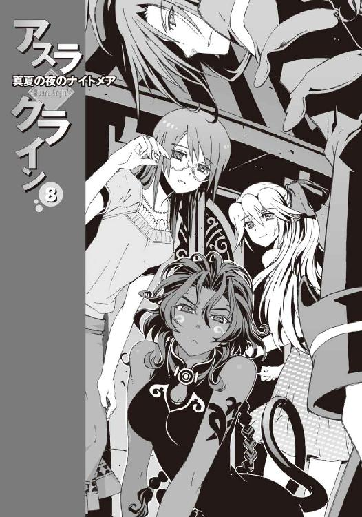
本書（電子版）に掲載されているコンテンツ（ソフトウェア／プログラム／データ／情報を含む）の著作権およびその他の権利は、すべて株式会社アスキー・メディアワークスおよび正当な権利を有する第三者に帰属しています。
法律の定めがある場合または権利者の明示的な承諾がある場合を除き、これらのコンテンツを複製・転載、改変・編集、翻案・翻訳、放送・出版、公衆送信（送信可能化を含む）・再配信、販売・頒布、貸与等に使用することはできません。
φ プロローグ
「ねえ、夏目智春......きみは選択するということについてどう思う？」
微睡みの中で、僕はその言葉を思い出す。
誰かが僕に問いかけていた。たぶん夢を見ていたのだと思う。わずかに覚醒した意識が感じていたのは、高速道路を疾走する車の振動と内燃機関の排気音。
車は外国製の古い小型車だった。運転しているのは僕よりも少し年上の女性だ。いつも微笑んでいるような不思議な雰囲気。細い肩に羽織っているのは着古した白衣。
無造作にハンドルを握る彼女は、無防備に助手席で眠る僕に、一方的に静かに呼びかける。
「いくつかある選択肢の中からひとつの未来を選び出すこと。もしきみがそんなふうに考えているのなら、その定義は、間違いとはいえないまでも不完全であり不正確であり誤解を招きやすい拙い考察だといわざるを得ないわね」
僕は彼女の言葉の意味を考える。
何度も何度も聞かされた言葉。遠い記憶。それがいつ誰に聞かされた言葉だったのか、眠っている僕には思い出せない。それが本当に僕が見ている夢なのかそれさえも。
それでも彼女は言葉を続ける。
「いわんや、よりよい選択が可能である、などという傲慢な妄想を抱くのは、害悪であり邪悪でありむしろ最悪とすらいえるわ。なぜなら人が、すべての選択肢とそれを選んだ未来の結末を知り得ることなど不可能なのだから」
おそらく彼女の言うとおりなのだろう、と僕は思う。
科学のささやかな進歩が人類に教えてくれたのは、確実な未来がどこにも存在しないという、つまらない真実だけだった。まして僕ごときがどれほどの知恵を尽くそうと、正しい未来の選択などできるはずもない。
ならばこのまま眠らせて欲しいと思う。未来を選ばなければならないのなら、僕以外の誰かが選べばいい。それが許されないというのなら、過ぎゆく時間に選択を任せ、この世界をただあるがままに。
そんな僕の思いを嘲るように、彼女は優しく微笑んで告げた。
「いえ、それ以前に人間には、選択しないことを選択する自由すら与えられていない。存在しないと考える存在が自己矛盾であるように、この世界に存在する限りにおいて人は選択せずに生きていくことはできない。思考しないという思考がすなわち思考そのものであるのと同様、選択しないという選択もまた選択肢のひとつでしかないのだから」
車が荒っぽく進路を変えた。高速道路を降りるのだ。インターチェンジ。分岐点。
夕陽が彼女の車を照らした。雲の切れ間から洩れ射す赤い光は、灼熱の炎を連想させた。
僕は小さく、うなされるように顔をそむけた。開け放した窓から吹きこむ風が、白衣を着た彼女の髪を遊ばせている。ＥＴＣの電子音が耳に障る。
「そしてきみが選択しないという未来を選んだ瞬間に、異なる選択によって生み出されたはずの数え切れないほどの未来は消滅する。選択を取り消してなかったことにしてやり直したとしても、その新たな選択によって生み出されたものは、新たな選択肢が紡ぐ新たな未来でしかない。かつてきみが選べたはずの未来はもはやどこにも存在しない。その未来できみが手にしたかもしれない大切なものも、出会えたかもしれない大切な人も、もはやない」
彼女の言葉が僕の胸を抉る。それは後悔の疼痛だった。
存在しないもの。たどり着くことのなかった未来。しかし微睡みの中の僕はなぜかそれらを知っているような気がした。そしてそれらを消滅させてしまったことを悔いている。
「もうわかったでしょう、夏目智春。選択とは、ひとつの未来を選んで、それ以外の可能性を切り捨てることでは断じてない。きみが破壊し踏みにじり消滅させたすべての世界と生命と精神の膨大な質量を背負うということ。それがきみに与えられた唯一の選択肢」
ああそうか、と僕は気づいた。
彼女は僕を諭そうとしたわけではなかった。僕の答えを待っていたわけでもない。いつも微笑んでいるように見える彼女の表情は、泣き出す直前の子供のようにも思える。彼女は最初から僕を非難していた。僕の罪を責めていたのだ。
そして彼女は小さく首を振る。
「いいえ、言葉を変えるわ。きみの選択はすでに終わっている。あとはそれを思い出して認めて受け容れるだけ。なぜならきみはあの男が落とした影なのだから。闇より暗き深淵より出し、黒き科学の光をまとうあの男の──」
その言葉に僕は耳をふさいだ。彼女の車がスピードを増す。
微睡みの中で僕は思い出す。この道を僕は通ったことがある。そしていつかまた通ることになると知っている。今からたぶんそう遠くない未来に。それが僕の選択の帰結なのだから。
やがて訪れる宵闇を予告するように、夕陽が眩く輝いていた。
そして僕は本当の眠りに落ちた。
○
『ついたよ、智春』
誰かが僕の頬をつねり上げていた。
いや正確には、僕の頬をつねっていたのは僕自身の左手なのだけれど、それを動かしていたのは僕じゃない。僕にとり憑いた別の誰か。幽霊だ。
「......痛いな。なにすんだよ？」
僕は涙で潤んだ目を開ける。そんな僕の頭上には、一人の少女が、重力を無視して浮かんでいた。色素の薄い髪を空中になびかせながら、苦笑混じりに僕を見下ろしている。
見慣れた操緒の顔だった。かつて僕の幼なじみだった幽霊の少女。洛芦和高校の夏服の制服を着た彼女は、乱暴に目を擦る僕を眺めて、
『いつまで寝ぼけた顔してるの。着いたわよ』と呆れたように言った。
「着いた......って、どこに？」
『はあ？ ちょっと、しっかりしなよ。病院だよ、病院』
「......あ」
僕はようやく焦点の定まった瞳で、自分が今いる場所を確認した。
見晴らしのいい高台に位置する白亜の建物。屋上に刻まれた赤い十字のシンボル。いかにも病院らしい病院の建物だった。正面玄関近くのバス停に路線バスが停まっていて、そういえば、さっきまで僕たちはあれに乗っていたような気がする。寝ぼけたまま料金を払ってバスを降り、待合室近くまで歩いてきたところで、電源が落ちたように記憶が途切れていた。ほんの一瞬だけ壁に手を突いて休んだつもりで、そのまま眠っていたらしい。
そしてふと気づくと僕の目の前には、その壁にもたれて一人の女性が立っていた。ラフなジーンズに白衣を羽織った女子大生だ。年齢はたぶん二十歳前後だと思う。人懐こい微笑を浮かべたお姉さんである。
「ずいぶん疲れてるみたいね、夏目くん。昨日もあまり寝てないんでしょう？」
肩にかかる髪を彼女が払うと、ふわりと嗅ぎ慣れない香りが漂ってきた。医大に通っているという彼女は、いつもなにかしら怪しげな薬品の臭いをまとっているのだ。彼女が調合した薬品では、僕も前にひどい目に遭わされたことがある。あまり思い出したくない過去だ。恐い夢を見ていたような気がするが、それはこの臭いのせいかもしれなかった。
「律都さん......」
どうして彼女がここにいるのか、思い出すのに少し時間がかかった。
潮泉律都。彼女は僕が住んでいる下宿の大家さんの孫娘だ。
そして僕の同級生の嵩月奏の従姉でもある。二日前、意識不明でこの病院に運びこまれた嵩月を、彼女が付き添いで看護しているとは聞いていたけれど。
「そうだ、嵩月......！ 嵩月の容態はどうなんですか......？」
僕は掠れた声で訊いた。病院に来た目的を思い出すと同時に、忘れていた不安が再び襲ってきた。血を流しすぎて倒れた嵩月の、異様に軽く冷たかった身体の感触が甦る。
律都さんは特に驚いた様子もなく、ほんの少しだけ目を眇めて僕を見た。
「奏の容態って......？」
「あの......あれからもう二日も経ってるのに、嵩月の意識がまだ戻らないって聞いて......」
「......誰に聞いたの、そのこと？」
律都さんが表情を硬くした。
「科學部の部長代理......朱浬さんが、さっき病院に問い合わせたらしくて......それで」
「そう......黒崎さんが......」
律都さんは、そうつぶやいてしばらく沈黙した。なにか考えるように視線を落とし、うん、と深刻な声を洩らす。
「そうね、今さらきみに隠しても仕方ないかな。正直なところ、奏ちゃんの状態は良くないわ。きみにもわかってると思うけど、衰弱が激しすぎるの。意識が戻っても今までのような生活はもう無理だと思う」
『今までのような生活は......無理って......』
操緒が声を震わせた。律都さんは静かに首を振り、
「しばらくはこのまま病院暮らしね。最低でも半年か、一年か......なんにせよ学校は休学することになるのかな。その前にあの子の意識が戻るかどうかもわからないし」
『そんな......』
操緒が絶句する気配が伝わってくる。
僕は眩暈を感じてよろめいた。心臓が締めつけられたように痛んだ。
嵩月が倒れたのは僕のせいなのだ。二日前の旅客機失踪事件。人質になった僕を救うために、彼女は限界以上の魔力を放出してそのまま意識を失った。そもそも彼女が事件に巻きこまれる原因を作ったのが僕だった。
「きみが責任を感じる必要はないわよ」と律都さんは言った。「だいたいの事情は聞いてるわ。事件の被害者なのはきみも同じでしょ。あの場にきみたちがいなかったら、もっとひどいことになってたかもしれない。飛行機の乗客だって......」
「だけど嵩月は、僕のせいで......」弱々しい声で僕がつぶやくと、
「だから......なに？」
律都さんが不意に冷たく訊いた。彼女の昏い瞳が僕を見つめていた。
「え？」
「奏ちゃんのこと、きみが責任を取ってくれるっていうの？ どうやって？」
「それは......」
僕はなにも言い返せずに、律都さんの言葉に圧倒された。意識が戻らないという嵩月のことを思って途方に暮れる。嵩月が傷ついて倒れたのは、間違いなく僕が原因だった。普通の学校生活を送るために家出同然の状態で洛校に入学してきた嵩月が、そのせいで休学を余儀なくされようとしている。それどころか二度と目覚めないかもしれないという。僕なんかにその責任がとれるはずもない。
答えを出せずに立ち尽くす僕を見て、律都さんは、ふっと口元を緩めた。
「......冗談よ。言ってみただけ」
そう言って彼女は優しく微笑んだ。一瞬だけ浮かんだ張りつめた雰囲気はもう消えていた。戸惑う僕を見上げて律都さんはふわりと肩をすくめ、
「せっかく来たんだから、奏ちゃんに会っていけば？」
「え？ だけど嵩月は......」
「うん、意識はないけどね。寝顔くらい見ていってもいいんじゃない？ 励ましてあげてよ、あの子を」
「はい......すみません」
僕は唇を噛んだままうなずいた。目覚めない嵩月を見るのは正直つらいが、それでも彼女に会いたかった。倒れた直後の嵩月は本当に軽く頼りなく、このまま消えてしまうのではないかとひどく不安になった。その不安は今も続いている。たとえ眠ったままでも彼女がこの世界に存在しているということを、きちんと確認しておきたかった。
「あの」
「奏ちゃんの病室なら、北病棟の四一二号室」
律都さんは待合室奥の通路を指さした。そのままその人差し指を唇の前に立てて、悪戯っぽく目を細める。
「ほんとは面会謝絶なんだから、こっそりね。ノックしても返事できる人はいないから」
「......わかりました」
売店に行く途中だったから、という律都さんと別れて、僕は教わった病室へと向かった。
四階にある病室は個室だった。そのせいか廊下に人影はなく、やけに静かに感じられる。
四一二号室のプレートの隣には、手書きの文字で嵩月の名前が書かれていた。
僕はそれを見上げたまま、しばらく無言で足を止めた。
『智春......入ろ』
操緒が僕の背中を押すようにつぶやいた。その言葉でようやく決心がつく。
「うん」
僕は静かに息を吐き、それから病室のドアノブに手をかけた。ベージュ色のドアは抵抗もなくするりと開いた。広い病室を仕切っていたのは淡い水色の薄いカーテンだった。僕は無言で部屋に踏みこみ、それを静かに引き開けた。
そして凍りついたように動きを止めた。
そこで僕が目にしたのは、予想外の光景だったのだ。
「......嵩......月？」
間の抜けた虚ろなつぶやきが洩れる。
ベッドの上にいたのは、たしかに嵩月奏だった。
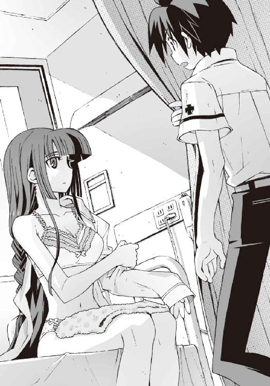
白い肌と艶やかな黒髪。見間違いようのない端整な輪郭。綺麗すぎて現実感が希薄に思えるくらいの、人間離れした美少女だ。
そして美しい黒水晶を思わせる彼女の瞳と、目が合った。
意識不明で眠っているはずの嵩月が、部屋に入ってきた僕を見つめていた。
「あ......」
嵩月は驚いたように目を丸くして固まっている。
ベッドの縁に腰掛けた彼女は白い服を着ていた。やけに露出の多いその服が、下着だと気づくまでに少し間があった。肩に羽織った彼女のパジャマは前のボタンが全開で、片方の袖に半分だけ腕を通したところで止まっている。
剥き出しの素足の上には湿ったバスタオルが置かれていて、ベッド脇のテーブルにはお湯を溜めた洗面器。まるで入院中の病人が身体を拭き終え、着替えている場面のような──
「きゃあああああああっ！」
細い悲鳴が病室に響いた。それでも僕は混乱して身動きできずにいた。
頭の中で疑問が渦巻いている。嵩月は意識不明で昏睡しているのではなかったのか。なのにどうして起きあがってパジャマを着替えているのだ。ノックしちゃだめよ、というようなことを、僕に耳打ちしたときの律都さんの楽しそうな顔を思い出す。
もしかして──だまされた、のか？
嵩月がパジャマで胸元を隠しながら屈みこんだ。その深い谷間に、僕は思わず目を奪われた。そんな僕の視線の動きに嵩月が敏感に反応する。涙で潤んだ上目遣いで僕を睨み、
それが僕の見た彼女の最後の姿だった。
「待った、嵩月、これは誤解──」
嵩月の右手に灼熱の火球が膨れあがって、それが僕の視界を埋めた。嵩月一族の地獄の業火。膨張した大気が高圧の爆風へと変わる。
「だあああああっ！」
横殴りの衝撃が僕を襲った。
病室の壁ごと廊下まで吹き飛ばされ、僕は意識を失った。
○
それから十数分後。病院のレストラン。
律都さんはすっかり笑い疲れた様子で、目元に浮いた涙を拭っていた。
僕は憮然と、絆創膏にまみれた頬を歪める。
「あはっ......ごめんなさいね。ちょっとしたサービスのつもりだったの。だってあんなに深刻な顔で、きみが奏ちゃんの容態を訊いてくるから......っ、くっ......あはあははは」
そう言って律都さんは、テーブルに突っ伏して肩を震わせた。
ちょっと笑いすぎではないかと思う。この人のしょうもない悪戯のせいで、僕は危うく死にかけたのだ。なにがそんなに面白いのかわからない。前から少し気になっていたのだが、この人の恨みを買うようなことを、僕はなにかしたのだろうか。
「最初から全部嘘だったんですか？ 嵩月が意識不明っていうのも、休学のことも」
「うーん、まあそうかな。黒崎さんの話を聞いたときに、ピンと来たのよ。ああ、これは盛り上げようとしているんだなって」
「盛り上げる？」
ふて腐れた顔のまま僕は訊いた。律都さんはうなずき、
「昏睡状態のはずの奏ちゃんが、ちゃんと目を覚ましてて嬉しかったでしょう？」
「それは......そうですけど」
「普通なら喜びを分かち合って抱き合ったりして、いい雰囲気になると思ったんだけど」
「そんなこと言われても、あの状況じゃ......」
僕はボソッと不平を洩らす。ノックもせずに着替え中の女の子の病室に入りこんで、なにをどう盛り上がれというのだ。
しかし律都さんの隣で話を聞いていた嵩月は、不機嫌な僕の顔を見てなにか誤解したのか、
「あの......ごめんなさい。わたし......ちょっと驚いてしまって......」
申し訳なさそうに頭を深々と下げた。僕は慌てた。
「あ、いや......べつに嵩月のせいじゃなくて、あれは律都さんが僕を騙したから......」
「騙したなんて人聞き悪いこといわないで欲しいな。せっかくチャンスをあげたのに」
他人事のように肩をすくめて律都さんが言った。僕はうんざりと彼女を睨んで、
「嵩月が......その、着替え中だって最初から知ってて、僕を病室に行かせたんですよね？」
それを騙したといわずにどう表現すればいいのだ。
「ええ。だからあれは奏ちゃんへのサービス。奏ちゃんは奥手だもの」
「は？」僕は怪訝顔で律都さんを見返した。
「り、律都っちゃん......！」
余裕の表情で微笑む律都さんとは対照的に、動揺したのはなぜか嵩月のほうだった。おろおろと頬を赤らめてうろたえる彼女を、律都さんはいかにも面白そうに眺め、
「なにか飲み物を買ってくるわね。待ってて」
そう言い残してレジカウンターのほうへと歩いていった。彼女の白衣の背中へと、僕は疲れた視線を向けた。
パジャマに薄いカーディガンを羽織った嵩月は、その間、困ったような顔でうつむいていた。
見慣れた嵩月の姿だった。相変わらずの彼女の反応に、僕はようやく安堵した。
「......よかった。嵩月、無事だったんだな」
ぐったりと椅子にもたれて、僕は笑った。嵩月が不思議そうに小首を傾げるのが見えた。病み上がりだろうが素っぴんだろうが、そんなことお構いなしの美少女ぶりは相変わらずだ。髪を三つ編みにしているのも、ちょっと新鮮でポイントが高い。
『ほんとだよ......嵩月さんが倒れたときはどうなるかと思ったよ。全然目を覚まさないしさ』
僕の隣で操緒もホッと息を吐いた。
複雑な気分で僕は操緒のその言葉を聞いた。あの事件のあとで長い眠りについたのは、実は操緒も同じだったからだ。少し疲れちゃった、と言い残して消えた操緒は、それから丸一日近く姿を現さずに眠り続けた。
もっとも、目覚めたあとの操緒は以前とまったく変わった様子もなく、それどころか寝過ぎて目が冴えて眠れないと夜中に騒いで、僕の安眠をさんざん邪魔してくれたのだけど。
僕が寝不足で疲れている原因の何割かは、そのせいだ。
そして僕が弱っていることは嵩月にも見抜かれていたらしく、
「あの、夏目くんも......疲れてるみたいだけど......」
「えっ......いや、大丈夫。これはただの睡眠不足」
不安そうな声で訊かれて、僕は慌てて首を振った。わざわざ見舞いに来ておいて、入院患者に余計な心配をかけるわけにはいかない。
そうそう、と操緒もうなずいて、
『あの事件からまだ二日しか経ってないからね。あれからどうなったのか、誰かに聞いた？』
「......少しだけ。朱浬さんの電話で。不時着した飛行機のことは、新聞にも」
『そっか、新聞かぁ......昨日はすごかったもんね、取材』
操緒が肩をすくめて言った。思い出して僕もため息をつく。
事件というのは、一昨日の早朝に発生した飛行機事故のことだった。
修学旅行中の洛高二年生二百七十九名を乗せた国際線の旅客機が、到着直前に消息を絶って、北関東の山中に不時着した姿で発見されたのだ。
幸いにして負傷者は一人も出なかった。だが、あまりにも謎めいた事故状況ゆえに、新聞雑誌やテレビのワイドショー番組では大々的に取り上げられた。
もちろん事故状況の事情聴取や、医師による乗客の健康診断なども行われた。
その結果わかったのは、事故に遭った旅客機の乗客たちが、事故当時の記憶を失っているということだけだった。旅客機が行方不明になっていた半日間の出来事を、約三百人の乗客は誰一人覚えていなかったのである。
「今日は......取材は......もう大丈夫？」
怯えたような声で嵩月が訊く。実家のおっかない稼業の関係で、彼女は目立つことが嫌いなのだ。
「いや、どうかな」と僕は首を振る。「さすがにテレビ局の中継はなくなったけどね、今度はオカルト系の雑誌記者やら心理学の研究者やらの取材申し込みが殺到してるみたい」
「あ......オカルト、ですか......」
肩を落としてつぶやく嵩月。操緒は少し楽しそうな声で、
『仕方ないよ。事情を知らない人たちにとっては、ほとんど怪奇現象だもん。海外でもだいぶ話題になってるみたいだし』
「うん......」
僕は自嘲めいた気分で薄く笑った。怪奇現象。そう、あれは怪奇現象以外の何物でもなかった。なぜなら旅客機の失踪に関わっていたのは、悪魔と呼ばれる存在だったのだから。
使い魔。そして機械仕掛けの人工の悪魔、機巧魔神。
その両方の力を手に入れた男、加賀篝隆也。旅客機の失踪を仕組んだのは、魔神相剋者と呼ばれるあの男だった。洛高の二年生二百七十九名は、彼の人質になっていたのだ。
その事実を知っている人間は多くない。実際に加賀篝隆也と戦ったわずかな人間と、その関係者だけ。だから戦いの犠牲者のことを知る者もほとんどいない。
哀音。自らの魂と引き替えに、墜落する飛行機を救って消滅したあの小柄な少女のことを、彼女に救われた乗客たちは誰も知らないのだ。
それを思い出して僕はひどく哀しい気持ちになる。
彼女が消えたことを、おそらく嵩月もまだ知らない。いつかはそれを嵩月にも告げなければならないのだろうが、今はまだ話したくはなかった。
そして僕のそんな苦悩の理由を、嵩月は自分の責任だと思ったらしい。
「ごめんなさい、心配かけて......わたしは、もう大丈夫だから」
華奢な肩をさらに小さくしながら、嵩月はきっぱりと微笑んで言った。
「大丈夫って......いや、でも......」
「あ......本当に、たいしたことないんです。念のために今夜まで入院して様子を見て、明日には退院できるって......」
『え、そうなの』操緒が驚いたように目を瞬く。『よかったね。ね、智春』
「うん。まあそれは......よかったと思うけど」
しかし、あんなボロボロに消耗して倒れた嵩月が、二、三日入院したくらいで回復するものなのだろうか、と疑問に思う。それくらい事件直後の彼女の様子はひどかったのだ。命が危ぶまれるほどの衰弱ぶりだった。
そして操緒も僕と似たようなことを思ったらしく、
『ここって、もしかしてすごい病院なの？』と嵩月に訊いた。
「え？」と訝しげな表情で嵩月。
『ほら、表向き普通の病院みたいだけど、実は嵩月さんみたいな悪魔専門の治療機関とか』
「いえ......普通の病院だと思います、けど」
「えっ？」嵩月の返答に今度は僕が驚いた。「普通の病院って......普通の病院ってこと？」
「あー」意味不明の僕の質問に嵩月はしばらく考えこみ、「はい。普通の人間用の病院です」
「大丈夫なのか、それって？」
「......大丈夫......って？」
「いや......だから普通の病院で検査なんかしたら、嵩月が悪魔だってバレるんじゃ......」
自分で口にしておいて不安になった。
イメージに合わないせいで僕自身たまに忘れそうになるが、嵩月奏は悪魔なのだった。
嵩月の全身を流れている血液は、彼女の意志によって摂氏数千度の地獄の業火に変わる。さっきだって彼女の火球で、僕は大ダメージを被った。
そんな彼女が一般の病院に運びこまれたら、なにも知らない医師たちはパニックに陥るのではないかと思う。下手したら、そのまま貴重なサンプルとして研究されて実験動物扱いだ。
しかし嵩月は少し困ったように首を振り、
「......大丈夫です」と言った。
「でも血液検査とかは？」
「あの......それも平気です」
「え、どうして？」
「あー......それは......悪魔と人間との間には生物学的な差異が存在しない、から」
「生物学的な差が......ない？」
「あの......本当はわたしもよく知らないんですけど、律都っちゃんが......人間と悪魔の肉体には、遺伝子や細胞レベルでの違いはないらしくて。だから普通の病院に入院して大丈夫だって」
「そう......なのか？」
「はい」
「............」
僕は操緒と顔を見合わせた。いくら律都さんでも、自分の従妹の嵩月を相手に、そんな嘘をつくことはないだろうと思う。しかし遺伝子レベルで違いがないということは、それってつまり同じ生き物という意味ではないのだろうか。
それはおかしいだろう、と僕は思った。嵩月たち悪魔の肉体は普通の人間と同じ。そんなことを信じられるはずがない。掌から炎をまき散らしたり、氷の精霊を呼び出したりするような非常識な連中と、同じ生き物だといわれても困ってしまう。
『......人間と生物的に違わないっていうなら......じゃあ悪魔って、いったいなに？』
困惑の表情で訊いたのは操緒だった。
僕は息を殺して嵩月の答えを待つ。そういえば今まで真面目に気にしたことはなかったが、僕たちは、なぜ嵩月たちが悪魔と呼ばれているのか知らないのだ。人間と肉体的に違いがないというのなら、なぜ彼女たちは、あんな超人的な能力を使えるのだろう？
だがしかし嵩月は、彼女自身ひどく戸惑ったような様子で、
「さあ......？」
首を振っただけだった。僕と操緒は思わず脱力して肩を落とす。
「あの......魔界の住人、といわれてますけど......一般的に」
『だから、そういう一般的な意味じゃなくて......』
操緒が疲れたような声でつぶやいた。ちなみに嵩月が住んでいるのは魔界どころか、市内では有名な大金持ちの大地主、潮泉家の裏山である。
「あー......」
途方に暮れたように沈黙する嵩月。べつに誤魔化そうとしているわけではなく、彼女自身、本当に知らないようだった。それはまあ、たしかに僕だって、人間とはなにか、なんてことを訊かれたら返事に困る。
『んー......でもまあ、考えてみたらそんなに変な話でもないよね』
いつものあまり根拠のない自信に満ちた口調で操緒がつぶやいた。
「そうか？」
さすがにその意見には同意しかねる。
『なによ。だって見た目は人間とおんなじだし。それとも嵩月さんに尻尾が生えてるとでも思ってたわけ？』
「いや、さすがにそれはないけどさ」
僕は迷わず首を振る。すると操緒は、むっ、と不機嫌そうに目を細め、
『......即答だね。智春のくせに、やけにきっぱり』
「え？」僕のくせに、というのは余計だ。どういう意味だ。
『もしかして確認した？ さっき病室で？』
「なっ......」
嵩月の病室で目にした光景を思い出し、僕は咳きこんだ。
「違う。見てないって。いや、確認してないって意味じゃなくて、そんな、尻尾が生えてるかどうかなんて見てる余裕あるわけないだろ、あの状況で！」
『ふーん。だったらどこを見てたわけ？』
「や、それは......」
思わず顔を上げた瞬間、赤面する嵩月と目が合ってしまった。
カーディガンの胸元を押さえてうつむきながら、ごめんなさい、と小声で謝る嵩月。こちらこそ、と僕も謝罪する。そのまま二人で黙りこむ僕たちを、操緒は面白くもなさそうな表情で眺めて、ふん、と息を吐く。そんなふうに不機嫌になるくらいなら最初から思い出させるなよ。
だがしかし、まあいいか、とも思う。
気まぐれに僕を振り回す操緒と、それに巻きこまれて困っている嵩月。
いつもと変わらない二人の姿だった。彼女たちが無事に帰ってきたことを、ようやく今頃になって実感できた。犠牲になった哀音のことを忘れたわけではないけれど、今は素直に喜んでいいのだろう、と思う。今だけは。
そんなふうに安堵の笑みを浮かべた僕を見て、操緒は、うわ、と眉をひそめ、
『なに思い出し笑いしてるの、やらしいなあ』
「うるさいな。とにかく、嵩月も明日には退院できるんだよな？」
「あ、はい......明日の検査で問題がなければ」
嵩月は、まだ少し赤面したままうなずいた。僕は軽く胸を撫で下ろし、
「よかったな。ぎりぎり間に合って」
「え？」嵩月がきょとんとした表情で訊いてくる。
「これ......柱谷やんから預かってきたんだけど」
クラス担任の愛称を口にしながら、僕はクリアファイルを取りだした。ファイルの中身は、厚めの高級紙に印刷された、ものものしい雰囲気の書類である。隣で操緒がなぜか得意げに胸を張り、
『中は見てないから安心してね。ちゃんと操緒が監視しておいたから』
「......？」
嵩月は手渡された書類を怪訝顔でのぞきこんだ。たぶん彼女くらい成績が良かったら、これを受け取っても僕のような複雑な気分は味わわなくて済むのだろうな、と少しうらやましく思う。それはいわゆる、通知票、というやつだった。
「今日で一学期の授業は終わりだったから」
冷静に告げたつもりだったのだけど、つい声が弾んでしまったのは、まあ仕方ないだろう。
「あ......」
嵩月が目を大きくして僕を見た。
彼女の背後。病院のレストランの窓越しに、夏の夕暮れの景色が広がっている。
夕焼けの雲。宵の明星と、明かりが灯り始めた街。そして地平線に沈む真紅の太陽。
それは特別な季節の訪れを予告する夕暮れだった。
そう、夏休みの始まりを──
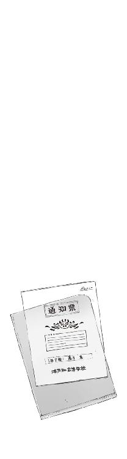
一章
翌日。夏休み初日の朝。
それは特別な季節の始まりになるはずだった。
しかし実際に僕がやったことといえば、目覚ましを止めて顔を洗い、通気性が今イチの化学繊維の制服に着替えただけ。つまり昨日までと変わり映えしない朝の儀式だった。
このあとの行き先ももちろん昨日と同じ。洛高だ。
「......夏期講習？」
少し遅れて起き出してきた居候の少女が、制服を着た僕を訝しげに見つめて訊いてきた。
この同居人は、その名をアニア・フォルチュナ・中略・クレウゼンブルヒ辺境伯令嬢という。豪華な金髪に寝グセを残した異国人の美少女である。
人形のように愛らしい顔立ちが、ふて腐れたように歪んでいるのは、寝起きがよくないせいだろう。クマ柄のパジャマの裾を引きずりながら、彼女は食卓のテーブルに座る。
「夏期講習とはなんだ？ そのような行事の存在を私は聞いてないぞ」
「ああ。まあ、アニアは関係ないと思うよ、たぶん」
僕は目玉焼きを作りながら、彼女のぶんの牛乳をコップに注いで電子レンジに入れた。
冷たいものを飲むとすぐにお腹を壊すくせに猫舌、というアニアの注文は細々とうるさい。適当な温度になるように手動でレンジのタイマーをセットする。
「ふむ？」
「要するに補習だよ。成績が悪かった生徒を集めて特別授業をするんだってさ」
「あんな初歩的な授業のやり直しか？ ふむ......なぜわざわざそんな非効率な真似をする？」
「初歩的って......いやまあ、アニアにはそう思えるかもしれないけど」
自分で言ってて少し哀しくなってきた。
アニアは数カ国語を自在に操る天才少女で、学力は大学院生と同等以上。今は交換留学生として招かれた洛高で、僕の同級生をやっている。
しかし彼女の実年齢は、ようやく十歳になったばかり。見た目も年相応のお子様だ。
手渡されたカップを受け取って、ふうふうとミルクを吹き冷ましている童女よりも成績が悪いのかと思うと、たまに泣きたい気分になる。僕はため息をつく気分にもなれず、
「べつに好きでやってるわけじゃないんだけどね」とだけつぶやいた。
せっかくの夏休みに夏期講習。想像しただけでも気が重い話だが、進級に響くとまでいわれたら出席しないわけにもいかない。一学期の期末テストの結果は意外にまともだったのだが、その前の中間テストの成績が壊滅的に悪すぎた。
しかしあの当時の僕は高熱を出してフラフラだった上に、ちょっとした事件に巻きこまれて試験勉強どころではなかったのだ。あのとき僕らを襲ってきた敵──学生連盟武装生徒指導員の実力を考えれば、命があっただけでもまだマシというレベルのトラブルだった。思い出すだけでもうんざりする。あんな目に遭わされた挙げ句の代償が、二週間の夏期講習というのは、さすがにちょっと割り切れないものがある。
『智春はまだいいよ......補習に呼び出されたのだって自業自得だし』
恨みがましい口調でつぶやいたのは、僕の背後にゆらりと浮かび上がった幽霊の少女だった。
少し大きめのＴシャツに短パン姿──というのは、つまりパジャマを兼ねた最近の彼女の普段着だ。幽霊なのになぜどうやって着替えるのかという疑問はさておき、未だに制服に着替えていないという事実だけでも、夏期講習への出席に彼女が消極的だというのがよくわかる。
『ちょっとは、つき合わされる操緒の身にもなってよね』
はーっ、と長いため息をつきながら操緒が愚痴った。
操緒は僕に憑いている幽霊だ。僕から離れてあまり遠くには行けない。当然、僕が夏期講習に出ている間は、彼女も強制的に登校しなければならない運命だ。それはまあ文句のひとつも言いたくなるだろう。多少は罪悪感を感じないでもない。
「補習に出たくないなら、適当に校内で遊んでればいいんじゃないかな。夏休みでも部活や委員会で登校してくる連中はいると思うし」
『もう......そういうんじゃなくて、せっかくの夏休みなのにってこと』
「え？」
『遊びに行く計画、考えてないでしょ。お祭りとか遊園地とか海水浴とか旅行とか、そういう夏休みらしいイベントのこと、なんにも聞いてないんだけど？』
壁のカレンダーを横目で見ながら、操緒が頬を膨らます。
「ああ......」
そういえばなにも考えていなかった。加賀篝隆也の襲撃やら嵩月の入院やらで、ここ最近は夏休みの予定を決めるどころじゃなかったのだ。それに憂鬱な補習がしばらく続くと思うと、その先のスケジュールを考えるにしてもあまり気が乗らない。
『一学期はいろいろあったから、ようやく夏休みだと思って楽しみにしてたのにさ。いきなり補習だなんてガッカリだよ。ニアちゃんもそう思うよね？』
むっつりと頬杖をついた操緒が、黙々とパンを囓っているアニアに同意を求めた。しかし小柄な留学生は、不機嫌な表情で首を振り、
「そんなことはどうでもいい。私は遊びに来ているわけじゃないからな」
『え？ あれ？』
年不相応なアニアの醒めた口調に、操緒は調子を狂わされたような表情を浮かべた。
べつに僕に気を遣っているというわけでなく、アニアは本当に夏休みの行事などには興味がないらしい。彼女が不機嫌な理由はほかにあるということだ。その証拠にアニアは頬にジャムの欠片をくっつけたまま僕を睨み、
「だが、智春が補習とやらに出席するのは困る。どういうつもりか知らないが、少しは私の都合も考えてもらいたいものだな」
「ああ、うん。ごめん」
成り行きで思わず謝ってしまったが、冷静に考えるとなにやら釈然としない話である。
アニアはこの下宿の単なる居候で、僕は彼女の保護者ではない。せいぜい善意の世話係とかその程度。一緒に遊んで欲しい、というのならまだ可愛げがあるが、それ以外で僕がアニアの都合とやらにつき合わされる理由はないのだった。いや、それよりそもそも、
「えーと......アニアの都合ってなんだっけ？」
質問する僕の顔を見返して、アニアは呆れたように嘆息した。
「私がなぜこの国に来たと思っている？」
「黒科学の研究だろ。機巧魔神の調査とか......」
「違う。それは私を呼んだ生徒会のほうの都合だろう」
僕が作った目玉焼きに、フォークを突き立てながら首を振るアニア。
表向きは飛び級した少し賢い留学生という扱いだが、本来のアニアはいわゆる黒科学者。機巧魔神の専門家なのである。実際、今も彼女は洛高第三生徒会の依頼を受けて、イグナイターと呼ばれる拡張機能の分析を任されている。
それはそれとしてアニアは半熟卵が食べれず、目玉焼きは堅焼きでなければならない。そういうしょうもない好き嫌いをいうあたりは、やはり見た目通りのお子様だ。
結局、アニアの質問に答えたのは操緒だった。
『んっ......ニアちゃんは、お姉さんに会うために来たんだよね』
「あ......そうか。たしか加賀篝の......」
思い出した。幼いアニアが遠い異国に一人で来た理由。それは、行方不明になっている姉を捜すためだと聞いていた。
姉の名前は、クルスティナ・フォルチュナ・以下略。
アニアと同じ留学生として洛高を訪れ、そしてクルスティナは、〝運喰らい〟の悪魔の末裔として、加賀篝隆也と契約した。彼を魔神相剋者にするために。
おそらく今も彼女は加賀篝の傍にいる。
「そうだ。今までは加賀篝隆也の行方がわからなかったから、私も手のつけようがなかったが、今回は違う。それはわかっているのだろうな、智春？」
「......え？」
唐突に偉そうな口調で尋問されて僕は戸惑った。今までとこれからとなにが違っているのかさっぱりわからない。わかっているのは加賀篝隆也が強大な魔力を手に入れた禁忌の存在で、目的のためなら手段を選ばない危険人物ということだった。君子ならぬ僕でも二度と近寄りたくない危うい相手である。
そもそも三日前に僕たちと戦って以降、逃走した加賀篝の行方は誰も知らない。
それはつまり、アニアの姉の行方もわからないということではないかと思う。以前と状況はなにも変わっていないはず。なのだが、しかし、
「愚か者」
君子どころかいきなり愚人呼ばわりされてしまう。
「加賀篝隆也は負傷しているらしいな？」
「ああ......そうだね。そういえば」
前回の遭遇で加賀篝を最終的に撃退したのは、第三生徒会の冬琉会長だった。彼女の日本刀の一撃を受けて、加賀篝は最低でも肋骨数本を折る重傷を負ったはず。その直前の六夏や嵩月の攻撃で、彼の機巧魔神や使い魔もかなりのダメージを受けている。
「あの男も今度はそう遠くまで逃げられまい。病院。それに機巧魔神を修理するための施設。やつを追う手がかりがようやく手に入ったのだ」
透きとおった瞳に炎を燃やして、アニアがぼそりとつぶやいた。そして彼女は柳眉を逆立て、怒りの気配をまき散らしながら僕を睨み、
「姉様の行方を知るなら今しかない。それなのに貴様は夏期講習だと？」
「あ」
「たしか貴様、私が姉様を捜すのに協力すると約束したはずだな？」
「いや、それは......」
「よりによってこの大事な時期に補習とは......日頃の行いが悪いから、肝心なところで役に立たないのだ、貴様は」
「う......ご、ごめん」
僕は大人しく謝罪した。たしかにアニアのお怒りはごもっともだ。
加賀篝隆也は目立つ男だが、しかし無数にある医療機関から彼の足取りを追いかけるには、それなりの労力が必要だ。いくらアニアが賢くても、実年齢では小学生相当の少女が一人で捜査するのは荷が重かろう。
アニアのお姉さんの話は、僕とまるで無関係の話でもない。できれば手伝ってやりたかった。なのに、夏期講習が終わるまで僕は学校を離れられない。これでは役立たずと罵られても仕方なかった。しかし念のためにいわせてもらえば、僕が中間テストで悲惨な点数をとったのはアニアと出会う前なので、今回のことは不可抗力だと思わないでもないのだけれど。
『じゃあ、ニアちゃんは今日からお姉さんのことを捜しに行くの？』
心配そうな表情で訊いたのは操緒だった。アニアはうなずき、
「うむ。すでに昨日までに加賀篝の潜伏場所の候補を何カ所かリストアップしてある。あとは実際に現場を訪れてやつの痕跡を探すだけだ」
『んー......無理じゃないかな。一人じゃ危ないよ』
「失敬だな。たしかに加賀篝隆也は危険な男だが、私とて警戒を怠るつもりはない。むざむざやつに囚われるような失策を犯すつもりはないぞ」
『うーん、そうじゃなくてさ。ニアちゃん、一人でバスに乗れないじゃない』
「な......」
冷静な操緒の指摘に動揺するアニア。
『電車にも乗ったことないって言ってたし。ニアちゃん一人で知らない街に出かけたりしたら、すぐに迷子になるか補導されるんじゃないかな』
「なにを......」
アニアは不満そうに唇を震わせていたが、適当な反論は思いつかない様子だった。僕も操緒の意見に同意する。なんだかんだでお嬢様育ちのアニアは、知識はあるが一般常識に疎い。おまけに、運勢を自在に操る〝運喰らい〟の悪魔とは思えないくらい、運が悪い。
そのくせプライドだけは人一倍高く、自分の非を素直に認めようとはしないので、自力で問題を解決しようとするうちに、事態を余計にややこしくするのが常だった。加賀篝に遭遇する前に変な騒動に巻きこまれ、混乱する彼女の姿が目に見えるようだ。
『せめて誰か一緒に行ってくれる人がいたらよかったんだけど......』と操緒。
「そうだな」と僕もうなずいた。
しかし事情が事情だけに、適任者というのは意外にいない。
嵩月は病み上がりで自宅療養中。朱浬さんも、こないだの墜落で負った傷の治療だか修理だかがまだ終わっていないと聞いている。冬琉会長は加賀篝の事件の後始末でそれどころではあるまい。クラスメイトに頼もうにも樋口はアニアと仲が悪く、杏は夏休みは部活だろう。
こうなると僕と操緒が夏期講習で動けないのがいかにも恨めしい。
しかしアニアは、なぜか不敵に余裕の笑みを浮かべてみせる。
「案ずるな。私も自分の力量不足を正確に把握できないほど暗愚ではない。要は案内人を同行させればいいのだろう。それならば適当な人材に心当たりがある」
「心当たり？」
誰だろう、と僕は怪訝に思った。操緒も首を傾げている。
アニアは食事を終えて立ち上がると、そのままリビングへと歩いていった。そして古い革張りのソファの前で立ち止まる。ソファの上に置かれているのはヌイグルミ。不細工なコアラのヌイグルミだ。ふん、とアニアは鼻を鳴らすと、小さな拳を握り締め、唐突にそのコアラの横っ面へと鉄拳制裁を実施した。
「起きろ、塔貴也。いつまで惰眠を貪っているつもりだ」
乱暴な口調で説教しながら、ひたすらヌイグルミを殴り続ける金髪少女。なかなかシュールな光景である。しかしそれだけなら、この年代の子どもにありがちなナチュラルに粗暴な振る舞いと見えなくもない。問題は殴られ続けているコアラのほうだった。
『や、やめないか......こら、アニアくん。こんな朝っぱらからいきなりなにを......！』
ヌイグルミの目が突然カッと見開かれたかと思うと、殴られた頬を押さえて悲鳴を上げたのだ。まだ少し寝ぼけたような男子高校生の声で。
「か...... 部長？」
部長？」
僕はその声の主の名前を呼ぶ。洛高科學部部長の三年生、塔貴也。
この不細工なコアラのヌイグルミは、機巧偶人と呼ばれるの発明品だった。はこのコアラと五感を共有しており、離れた場所から自在に操れるのだそうだ。元来ひきこもりがちな性格の彼は、自分の部屋から一歩も出ることなく、このヌイグルミを介して外界の情報を集めているのだ。自ら機巧師と名乗るだけあって、素晴らしい技術力である。
しかし五感を共有しているということは、ヌイグルミが受けたダメージを、本体ももろに喰らうということでもある。アニアの容赦ない攻撃で、彼はほとんど涙声になっていた。
『な......なんなんだ、これは。僕がいったいなにをした!?』
当然といえば当然だが、困惑した口調で訊き返す部長。それに対してアニアは傲然と、
「まだなにもしていない。働くのはこれからだ。今からおまえには私の案内人を務めてもらう」
『案内人？』
わけがわからない様子の部長コアラを、アニアが無造作に抱き上げた。
そして彼女は僕と操緒に向けて、少し得意げに微笑んで見せる。
「どうだ。道案内なら、こいつがいれば問題あるまい」
「え......いや、どうかな......」
僕は操緒と二人で顔を見合わせた。
不細工なコアラのヌイグルミに向かって話しかけながら、見知らぬ街を歩いている幼い少女。それはそれで問題がありそうな気がする。というか少し怖い。
だが現状を踏まえた上で総合的に判断すると、それがもっとも妥当な解決案であるようにも思えた。さしもの加賀篝も、自分の契約者の妹に積極的に危害を加える理由はないだろうし、なにかと好戦的な嵩月や朱浬さんあたりを護衛につけるよりはむしろ安全かもしれない。つき合わされる部長は災難だが、あの人に限って夏休みだからといって、どこかに出かける予定もないだろう。そう思って、まあいいか、と僕は無責任に肩をすくめた。
その判断を僕が後悔することになるのは、これからずいぶん先の話である。
○
教室には全部で三十人ほどの生徒がいた。夏期講習は数クラスの合同で行われるので、名前を知らない生徒もちらほら混じっている。僕の背後に浮かぶ操緒を見て軽く怯えたり、ものめずらしそうな顔をする者がいるのはいつものことだ。二、三日すれば彼らも慣れるはずなので、あまり気にしないことにする。
「おはよっ、智春！」
空いていた席につくと、すぐに隣の生徒に名前を呼ばれた。朝っぱらからハイテンションな声は、よく日焼けした小柄な少女のものだった。同じクラスの大原杏である。
「操緒ちゃんもおはよっ。どうしたの、二人して元気ないね。もしかして夏バテ？ だったら豚肉がいいらしいよ。そうそう豚肉といえばこないだ吉田先輩に美味しいカツカレー屋を教えてもらったの。あとで食べに行こうよ。智春、辛いの大丈夫だったよねっ？」
「え？ ああ、うん。大丈夫だけど」
彼女の勢いに少しばかり圧倒されながら僕はうなずいた。
朝の挨拶でいきなり豚肉を食えという女子もどうかと思うが、杏のグルメ情報は正確なので断る理由はなにもない。まあそれはともかく。
「それより杏はなんでいるんだ？ こないだのテストの成績、そんなに悪くなかったろ？」
「うん、あのときはヤマが当たりまくったからね」
あっはっは、と陽気に笑いながら得意げにＶサインなどしてみせる杏。
しかしこれで杏は意外に努力家である。部活やら実家の酒屋の手伝いやらで忙しいくせに、勉強のほうも人並み以上にきっちりやっている。ただしどうやら彼女には苦労を苦労と感じない特性があるらしく、努力が報われたのではなく運が良かったと感激して無邪気に喜ぶのは、二重の意味でお得な性格だといえよう。
そんな杏がなぜ夏期講習なんかに参加しているのかというと、
「陸上部員は自主的に全員参加なんだよ。顧問の先生の方針でね」
「ああ、そうなんだ。大変だな」
「そう？」
杏はぱちくりと大きな目を瞬いた。
「この炎天下の真っ昼間にグラウンドを走り回るより全然マシだよ。朝練のあと、午後の練習まで暇だし、いちいち家に帰るのも面倒じゃない」
「そ、そうかな」
どこかでサボって時間を潰していれば済むんじゃないかと思うのだが、たぶん杏はそんなこと考えつきもしないのだろう。補習に強制参加させられる上に操緒たちに文句まで言われた僕からすれば、うらやましいくらい前向きなご意見である。
まあ、たしかに夏期講習の参加者は、僕のような成績不良者ばかりというわけでもなかった。
部員たちを自主参加させている運動部は、陸上部のほかにもいくつかあるようだし、不得意科目克服のために真面目に授業を受けに来ている一般生徒もいる。むしろ彼らのほうが多数派かもしれない。
ほかにも、この種の行事に積極的に参加することが推奨される模範的優等生たち──たとえば生徒会関係者の姿も見える。
そして好きな異性が参加するから、という、どうしようもなく不純で、おまけに効率の悪そうな動機で夏期講習を受けに来た生徒もごく少数だが存在しているようだった。
具体名を挙げるなら、杏の隣の席で机に突っ伏している男子生徒である。樋口だ。
「よぉ......智春」
のろのろと顔を上げた樋口の表情はやつれていた。
どよんと腐った卵のように目が澱み、声の響きも陰鬱だ。普段の樋口からはあまり想像できない姿である。いつもは杏と張り合えるくらいテンションの高い男なのだ。
「ひ、樋口？」
「おう。いい天気だな、智春。今日も暑くなりそうだ。俺の夏はもう終わったがな......月みれば、ちぢにものこそ悲しけれ......わが身一つの秋にはあらねど......」
「お、おい......大丈夫か？」
唐突に小倉百人一首などを吟じ始めた樋口の姿に僕は困惑する。もともと少し変わったヤツではあるのだが、ここまでひどくはなかったと思う。
今の樋口は弱りきって、まるで屍のようだ。風下に立つと腐臭が漂ってきそうだ。
『どうしたの、アレ？』
操緒が警戒心を露わに杏に訊いた。杏は、あははっ、と爽やかに笑い、
「ああ、樋口？ たぶんいつものやつだと思うよっ」
『いつもの？』
「うん。さっき玲子ちゃんとなにか話してたからね」
『あ......そっか。いつものやつね』
ふんふん、と納得してうなずく操緒。そのときには僕ももう大方の事情は理解していた。
これは要するにアレだ。いわゆる失恋というやつだ。
樋口琢磨は意外にスペックの高い男で、ほとんど勉強なんてしないくせに成績は常に学年上位。運動関係もそつなくこなし、顔立ちだってまずくない。情報通で、あちこちに知り合いも多い。当然モテる。ただしそれは相手の女性が、樋口のことをよく知らない場合に限った話だ。ほかの長所をすべて台無しにするような致命的な欠陥が彼にはある。
樋口は重度のオカルトマニアなのだ。
初めてのデートで、霊が出ると噂の廃病院に連れていかれたり、金星人を自称する人物の夢の話を四時間ぶっ通しで語られたりしたら、たいていの女の子はひきまくりである。
そんなわけで樋口は非常にモテるのだが、同時によくフラれる男でもあるのだった。
もっとも本人は、それをほとんど気にしていない。リゲリアンとレティキュリアンの区別もできない女に興味はない、とほとんど言いがかりのようなことをいって平然としている。だったら最初からつき合うなよ、と思うのだが、まあそれはいい。広い世の中にはグレイ系エイリアンを分類できる女性をチャーミングに感じる人間もいるだろう。
ただし樋口の偏向した趣味には例外がある──約一名。
その例外的な人物のことを僕が思い出したのは、ちょうど本人が教室に入ってきたせいだった。勝ち気な雰囲気を漂わせた優等生風の女子生徒である。立ち尽くしている僕を見て、彼女は怪しむような表情で声をかけてくる。
「あら、夏目。感心じゃない。夏期講習に出てくるなんて」
見た目の印象通りの、ちょっと偉そうな口調。佐伯玲子だった。
同じ中学出身の同級生に、僕は曖昧に笑ってみせる。彼女のことは嫌いではないが少々苦手だった。なぜかいつも僕に怒っているような印象があるからだ。せっかく美人なのに勿体ない。
「柱谷やんに呼び出されたんだよ。中間テストの成績が悪かったから」
「は......」
感心して損した、というふうに彼女は乱暴に息を吐く。
「まあいいわ。だったら尚更、真面目に出席することね。たまに様子を見に来てあげるから」
それはどうも、と僕は肩をすくめた。言葉だけ聞いてるとやたら高圧的だが、たぶん彼女なりに励ましてくれているのだろうな、と思う。
「あれ、でも様子を見に来るって？ 佐伯は補習を受けに来たんじゃないのか？」
「あたしは文化祭の準備。このあと会議なの」
そう言って彼女は小脇に挟んでいたノートを持ち上げてみせた。表紙には独特の几帳面な文字で、文化祭実行委員会用と書かれている。
「ああ、佐伯って実行委員だっけか」
「そうよ。後半になったら夏目たちにも手伝ってもらうことがあるから、協力してよね」
「うん。まあ、それはいいけど......あのさ」
彼女の言葉を適当に聞き流しながら、僕はちらりと半死人と化した樋口に視線を向けた。
これ、どうにかならないかな、という言葉が喉まで出かかるが、結局なにも言わないでおく。
樋口にダメージを与えた元凶は、ほぼ間違いなく佐伯玲子だろう。恋愛にはやたら淡泊で無頓着な樋口が、唯一こだわっている例外が彼女だった。中学時代から何度も彼女に告白しては、そのたびにフラれてこのような屍めいた姿をさらすのだ。
相手が悪いんだよな、と僕は思う。佐伯は美人だが性格がキツイ。おまけに男嫌いで、そのくせ兄貴べったりのブラコンだ。たしかに根はいいヤツではあるのだが、なにもそんな難儀な女に惚れなくてもいいだろうに。
「なに？」
かすかに苛立ったように、佐伯が僕を睨んだ。
僕は黙って首を振る。佐伯も佐伯で、どうせ誘いを断るにしても、もう少しやりようがあるのではないかとは思う。樋口だっていちおうクラスメイトだし、中学以来の古いつき合いなのだ。なにも毎回毎回こんな完膚無きまでに叩きのめさなくても。
だが、それは僕が彼女に文句を言うようなことではない。
「いや、なんでもない」
「そう。じゃあ、またあとで」
佐伯は操緒たちに手を振ると、自分のロッカーに立ち寄っただけで、そのまま教室を出て行った。彼女の姿が見えなくなるのを待って、僕はこっそりと肩をすくめた。
死体のように存在感の薄かった樋口が、ゆらりと立ち上がったのはその直後である。
「あれ......樋口？」
彼の不審な行動に違和感を覚えて、思わず声をかけてしまう。樋口はわざとらしく長いため息をつき、
「悪いな、智春。帰るわ、俺......」
「え、もう？」
まだ夏期講習の授業は始まってすらいないのだが。いったいなにをしに来たんだ、この男は。
「ふうん」まあいいけど。
「ふうん......じゃねえよ。おまえもつき合えよ」
当然のような口調でそんなことを言われて、僕は驚いた。
「は？ なんで？」
「なんでって、親友がフラれて落ちこんでるんだぞ。追いかけてきて慰めるのが筋だろう？」
「え、いや......」
それはまあ、そういうものなのかもしれないが。
「でもこれから補習だし。柱谷やんに直々に呼び出された手前、出席しないとまずいんだよ。それに佐伯にフラれたのが初めてってわけでもないだろ？」
「ぐおっ......」
何気ない僕のひと言は、樋口に予想外のダメージを与えたらしい。樋口は芝居がかった動きでその場にくずおれ、胸元を押さえて苦悶する。
「そうだよ......どうせいつものことだよ。せっかくの夏休みだってのに、祭りも遊園地も海水浴も旅行もねーよ。あの女のために、いろいろ計画してたんだけどな」
「あ......そうなんだ」
この男がそんなまともなことを考えていたとは意外である。少し見直した。
樋口は、ふっ、と自嘲するように笑ってうなずき、
「昔、人食いの儀式をしてたっていう尺骨神社の夏祭りとか、十年前の大火災で四十九名の死者を出した洛央ファミリーランドの跡地とか、あとは暮海崎の海岸に有名な心霊スポットがあって、洞窟に迷いこんで行方不明になる人間が毎年後を絶たないって噂の......」
「......えーと、その話を佐伯にしたの？」
僕の質問に樋口は力強くうなずいた。なるほど。それはまあ、ボロクソ言われてフラれるのも当然だ。むしろ佐伯に同情してしまう。
ぐったり肩を落とす僕を見て、樋口は不機嫌な顔になり、
「なんでだよ。メチャメチャ楽しそうじゃねえか！」
「いや、まあ......ごめん。一瞬でも樋口に期待した僕が馬鹿だったよ」
力なくつぶやく僕の隣で、操緒も同じようにため息をついていた。仏頂面で再び自分の席に着く樋口。しかし杏の反応だけは、少し僕の予想と違っていた。
シャーペンの背を額に押しあてて、なにかを考えこむような表情で杏はぼそりと、
「......仕方ないよね。玲子ちゃん、ほかに好きな人がいるもんね」
「なにっ!?」
ほとんどため息のような独り言だったのだが、樋口はそれを聞き逃さなかった。血相を変えて立ち上がると、杏の机にかぶりつくようにして身を乗り出し、
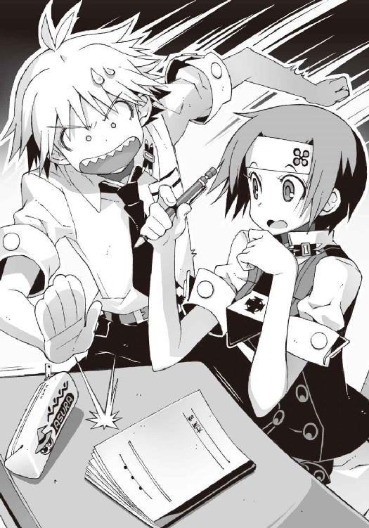
「おい、本当かよ。今の話っ!?」
「え、そうでしょ。だって、ねえ......」
杏は意外に平静な声で、同意を求めるように操緒を見る。どうやら杏の反応からすると、本人に直接問いただしたというわけではなさそうだが、
『......うん』
ほんの少し頬を膨らませ、なぜか不本意そうな表情で渋々とうなずく操緒。
へえ、と僕は驚いた。佐伯の性格からして自分の口からそのようなことを言うはずもなく、杏や操緒は、普段の彼女の何気ない行動から、好きな男の存在を突き止めたということになる。なかなかたいした観察力だ。鋭いなあ。
「佐伯って好きな男がいるんだ。操緒たちもそいつのこと知ってるの？」
僕は素直に感心して訊いてみる。
その瞬間、杏と操緒が、なんともいえない奇妙な表情を浮かべて二人同時に僕を見た。まるで僕が責められているような雰囲気である。いったいなんなんだ、この反応は。
そんな目で見られても、僕には佐伯の好きな男の心当たりなんてないと思ったが──
「あ......なんだ。もしかして、佐伯の兄貴のこと？」
佐伯妹が自分の兄を慕っているのは有名な話で、実の兄に対する過度の尊敬ぶりには、僕もたまにうんざりすることがある。たしかに佐伯兄は暑苦しいくらいの美形で、第一生徒会会長として人望も厚い。特に先日の旅客機失踪事件以来、僕も彼にはひとかどの敬意を払っている。
しかし彼が若干ナルシスト気味の奇人である事実には変わりなく、あんなものを恰好いいと信じている佐伯妹も、あまりいい趣味とはいえまい。
まあ、なんにせよ僕には無関係の話である。そう思って僕が一人で納得していると、
「......え？」
操緒と杏が、なぜかため息混じりに首を振っているのが見えた。
本気でわけがわからない。ものすごく馬鹿にされているような、呆れられているような気分である。これって新手のイジメではないかとすら思う。そして困惑している僕の隣では、
「............」
樋口が深刻な表情でなにかを考えているようだった。
○
さすがに夏休み期間ということで、夏期講習は午前中だけで終わった。課題のプリントを提出して帰り支度をしていると、樋口が声をかけてきた。
「智春。ちょっと話がある」
「話？ いいけど、なに？」
「ここじゃちょっと、な......今からファミレスにでもつき合ってくれ。おごってやる」
いつになく真剣な口調である。面倒事の予感を覚えないでもなかったが、どのみち昼食は最初から外で済ますつもりだった。食費が浮くならまあいいか、と僕がうなずきかけたとき、
「わっ、今日のお昼、樋口がおごってくれるの!?」
『なになに。今さら智春とお話なんてあらたまっちゃって？』
耳敏く聞きつけた杏と操緒が、人懐こい犬のように目を輝かせて近づいてきた。ぎょっ、と焦ったように顔を歪める樋口。
「なんでおまえらまで来るんだよ。俺は智春と二人で話をしたいんだよ。散れっ、解散っ！」
『なによその態度』
むっ、と眉をしかめる操緒。
『男だけで内緒話なんてヤな感じ。まさか樋口、佐伯ちゃんにフラれて自棄になってそっちの趣味に目覚めたとか......』
「んなワケあるかっ！ 男同士の真面目な相談があるんだよっ！」
樋口が声を裏返らせて叫んだ。僕は少し陰鬱な気分になる。勘弁してくれ。樋口の相談というのがそもそも信用できないのに。
操緒が、やれやれと肩をすくめた。
『そんなこといっても、操緒は智春から離れられないんだから仕方ないでしょ』
「そうだよっ。あたしだって智春に相談したいことがあったんだからね」
杏が、そう言って僕の二の腕に自分の腕を搦めてくる。僕は困惑。なんなんだ、今日に限ってどいつもこいつも。
そして樋口は、諦めたようにチッと短く舌打ちした。
「あー......くそ、わかったよ。じゃあ先に大原が話をしろ」
「えっ？」
「で、話が終わったらおまえは帰れ。それなら文句ねえだろ」
「うーん......まあそれならいっか。おごってもらう立場だしね」
ちゃっかりとつぶやいて微笑む杏。樋口は「ぬ......」と低くうめいたが、あえてそれ以上の反論はしなかった。
『ねえ、操緒は？』
僕の肩に取り憑いて操緒が訊く。樋口はガリガリと乱暴に頭をかいた。
「幽霊は......まあいいや。まるっきり無関係ってわけでもないしな。おまえにも確認しときたいことがある」
『んっ？』
どういう意味、と僕に問うような視線を向けてくる操緒。僕は黙って首を振る。樋口の考えていることなんて僕にわかるものか。
とりあえずなにかを決意したような様子で、大股に教室を出て行く樋口。杏と操緒を伴って、僕は彼のあとを追った。そして昇降口へと向かう廊下で、一人の女子生徒とすれ違う。
「......え？」
思わず声が洩れてしまった。
人口密度の低い夏休みの校舎で、その少女は明らかに異質な雰囲気を漂わせていた。
無意識に僕は足を止めていた。反射的に振り向いて、彼女の後ろ姿を目で追いかける。
やがて彼女も振り返って僕を見た。長い髪がふわりと流れて広がった。光の加減かまたはそういう髪質なのか、毛先が銀色に輝いているように見えた。同じ色に輝く羽根型の髪飾りの光が目に焼きつく。
そして不揃いに伸ばした前髪の下には、ゾッとするような凄まじい美貌があった。
透明感があって硬質で、ある種、人工的に思える造形美だ。
ただの美人や美少女なら、僕の知り合いにも少なくない。操緒だってかなりのものだと思う。しかし彼女はどこか異質だった。見慣れたはずの洛高の女子の夏服も、彼女が身につけているだけで、異界の美しい衣装のように感じられた。
妖精、という言葉が不意に脳裏に浮かぶ。それは彼女に相応しい形容であるように思えた。でなければ、そう──天使か。
その妖精めいた美少女は、切れ長の瞳をわずかに細めて僕の目を見返し、かすかに笑った。
そして再び背中を向けて、そのまま無言で歩き去っていく。
僕は軽い放心状態で、その姿を呆然と見送った。あるいは見とれていたともいう。数秒間の記憶の欠落を経て、僕が再び我に返ったとき、
『──智春！』
目の前には怒ったような操緒の顔があった。眉を逆立てた彼女の大きな瞳で睨まれて、僕はむしろなぜかホッとした。
『なにボーッとしてるの？ あの子のことがそんな気になるわけ？』
「あ......いや。あんな子、うちの学校にいたっけ、と思って」
『んー......？』
慌てて言い訳する僕の言葉に、操緒は怪訝な表情を浮かべた。足取りも優雅に立ち去っていく妖精さんの後ろ姿を、唇を尖らせた幽霊が目で追いかける。なにも反論しないところを見ると、たぶん操緒も彼女に遭遇したのは初めてだったのだろう。
しかしそれも奇妙な話だった。
なにしろあれだけの美少女なのだ。過去にどこかで見かけたことがあれば、忘れるとは思えない。それに彼女の存在自体が、もっと噂になっていてもおかしくないと思う。
実際、嵩月が入学してきた翌日には、人間離れした美貌の新入生の噂は全校中に知れ渡り、彼女を一目見ようと集まってきた男子生徒が廊下に大渋滞を発生させた。操緒のときも、幽霊というものめずらしさを差し引いても、だいたい似たような騒ぎがあった。
さっきの妖精さんは二人と比べても遜色ない美少女で、当然、彼女たちと同じくらい有名になっているはずだった。しかし現実には僕は彼女の名前を知らない。それどころか過去に校内で見かけた記憶すらない。仮に彼女が転校生だったとしても、もう少し情報が出回ってそうなものである。
不審に思って首を傾げる僕と操緒の肩の隙間から、杏がひょこりと顔を出した。
「あれ......あの子、学校に来てたんだ。声かければよかった」
「え？」僕は驚いて彼女の頭を見下ろした。「杏、彼女のことを知ってるの？」
「うん。入試のときの面接で同じ組だったよ」
「へえ......」ということは、彼女は僕たちと同じ一年生なのか。
「たしか九組だったと思ったけど、身体弱いみたいで、あんまり学校に来てないみたいなんだよね。保健室でたまに見かけるなあ」
「ああ、なるほど......じゃあ、出席日数の足しにするために補習に出てきてるのかな」
そういう事情であれば、いろいろな疑問が腑に落ちる。同じような理由で居残り補習に精を出している先輩に一人知り合いがいるからだ。
「うーん、そうかもね」
杏は素直にうなずいた。もともとそういう細かいことを気にする性格ではないのだ。それよりも彼女の興味の対象はほかの部分にあるらしく、ニヤリと猫のように目を細めて笑い、
「ねえねえ、智春ってやっぱりああいう感じの子が好きなの？」
「えっ？」
あまりにも脈絡のない杏の質問に、僕は混乱した。なんでそうなる。やっぱり、というのはどういう意味だ。
「だってあの子、奏ちゃんに似てない？ 雰囲気とか？」
「そ......そうかな」
杏の言うことはわかる気がした。さっきの彼女と嵩月には、どこか共通する雰囲気があった。
ただ美少女というだけでなく、まとっている空気のようなものが似ているのだ。近寄る者を拒絶するような、冷ややかで孤独な雰囲気、とでもいえばいいだろうか。
嵩月のことを澄んだ水面に映る月の光に喩えるなら、さっきの少女は、月の光に照らされた透明な氷河だ。または同じ宝石から削りだした、二種類の女神像になぞらえてもいい。
詩的すぎて自分でもなにを言っているのかわかりづらいが、あの二人から僕が連想したのはまさしくそんなイメージだった。
しかしそれはそれとして、杏の言葉を素直に肯定するのは抵抗があった。嵩月に似ている子が好みというのは、嵩月のことを好きだというのと同じ意味ではないのか。いや、もちろん嫌いではないのだけれど。
「まあ、たしかに似てるかもな」
先に行ってたはずの樋口までもが、わざわざ戻ってきてそんなことを言う。そしてどういうつもりなのか、樋口は僕の肩に重々しく手を置いて、
「いいか、智春。しかし余計なことは考えずに嵩月にしとけ。嵩月のほうが、鳳島よりたぶん可愛いし性格もいい。成績でも勝ってるし胸だってでかい」
「いや、だからそういうことじゃ......え？」
樋口のどうでもいい助言を適当に聞き流そうとして、ふとなにかが僕の記憶に引っかかった。
「待った樋口。今なんて言った？」
「ん、胸のことか。それなら間違いない。着痩せするから細く見えるけど嵩月はめちゃめちゃスタイルいいぜ。推定Ｆかそれ以上。サイズもでかいがそれ以上に形が──」
「違う。そうじゃないよ」
誰がこんなところでクラスメイトの胸囲のことなんか訊き返すか。
「さっき、彼女のこと鳳島って言わなかった？」
「ああ、九組の氷姫のことか。鳳島氷羽子っていうんだよ」
「氷姫？」
「あだ名だよ。不登校気味とはいえ、見た目があれだろ。嵩月ほどじゃねえけど彼女にも隠れファンは多いんだよ。けど、あの女、クラスの男子とも滅多に口を利かないし、誰にも笑った顔を見せたことないからさ。それでついた呼び名が──」
氷姫、というわけか。
たしかにその呼び名は、冷たく透きとおった彼女の印象に相応しく思えた。しかし気になることもあった。誰にも笑った顔を見せたことがない？ だったら、僕が見た彼女のあの表情はなんだったのだろう？
そしてもうひとつ、鳳島という彼女の姓が妙に気になった。
その名は僕に否応なくある男を連想させたからだ。魔精霊を操る雄型悪魔。頭の悪そうな銀髪で、若干ロリコン気味の変人を。
「まさかな......」
かろうじて操緒にだけ聞こえるくらいの声で僕はつぶやいた。
たしかにめずらしい苗字だが、それだけであの二人を関係者だと決めつけるのは乱暴だろう。僕たちの知っているあの悪魔と、さっきの少女とではあまりにもイメージが違いすぎる。
おそらく操緒も僕と同じことを考えていたのだろう。
『うん......まさかね......』
ギリギリ僕に聞こえるかすかな声で操緒が独りごち、そして僕たちは互いに顔を見合わせ、ハハハと乾いた声で笑った。
○
結局、昼食の会場は学校近くのカレー屋になった。新メニューの青カレーを食べてみたいと杏が強硬に主張したせいである。
色気とは無縁の食事だが、そもそも杏に色気を求めるのが間違いという気もするし、真夏にカレーというのはそう悪い選択でもない。もともと樋口のおごりという条件だったので僕には特に不満はなかった。出資者である樋口も、文句を言わずに店に入る。
食事の値段の割に小綺麗で、雰囲気のいい店内だった。
これなら樋口の相談とやらにつき合って長居しても問題なさそうだな──と思ったところで、ようやくその相談の内容とやらが気になってきた。わざわざこんな店まで来て話さなければならない用事というのはなんだ。
たぶん今朝の佐伯妹との一件に関連しているのだろう、とは思っている。
可能性が高いのは、彼女と首尾よく交際できるように協力しろと依頼されるパターンである。
下手すると、悪人に扮して佐伯妹を襲撃し、間一髪で駆けつけた樋口にぶっ飛ばされる小芝居くらいやらされそうだ。
そういうことを考えると少し気が重い。
樋口に協力してやりたい気持ちはあるのだが、今の僕はあの兄妹との適切な距離感を測りかねていた。ほんの数日前の旅客機失踪事件で、佐伯兄妹は彼らの従姉妹を失ったばかりなのだ。
あの兄妹の性格からして、人前で落ちこんでいる姿を見せることはないのだろうが、だからといって悲しくないわけではあるまい。そんなときにまで樋口のアホな作戦行動につき合わせるのは、さすがに可哀想な気がした。それに哀音が消滅したことで悲しんでいるのは彼らだけじゃない。僕自身まだ気持ちの整理がついてないのだ。
そんなことを思いながら、運ばれてきたカレーを何気なく口に入れ、
「──っ！」
僕は声も出せずに悶絶した。なんだこれ。メチャメチャ辛いな。本当に人間の食い物か？ しかも本当に青いカレーである。青唐辛子のような緑に近い青ではなく、むしろ濃紺。どんな食材を使って味付けしたら、こんなことになるのか想像できない。
げほげほと咳きこみながら水をがぶ飲みする僕の姿を見て、杏がアハハハと高らかに笑った。
「くうぅ、効くねえっ！」
そう言いながら、杏は平然と奇怪なペースト状の物体を載せたスプーンを口に運んでいる。見ているだけで嫌な汗が出てきそうだ。
僕は途方に暮れながら、自分の皿に盛りつけられた大量の激辛不気味カレーを眺める。どうせ樋口のおごりだと思って、大盛りなんかを注文したのが裏目に出た。
ふと気づけば、樋口本人は、最初の一口を食べた直後からテーブルに伏して悶絶している。もしかして死んだんじゃないだろうな。
「──ねえ、智春。聞いてる？」
「え？」
耳元で名前を呼ばれて顔を上げると、すぐ目の前に、身を乗り出している杏の姿があった。僕が呆然とカレーを眺めている間、ずっと話しかけていたらしい。
そういえば杏も僕に相談したいことがあるとか言ってたっけか。
「ああ......ごめん。なんの話だっけ？」
とりあえずスプーンを置いて訊き返す。杏は、もう、と青く染まった唇を突き出し、
「来週から暮海崎のペンションに行かない、って訊いてるの」
「ペンションって......泊まりで旅行ってこと？」
暮海崎はこの辺りではわりとメジャーな海水浴場だ。一瞬、想像してしまう。広がる青い海。白い砂浜。なにもせずぼんやりと空を眺めている自分。いいなあそれ。
しかし杏はあっさりと否定して、
「違うよ。だからバイトだってば」
「......バイト？」
「そっ。うちの叔父さん夫婦がやってるペンションなんだけどね。予定していたアルバイトの人たちが急に来られなくなっちゃって、来週だけでも手伝いに来て欲しいっていってるの」
「ああ......なんだ。そういうこと」
納得した。杏の実家の大原酒店は、実は僕のバイト先でもある。一人暮らしの生活費を稼ぐため、週に三日ばかり働かせてもらっているのだ。その関係で、杏の叔父さんという人物とも何度か顔を合わせたことがある。だから、そう言う状況で僕に声がかかるのは不思議ではない。
「えーとね、仕事の内容は掃除とか皿洗いとか給仕とか、そういう雑用だね。忙しいのは午前中と夕方だけで、それ以外の時間はわりと暇だから、普通に海で泳いだり、観光もできるよ」
『海!? 観光っ!?』
杏の言葉に、敏感に反応したのは操緒だった。そういえば今朝の彼女は、夏休みらしいイベントの予定がなにもないって怒ってたな。
「そうそう。ペンションからビーチまでは歩いて五分くらいだしね。近くに有名な観光名所もあったと思うなあ。灯台とかショッピングモールとか、あとは樋口が言ってた心霊スポットの洞窟とか」
『へえ、肝試しもいいねえ。夏休みっぽくて』
すっかり乗り気になってつぶやく操緒。僕はうんざりと息を吐く。なにが悲しくて幽霊憑きの人間がわざわざ肝試しなんかに参加しなきゃならんのだ。
しかし杏は、さもあらん、と満足げにうなずき、
「バイト代はちょっと安いけど、タダで客室に泊まれるし、いい条件だと思うんだけどねっ、どう？」
「うーん......」
僕は口ごもる。たしかに条件は悪くない。もともとこの夏休み中は、ちょっとした短期のバイトを探して、逼迫気味の生活費を稼ぐつもりだったのだ。その場合、夏休みらしいイベントとやらを求めている操緒に文句を言われるのが気がかりだったのだけど、どうやら彼女も海辺のリゾートでの仕事なら、それほど不満はないらしい。
「あとね」そう言って杏は、僕の反応を窺うような意味ありげな表情で、「実は奏ちゃんにも声かけてあるんだよねっ」
「嵩月に？」
ちょっと驚いて訊き返す。いつの間にそんな手回しを？
杏は、不気味カレーを涼しい顔で咀嚼しながらうなずき、
「うん。だって操緒ちゃんは労働力にはならないもんねっ。宿の宣伝にはいいかもだけど」
「まあ、それはそうだけど......それで嵩月はなんて？」
「智春が一緒なら行くって」
「えっ」
げほ、と僕は咳きこんだ。危うく気管にカレーが入るところだった。
たぶん彼女の発言には、それほど深い意味はないのだろう。嵩月は以前から、僕を守る、と強硬に主張している。ただでさえ顔を合わせることの少ない長期休暇中。なるべく僕と一緒にいたほうが護衛しやすいから、という程度の理由で、そのような表現を選んだのだと思われた。
しかし事情を知らない人間には、誤解を招きそうなセリフなのも事実だ。
実際それを聞いていた操緒が、なんともいえない表情を浮かべて黙りこむ。そして、
「──それだっ！」
唐突に大声で叫んだのは、それまで無言でカレーをかっ喰らっていた樋口だった。ナプキンで唇を乱暴に拭って、そのままテーブルの上に身を乗り出し、
「智春、決まりだ。バイトするぞ。真夏の夜に海辺のペンションにお泊まり。こんな都合のいいシチュエーションはほかにあり得ねえ！」
「え......？」
なぜか急にひどく興奮した様子の樋口を、僕はぽかんと目を丸くして見つめた。いったいなにを言っているんだこいつは。
「あのさ、樋口......悪いけど、肝試しにはつき合わないぞ。興味ないから」
「ああ。そんなものはどうでもいい。要はおまえらの仲が深まればいいんだ。協力するぜ」
わけのわからないことをつぶやいて、一人で納得する樋口。
杏が驚いたように目を瞬き、
「え？ 協力するって......もしかして樋口もバイトするつもり？」
「おう、当然だ。バイトの従業員が一人や二人増えたってべつに構わないだろ？ 交代制にするって手もあるし。人が増えたら仕事もそのぶん楽になるぜ」
「うーん、まあそれもそっか......」
あっさりと懐柔される杏。樋口は策謀を巡らす悪辣な軍師に似た笑みを浮かべ、
「そうそう。智春だけに任せとくと、おまえらはいつまで待っても進展しそうにないからな」
進展ってなんだよ、と僕は顔をしかめた。おまえらというのは、まさか僕と嵩月のことか。いや、それはあり得ない。僕と嵩月との関係に、樋口が口を出すメリットはなにもないはずだ。
『......なに考えてるのよ、樋口？』
操緒が胡乱げな目つきで睨んだ。すっとぼけた表情で肩をすくめる樋口。
「悪いな、操緒っち。可哀想だとは思うが、ここはひとつ、なにも言わずに身を引いてくれ。恨むなら俺を恨んでいいぜ」
『なによそれ』
見るからに不機嫌な表情で操緒がつぶやく。やめてくれよな、と僕は嘆息した。あとで僕がとばっちりを受けることになるのだから。
それに、勝手に盛り上がっている樋口には悪いが、そもそも僕は杏のバイト話を引き受けるとは言ってない。
「あのさ......そのバイトの話だけど、やっぱり僕は無理だと思う」
「え？」
話の成り行きからして無理もないことだが、さすがに杏も驚いた表情を浮かべていた。
「あれ、なんかまずかった？」
「いや、バイト自体はいい話だと思うんだけどさ。泊まりがけってのはちょっと」
「なんだそりゃ。もともとオマエ一人暮らしじゃんかよ。いやまあ幽霊はともかく」
樋口が呆れたような声を出す。わりと的確な指摘である。外泊といっても同級生の親戚が経営している宿であり、高校生男子の一人暮らしよりもむしろ規律の面では健全といえる。が、
「いや、本当に一人だったらよかったんだけど。今はアニアがいるからさ」
「アニア？ そういや、あのガキんちょ、おまえん家にホームステイしてるんだっけか」
そう言って樋口は顔をしかめた。彼とアニアは犬猿の仲というか、極端に相性が悪いのだ。それもまあ仕方ないかなあ、とは思う。なにしろ初対面での印象がお互い最悪だった。
僕はうなずき、
「いくら居候っていってもさ。まだ十歳かそこらの女の子を一人で残して泊まりに行くのは、さすがにまずいだろ」
『んー......そだね。鳳島のこともあるしね』
少し落胆した表情でつぶやく操緒。そう。実はアニアには、若干ストーカー気味の傍迷惑な男がつきまとっているのである。鳳島といっても学校の廊下ですれ違った美少女ではなく、銀髪の雄型悪魔のほうだ。
それを抜きにしても、アニア一人に長期の留守番を任せるのはまずい。なぜなら彼女は家事能力がゼロなのだ。一週間も放っておいたら鳴桜邸を廃墟に変えた挙げ句に、栄養失調でぶっ倒れているに違いない。
そんなわけで杏が持ってきたバイトを請けるのは、いろいろと無理があるのだった。いい話だと思ったのだが、残念だ。
「だったら、ニアちゃんも連れてったら？」
そのとき、意外な解決策を提示したのは杏である。
「え？」
「あたしや奏ちゃんと同室でよければお布団くらいは用意できるしさ。バイト代は出ないけど、あと一人くらいお客さんが増えたって平気だよ。そういえばニアちゃんて留学生なのに、旅行とか行ってないもんね。せっかくの機会だから連れてってあげるといいと思うなっ」
「うん......まあ、そういえばそうかな」
近場の海水浴場なんかで、あのアニアが喜ぶとは思えないのだが、しかしああいうタイプに限って実際に海に連れて行くと、大はしゃぎする可能性がないわけでもない。たしか地図で見る限り、アニアの故郷には海がなかった気もするし。試してみる価値はあると思う。
「そうだね。とりあえず、本人に訊いてみるよ」
あまり期待せずに僕がつぶやくと、
「いや、智春、そこはなんとか土下座してでも連れて来るんだ。あのガキんちょの面倒ぐらい俺がいくらでも見ててやる。だからおまえはヤツのことなんか気にするな！」
やけに気合いの入った口調で樋口がそう言った。
なにを言ってるのか相変わらずよくわからない。いつからアニアとそんなに仲良くなったのだろう、と不思議に思う。まあ、彼らが仲良くしてくれるのはいいことだけど。
「それはそうと、樋口......なんか僕に用事があるんじゃなかったっけ？」
挙動不審っぽい彼の態度を見ているうちに、ふと思い出したので訊いてみる。しかし樋口は、なぜか不敵に笑って首を振った。
「ああ、その話はもういいんだ」
「そうなのか？」
「おうよ。あとはまあ、あれだな。現地に着いてからのお楽しみってことで」
「......お楽しみって......バイトに行くんだろ？」
樋口の言動に不審を覚えつつ、僕も無理に追及はしなかった。この男が考えていることに、あえて問いただす価値があるとも思えない。
それよりも気がかりなのは操緒のほうである。さっきまで海だの肝試しだのと騒いでいたのに、急にむっつりと押し黙って窓の外を見ていたりする。ただ怒っているというよりは、もう少し複雑そうな表情なのだけれど、正確なところはよくわからない。不安といえば不安だが、操緒の気まぐれはいつものことだ。あまり気にしないことにする。
ただ一人、杏だけが晴れやかな表情で、
「これで問題解決だねっ」
楽しそうに笑う彼女を見ているうちに、僕としても細かいことはどうでもよく思えてきた。
考えてみれば、杏たちと泊まりがけでバイトというのも賑やかそうで悪くなかった。ロクに予定も立ててなかった夏休みの過ごし方としては、上出来の部類に入るだろう。海水浴なんて小学生のときの臨海学校以来だし、嵩月たちの水着姿に期待してないといえば嘘になる。
海を見てはしゃいでいるアニアの姿というのも、想像してみるとけっこう楽しい。
樋口の悪巧みに荷担するみたいで癪だったが、少し無理してでも彼女を誘ってみようと僕は思った。そう。そのときは。
しかし結局、その想像が実現することはなかった。
なぜなら、僕にはアニアを説得する機会が、最後まで与えられなかったからである。
夏休み初日。前期夏期講習開始一日目。
その日から一週間が過ぎても、アニアは鳴桜邸に帰ってこなかった──
二章
休日の時間が過ぎるのは早い。騙されているのではないかと思えるほどに。退屈な補習で幕を開けた夏休みの最初の週は、ほとんどなんの記憶も残さないまま過ぎ去り、貴重な長期休暇は早くも二週目に突入していた。
この時期になると生活リズムの乱れも顕著になっており、普通に朝起きることが苦痛になってくる。強烈な朝の陽射しや騒々しいセミの鳴き声にも慣れ、僕は自室のベッドの上で惰眠を貪っていた。普段ならそろそろ起き出して登校の準備を始めなければならない時間だが、堂々と朝寝が出来るのは夏休み中の学生の特権だ。昨夜深夜まで荷造りしていたのも、少しでも朝遅くまで寝ていたかったからである。
それなりにいい夢を見ていたような気もする。
しかし僕のそんな安らかな眠りは、思いがけない騒音に破られた。
「──起きろ、智春っ！」
聞こえてきたのは無駄に勢いのある大声と高笑いだった。そして次の瞬間、陽射しを避けるために頭に被っていた布団が乱暴に剥ぎ取られた。勢い余って僕はベッドからずり落ちる。さすがにそれ以上眠り続けるのは不可能だった。
「......ひ、樋口？」
寝ぼけ眼を擦りつつ、僕は哄笑を続ける闖入者を見上げた。見慣れた鳴桜邸の自室である。なぜここに樋口が立っているのかわからない。この男のことだから、玄関の施錠を突破するくらいのことは普通にやるだろうけど、なんで僕が男に寝込みを襲われなければならんのだ。
「おいおい、いつまで寝てんだ、智春。今日から住みこみでペンションのバイトだろ。まさか忘れてないだろうな？」
「いや。それは覚えてるけど、待ち合わせは十二時に駅前の予定だったはずじゃ......」
顔をしかめながら僕は目覚まし時計を探す。まさか寝過ごして遅刻した僕をわざわざ呼びに来てくれたのか。そんな馬鹿な、と思いつつベッドサイドのアナログ時計の針を睨み、
「て......まだ六時前じゃないか！」
絶句する。気を利かせて起こしに来てくれたのだとしても、いくらなんでも早過ぎだろう。もしかしたら樋口のやつ、遠足前の子どもみたいにバイト旅行が楽しみで眠れなかったのだろうか。そんなのに僕を巻きこむなよ。
『んー......なんの騒ぎ？』
まだ半分眠ったような顔の操緒が、ゆらりと空中に現れた。短パンに短いＴシャツだけというひどく無防備な恰好だ。目立つほどの膨らみがないのでわからないがたぶんノーブラ。普段の樋口なら喜ぶ場面だと思ったが、
「ああ、悪いな。操緒っち。あんたはいいんだ。寝ててくれ。ゴーバック・トゥ・スリープ！ グッナイ！」
『んあ......？』
操緒は開ききらない目で胡乱げに樋口を眺めていたが、眠気のほうが勝ったのだろう。ふわ、と小さくアクビを洩らすと、そのまま再び虚空に溶けこむようにして姿を消した。こんなときは幽霊である彼女が少しうらやましい。僕は寝ぼけた頭を振りながら、
「それで......なんなんだよ、樋口、こんな時間に。用がないのなら僕も寝直していいかな？」
「はあ？」
樋口が大げさに驚いてみせた。
「なに言ってんだ。おまえにそんな余裕あるわけないだろ」
「え？」
「とりあえず顔を洗って来いよ。いや、シャワーだな。隅々まで念入りに綺麗にな」
「はい？」
「あと、風呂上がりにはこれ使え。付け焼き刃でもやらないよりマシだろ」
そう言って樋口が取り出してきたのは、いわゆるスキンケアグッズの類だった。ローションや乳液、制汗剤。高級そうな見慣れない小瓶は香水らしい。
「えっと......樋口？ これなに？」
なぜペンションのバイトに行くのに、こんなものをゴテゴテ塗りたくらなければならないのだろう。ホストクラブじゃないんだから。
しかし樋口はその疑問には答えず、
「それから服を用意しなくちゃな」
「服？ 宿泊中の着替えなら昨日のうちにカバンに詰めてあるけど......」
「ああっ？ ダメだダメだ、こんなもの！」
勝手に僕の旅行カバンを開けたかと思うと、樋口は中に詰めてあった服を乱暴にかき出した。おいおいおいおい。何の真似だよ？
「なんだよこれは。古着とかジーンズばっかじゃねえか。もっとピシッとした服はないのかよ」
「いや......だってバイトに行くんだから。動きやすい服装のほうがいいだろ」
「甘い。問題はバイトだけじゃないんだよ。下着は......いちおう新品か。まあこれならいいか」
「は？」
なにを言っているのかわけがわからない。樋口は困惑する僕に取り合わず、さらにカバンの中身を漁り続け、
「くっ。智春っ、この水着、学校指定のヤツじゃねえかよ」
「べつに問題ないだろ。大手メーカー製だし、デザインも普通だし」
「フツーじゃだめなんだよ。もっとこう、アピールするものがねえと」
「アピールって......」なにをだ。
樋口は、ふう、と大げさにため息をついた。そして、ちらりと時計を見る。
「まあいいか。まだ時間はあるからな。駅前のモールで買ってけばいいだろう」
「はっ？ なんで？」
これからバイトに出かけようというのに、その前に無駄金を使ってどうする。
「その前に美容院だな。朝からやってる店に予約を入れても......やっぱ時間ギリギリか。くそ、もう少し早く起こしに来るべきだったぜ」
「え......美容院って僕が行くのか？」
「当然だ」
自信たっぷりにうなずく樋口。なにがどういうふうに当然なんだよ。たしかにそろそろ髪を切りたいとは思っていたが、バイト代が入ってから行くつもりだったのに。
「まあいいや......シャワー浴びてくる」
問い詰めたいことは無数にあったが、起き抜けで頭がまだ上手く働いていない。樋口を締め上げるにしても、風呂に入ったあとでいいだろう。
僕はバスタオルと着替えだけを持って部屋を出ようとした。樋口がなにを考えているのかは知らないが、とりあえずオッサン臭そうな香水に用がないことだけは確実だ。
しかし僕が廊下に足を踏み出した直後、
「待て、智春。おまえに最初に見せておきたいものがある」
樋口に背後から呼び止められた。
「......なんだよ？」
「いいから見ろって」
うんざりと振り返る僕に樋口が突きつけたのは、その辺のコンビニで売ってるタウン情報誌だった。いちおう最新号ではあるらしい。開いたページに書かれていたのは、
「占い？」
「おう。よく当たると評判のフォーチュングラップラー黄泉子先生の星占いだ」
「......ふうん」
占い師というよりは格闘家か殺し屋みたいな名前の先生である。それ本当に当たるのか？
「智春ってたしか牡牛座だったよな」
「そうだけどさ」
「驚け。恋愛運が星五つ。今週は最高の運勢だってよ。『運命的な恋の季節到来。身近な異性との仲が進展する予感』だそうだ」
「えと......それで？」
「『旅行先で気になる人との距離が縮まるハプニングがありそう。彼女の悩み事に気づいて吉。ラッキーアイテムは焼きトウモロコシ』」
「いやいや、そうじゃなくてさ......樋口、前に占星術は信用できないって言ってなかったか？ フリーサイズ効果がどうとか統計学としても不完全だとか」
重度のオカルトマニアであるがゆえに、樋口はこのあたりの理屈にはうるさいのだ。
仮に生まれ月による成長速度の差などから、ある程度の統計的な性格判断が可能だとしても、それはあくまで過去のデータの分析であり、未来の事象が予想できるというロジックにはならない、とかなんとか。そんなことを言い出したら、占いなんて軒並み存在価値をなくすと思うのだが。
「細かいことは気にするな。たしかに決定論的な未来予測の可能性は不確定性原理で否定されているが、暗示効果とか錯誤とかあるんだよ。この占いは当たる。信じろ！」
「いいよべつに。それはどうでも」
力説する樋口を置き去りにして、僕は今度こそ浴室へと向かった。
樋口の阿呆め。いったいなにを考えているんだか。まさか雑誌の星占いを見せるためだけに僕を早朝に叩き起こしたわけではないとは思うが。やはりバイト旅行で浮かれているのだろうか。しかし、それと星占いにいったいなんの関係が。
部屋に一人取り残された樋口は、スケジュール帳と時計を見比べながら、なにやら考えこんでいる様子だった。変なヤツだ、と僕は思った。
○
そして集合の時間になって、杏や嵩月と合流し、電車に乗りこんだあとも樋口は変だった。
「よっしゃ、座席確保っ。嵩月は奥に詰めてくれ。智春は全員の荷物を網棚に載せろ。残りは俺と弁当の買い出しに行くぞっ、突貫！」
ホームに到着した特急列車に駆けこむなり、樋口は一方的にパーティの役割分担を仕切り、杏の手を握り締めて再びホームへと飛び出していった。
「ええっ......あたしも窓際の席がいいよ、樋口っ！」
『なんで操緒が買い出し要員なのよ!? お弁当なんて食べないのにっ！』
二人の少女が口々に抗議するが、樋口は黙殺。そうこうしているうちに列車の発車時刻が迫り、操緒たちは仕方なく樋口のあとを追った。車内には僕と嵩月だけが残される。
「......なんなんだ、あいつ」
売店に向かって走っていく樋口たちを目で追って、僕は困惑気味に首を振った。
同じく置き去りにされた嵩月が、四人がけのボックス席にちんまりと腰掛け、困ったような表情を浮かべていた。嵩月らしいその表情が、妙に懐かしくて新鮮に思えた。
成績優秀でしかも病み上がりだった彼女は夏期講習には出てきておらず、そういえば嵩月と顔を合わせたのは十日ぶり。彼女の見舞いに行ったあの日以来だった。そのせいか、わけもなく緊張してしまう。
嵩月も同じ気分なのかどうかは知らないが、もともと寡黙な彼女は、なにか物言いたげに沈黙していた。居心地悪いような面映ゆいような奇妙な気分だ。
ちなみに今日の嵩月の私服は、シンプルなミニのワンピース。セーラー襟に白と紺のマリンスタイルだ。どちらかといえば地味な装いなのだが、彼女の並外れた美貌のせいで凄まじく目立っている。お忍びで旅行中の芸能人といえば、それを聞いた全員が確実に信じると思う。
「あ......手伝います。荷物」
四人分の荷物を網棚に上げていく僕を見て、その嵩月が立ち上がった。
「悪い、助かる」
僕は素直に好意に甘えることにした。一個だけ、やたらでかくて重くて手に負えない荷物があったのだ。どうせ樋口のやつだろうと思いきや、意外にも杏の持ち物だった。いかにも体育会系の大型スポーツバッグ。こんなものをよくここまで運んできたな。
「なにが入ってるんだこれ。固いし重いし......おうっ!?」
文句を言いつつ無理やり荷台に押し上げようとすると、半開きになっていたファスナーから中身が零れ出して落下してきた。危うく顔面にまともに喰らいそうになって冷や汗をかく。
零れ出したのはギチギチに折りたたまれたナイロンの塊。そして分割式のオールの先っぽ。どうやら本格的なゴムボートの部品らしい。
ほかにもビーチボールやら銀マットやらサンオイルやらがバラバラと落ちて床に散らばった。
観光地の名前が入った木刀は、おそらくスイカ割りに使うためのものだと思われる。
「くふっ......」
たまりかねたように嵩月が小さく喉を鳴らした。そのまま彼女は肩を震わせて笑い出す。
つられて僕も苦笑した。緊張が解けた反動で一気に気が抜ける。
「遊ぶ気満々だな、杏のやつ。自分からバイトに誘っといて」
「......でも、楽しそう」
笑い続ける嵩月の手を借りて、僕はどうにか荷物の配置を終えた。
電車の中はそれなりに混んでいた。
僕たちが確保していたのは向かい合わせのボックス席である。四人掛けだが、嵩月は細いし杏は小さいし、そもそも操緒は幽霊なので、それほど窮屈でもないだろう。
バイト先のペンションまでは、特急列車で九十分ほどの予定だった。駅弁など買って車中で食べながら、観光気分で出かけようという計画だ。
しかし弁当を買いに行った樋口たちはまだ戻ってこない。あの三人のことだから、つまらないところにこだわりを見せて、寄り道している可能性は高かった。
電車の発車時刻まであまり余裕はないはずだが、間に合うのだろうかと心配になる。
樋口たちが乗り遅れるだけなら、べつにどうとでもなるのだが、このまま腹を空かせて目的地まで行くのはちょっとつらい。
ただまあその場合、嵩月と道中二人きりということになるわけで、それはちょっといいかな、と思わないでもなかった。彼女には訊きたいことがたくさんあるのだ。
「......ニアちゃんは」
しかし先に質問してきたのは、驚いたことに嵩月のほうだった。黒目の大きな瞳にさっきまでの笑顔の余韻を残し、小鳥のように首を傾げて僕を見る。
「今は、なにを？」
「いや、それがさ。あいつ、うちに帰ってきてないんだよ。ここのところずっと」
「え？」
「いちおう何度か連絡があって、心配ないと本人は言ってるんだけど」
「でも......一人で？」
嵩月が不安そうな声を出す。無理もない。天才少女という触れこみにもかかわらず、アニアには一般常識が欠けている。そのあたりの小学生と比較しても日常生活では無能なのだ。
一人で電車やバスに乗れないのは当然で、食事だってまともにとれるかどうか怪しい。部屋の電気を消したら寝られない。一人では夜中にトイレにも行けない。おまけになにもない場所でよく転ぶ。そんな手のかかるお子様が一週間も外泊を続けていると聞かされたら、それは不安にもなるというものだ。
「えーっと、アニア一人ってわけじゃないんだよ。部長が一緒だから」
正確には一緒にいるのは部長ではなく、彼の現し身のヌイグルミである。部長の本体は出席日数の不足を補うため今日も補習に出ているはずだ。当然それに気づいた嵩月は、余計に気遣わしい表情になる。
「あと念のため朱浬さんにアニアのことを追っかけてもらうように頼んでおいた。たぶん昨日あたり合流したと思う」
朱浬さんがその役目を引き受けてくれたので、僕もこのバイトに行くことに決めたのだった。なにも連絡がないということは、アニアとは首尾よく合流できたのだろうと思う。
僕はほとんどため息のような声で言った。
「アニアは加賀篝の行方を追いかけてるんだ」
「えっ」
嵩月がびっくりしたように眉を上げた。当然だ。彼女が入院することになった直接の原因は、加賀篝の使い魔から僕を助け出すためだったのだから。
しかもその使い魔を召喚した加賀篝の契約悪魔こそが、アニアの実の姉なのだ。ややこしい。
「無責任な話だけど、僕はアニアを止めてもいいのかどうかわからなかったんだよ。アニアが言うように、今が加賀篝を追いかけるチャンスなのも本当だし」
我ながら言い訳めいた口調だったが、それはかなりの部分が真実だった。加賀篝は前回の事件で傷を負っている。それに彼の使い魔や機巧魔神も傷ついていた。一週間やそこらで完全に回復する負傷ではないはずだ。加賀篝のような賢しい男が、そんな状態で洛高の生徒会と敵対するような行動を取るとは思えない。逆に考えれば、今は加賀篝と平和的に話し合いをする滅多にない好機ともいえる。
「そう......かも」
嵩月が遠慮がちの声でつぶやいた。
「たしかにニアちゃんの気が済むようにさせてあげたほうがいいかもしれない。今なら加賀篝、さん、も新しい事件を起こすほど体力が戻ってないはずだし......それに、彼には......」
時間がない。嵩月はそうつぶやきかけてやめた。
そう。加賀篝にはもうあまり時間が残されていないのだ。
なぜなら彼の契約悪魔であるクルスティナ・フォルチュナは、非在化を始めているからだ。このままでは遠からず彼女は、存在の痕跡すら残さず消滅するのだという。
アニアの焦りもそれが原因らしいのだが──実は僕にはその非在化という理屈があまりよくわかっていない。操緒も当然知らないはずだし、朱浬さんに訊いても教えてくれるとは思えなかった。アニアにはもちろん恐くて訊けない。
それを質問するべき相手としては、おそらく目の前の寡黙な少女がもっとも相応しいのだろう、とは思う。意外に口下手な嵩月の説明を、ちゃんと理解できるのかと問われると今イチ自信がない。のだが、
「あのさ、嵩月。前に加賀篝が言ってた非在化って──」
仕方ないので、とにかく訊いてみようと思った。
その直後。電車の発車を知らせるメロディが聞こえてきた。コブシの利いた車掌のアナウンスがホームに鳴り響く。出発時刻になったのだ。
「あっ......」
嵩月が呆然とした表情で窓の外を見た。少し遅れて、僕も事態の深刻さに気づいた。樋口たちがまだ戻ってきていない。
「なにやってんだ、あいつら......!?」
僕は思わず立ち上がって窓へとかぶりついた。
ゴトン、と列車が乱暴に動き出したのはその瞬間だった。ニュートン力学におけるところの運動の第一法則に従って、僕の身体は大きくふらつき、向かい側の座席へと倒れこむ。
そこには嵩月のほっそりとした身体があった。
とっさに僕を支えようとした嵩月だったが、さすがに座ったままではどうにもならず、僕はそのまま彼女ともつれ合って派手に転倒。嵩月を座席に押し倒すような形で動きを止めた。電車がゆっくりと揺れながら加速していく。
「ご......ごめん」
僕が掠れた声でつぶやき、
「ううん......あの、大丈夫......？」
嵩月が頬を赤くしながら首を振った。それと時を同じくして僕たちの背後から、
「やーっ、危なかった。乗り遅れちゃうかと思った。ギリギリだったよぉ」
『もう......樋口が冷凍ミカン食べたいとかワガママ言うから』
「仕方ねーだろ。売店があんな遠いとは思わなかったんだよ。おまえらだって向こうの変な電車が見たいって騒いでたじゃねえか」
『だって四八五系にあんな車両があるなんて知らなかったもの。あれ新型だよ』
ほかの乗客の迷惑を無視した賑やかな声が近づいてきて、僕はさっと青ざめた。
嵩月を巻きこんだまま僕がどうにか上体を起こしたのと、戻ってきた三人が、座席の影から姿を現すのはほぼ同時だった。車内の空気が凍りつく。
『......なにしてるの？』
一瞬の沈黙のあとで口を開いたのは操緒だった。いつにも増して冷たい声と無表情。
「あっ......」と少し焦った様子で着衣の乱れを直す嵩月。
「いや、違う......これは......」
僕は必死で言葉を探した。これはただの事故であり、そもそも操緒たちの帰りが遅いから、このような問題が起きたわけで、しかしそれを実証する合理的な論理はすぐには思いつかず、
『............』
操緒は無言。そうこうしている間に大量の弁当を抱えた杏が騒ぎだし、
「なになにっ、なにがあったの？ 見えないんだけどっ？ あれ、なんであたしの木刀が落ちてるの!?」
そして樋口は僕と目を合わせてニヤリと笑った。グッジョブ、とばかりに親指を突き立てる。
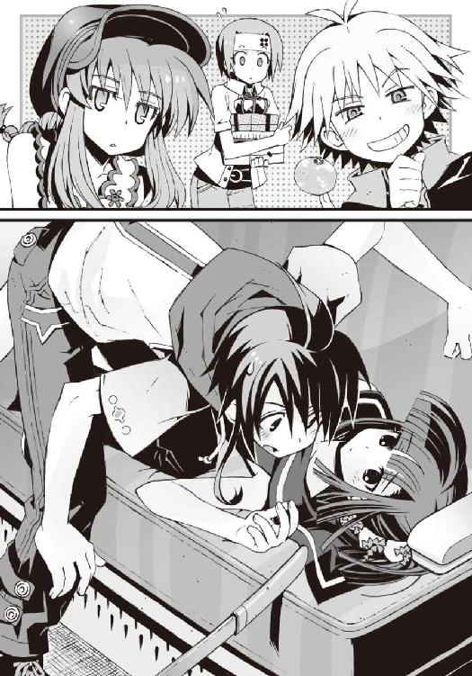
どういう意味だよ、と僕は思った。
まさか今のこの状況は、全部こいつの計略なのか。僕と嵩月を二人きりで車内に残したのも、ギリギリまで戻ってこないで僕たちを焦らせたのも。
樋口は、操緒をなだめるように肩をすくめ、
「まあまあ落ち着けよ、操緒っち。夏休みだし、旅行だし、こういうこともあるさ。な、智春。それより弁当買ってきたぞ。中身は全部違ってるから、ジャンケンな」
へらへらと笑いながら、買ってきたばかりの弁当を積み上げる。軽薄そうなその表情からは、彼の真意は窺い知れない。
なにを考えてるんだ、と僕は訝った。ひたすら嫌な予感がした。
結論からいえば、その予感は、まあまあ正しかったわけなのだが。
○
意外にも──といっては失礼だが、バイト先のペンションは瀟洒で華麗な建物だった。
三階建ての大きな洋館だ。エーゲ海の別荘地を思わせる白亜の壁。窓枠や扉は目が覚めるような青。東南に面した広い庭には、南国の雰囲気を漂わせた樹木が大きな葉っぱを広げており、品のいいウッドデッキのテラスが興を添えている。
そして庭園の向こう側。急な坂道から見渡す景色は、一面の青い海だった。
「すごいな」と思わず僕が絶句し、
『うん......日本じゃないみたい』と操緒が感嘆の息を吐くのも、ごく自然な反応だと思う。
実際、いい雰囲気のペンションなのだった。
駅から続く徒歩十五分ほどの道のりも、美しい景色と、頬を撫でていく海風のおかげで苦にならない。青い空と透きとおる波。純白の砂浜が遠く続き、岬の突端には小さな教会が見える。本当に異国の絵葉書を見ているような絶景だ。
ペンションの入口にはツタの絡まる石造りの門。両脇の花壇には無数の向日葵が揺れている。
吹き抜けの玄関ホールといい、併設されたレストランの店構えといい、嫌みのない高級感に満ちあふれて実にセンスがいい。さりげなく配置された調度品の類も上物だ。恋人同士で旅行に行くなら、ぜひともお奨めしたい宿である。
これで宿の名前さえまともなら完璧だったのに、と思う。
なにしろ『オリエンタルドラゴン』だ。
この立地、この外観でオリエンタルドラゴン。東洋の龍。それはちょっとあんまりだろう、という気がする。ちなみに宿の名物料理は南仏プロヴァンス風。断じて中華料理ではない。
「まあまあ、細かいこと気にしないでよ。覚えやすくていいでしょっ」とは杏の談。
それほど細かい問題ではないような気もするのだが、まあ、前向きなのはいいことだ。
そして、そのペンション『オリエンタルドラゴン』で僕たちを待っていたのは、東洋の龍の名が実によく似合う怪人だった。
杏の叔父さん。大原龍蔵その人である。
「おおっ、よく来たなっ、桃っ。いや、スモモだったか？」
たまたま玄関で僕たちを出迎えた大原叔父は、宿の外にまで響き渡るような大声で叫んだ。
杏の父親の見た目は悪役プロレスラーそのままなのだが、叔父さんのほうはレスラーというより「軍曹」といった雰囲気だった。身につけている服装も、ジャングルブーツと迷彩パンツにベレー帽だ。どっちにしても宿の雰囲気をぶち壊しにしているのは間違いない。
しかし杏は慣れたもので、顔全体に親愛の笑みを浮かべ、
「もうっ、姪の名前を忘れないでよ、龍叔父さん。杏よ杏。桃とスモモは犬の名前っ！」
「そうか。悪い悪い。しばらく見ないうちにちょっとは大きくなったかと思ったが、おまえはあんまり変わってないなあ」
わっはっは、と豪快に笑い合う杏と大原叔父。どうやら声がでかいのは、大原一族共通の特徴らしい。僕たちはそのノリにまったくついて行けずに、完全に置いてけぼりである。こんなんで大丈夫なのか、このペンション。
そして大原叔父は、そこでようやく僕たちの存在に気づいたらしく、
「おおっ......きみはたしか杏の友達の......！」
ジャングルブーツの踵を鳴らしてずかずかと歩み寄ってくる。僕は無意識にのけぞりそうになった。一瞬、喰われるのではないかと思ってしまった。
「あの、夏目です。前に大原酒店でバイトしているときにお会いしたことが」
「おう。そうだったそうだった。桜子さんのお気に入りのトモくんか！」
腕を組んで大げさにうなずく大原叔父。ちなみに桜子さんというのはたぶん、杏の母親の大原桜子さん三十五歳のことだろう。お気に入りなのかどうかはしらないが。
「ええと......それで、こっちのちょっと透けてるのが......」
「ああ、聞いてるぜ。トモくんの幼なじみの幽霊ちゃんだろ。いや......しかしこれは......」
大原叔父はそう言って、操緒のことをジロジロと丹念に観察する。『ど、ども』とちょっと怯んだ様子で操緒が愛想笑いを浮かべ、
「ふうん。俺もグレナダやギアナでいろんな悪霊やら精霊やらを見てきたが、こんな可愛らしい嬢ちゃんの幽霊を見たのは初めてだなあ......」
いきなり真顔になって大原叔父は考えこむ。
『あ、悪霊って......』
思いがけない形で感心されて、複雑そうな表情を浮かべる操緒。可愛いお嬢ちゃんとは言われたものの、素直に喜べないでいるらしい。
かわりに大原叔父の言葉に食いついたのは樋口である。きらん、と目を輝かせて樋口は大原叔父に詰め寄り、
「ほほう、聞き捨てなりませんな。ギアナの悪霊というと、それはやはり土着宗教系の？」
「いや。あれは流刑囚系のやつじゃねえかと思うんだが......おまえさん、こういうのに興味があるのかい？」
「ええ。ぜひ詳しく話をうかがいたいですな」
オカルトマニアのスイッチが入った樋口が、ふふふ、と不気味な笑い声を漏らし、大原叔父もニヤリと笑う。
「いいぜ。長い話になるから、あとでたっぷりとな」
「おお、それは有り難い」
ふふふ、ふふふ、と互いに笑い合う男二人。到着早々、嫌なノリになってきたなあと思う。
そもそも杏の叔父さんは、なぜそんな秘境のような土地に行った経験があるのだろう。特殊部隊の任務だった、というのは頼むからやめて欲しいなあ。
「......もういいよ、龍叔父さん。それよりお部屋に案内してよ」
杏が、樋口を除く全員の気持ちを代弁して言った。
妖しい雰囲気を醸し出していた大原叔父は、やや名残惜しげに肩をすくめ、
「おお、そうだった。部屋は二階の奥に二部屋用意しておいたから、男と女に別れて......お」
気を取り直したようにそう言いかけて、ふと彼は最後に宿に入ってきた嵩月に目を止めた。
一瞬の沈黙。そして、
「おおっ!?」
唐突に目つきを鋭くする大原叔父。びくっ、と嵩月が肩を震わせる。
予想外の大原叔父の反応に僕も固まった。
幽霊にすら動じなかった彼が、なぜ嵩月に対してだけ、これほど過敏に反応するのだ。
まさか彼女の正体が悪魔だということに気づいたのか。それとも嵩月の実家に出入りしている強面の人々と、過去になにか揉めたとか？
最悪の想像を一瞬で何十通りか思い描いて僕は青ざめた。
万が一、大原叔父と嵩月が本気で戦いを始めるようなことがあったら、ここにいる人間では二人を止められそうにない。
僕たちが戦慄して見守る中、動いたのは大原叔父だった。キャッチャーミットのような分厚い掌を思い切りよく頭上へと振り上げ、
「よっ、この色男っ！」
彼は物凄い勢いで、それを僕の背中へと叩きつけた。
「......っ!?」
ズシンと重い衝撃に、僕は全身を引き攣らせた。呼吸困難に陥って声も出せずに呻く。その僕の肩を、大原叔父は乱暴に引き寄せ、
「やるなあ、トモくん。いや、見直したぜ。こんな別嬪さんの彼女がいるとはなあ。いやあ、ぼーっと間の抜けた顔してるとか思ってて悪かった。やることはちゃんとやってたんだな」
「ま......間の抜けた顔って」
そんなふうに思われていたのか。地味にショックだが、今突っこむべきなのはそこではない。
「いやあの、嵩月は僕の彼女というわけでは......」
僕は、大原叔父の認識の訂正を速やかに試みた。その辺の誤解は早めに解いておかないと、取り返しのつかない深刻な事態を招くような気がしたからだ。
大原叔父は聞いていなかった。
立ち尽くす嵩月を気遣うように僕や樋口を押しのけ、ロビーの奥へと招き入れる。
「いや、失礼。お嬢さん。さあさあ、遠慮せず入ってください」
「あー......」
困ったような表情で、小さく頭を下げる嵩月。
操緒が小さく唇を尖らせ、ぼそりと不満そうに、
『......なんで操緒が嬢ちゃんで、嵩月さんはお嬢さんなのよ』
そこが問題なのかよ、と僕は呆れる。ほかに間違いを指摘するべきポイントがあるだろう。
大原叔父は、そこでふと大事なことを思い出したように、短く刈り込んだ自分の頭を叩き、
「そうか、しまったな。なにも考えずに男女別に部屋割りしちまったが、どうせなら恋人同士一緒の部屋にするべきだったか......いや、しかし高校生でそれはまだ早いか？ 最近の常識だとどうなんだ？」
真剣に考えこむような口調でそう言った。
僕は慌てた。
「いや......あの、普通に男女別で合ってます。僕と嵩月は恋人でもなんでもないですから」
「えっ!?」
驚愕の表情を浮かべる大原叔父。なんで驚いてるんだ、この人は。
「そうなのか......いや、それは変だろう」
「は？」予想外に真面目な口調で言われたので、逆に僕のほうが不安になる。「どうして？」
大原叔父は短い沈黙を挟んで、長く息を吐いた。過去の記憶をなぞるような遠い目を窓の外に向ける。
「......俺が退役してこの宿を始めて、もうすぐ十年になるんだが」
「はい......？」
なんの話だ。
「こういう宿に泊まるのは、だいたい半分は女性客。残りの半分はなんだと思う？」
「カップルですか？」
「まあ、そういうことだ。十年間だぞ。一日に何組もの恋人を十年間欠かさず見続けてきたら、そういう空気っつうものが、だいたいわかるようになるんだよ。ま、職人のカンってやつだな」
「はあ......」結局ただのカンではないか。「でも、とりあえず今回は本当に違うので」
「そうか。おかしいなあ。絶対にそういう関係だと思ったんだが」
諦めきれない様子で大原叔父が言った。
どういう関係だよ、と僕は思う。呆れたように首を振る操緒。恐くて嵩月の顔は見られないが、うろたえ気味に背けられた彼女の頬が赤いのは、光の加減だろうか。
大原叔父は、やがて無理やり自分を納得させるようにうなずき、
「まあいいか。よかったな、杏」
「えっ？」
唐突に話を振られた杏が、ちょっと動揺したように目を大きくする。
「トモくんがこのお嬢さんとつき合ってないということは、おまえにもまだチャンスが──」
「わあ────────っ！」
大原叔父の言葉の後半は、ふたつの理由により聞き取れなかった。
ひとつは杏の絶叫によってかき消されたせい。そしてもうひとつは大原叔父の背後に現れた人影が、手にしたモップの柄で力任せに彼の頭を殴りつけたせいである。
ぐお、と低くうめいて大原叔父がその場に屈みこむ。
「余計なことをグダグダ言わないの」
むしろ優しげな口調で告げた人影は、柔らかな笑顔を浮かべた小柄な女性だった。涼しげな白いエプロンドレスの彼女が、杏の叔母さんだ。立ち居振る舞いや明るい雰囲気、年齢不詳の童顔は、杏の母親の桜子さんによく似ている。
「叔母さん」
杏がホッとしたような表情を浮かべた。大原叔母は微笑んでうなずき、
「久しぶりね、杏。お友達の皆さんも無理を言ってごめんなさいね。働いてもらうのは夕方からで大丈夫だから、少しお部屋で休んで、あとは自由にしててね」
彼女の言葉に僕も安堵する。ようやくまともなバイトらしくなってきた。僕らを混乱させた張本人である大原叔父は、殴られた頭を抱えて悶絶中だ。
「杏、宿の中を案内してあげてくれる。わかるわね？」
「うん。だいたいはね。行こ、みんな。なんだか疲れちゃったよ」
杏が僕たちを急かすように言った。大原叔父が再び余計なことを言い出す前に、この場を離れるつもりらしい。賢明な判断だと思う。
僕たちは荷物を抱えてぞろぞろと歩き出す。その途中、嵩月と目が合った。
彼女は申し訳なさそうな表情のまま、少し照れたように微笑んだ。
○
オリエンタルドラゴンは個室の雰囲気も良好だった。落ち着いたアイボリーの壁に、上質なインテリア。ゆったりしたベッドとコンパクトなソファ。天井が高いせいか実際の面積以上に部屋が広く感じられる。開放的な大きな窓には白いカーテンが揺れていた。
従業員用の安い部屋だと聞いていたのだが悪くない。食費も宿泊費もタダでここに泊まれて、最後には給料までもらえるのだから、トータルではかなり割のいいバイトである。紹介してくれた杏には感謝しなければ、と思う。
しかし世の中には、そうでない感想を抱くものもいるようで、
「なんだかな......智春と一緒だから期待してたんだが、これはオカルトとは、あんま縁のなさそうな小綺麗な宿だなあ。幽霊とか出そうにねえし、ベッドの下に死体も無さそうだし、シャワーから鮮血が噴き出すって感じでもねえし、殺人鬼が襲ってきそうな気配もないなあ」
「......なに勝手な期待してんだ」
僕は憮然としてつぶやいた。いくら僕が不幸体質でも、そこまで悲惨な体験をしたことはないぞ。いやまあそれに近いことは何度かあったけど。幽霊とか殺人鬼とか。
「まあいいや。座れよ、智春。話がある」
ふと真面目くさった表情になって樋口が言った。ベッドの上に投げ出したバッグから、手帳を取り出してパラパラとめくる。この男は頭もキレるし行動力もあるのだが、その才能が正しく使われることは決してあり得ないことを僕は知っていた。どうせまたしょうもない悪巧みを思いついたのに違いない。
しかしそれはそれとして、僕も樋口にはいくつか訊きたいことがあった。ちょうどいい。僕は樋口と向かい合うように、ソファに深々と腰掛けた。
「なんだよ、話って？」
「待て。その前に確認しておきたいことがある」
いつになく真剣な口調で樋口。
僕は無言で顔をしかめた。いったいなんなんだ、あらたまって。
樋口がゴホンと咳払いする。
「さっきの話だけどな、智春。おまえはどう思ってるんだ？」
「......さっきの話って？ ベッドの下に死体がどうこうってやつ？」
そんなものに感想なんか特にない。
しかし、樋口は軽く苛立ったように首を振り、
「違う。大原の叔父さんが言ってた話だ。嵩月のことだよ」
「え？」
「おまえと嵩月って、本当のところはどうなってんだ？ つき合ってるのか？」
「い、いや......」
あまりにもダイレクトで不躾な質問に、すぐには言葉が出てこなかった。とりあえず首を振って否定の意志だけは表しておく。
「違う。全然。そういうのは一切なし」
「なんでだ!?」
唖然としたように喚く樋口。その声の大きさに僕は焦る。この会話、大丈夫か。隣の部屋に聞こえてないだろうな。
「はあ？ なんでって......それはこっちのセリフだよ。なんでそういう話になるんだ」
「いろいろ事情があるんだよ、こっちにも」
「事情？」なんだそれ。
「あ、いや......おまえらがつき合ってるかどうか、気にしてるやつがほかにもいるってことだ」
なぜか樋口の口調は歯切れが悪い。誰のことだか知らないが、どうして樋口がそんなやつらのことまで気にするのだ？
「というわけで作戦会議だ、智春。おまえら、このバイトが終わる前にくっつけ。俺が許す」
「なんで樋口が許可を出すんだよ」
「そういう細かいことは気にするなって。嵩月のなにが不満なんだよ。大人しくて真面目だし、頭の回転が早いから話すとけっこう面白いし、意外に天然で可愛いだろ？」
「え？」ちょっと驚いた。「ああ、うん......すごいな、樋口」
「なにがだ？」
「いや、いいんだけど」
樋口が嵩月の人柄だけを褒めたことに、僕は少し感心していたのだ。
極端に人見知りする部分を除けば、嵩月は素で性格がいいのだが、とにかく彼女が美人すぎるせいで、それに気づいている男子は極端に少ない。しかし樋口はさすがによく見ている。こいつのそういう部分は僕もかねがね見習わなければと思っていた──のだが。
勢いに乗って樋口は続ける。
「それにあの顔であのスタイルだぞ。あと胸。細いくせにあの絶妙の盛り上がりというか膨らみは反則だろう。あれが気に入らないなんて、智春おまえ、どんだけマニアックなんだよ!?」
「............」
前言撤回。結局それかよ。
「あのさ、不満とかそういう問題じゃないんだけど」
「じゃあなんだ？」
「うーん」
困った。ひと言では説明しにくい。嵩月が悪魔とよばれる存在で、演操者の僕が彼女に近づくのを阻止したがっている連中がいるとか、嵩月の親父さんが恐いとか。外的な要因はいくらでもある。しかしそれが原因かと訊かれると、実はそうでもないのだ。
もちろん嵩月に不満があるわけではない。問題があるのは、僕のほうだ。
そんなことを思って僕が返答しかねていると、
「......智春。おまえ、まさかほかに好きな女がいるのか？」
樋口が険しい表情で訊いてきた。
「は？」と僕は困惑した。「誰のこと？」
いちおう何人かそれらしい人物のことが脳裏に思い浮かぶ。杏は、彼女にするというよりは男友達に近い感じだし、朱浬さんは、嵩月とは違う意味で魅力的だが嵩月と同じくらいヤバイ。アニアは論外。あとは上級生が何人かとクラスメイト。たとえば──佐伯妹とか。
「あ......樋口！ もしかして佐伯のことを気にしてるのか？ 朝から様子がおかしかったのも、それで僕と嵩月をくっつけようとして......」
「ん、なんのことだ？」
素知らぬ顔でとぼける樋口。しかし動揺が隠し切れていない。そういえばこいつ、こないだ佐伯妹にフラれたばかりだったっけか。だからといって、なぜこんな的はずれな心配を。
「あのさ、僕は佐伯を口説こうなんて思ってないから。そんな余計な気を回すのはやめろよな」
「はっはっはっ、甘いな、智春」
樋口が裏返った声で無理に笑った。
「俺はただ親友であるおまえの幸せを心から願っているだけだ。佐伯のことなんか微塵も気にしちゃいないぜ」
「うそつけ」
僕は醒めた視線を樋口に向けた。樋口は、ぐっ、と言葉に詰まったように呻き、僕に聞こえないくらいの低い声でぼそりと、
「おまえにその気がなくても向こうが気にしてたら同じことだろうが」
「は？」意味がわからない。
そして樋口は、疲れたように息を吐いた。
「うるせえな。いいから嵩月に告白してこいよ。見ろ、餓鬼道怨子先生の塵芥占術によれば、おまえと嵩月の相性は九十点で、前年比十二パーセント増」
「......もういいよ、占いは」
僕はうんざりと首を振る。
とにかく樋口が僕と嵩月をくっつけたがっている理由はよくわかった。しかしそれは樋口の勝手な事情であって、僕には関係のないことである。真面目に相手にしてはいられない。せめてこれ以上の余計な行動は慎むように、樋口に釘を刺しておこうと口を開きかけ、そのとき、
『なになに。なんの話してるの？』
「うわっ」
突然聞こえてきた操緒の声に僕は悲鳴を上げた。
「なんだよ、いきなり。入ってくる前にノックぐらいしろよな」
『無理言わないの。なによ、今さら。それとも操緒に聞かれたら困る話でもしてた？』
「え......いや、そんなことは......」
口ごもる。疚しいことはなにもないが、操緒に聞かれたら困るような気がする。誤魔化さなければと無意識に言い訳を探したが、僕がそれを思いつく前に、
「作戦会議中だ」
厳かな声で樋口が言った。
『......作戦って？ なんの？』
操緒が訊き返したのは当然だろう。よくぞ訊いてくれたとばかりに樋口は重々しくうなずき、
「智春と嵩月をくっつける作戦だ。作戦名は『ザ・玉砕』」
『は？』
操緒が形容しがたい奇妙な表情でじろりと僕を見た。違う、と僕は胸の前で両腕を交差する。どうでもいいがいきなり玉砕してどうするよ。
「樋口が勝手に言ってるだけだよ。悪いけど今は誰かとつき合うつもりなんてないし。その前に操緒を生き返らせるかどうにかしないと、幽霊憑きのままじゃ交際相手だって迷惑だろ」
『......迷惑？』
ぴき、と操緒が頬を引きつらせた。
樋口が、ちっちっ、と舌打ち。わかってねえなあ、と肩をすくめる。
「世の中には妻子持ちのオッサンと不倫する女子高生だっているんだから、幽霊憑きなんて、たいしたハンデにはならんだろ。自分がモテないのを、他人のせいにするのは感心しねえな」
「そ、そうかな」
ハンデにならないということはないと思うのだが。しかし操緒も、プライドを傷つけられたようなムッとした表情でうなずき、
『そうだね。なんだかその言い方だと、智春に彼女が出来ないのも、十五年も六年も生きててヘタレ童貞のままなのも、全部、操緒の責任みたいじゃない』
「いや......それは無関係ってことはないんじゃ......？」
僕は控え目な声で反論する。あとヘタレ童貞というのはまったく余計だ。しかし操緒は明らかに気分を害した様子で、レーザー冷却された気体分子のような極低温の微笑を浮かべ、
『そこまで言うなら証明してよね』
「証明？」
『うん。操緒は邪魔しないから嵩月さんに告白するなり海でナンパするなり好きにすれば？ それで智春に彼女が出来たら、操緒も反省してなんでも言うこと聞くよ』
「待った。だから僕はべつに誰かとつき合うつもりなんてないって──」
『だ、け、ど！ わかってるわよね、バイト旅行が終わるまでに智春に彼女が出来なかったら、そのときは操緒の命令に絶対服従だからね！』
「ええっ？ なんだよそれ。いつからそんな勝負なんて話に──」
『じゃあね。せいぜい頑張って』
僕に反論の暇も与えず、ひらひらと手を振って操緒が部屋を出て行った。
あとには呆然と立ち尽くす僕と、満足そうにうなずく樋口だけが残される。
「よし。じゃあ話もまとまったところで作戦会議といこうぜ、智春」
わけもなく嬉しそうに用意してあった図面を広げる樋口。
勘弁してくれ、と僕は思った。
○
電話してくる、と言い残して部屋を出た。部屋にいると樋口がうるさいからだ。やつの作戦会議から逃げるための言い訳だったが、そう言った手前、本当に電話をかけることにした。置いてきてしまったアニアの様子が気になっていたのである。
電波がよく入る場所を探してペンション内を彷徨い、二階のバルコニーに辿り着く。外から見ていたときには気づかなかったが、眺めのいい場所だった。
携帯電話を持っていないアニアの代わりに、一緒にいるはずの朱浬さんの番号をメモリーから呼び出す。数コール待たされて応答があった。しかし電話機から流れ出したのは、朱浬さんのおっとりした声音ではなく、
『──愚か者！』
舌足らずだが尊大な罵倒だった。間違うはずもないアニアの声。
僕はただ絶句する。電話してきた相手を一方的に誹謗するとは、どこの国の礼儀作法だ。
『愚か者だから愚か者だと言ってやったのだ。ようやく今頃になって連絡してくるとは。私が今なにをしているのか、忘れているのではあるまいな？』
「......加賀篝を捜しにいったんだろ？」
『そうだ。あの男が私の姉様を騙して利用した、卑劣で狡猾な危険人物だということは貴様も知っているだろう」
「うん......まあ」
僕は曖昧に返答した。
加賀篝はたしかに危険な男だが、アニアの姉さんと契約したことに関しては、謀略という雰囲気ではなかったような気がする。一緒に死んでも構わないというようなことも言ってたし。
しかし怒りに燃えるアニアがそんなことを認めるはずもなく、
「あの卑怯者が電波感応式の対人地雷を仕掛けていたり、この回線を傍受して私たちを罠に陥れようとしたらどうするつもりだ。貴様の不用意な行動で私や朱浬の命が危険にさらされるかもしれないのだぞ。だから私は日頃の定時連絡の重要性をだな、あれほど何度も何度も──』
アニアは早口で文句を言い続けていたが、僕には今イチ彼女が怒っている理由がピンとこなかった。そんな危険な場所に行くときは携帯の電源を切って行けよ、と思う。
やがて電話回線の向こう側で、なにやらガチャガチャと揉める気配がして、
『もしもし、トモハル？』
ようやく電話の持ち主の、緩りとした声が聞こえてきた。外国人ぽいアクセントで僕の名を呼ぶのは朱浬さんのクセだ。
『今のはあまり気にしなくていいわよ。トモハルがしばらく連絡してくれなかったから、ニアちゃんがちょっと拗ねてるだけだから』
「はあ......」
なんだ、そんなことか。あほらしい。アニアの抗議の声もかすかに聞こえてくるが、その騒騒しい様子からしても朱浬さんの指摘は図星だったらしい。
「すみません。こちらも今朝からいろいろありまして。それで......そっちはどんな感じです？」
『ニアちゃんは、まあまあ元気よ。昨日までアイスの食べ過ぎでお腹を壊してたみたいだけど』
朱浬さんがくすくすと笑いながら言った。子どもみたいな体調の崩し方だな、と僕は呆れたが、そういえば本当に子どもだったっけか。
「それは......なんというかご迷惑をおかけしまして......」
『ふふっ、心配しないで。ニアちゃんにもあたしの個人的な調べ物を手伝ってもらってるから、お互い様よね。どのみち、科学狂会からも彼女の護衛と監視を依頼されてるしね』
めずらしく真面目な口調でそう言って、そこで朱浬さんはふと思い出したように、
『あ、でも、ニアちゃんのぶんの食費と交通費と宿泊費はトモハルに請求していいのかしら？』
「うっ......」
それは密かに恐れていた質問だった。没落貴族の令嬢だからなのかどうかは知らないが、アニアには生活力が皆無なのだ。
ほぼ手ぶら同然で日本に来た彼女の食費や小遣いは、ほとんどが僕の生活費から捻出されていた。貴重な夏休みを犠牲にして、僕がバイトに明け暮れている原因の一部もそれである。
「わかりました。とりあえず立て替えておいてください」
断腸の思いでそう答える。それもこれも海外に行ったきり行方不明のうちの兄貴が、アニアの世話を僕に押しつけてきたせいだ。兄貴が帰ってきたら真っ先に請求してやろうと思う。が、その前の朱浬さんのセリフがふと引っかかった。交通費と宿泊費？
「あれ......朱浬さんたち外泊してるんですか？」
『ええ。そんなに遠くに来たわけではないけど』
「それって、加賀篝のことを調べてるんですよね」
『もちろん』
「ひょっとして彼の居場所がわかったんですか......？」
そういえば、アニアが無事に生きてるかどうかだけが気がかりで、彼女たちがどこでなにをしているのかまでは頭が回っていなかった。急に不安になってくる。アニアの気が済むならと思って放っておいたのだけど、本当に彼女を行かせてよかったのだろうか。僕がまったり補習に出ていた一週間で、まさかアニアのやつ本当に加賀篝に追いつくとは。
しかし電話の向こうで朱浬さんは少し面白そうに、
『うーん、加賀篝に追いついたというわけでもないんだけど』
「え？」
なんだそれは、と僕は軽く混乱した。
「あの......だったらどうして外泊を？」
『あら。気にしてくれてるの？』
「ええ。それはまあ......」
人に旅行代金を負担させておいて、ただ遊んでるだけだったら怒りますよ。
『追跡を諦めたのよ』
「は？」
『あのね、ニアちゃんが一週間かけて調べても加賀篝の足取りは追跡できなかったの。証拠も手がかりも、綺麗さっぱり消えてなにひとつ残っていなかった......さて、なぜでしょう？』
「なぜ......ですか？」
いきなりの質問に動揺する。たしかに不思議な話ではある。
アニアは今が加賀篝を追いつめる好機だと息巻いていた。普段の加賀篝ならともかく、彼は負傷している。衰弱したアニアのお姉さんも連れている。おまけに機巧魔神の修理をしなければならない。さすがにこの状態で、なんの痕跡も残さずに行動できるとは思えない。
『考えられる可能性はひとつだけ......何者かが彼に手を貸している』
「......あ」
あり得る。いや、それ以外に考えられないといっていい。
傷ついた彼を匿って、機巧魔神の部品や技術者を手配した人間が存在するのだ。彼らが証拠を隠滅したから、アニアはなにも見つけることができなかった。
個人レベルで出来ることではあるまい。おそらく、かなりの組織力を持った集団だ。
しかも魔神相剋者である加賀篝に手を貸すような、いかがわしい組織である。
「まさか......王立科学狂会？」
『確証もなしに、不用意なことを言ってはだめよ』
朱浬さんがやんわりと僕をたしなめる。しかし彼女の口振りからして、遠回しに正解だと教えてくれたようなものだった。
王立科学狂会は、世界各地の教育機関に支部を持つ黒科学研究団体だ。洛高の第三生徒会もその末端の支部であり、科學部の予算もそこから出ていることになる。アニアの行動を監視するように、朱浬さんに依頼したのも彼ら。つまり彼女たちの行動は、科学狂会の狂議会とやらに筒抜けになっているということだ。それではいくらアニアが張り切っても、加賀篝の痕跡を見つけられないわけである。
『そんなわけで発想を逆転してみたの』
「はあ......逆転、ですか？」
『加賀篝の行方を追うのではなくて、彼が現れそうな場所に先回りしてみようかな、って』
朱浬さんが笑いを含んだ声で得意げに告げる。この人はいつも楽しそうでいいなあ。
「先回りって......そんなことできるんですか？」
『そうね。今回は判断材料が多いから』
「判断材料？」
『ええ。科学狂会が加賀篝を匿ってるってことは、彼にはまだ利用価値があるってことでしょ』
「な......なるほど」
シビアな世界だとは思うが、納得だ。科学狂会は決して加賀篝の味方ではない。彼の行動に学問的な興味を持っているから、少しばかり手を貸しているだけなのだ。
『加賀篝の最終的な目的は間違いなく洛高にあるイグナイターだけど、さすがの科学狂会も洛高生徒会への攻撃を彼に依頼したりはしないでしょう。だから、それ以外で彼が狙いそうなモノを調べてみたのよ。科学狂会のデータベースに侵入してね』
「えっ？」
いいのか、そんなことをして。いや、それよりも。
「加賀篝が狙いそうなモノって......まさか機巧魔神から副葬処女を取り出すための......？」
『正解。たぶんね』
少しだけ真剣な口調で朱浬さんが言った。
『国内に一カ所だけ、そのための設備が残っているかもしれない遺跡があったの。危険すぎて学生連盟の調査団も奥まで入ったことがないってやつ。だけど魔神相剋者の加賀篝なら......』
「遺跡？」
洛校の地下で僕が見たようなヤツのことか。一巡目の世界の痕跡と呼ばれていた封印済みの研究所みたいな施設。ゾッとするような興奮で、逆に体温が冷めていくのを感じる。
危険人物であるはずの加賀篝隆也を、僕がどうしても憎みきれない理由。それは、彼が一貫して、たったひとつの目的のために行動しているせいだった。彼の機巧魔神に封印されている副葬処女を解放すること。それが加賀篝の行動原理なのだ。
僕が操緒を生き返らせる手段を探しているのと同じように、加賀篝は彼に憑いている幽霊の女性を復活させようとしている。そのための設備を残した遺跡がある、というのか──？
「どこにあるんですか、その遺跡って......？」
僕は掠れた声で訊いた。
『あら......教えたら手伝いに来てくれるの？』
朱浬さんが楽しそうに笑いながら訊き返してくる。う、と僕は答えに詰まり、
「いや......それは、その今すぐには無理ですけど......すみません」
『そう。それは残念ね......』
華やかなため息をつく朱浬さん。
『加賀篝が現れるまで、のんびり宿に泊まって夏休みを満喫しようと思ってたんだけど』
「え......あれ？」
そういえば追跡を諦めて先回りすることにしたとは言ってたけど......ちょっと待て。
「加賀篝を待ち伏せって、あの男が現れるまでずっとホテルに泊まってるつもりなんですか？ まさかその間の宿泊費を全部、僕に請求する気なんじゃ......？」
さすがに不安になって確認してみる。しかし朱浬さんは、ふふっ、と優雅に笑っただけで、
『トモハルたちは泊まりがけでアルバイトに行ってるのよね？ たしか旅館の......』
いきなり話題を変えられた。
「ええ、まあ......クラスメイトの親戚がやってるペンションなんですけど。暮海崎のオリエンタルドラゴンっていう」
『......オリエンタルドラゴン？』
電話の向こうで、朱浬さんが妙な表情を浮かべたのがわかった。まあ、無理もない反応だ。どう考えてもペンションの名前としてはセンスがおかしい。
『そう......まあいいわ。とりあえずアルバイト頑張ってね』
「あ、はい。あの......加賀篝が本当に現れたら連絡してくださいね。なるべく早く合流できるようにしますから」
朱浬さんだけに危険を押しつけていることに、いくらかの後ろめたさを感じつつ僕は言った。
しかし朱浬さんは意味ありげにクスクスと笑い、
『ふふっ、ありがと。でもたぶんその必要はないと思うわよ』
そう言い残して通話を終えた。
○
役目を終えた携帯電話を、僕はポケットに突っこんだ。
無意識に深い息が洩れた。自分でもはっきりわかるくらいに混乱している。
腹を壊したというアニアはまあいいとして、加賀篝と科学狂会の関係や、彼が狙っているという遺跡のこと。そしてそれを監視している朱浬さんたちのこと。気がかりなことが多すぎる。
軽く頭を抱えていると、近くに誰かの気配を感じた。
視界の片隅にほっそりした少女の影が映る。絶妙のタイミング。いつもの慣れたパターンだ。
「どう思う、操緒？」
振り返りながら僕は訊いた。しかし返ってきた声は、予想と少し違っていた。
「あ......」
僕の背後。普段なら操緒が浮かんでいるはずのポジションに、黒髪を夏っぽく束ねた少女が立っていた。驚いて息を呑む僕を見て、ちょっと困ったような表情を浮かべている。
バルコニーにいるのは彼女だけ。周囲を見回しても、見える範囲に操緒の姿はない。
「嵩月？ あれ......いつからここに？」
「あ......夏目くんの電話が終わるのを待ってて......ごめんなさい」
「いや、こちらこそごめん......てっきり操緒がいると思って」
僕はとりあえず謝った。ただの人違いならまだしも、幽霊と間違えるのは失礼という気がする。それもこれも操緒が勝手に拗ねてどこかに行ってしまったせいだ。いつも傍にいるはずの彼女がいないと、調子が狂う。
しかし嵩月に怒っている気配はなかった。慌てている僕を見て、むしろ不思議そうに微笑する。そして唐突に彼女は言った。
「あの......杏さんの叔母様から、伝言で」
「え？」
「三十分くらいしたら、キッチンに降りてきて欲しいそうです。お仕事の説明をするから、と」
「そうなんだ。え、わざわざそれを言いに来てくれたの？」
驚く。そのためにわざわざこんなところまで捜しに来てくれたのか。あ、携帯電話が通話中で使えなかったせいか。しかし杏の叔母さんも、そんなものは操緒に伝言させればいいのに、とも思う。壁抜けができる彼女なら、もっと簡単に僕を捜せたはずである。
「あ......それは、樋口くんに伝言するように頼まれた、から......」
だから気にしないで、といいたげな口調で嵩月が告げた。
「樋口......？」
そういうことか、と僕は納得。あのバカ、と苦い表情を浮かべる。
樋口のやつ、本気で嵩月と僕をくっつけるつもりらしい。これは早めになにか手を打っておかないと、のちのち面倒なことになりそうだ。
一方、そんな樋口に利用された形の嵩月は、
「でも......こんな場所があったんですね。いい景色......」
渚からの風に前髪を遊ばせながら、気持ちよさそうに目を細めていた。
樋口の邪悪な企みのことなど、まったく気づいた様子がない。無理もないか。そっち方面は素で相当ニブそうだし。上空を舞う海鳥を数えて、無防備な笑顔を浮かべている。
そういえば操緒がいない状況で、嵩月と二人きりというのはめずらしい。樋口が余計なことばかり騒ぎ立てるせいで、わけもなく彼女のことを意識する。緊張して言葉が出てこない。
間の抜けた顔で立ち尽くしたまま、僕が呆然と嵩月の姿に見とれていると、
「......ニアちゃんたち、ですか？ さっきの電話？」
嵩月のほうから話しかけてくれた。僕はひどく救われた気分でうなずき、
「うん。結局、どこでなにをやってるのか聞きそびれたんだけどね。遠出してどこかの宿に泊まってるって」
「あ......それは、ニアちゃんのお姉さんを追いかけて......？」
さすがに心配そうな表情を浮かべる嵩月。僕は曖昧に首を振る。
「いや、それが......そういうわけでもないらしいんだけど」
「え？」
「待ち伏せをするつもりらしいよ。加賀篝が次に現れそうな遺跡の近くに張りこんで」
「遺跡......？」
「なにか心当たりがある？」
「いえ......でも心配......かも」
「うん、ちょっとね」
嵩月と僕は、互いに顔を見つめてため息をつく。
洛校の地下にあった遺跡は、すでに調査が終わってなにも残っていない枯れた遺跡だったけれど、それでも機巧護衛機と呼ばれる強力な防衛システムに守られていて、僕たちは何度も死にかけた。
それなのに今度の遺跡は、危険すぎて学生連盟の連中も近づけないようなヤツだという。そんな場所にアニアが加賀篝を追ってのこのこ近づいたりしたら、大怪我するのは確実だ。
朱浬さんや部長にアニアを任せてきたのは、やはり失敗だっただろうか。どっちもまともな人間ではないせいか、あの二人には常識というものが欠けている。それをいったらアニアも普通ではないが、なにしろ彼女はまだお子様だし、おまけに普通の人間より鈍くさいし。不安だ。
「とりあえず、このバイトが終わったら朱浬さんたちを追いかけて合流しようとは思ってるんだけどね。それまで加賀篝が動かないでくれればいいんだけど」
遺跡のことは気になるが、僕はもう二度と加賀篝なんかと戦いたくはない。僕が合流したからといって、なにがどうなるわけでもないが、最悪アニアを連れて逃げることぐらいはできるだろう。
「あー......でも、わからないんですよね。ニアちゃんたちがどこにいるのか」
「うん」
そうなんだよな、と僕はうなずいた。
合流しなくていい、と言われたことも気にかかる。あれはどういう意味なのだろう。やはり役に立たないから要らないということか。それはホッとするような切ないような気分だ。たしかに加賀篝隆也が相手では、僕はたいした戦力にならないとは思うけど。
まあいいか、と僕は思った。それはまたあとで連絡して訊けば済むことだ。
「あの......」
嵩月がおずおずと口を開く。遠慮がちな口調とは裏腹に、妙な気迫がこもった瞳だった。
「ニアちゃんたちのところに行くとき、わたしも一緒についていっていいですか？」
「え......それはまあ僕が嵩月に来るなとは言えないけどさ......嵩月はいいの？」
「はい」
嵩月がキッパリとうなずいた。その迷いのなさが、かえって不安だった。
「いや、でも......加賀篝と遭遇するかもしれないし、危険かも」
「わたしも行きます。夏目くんが行くなら」
嵩月が思い詰めたような表情で僕を見つめてくる。う、と僕は言葉に詰まる。
今回はアニアと彼女のお姉さんを引き合わせるのが目的で、加賀篝と戦うつもりはないが、それはこちらの勝手な思惑だ。戦闘にならないという保証はどこにもない。
普段の穏やかな彼女からはあまり想像できないのだが、ほかの悪魔契約者と敵対すると嵩月はけっこう無茶をするのだ。対悪魔限定の喧嘩っ早さとでもいえばいいのだろうか。
できることなら、僕は嵩月を二度と誰かと戦わせたくなかった。あんなふうに力尽きて倒れた彼女の姿を見るのはもう御免だ。しかし嵩月の性格からして、こういう場合、やめさせようとしてもこっそりついてくるだろう。
どうにか嵩月を説得する上手い方法はないかと考えて、しかしなにも思いつかず、結局、
「ええと、とりあえずキッチンに降りてみようか......叔母さんが待ってるかも」
僕は問題を先送りすることにした。
それが可笑しかったのか、くすっ、と声を洩らして嵩月が笑う。さっきまでの真剣な表情と、その笑顔の落差に僕は再び動揺した。思わず赤面して目をそらす。
やはり操緒がいないせいでどうにも落ち着かない。こんなとき、いつもは彼女のツッコミが気になって嵩月を特別に意識せずに済むのだが。どこかに隠れてのぞいているのではないかと振り返ってみても、やはり操緒の気配はなかった。気まぐれな操緒のことだから、ほっとけばそのうち機嫌を直すだろうとは思うけれど。
なんにせよ、これ以上ここで嵩月と二人でいるのは得策ではないように思えた。落ち着かない気分のまま、僕は嵩月に案内されてキッチンへと向かった。
オリエンタルドラゴンのキッチンは、玄関ホールを抜けた奥にあった。併設のレストランと共通の設備は本格的で、いかにもプロの職場という感じだ。
キッチンにいたのは大原叔母と、本場の人らしき外国人のシェフだった。調理台の上には、新鮮な食材が所狭しと並べられている。夕食の下ごしらえの最中らしい。
「ああ......智春くんたち。ちょうどいいところに」
到着した僕たちに気づいて大原叔母が笑顔を浮かべた。彼女の前のカウンターテーブルには、濃いブラックコーヒーとパフェの載ったトレイが置かれていた。
「あなたたちのどちらでもいいんだけど、これをお客さんにお出しして欲しいの。テラス席にいる二人連れのお客さんよ。私たち、ちょっと今は手が離せなくて」
そう言いながらも、大原叔母は忙しそうに働いている。
こんな時間にルームサービスを頼む非常識な客のせいで、キッチンにいる二人だけでは手が回らないらしい。もともと人手が足りないから僕たちが雇われたわけで、忙しいのは当然ともいえる。
「あ、わたしが」
渡された宿のエプロンを僕がモタモタと腰に巻いていると、先にエプロンを身に着けた嵩月が、トレイを持ってレストランへと出て行った。
僕が手持ちぶさたで彼女の後ろ姿を見送っていると、思いがけない角度から声が聞こえた。
『あれ......智春？』
操緒だった。僕の背後にゆらりと現れたのは、今度こそ本物の幼なじみの幽霊の少女だ。一人きりで突っ立っている僕を眺めて、彼女は妙に嬉しそうにニヤリと笑い、
『こんなところでなにしてるの？ 嵩月さんは？』
「接客中。お客さんにコーヒーを運んでいった」
レストランのテラス席を指さして乱暴に説明する。んっ、と操緒は首を傾げる。
『なんだ。せっかく二人きりにしてあげたのに、その様子じゃなんにもなかったみたいね？』
「あるわけないだろ。樋口が勝手に言ってるだけで、僕はべつになにかする気なんてないよ」
『ふーん』
ニヤニヤとやけに楽しそうな表情の操緒。僕はかすかに唇を歪め、
「なんだよ？」
『へたれ』
うるさいな、と僕は口の中だけでつぶやいた。なぜかわけもなく悔しい気がする。対照的に操緒は上機嫌だ。
『でも、嵩月さん、帰ってくるのが遅くない？ コーヒーを届けに行っただけにしては』
「え？」
操緒に指摘されて、僕は再びレストランの奥をのぞきこんだ。たしかに嵩月の帰りは遅い。
ふと気づくとウッドデッキのテラスの上で、嵩月は困ったように立ち尽くしていた。彼女の細い腕を、誰かが無理やりつかんで引き寄せている。どうやら、タチの悪い客に絡まれているらしい。
『智春！』
「ああ......うん」
まいったな、と舌打ちしながら僕はテラスへと向かう。いろんな意味でよくない状況だった。
あの嵩月に器用な客あしらいを期待するのはちょっと酷だし、あまりしつこくして彼女を怒らせたら、今度は客の命が危険だ。バイト初日からそんな絶望的なトラブルは勘弁して欲しい。そうなる前になんとか丸く収めなければ。
「あの、お客様......失礼ですが、店員にお手を触れるのはご遠慮いただけますか。ほかのお客様のご迷惑にもなりますし」
無理やりな笑顔を浮かべながら、テラス席の客に声をかける。その結果、ますます困惑した表情を浮かべる嵩月。ちょっと意外な彼女の反応を、僕が怪訝に思うよりも早く、
「──なんだ、智春。その気持ち悪い笑顔は」
どこかで聞き覚えのある、傲岸な声が聞こえてきた。続けて、ふふふふっ、とおっとりした含み笑いがテラス席にこぼれる。
『あれっ？』
びっくりしたように叫んだのは操緒だ。僕は呆然として声も出せない。
テラス席に座っていたのは三人だった。正確には二人と一匹分のヌイグルミ。
不細工なコアラのヌイグルミが、旗つきのお子様パフェを頬張る金髪の少女に抱かれていた。よく知っているヌイグルミだった。科學部部長、塔貴也の現し身である機巧偶人だ。
その隣ではモデルのような長身のデタラメな美人が、季節外れの黒いコートを着たまま優雅にコーヒーをすすっている。
「い......言っておくが、私はべつにおまえたちが働いているからこのペンションに泊まろうと朱浬に提案したわけではない。遺跡の監視にこの立地は都合がよくてだな......」
金髪の少女は気まずそうに僕から目をそらしたまま、言い訳のようにそうつぶやいて、
「そんなわけで、あたしたち、今日からこの宿に泊まることになっているから──よろしくね」
美人さんはそう言ってにっこりと微笑んだ。
加賀篝隆也を追って旅に出たはずの、アニアと朱浬さんだった。
三章
夏だった。そして海だった。
強烈な陽射しが降り注ぐ砂浜。遠く水平線の向こう側で、白い夏雲が渦巻きながら垂直に伸びている。潮風が静かな波音を運んでくる。沖を漂うヨットの船影。波と戯れる人々の歓声。ありがちだが楽しげな、夏の浜辺の光景だ。
「......どういうことなのか、ちゃんと説明してくださいよ」
灼けた砂の上に座りこんで、僕は訊いた。オリエンタルドラゴンでのバイト三日目。昼間の休憩時間を利用して、海岸に繰り出してきたところである。
優しげな物腰とは裏腹に、大原叔母の従業員の扱いは過酷だった。客室の清掃やリネン類の交換、配膳や食器洗い、ゴミの始末にワガママな客の応対まで。優雅なペンションの勤務は、意外に重労働だ。しかし三日もあれば多少は慣れるし、なんだかんだで楽しそうなお客さんを見るのは楽しい。従って僕が頭を悩ませているのは、主にそれ以外の問題についてだった。
「なんで朱浬さんたちが、こんなところでリゾート気分を満喫してるんです？ 加賀篝のことを調べてるんじゃなかったんですか？」
「あら、調査はしてるわよ」
ビーチベッドの上に寝転んで、悠然とトロピカルドリンクなど飲みながら朱浬さんは笑った。
シンプルな黒い水着にサングラス。高校生離れしたスタイルを惜しげもなく衆目にさらす彼女の態度は、まるで海外雑誌のグラビアモデルを見ているようだ。
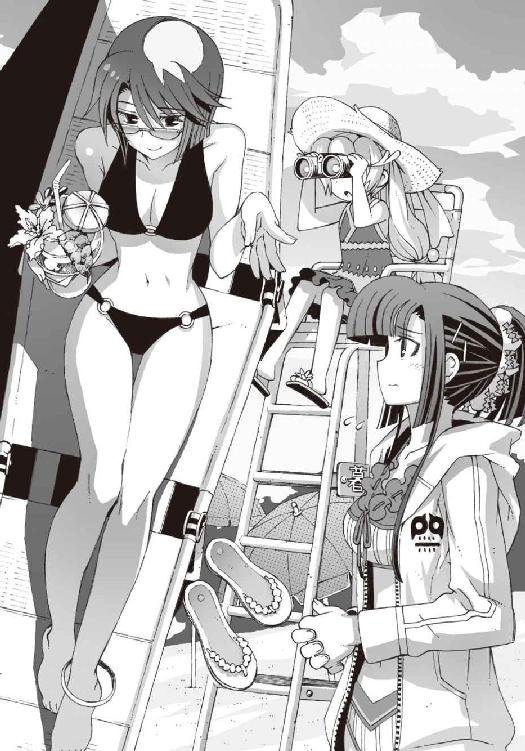
彼女の存在は当然ビーチでも目立ちまくっており、平凡な男子高校生の僕としては、隣にいるのが場違いに思えて実に居心地が悪い。
「調査って......毎日ビーチで遊んでるだけじゃないですか。遺跡の話はどうなったんです？」
「遺跡ならあるでしょ。ほら、そこ」
「え？」
戸惑いながら、朱浬さんが指さす方向を見る。緩やかに弓形に湾曲した海岸の突端。岬から数百メートルほど離れた沖合に、黒っぽい岩の塊が見えている。島とも呼べないほどの小さな岩礁だ。
「あれって、ただの無人島ですよね？」
「ううん。あれはね、昭和初期に建造された砲台の跡地なの。暮海崎要塞観測所。今は砲台は撤去されちゃってるけど、昔この近くにあった海軍基地の警備をしてたんですって。市民文化財よ。いちおうね」
「......もしかして本物の遺跡ってことですか？」
「そうよ。なんだと思ってたの？」
朱浬さんは余裕の表情で微笑んだ。僕は沈黙。文化財に指定されている戦時中の基地の跡地。たしかにそれも遺跡には違いない。しかしそれと加賀篝になんの関係が？
「ただし、それは表向きの記録だけどね」
「はあ......」
やはり裏があるのか。
「あの砲台跡地の地下には〝一巡目の世界〟の施設が残ってるの。詳しいことは不明だけどね」
「不明？」
「ほら、前にも言ったけど危険すぎて近づけなかったらしいから。主な坑道はコンクリートで塞がれてて入口が生きてるのかどうかもわからないし」
「でも、加賀篝が狙っているのはその遺跡なんですね」
「ニアちゃんはその可能性が高いって言ってる。あたしもその意見には賛成かな。実は前にも、加賀篝らしき人物の目撃情報があるのよ、この近くで」
「ええっ？」そんなの初耳だぞ。「あの......じゃあ僕たちが暮海崎でバイトしているのは......」
「それは偶然じゃないの？」
朱浬さんが面白そうに訊き返してきた。ヤな偶然だな、と僕は顔をしかめた。
「だったら朱浬さんたちがオリエンタルドラゴンに泊まってるのはどうして......」
「あ、それはニアちゃんのご指名。彼女があの宿に泊まりたいって言うから予約したの」
「そうか......あいつ、僕たちがあそこでバイトしてることを知ってたな......」
どうせそんなことだろうと思っていた。
こうなってくると、偶然というのも怪しいものだと思う。加賀篝が現れるかもしれない、と主張しているのは事実上アニアだけであり、実際に彼が姿を見せたわけではないのだ。
明らかに偶然といえるのは、たまたま僕がバイトすることになった宿の近くに本物の遺跡があったことぐらいである。しかしそれだって、ペンションというのは観光地にあるのが普通だから、近くに名所旧跡のひとつぐらいあるだろう、という気もする。
要するにアニアは、あれこれ理由をつけて、遊びに行きたかっただけではないのだろうか。
それならそれでいいか、と僕は思う。なんだかんだでアニアはまだまだお子様だし。せっかくの夏休みだし。
ところでアニアが今なにをしているかといえば、彼女は麦藁帽子に水着姿のまま監視員用の背の高い椅子によじ上り、双眼鏡を構えていた。
彼女が睨んでいるのは、主に例の砲台跡地の遺跡である。いちおう加賀篝のことを捜索しているつもりらしい。つまらない意地を張るのはやめて、波打ち際で砂遊びでもしていればいいものを。
嵩月が保護者として近くに付き添っていて、椅子の上でたまにふらつく水着姿のアニアを不安そうな表情で見上げていた。ちなみに嵩月も水着姿で、パーカーの上からでもはっきりわかるスタイルの良さを存分に周囲に見せつけている。白地に赤いリボンの水着は、もしかして巫女服をイメージしているのだろうか。
当然ながら彼女をナンパしようとする男たちが次から次に声をかけてくるのだが、それらはことごとくアニアの罵声を浴びて追い払われていた。こういうのも、一種の共生関係といえるかもしれない。
「それはそうと、ずっと気になっていたんだけど」
高価そうなサングラスを軽く持ち上げ、朱浬さんが僕に流し目をくれながら訊いてきた。
「トモハル、操緒ちゃんとなにかあった？」
「え......どうしてですか？」
突然のことだったので、動揺が顔に出てしまったのかもしれない。朱浬さんは満足げな笑顔。
「なんかよそよそしいでしょ、二人とも。ほら今だって」
「そ、そんなことはないと思いますが」
背中に汗が噴き出した。普段なら僕の隣に浮かんでいるはずの操緒の姿は今はなく、彼女はビーチマットに乗っかった杏と二人で沖合の波間を漂っていた。本人はバレてないつもりらしいが、たまにチラチラと僕のほうを見ているのが明らかに不審だ。
誤魔化しきれるとも思えないが、僕に彼女ができるか賭けをした、とはさすがに朱浬さんには言いにくい。事態が余計にこじれそうな予感がある。
「すいません、急に海水を浴びたくなったんで泳いできます」
なにか上手い言い訳を思いつくまで、とりあえずこの場を離れたほうがいいだろう。咄嗟にそう判断して僕は立ち上がろうとした。
その背中に、最悪のタイミングで声をかけてきた男がいた。
「おい、智春......嵩月をほったらかしにしてなにやってんだ。せっかくのチャンスなのによ」
樋口だった。洗いざらしのＴシャツに変な柄の海パン姿。ここ数日ですっかり日焼けして、サーファーみたいな雰囲気になっている。元々の素材が悪くないので、それなりに恰好いいといえなくもない。右手に握り締めている怪しげな御札のようなものを除けば、だが。
なんだそれ。
「あっちの岬の奥に、いい感じに怪しげな神社があってな。オカルト的に興味があったんで調査してきた。これは土産だ。おまえにやるよ、智春」
「僕に土産？」
「おう。社務所の売店で買ってきた。恋愛成就のお守りだってよ」
「う......」
押しつけられた御札を受け取って、僕はうめく。こういう場合も礼を言うべきなのだろうか。正直こんなものをもらっても扱いに困るのだが。
そしてそんな僕たちの様子を見ていた朱浬さんが、
「ねえ、ヒグっち。チャンスってなんのこと？」
興味深そうに身を乗り出しながら樋口に訊いた。樋口は、よくぞ訊いてくれたとばかりにうなずいて、
「そうだ、先輩。智春のヤツ、このバイトが終わる前に嵩月に告白する予定になってるんで、ちょっと先輩も協力してくださいよ」
「告白？ へえ」
朱浬さんが驚いたような顔をした。僕だって驚いた。そんな予定に心当たりはない。
「違いますよ。それはこいつらが勝手に言ってるだけで」
なるべく素っ気なく否定しようと試みる。しかし、
「往生際が悪いぜ、智春。いい加減、覚悟決めろよ」
「いや、覚悟とかそういう問題じゃなくて」
「......操緒ちゃんも協力してるの？」
朱浬さんが妙に冷静な声で訊いてきた。僕は返事に窮する。さすがにこれは誤魔化しきれそうにない。
「いや、操緒は......その、黙認というか傍観というか......」
「それはとても興味深い証言ね」
色っぽい唇ににっこりと笑みを広げる朱浬さん。被告人の証言の決定的な矛盾を見つけた腕利き検事のように目が輝いている。
彼女はそのまま樋口に向かって右手を差し出し、
「それはぜひとも協力させてもらうわ。具体的な作戦はどうなっているのかしら？」
「これは心強いっすね。今のところ俺が予定している計画は、智春のヘタレ度に応じて四段階十二パターンのバリエーションを用意してるんですけどね」
朱浬さんと固い握手を交わしながら、滔々と作戦を語り始める樋口。
まさか本気ではないと思いたいのだが、この二人の場合、どこまでが冗談かわからないところが恐ろしい。前の怪獣退治のときにも思ったが実は性格似てるんじゃないだろうか。
「......飲み物買ってきます」
つき合いきれない──というよりやりきれない気分になって、僕はその場を離れようとした。その背中に、
「悪い、智春。俺にはアイス買ってきてくれ」
「あたしはトウモロコシが食べたいな」
樋口と朱浬さんが好き勝手な言葉を投げかけてくる。
「......あとでちゃんとお金払ってくださいよ」
僕は反論する気力もなくして、貝殻の散らばる砂の上を歩き出した。眩暈を感じるのは、強烈すぎる陽射しのせいだけではないと思う。
夏休み期間とはいえ平日なので、ビーチは混み合っているというほどではなかった。さりとて人気がなくて寂しいということもなく、これがただの休暇なら、理想的な海水浴日和だったといえる。なのになぜ僕だけが、こんなわけのわからない悩みを抱えてトウモロコシの買い出しに行かねばならないのだ。久々に自分の不幸体質が恨めしくなる。
新たな不幸の接近に気づくのが遅れたのは、たぶんそんな後ろ向きな考えに僕が支配されていたせいなのだろう。
「すいません。アイスとトウモロコシをひとつずつ。あと、コーラ」
海岸沿いの売店に辿り着き、僕は投げやりな声で注文した。
売店の奥にいたのは、若い男の店員だった。ジャラジャラと派手なアクセサリを身につけ、髪を逆立てた、ちょっと頭の悪そうな男である。見覚えのあるシルエットだな、と頭の片隅でちらりと考える。
「へい、毎度......って、おおおおおっ!?」
その見覚えのあるシルエットが、僕の顔を見て唐突に喚いた。
逆光になって相手の顔はよく見えない。しかし、この声は──
「オマエ、夏目智春！ なんでこんなところにいるんだ!?」
「と......鳳島蹴策？」
店員の胸に刻まれた逆さ十字のタトゥーに気づいて、僕はひどく驚いた。
「生きてたんだ......鳳島......」
「おゥ、おかげさんでな......って、アホかぁぁっ！ 死んでたまるか、縁起でもねえっ！」
「いや、だって......こないだの事件のとき......」
この頭の悪そうな悪魔の男は、朱浬さんのミサイルの一斉射撃に巻きこまれて爆発炎上。上空千メートルの高さから墜落したのだ。普通は死ぬ。
「そんなことはどうでもいいんだよ。おい、夏目。まさかオマエがここにいるってことは、あ、あの子も来てるんじゃないだろうな？」
「ええと......それってもしかしてアニアのこと？」
「当然だろうが！ 彼女こそ俺の理想の妹すなわちマイ・アィデアル・シスター！」
「......いや、アニアはおまえの妹じゃないだろ。むしろ赤の他人よりもっと縁遠いというか」
鳳島は妹という存在になぜか異様な憧れを抱いており、こないだ初めて会ったばかりのアニアを、一方的に妹呼ばわりしてつきまとっているのだった。なにがすなわちだ。
彼は、やや興奮しながらも律儀に僕の注文したトウモロコシに醤油を塗りつけて、
「あァ!? 夏目、オマエまさか俺に内緒でマイシスターを海に連れてきて、彼女の手を引いて水泳のレッスンを始めた上に途中で勝手に手を離して、『きゃあ、お兄ちゃんの意地悪！』と言わせちゃおうとか思ってんじゃねえだろうな、この抜け駆け野郎っ！」
「......なんだよ、その偏った妄想は」
さっきまでの眩暈に加えて頭痛までしてきた。もうまったく意味がわからない。
「たしかにアニアも来てるけど」
「なんだと？」
「あ、僕じゃなくて朱浬さんと一緒に」
「く、黒崎ィ......!? またしてもアイツか......あの女、よくも、俺たち兄妹の邪魔ばかり......」
「いや、兄妹って」
いちいち突っこむのも虚しくなってきた。
「それより鳳島はなんでこんなところにいるんだ？ まさか、また加賀篝に協力して......？」
「馬鹿言え。なんで俺があの気障野郎のためにトウモロコシ焼かなきゃならねえんだよ」
「ああ、そうか......」そりゃそうだ。
しかし鳳島は、そこでなにかを思い出したように顔を歪め、
「まあな。たしかに暮海崎に来たのは、あいつに呼び出されたからなんだけどな」
「呼び出された？」
加賀篝隆也が鳳島を暮海崎に呼んだというのか？
「ああ。けど、あの野郎、俺に手伝ってもらう必要がなくなったとかいきなり言いやがって。仕方ねーから、しばらくここでバイトしていくことにしたんだよ。ぼったくりでなかなかいい商売だからな」
「............」
そういうことを客に向かって言うなよな。鳳島的には犯罪に手を染めずに真面目に働いているだけでもマシなのかもしれないが。
「鳳島が必要ないってどういうこと？」
「俺が知るか。そのまんまの意味だろ」
「うーん、そもそも加賀篝は、なんの用で暮海崎に来たわけ？」
「だから知らねーって。用事っつうか、あいつの別荘があるから来たんじゃねーの？」
「......別荘？ 暮海崎にも鳳島の別荘が......？」
片撚浜にあった加賀篝隆也の別荘は、悪魔狩り事件のときに爆発に巻きこまれて吹き飛んでいる。いくら彼が金持ちでも、そんないくつも別荘を持っているものなのだろうか？
「あ、加賀篝の別荘じゃなくて、あいつの射影体の家の別荘だったかな」
鳳島が投げやりな口調で訂正する。
「琴里さんの......？」
「おゥ。とにかく別荘で待ち合わせだったんだよ。結局、俺は行かなかったから場所は知らないけどな──ほらよ」
「どうも」
観光地価格が上乗せされた代金と引き換えに、僕は注文した品を受け取った。そして、
「よし、じゃあ行くか」
そう言って鳳島が売店のエプロンを脱ぎ始めたので、少し驚く。
「えっ......鳳島もついてくるつもりなの？」
「当然だ。兄が妹に挨拶しなくてどうするよ。俺はもう十日以上もマイシスターと顔を合わせてないんだ。禁断症状で手が震えるっての」
「......やめておいたほうがいいと思うよ。ほら、あれ」
「んあ？」
鳳島が怪訝顔で僕を睨んだ直後、彼の背後で売店の柱が爆ぜた。振り返った僕たちが見たものは、材木に深々と穿たれた破壊の痕跡だった。
少し遅れて銃声が聞こえてきた。ライフル弾による狙撃。銃弾は、鳳島の顔面からわずか数センチの距離をかすめて、彼の背後の柱に突き刺さったのだ。
のどかな海水浴場の明るい浜辺。水着姿の美人女子高生が、ビーチベッドに寝転んだ姿勢で旧ソ連製とおぼしき狙撃銃を構えている。
「ぬおおおおお......おのれえ、黒崎朱浬ィ......」
頭を抱えて苦悶する鳳島。歯軋りの音が僕まで聞こえてくる。少し哀れと思わないでもないが、まあ仕方ないか。ストーカー風味の変態シスコンだしな。
「ええと、じゃあ僕はそういうことで」
とりあえずそれだけ言い残し、僕はライフルの射程に収められた売店からそっと逃げ出した。
○
鳳島からもたらされた情報は、僕たちにちょっとした衝撃を与えた。
「......暮海崎に、加賀篝隆也の別荘だと？」
アニアもさすがにその事実は知らなかったらしい。口にベーコンの切れ端を含んだまま、興奮した様子で立ち上がり、
「貴様っ、それは本当なのか、智春っ！」
「わっ、人にナイフを突きつけるのはやめろよな。それから口にものを入れたまま怒鳴るな」
「そんなことは今は問題ではないっ」
「そ、そうかな......」
いや問題だろう、と僕は小声でつぶやいた。
ビーチから戻ってきて夕食の時間。レストランの席に着いているのは、アニアと朱浬さんとヌイグルミである。僕はメインディッシュの肉料理を配膳中だ。ほかの宿泊客の視線も気になるので、アニアには大人しくしていて欲しい。ただでさえ彼女たちは目立つのだから。
「とにかく......わざわざ鳳島を呼びつけたということは、加賀篝は今もその別荘に潜んでいる可能性が高いな。だとすればそこに姉様も......」
「......加賀篝のじゃなくて、琴里さんの別荘だけどね」
いちおう訂正しておく。ガリガリとフォークを囓っていたアニアが動きを止めた。
「琴里さんって？」
食事を続けていた朱浬さんが、優雅に首を傾げる。そういえば彼女は、悪魔狩り事件のときに琴里さんとは会っていないのだ。
「加賀篝に憑いてる幽霊です。彼の機巧魔神に封印されている副葬処女っていうか」
「ああ......加賀篝が生き返らせようとしてるっていう彼女のことね」
「ええ」と僕はうなずいた。
「............」
アニアがむっつりと黙りこむ。加賀篝の射影体である琴里さんは、彼の契約悪魔であるアニアの姉さんにとっては恋敵ということになる。妹のアニアとしては複雑な心境なのだろう。
「それで彼女の上の名前は？」と朱浬さんが訊いた。
「上の名前？」
「このあたりの別荘の所有者を調べるにしても、フルネームがわからないと難しいわよね」
そう言って朱浬さんは、ナプキンで口元を上品に拭う。説得力のあるご意見だった。
しかし考えてみれば僕は琴里さんの素性をなにも知らないのだ。本名どころか、加賀篝との関係すらよくわからない。
「基本的に機巧魔神の演操者と射影体が赤の他人ということはあり得ん。調べればそれくらいわかるのではないのか。加賀篝は有名人なのだろう？」
アニアが不機嫌な顔のまま言った。僕は彼女の空いた皿を下げながら、
「いや、有名人だから余計に調べにくいこともあるんだよ。特に人間関係とか女性関係とか」
たしかに演操者と射影体にはある程度以上の親密な関係がある。僕と操緒は幼なじみだし、佐伯兄と哀音は従兄妹同士。加賀篝と琴里さんもたぶん似たようなものなのだろうが、それはいわゆる有名人の過去の女性関係というやつである。素人が簡単に調べられるとは思えない。
それをいったら加賀篝とアニアの姉さんだって、いつどこで知り合ったのか、実はよくわかっていないのだ。
「ふん」
アニアはつまらなそうに息を吐いた。
椅子の上に無造作に置き忘れられていたコアラのヌイグルミが、唐突にしゃべり出したのはその直後だった。
『......新屋敷だよ。加賀篝隆也の射影体の名前は、新屋敷琴里だ。おそらくね』
僕は危うく運んでいた皿をぶちまけそうになった。不気味なヌイグルミがいきなり目を赤く発光させて動き出したら、いくら見慣れていてもやはり驚く。
「なにかご存じなんですか、部長？」
しかし朱浬さんは平然と訊き返した。ヌイグルミは厳かに首肯して、
『......だいぶ前に洛高に来た教育実習生に、そんな名前の女性がいたと思っただけだよ』
「教育実習生？」
なんだそんなことか、と僕は思った。琴里というのがよくある名前とはいわないが、それほど奇抜なものでもない。たまたま同名の別人という可能性のほうが高いはず。
しかし朱浬さんはなぜか興味を惹かれたように、
「それって何年前のことですか？」
『二年前だね。僕が普通に登校してたころだから。若さゆえの無謀、というヤツだね』
自嘲するような口振りで部長が答えた。普通に学校に通うくらいのことで無謀もなにもないと思うが。
『二年前......!?』
しかし操緒が突然、驚いたように叫んだ。なにをそんなに驚愕しているのだろう、と怪訝に思う。
『忘れたの、智春？』
責めるような口調で操緒が指摘。
『二年前の洛高には、ニアちゃんのお姉さんがいたんだよ？』
「あ......」
ようやく僕も彼女の驚きの理由に気づく。
当時から有名人だった加賀篝と、悪魔といっても一介の交換留学生に過ぎないアニアの姉。接点のないはずの二人がどこで知り合って、なぜ契約を交わしたのか。ずっと疑問だったのだ。だが、
「教育実習に来ていた琴里さんが、アニアのお姉さんを加賀篝に紹介した......ってことか」
『だったら、スジが通るかなって思って』
「そう......だよな......」
同意する。射影体の性質からして、琴里さんが加賀篝と親しい関係だったのは間違いない。その琴里さんが間に入ることで、加賀篝とアニアの姉にも接点が生まれる。卒業生ではない加賀篝が、洛高の事情に詳しい理由もそれで説明がつく。
「ふふっ、決まりね。加賀篝隆也の斜影体のフルネームは、新屋敷琴里...と。今夜のうちにこの付近の別荘の情報を調べて、明日はそっちを重点的に捜索しましょう。トモハルたちも手伝ってね」
おっとりとデザートなど食べながら朱浬さんが言った。
仕方ないか、と僕はうなずく。アニアたちがこの宿を訪れたときから、こうなるような気がしていた。まあいい。怪しげな遺跡の監視なんかををやらされるよりは、高級別荘を探しているほうがなんぼかマシだ。
有力な手がかりを手に入れて、たぶんアニアも喜んでいるはず──だと思ったが、意外にも金髪のお子様留学生は不機嫌面で黙々と食事を続けていた。
やがて食事を終えた彼女は無表情に立ち上がり、
「......遺跡の見張りに戻る」
ヌイグルミを引きずりながら、レストランを出て行った。
○
翌日。バイト四日目の午後。
ペンションでの朝のお勤めを終えた僕たちは、海岸とは逆方向に向かう坂道を上っていた。
暮海崎は海辺の観光地の街だ。海岸線は長く美しく、それを取り囲む緩やかな丘陵には温泉も湧く。当然ホテルやペンションの数も多い。
だが、この街が広く一般に知れ渡ったのはわりと最近のことだった。この辺りは本来どちらかといえば、金持ちの別荘地として発展してきた土地なのだ。
今でも海岸から少し離れると、大企業の保養施設や高級別荘を多く見ることができる。
集まった情報から総合的に判断して、新屋敷家が保有している別荘も、この地区のどこかに存在するはず──だったのだが。
「さすがは高級別荘地ね......ガードが堅いわ」
どこからか持ってきた住宅地図を乱暴に折りたたみ、朱浬さんが大げさに首を振った。彼女や部長がひと晩かけて調べても、新屋敷家の別荘の所在はわからずじまいなのだった。
金持ちの高級別荘ともなれば泥棒に狙われる可能性も高い。税金対策やら不倫相手との密会やら、ロクでもない目的に使われることも少なくない。そんなわけで素人がそう簡単に住所を割り出せるものではないらしい。所有者と実際の使用者が違っていたり、ダミー会社の名義になっていたり。法律の抜け穴を駆使して登記された別荘の住所は、部長のハッキング技術をもってしても割り出せなかったというのだから恐れ入る。大人というやつは実に汚い。
「こうなったら、こっちもそれなりの手段を使うしかないわね」
むしろ楽しげな口調で朱浬さんが言った。
「それなりの手段......ですか？」
妙な胸騒ぎを感じる響きである。なにをする気だ？
「別荘地には管理事務所があるでしょ。そこで話を聞いてくるわ。なるべく友好的に」
「いや......なるべくって......」
「奏っちゃんも一緒に来てくれる？」
朱浬さんは、僕のつぶやきを無視して嵩月に訊いた。嵩月が不思議そうに頭を傾けた。
「わたし、ですか？」
「そう。色仕掛け要員が必要になるかもしれないしね」
「あー......あの......」
「大丈夫よ。後ろでニコニコ笑っててくれればいいから」
戸惑う嵩月を、朱浬さんが強引に説き伏せる。それは意外にいい作戦かもしれないと思う。
この二人の見た目なら、管理事務所の人たちも彼女たちが怪しい人間だとは思うまい。追い返される前に、たぶん話くらいは聞いてもらえるだろう。実際のところは怪しくないどころか、人間と呼べるのかどうかも微妙な二人なのだが。
「地図だとこの先に公園があることになってるから。トモハルたちはそこで待ってて。別荘の場所がわかったら連絡するわ」
そう言って朱浬さんが坂の上を指さした。僕にも特に異議はなかった。この炎天下をなんのアテもなく歩き回らされるよりは断然いい。アニアは不機嫌な顔をしていたが、彼女もあえて文句を言おうとはしなかった。
「じゃあ、またあとでね」
にこやかに手を振る朱浬さんたちと別れ、僕たちは指定された公園とやらに向かった。強烈な紫外線に炙られながら、予想よりも急な坂道をだらだら上る。
嵩月が朱浬さんに連れて行かれたので、残ったのは僕と操緒とアニアの三人だけである。そのことがふと気になって、
「そういえば樋口と杏はどうしたんだ？ 昼飯のときにはもういなかったけど......」
『知らない』
「知るかっ」
二人同時にやたら素っ気ない返事が返ってきた。
僕は思わず嘆息。ギスギスしてるなあ。アニアは普段からこんな感じだが、なんで操緒まで怒ってるんだ。
『杏ちゃんたちは、準備したいことがあるからって言って宿に残ったの』
ぞんざいな口調で操緒が補足する。
「準備って？」
『だから知らない。どうせあれでしょ。どうせ樋口がまた余計なことを考えてるんでしょ』
「ああ......」
ようやく操緒の不機嫌の理由がわかった気がした。昨日やけに大人しいと思ってたら、樋口のやつ、またなにか作戦とやらを企んでいたのに違いない。
どうでもいいがあの男、なぜそこまでして僕と嵩月をくっつけたがるのだろう。そろそろ諦めるか飽きるかしてくれないものだろうか。でないと、とばっちりが全部こっちに来るのに。
夕方のバイト再開時間まであと二時間弱。宿に戻ったら真っ先に樋口を捕まえて文句を言ってやる。そんなことを考えながら僕が歩いていると、
『そういえばちょっと思ったんだけど......』
操緒がいつもの口調で言った。
「なに？」
『ん......琴里さんの別荘って......普通の別荘なのかな？』
「は？」
意味が分からない。普通じゃない別荘ってどんなんだ。部長の自宅にある黒い墓石みたいなやつのことか？
『だから、そうじゃなくて』
操緒が苛立った声を出す。伸ばした指先で目の前にある十数階建てのビルを指し示し、
『ああいうやつ。リゾートマンションの一室とか。ああいうのも別荘といえば別荘だよねえ？』
「あ......」
「む！」
僕とアニアが一斉にうめいた。そういえば昨夜から当然のように一戸建ての別荘のことばかり調べていたが、この手のマンションの一室を別荘と呼ぶのも変ではない。
もし新屋敷家の別荘というのがリゾートマンションの一室なら、別荘の所有者や管理事務所を調べてもわからないのは当然だ。
「さすがだな、操緒。それは調べる価値があるかもしれん」
アニアは本気で感心しているようだった。
『そ、そうかな？』
あまりのめずらしさに操緒が照れたような反応をする。うむ、とアニアは深くうなずき、
「なにをしている。行くぞ、智春」
目の前のリゾートマンションに向かって歩き出す。僕は驚いて彼女を呼び止めた。
「待った。行くって......今から調べる気？」
「当然だ。私たちには時間がないのだからな」
アニアが僕を睨みつける。そんなに怒らなくてもいいだろうに。
「......わかった。行こう」
僕は肩をすくめて言った。操緒が意外そうな表情で振り返る。
『いいの、智春？』
「うん。まあ......郵便受けの表札を見るくらいなら」
この手のマンションは鍵がないと居住区に入れないはずだし、それほど危険なことにはならないだろうと思う。それにもし万一、加賀篝に遭遇したとしても、朱浬さんや嵩月がいないほうが話が穏便に進むのではないかという期待もある。少なくとも今の加賀篝には、僕たちやアニアに危害を加える理由がないはずだ。
ついでに正直なところ、アニアには早いところ目的を果たして鳴桜邸に帰ってもらいたい。
なぜなら僕のバイト代と彼女の宿泊費はほぼ同額なのだ。アニアがオリエンタルドラゴンに居座り続ける限り、僕は延々とタダ働きさせられている計算なのである。
『ふーん......意外に多いんだね、入居者』
豪華な玄関ホールを眺めて操緒が感想を述べた。彼女の言葉どおり、郵便受けの半分以上にネームプレートがかかっている。全体的に真新しい印象があるのは、普通のマンションに比べて利用される頻度が少ないせいだろうか。
なんにせよ新屋敷家の別荘は、朱浬さんや部長が昨晩あれほど苦労しても見つけられなかったのだ。成り行きで適当に飛びこんだマンションで、そう簡単に見つかるはずもなかろう。
そう思って、僕はなおざりにプレートに描かれた名字を眺めていたのだが、
「あったぞ！」
勝ち誇ったアニアの声に愕然とする。嘘だろ、おい。
『あ......ほんとだ』
操緒も呆れ気味の声でつぶやいた。当然だ、とアニアが胸を反らす。彼女が指を突きつけた郵便受けには、たしかに新屋敷と記されたプレートが貼りつけられていた。三階の三〇七号室。
『どうするの？』
「いや......どうしよう。ここに加賀篝がいると決まったわけじゃないしさ。同姓の別人かも」
僕は困り果てる。まさかこんなに簡単に行き当たるとは、さすがに予想外だった。
「そんなものは確認してみれば済むことだ」
アニアが不敵な笑みを浮かべた。そのまま玄関ホールの電子錠へと近づいていく。
「確認って、なにする気だ？」
「知れたこと。中に入るに決まっているだろう」
「鍵もないのにどうやってだよ？」
「貴様、私を舐めているのか。よもや我が一族の能力、忘れたわけではあるまいな」
ぞんざいな口調で言い放ち、アニアは電子錠のタッチパネルを操作した。操作といっても、適当に六桁ほどの数字を打ちこんだだけである。ロック解除用のパスコードのつもりらしい。
しかしそんな数字を当てずっぽうで入力したって、よっぽど運が良くない限りは──
「あ......まさか！」
「ふん、思い出したようだな」
アニアが生意気盛りな表情でうなずいた。彼女たち中欧のフォルチュナ一族は〝運喰らい〟と呼ばれる特殊な悪魔の家系だ。直接的な戦闘能力を持たないかわりに、自分や他人の運勢を操作する力がある。
彼女たちが溜めこめる運気は限られているので、無尽蔵に幸運を振りまくことはできないが、六桁の数字を当てるくらいは楽勝だろう。なにも宝クジや馬券を当てようとしたわけではない。ただマンションの扉を開ける程度のささやかな幸運なのだ。
『今イチすごいのかすごくないのか、わかりにくい能力だよね。相変わらず』
操緒が失礼な感想を洩らすが、幸いアニア本人の耳には届いていなかった。すでにアニアは解錠されたドアをくぐって、マンションの居住区へと踏みこんでいたからだ。
「あれ......エレベーターはこっちじゃないのか？」
階段へと向かったアニアの背中に呼びかけると、
「愚か者っ！ 捜査中にそんなものを使うな。加賀篝に気づかれて逃げられるではないか！」
怒鳴られた。気づかれるなというわりには声がでかい。
ほっとくわけにもいかないので、僕は仕方なくあとを追った。アニアの行き先はわかっている。三階の三〇七号室。新屋敷さん所有の一室である。
アニアは、息を弾ませながら一気に問題の部屋の前まで辿り着いた。
そこでピタリと動きを止めた。どうやら勢いで部屋の前まで来たのはいいが、そこから先はなにをするべきか、なにも考えていなかったらしい。
どうするつもりだろう、と僕たちが興味深く見守る中、アニアは少し追いつめられたような表情を浮かべ、
「くっ......！」
乱暴にインターホンのブザーを押した。止める暇もなかった。ピンポンと軽やかな電子音が鳴り響く。まあいいか、と僕は投げやりに思う。ドアをぶち破って入るわけにもいかないし、ある意味、無難な選択だろう。
しかし部屋の中から応答はない。居留守を使って隠れているというより、人のいる気配そのものが感じられなかった。別荘だから、住人が不在でもまったく不自然ではないのだが──
『んー......刑事ドラマだと、部屋の中に死体が転がってるパターンだよね』
操緒がぼそりと不吉なことをつぶやいた。その光景を想像して嫌な気分になる。加賀篝の場合、それがあり得ないことではないのが恐ろしい。
「あのさ、悪いけど中を見てきてくれないかな」
僕は操緒に手を合わせた。幽霊だけに彼女はもちろん壁抜けが可能だ。
『えーっ』
しかし操緒は露骨に嫌な顔をする。
『ヤだなあ......ホントに腐乱死体とかあったらどうするのよ。第一発見者とかなりたくないよ』
「大丈夫じゃないかな。変な臭いとかしてこないし」
僕は投げやりな返事をする。アニアも厳めしくうなずいて、
「うむ。私からも依頼するぞ。頼む、操緒」
『うう......仕方ないなあ......』
気乗りしない表情のまま、操緒は新屋敷と表札の出たマンションの一室へと入っていった。そして一分も経たないうちに戻ってくる。
ドアをすり抜けて出てきた操緒の態度は、なぜか妙に真剣なものだった。硬い声で早口で、
『当たりだよ、ニアちゃん』
「なにっ......」
アニアが青ざめた顔で僕の背後に回りこむ。僕も恐怖に足を竦ませつつ、
「ま、まさか本当に死体が......？」
『違う違う。加賀篝だよ』
操緒が興奮気味の口調で言った。
『たぶんだけど、やっぱりここに加賀篝がいたんだと思う。包帯を替えた痕跡が残ってたの』
「......包帯？」
『そうだよ。忘れたの？ 加賀篝は怪我してるんだよ。こないだ冬琉会長の居合いを喰らって』
「ああ、うん。覚えてるけどさ......痕跡ってそれだけ？」
『ん、違うよ』
操緒が唇をきゅっと吊り上げる。そして少し迷うような口調で、
『古い指輪や宝石も捨ててあった。大量に』
「なにっ？」
アニアが僕を押しのけて操緒に詰め寄った。
「それは......本当か？」
『......うん』
操緒がうなずき、アニアは立ちくらみを起こしたように壁に手を突いた。
人が長く身につけていた装飾品には持ち主の運気が籠もる。それを吸って自らの運気に変え、生き長らえている悪魔の一族がいるのだ。〝運喰らい〟フォルチュナの血族。運気を吸い尽くされて捨てられた大量の宝飾品は、アニアの姉がここにいたという確実な証拠なのだ。
「待った、操緒......加賀篝たちはここにはいなかったんだよな？」
動揺しているアニアに替わって、僕が確認した。操緒は少し頼りない声音で、
『うん。もしかしたらもう戻ってくる気がないのかも』
「なんで？」
『なんでっていうか、そういう雰囲気だったの。荷物も残ってなかったし』
「荷物が......なかった？」
別荘を出て行ったということか。僕たちが捜していることに気づいてアジトを変えた、とか。なんだかそれはありそうもない話だな、と思う。それともなにかほかに理由が──？
『あとね』
操緒が口を開きかけ、言い淀むような素振りを見せた。
まだなにかあるのか、と僕は困惑し、やがて操緒は決意したような口調で、
『......囲まれてるみたい、あたしたち』
「は？」
意表を衝かれて、僕はなにも考えずにマンションの通路から外を見下ろした。
不法侵入者である自分たちの立場を考えれば、褒められた行為ではなかっただろう。しかし考えるより先に身体が動いてしまっていたし、結果的にわかったこともあった。
リゾートマンション特有のトロピカルな雰囲気の庭に、場違いな若者たちが立っていた。
制服姿の見知らぬ少年少女たちだ。真夏の強い陽射しの下、まるで狩りをするライオンの群れのように、このマンションを包囲している。
彼女たちが着ているのは見慣れない制服。その袖口に縫いつけられたマークを僕は知っていた。雪原瑤たちが身につけていたのと同じ刻印。
紋章風にデザインされた「ＧＤ」の文字。
「......なんで......学生連盟が？」
どうにか僕が言葉にできたのはそのひと言だけ。
マンションを包囲していたのは学生連盟のＧＤ──武装生徒指導員たちだった。
○
観光地にはあまり似つかわしくない、きっちりと着込んだ窮屈そうな制服。それだけでも、ＧＤたちの目的が遊びではないというのがよくわかる。彼女たちの真剣な眼差しには、うっすらと冷たい殺意すら漂っているようだった。
『......あたしたち、なんにもしてないよね......まだ』
操緒が不安げに目を泳がせる。住居不法侵入の現行犯だけどな、と僕は口の中で独りごち、
「あれは僕たちを狙ってるわけじゃないよ、たぶん」
「うむ。そのようだな」
アニアが冷静に賛同してくる。
マンションを包囲している学生は、見える範囲にいるだけで四人だった。おそらく全部で七、八人といったところ。全員が演操者というわけではないのだろうが、それでもかなりの戦力だ。
僕たちを捕まえるのが目的なら、これだけの人数は必要ない。
『ってことは、彼女たちの目的はやっぱり加賀篝？』
「おそらくな......だが、納得いかんな。なぜだ？」
アニアが不審そうにつぶやいて爪を噛む。僕はその癖を注意するべきかどうか迷いつつ、
「なんのこと？」
「やつらが加賀篝を狙う理由だ。明蓮寺の生徒会が壊滅させられたときでさえ、理屈を並べて動かなかった連中が、なぜ今になって加賀篝を捕らえようとする？」
「ああ......そういえば冬琉会長も言ってたね。学生連盟は加盟校の校内レベルの紛争には手が出せない、とかなんとか」
学生連盟とやらの任務は、学校外における一般生徒の保護、なのだそうだ。逆にいえば加盟校の校内で加賀篝がどれだけ暴れても、その阻止は各校の生徒会の役割なのである。だから前回のイグナイター強奪事件のときもＧＤは動かなかったのだ。
「だったらなぜ今頃になってやつらが動き出したのだ？」
「さあ......？」
そんなことを僕に訊かれても困る。
「加賀篝の遺跡への侵入を防ぐためか。しかしそれはＧＤの任務ではないはずだ。学生連盟は司法機関ではないから、加賀篝の過去の犯罪でやつを裁くこともできないはずだが......」
あどけない顔立ちに苦悩を浮かべて、アニアは思索を巡らせている。
操緒は淡く嘆息し、
『あのさ......考えるのはあとにして、逃げたほうがいいんじゃないかな。あたしたち』
「逃げる？」
僕は困惑気味に訊き返した。どうして僕たちが逃げなければならないのだ。学生連盟を敵に回すようなことをした記憶はないのだけれど。
『加賀篝に会いに来てる時点で十分に怪しいよ』
操緒が反論。たしかにそれも一理ある。
『捕まって取り調べられたりしたらバイトの続きに間に合わなくなっちゃうし。智春だって、余計な面倒に巻きこまれたくはないでしょ？』
「それは、まあそうだけど」
僕はマンションを包囲した連中の姿を、もう一度ちらりと確認した。
「でも彼らの顔を見ていきなり逃げ出すのも、心証が悪い気がするなあ。追っかけられて捕まったりしたときに。堂々としていたほうがよくないか？」
『んー......それもそうか。でもなんかヤな予感するのよね』
操緒が景気の悪い口調でつぶやいた。
もちろん僕としても学生連盟なんかと関わり合いになりたくはない。しかし気づくのが遅すぎた。マンションの敷地は完全に包囲されている。無駄に見晴らしよく設計されたこの建物に、逃げ隠れする場所があるとは思えない。だったら不必要な抵抗はやめて、潔く出頭したほうがマシではないか──と僕があっさり諦めかけたそのとき、
「夏目様、こちらへ」
思いがけない方角から、冷たく澄んだ声が聞こえてきた。夏目様？
僕たちの背後。マンションの通路中央に、一人の少女が気配もなく現れて立っていた。
いつから彼女がそこにいたのか、まったく気づくことができなかった。幻覚を見ているような非現実感だけがある。操緒やアニアも声も出せずに固まっていた。
「現時点で皆様がＧＤと接触することは容認できません。逃走を推奨します」
少女だけが平然と告げた。丁寧だが、どこか楽しんでいるような声音だった。
僕は呆然と彼女を見つめた。
彼女の唐突な出現に驚いていたわけではない。いや、もちろんそれもある。が、それ以上に僕を驚愕させている事実があった。僕は彼女のことを知っている。
陽射しに映えて銀の光をまとう黒髪。妖精めいた非現実的な美貌。そして羽根の形を刻んだ銀色の髪飾り。
「きみは......」
そうつぶやいたきり、ほかに言葉が出てこない。
「鳳島です。鳳島氷羽子」
優艶な微笑を浮かべて彼女が会釈。
モノトーンで統一されたゴスロリ風味の服装は意外に露出度が高く、剥き出しになった肩のラインにドキリとする。もちろんそんなことで動揺している場合ではない。
洛高の校舎で見た彼女だった。夏期講習のときに同じ授業を受けていた氷姫だ。
「なんで......鳳島、さんがこんなところに？」
混乱して思考がまとまらない。夢でも見ているのだろうか、と思う。鳳島氷羽子は、実際、夢に出てきてもおかしくないくらいの美少女なのだが、夢だとしても脈絡がなさ過ぎる。
「鳳島は観光旅行中なのです。この近くに有名な心霊スポットがあると聞きましたので」
そう言って彼女が指さしたのは、岬の沖合にある無人島だった。
「......観光旅行？」
「そうです。このマンションに来たのは、人に会うために」
鳳島氷羽子が淡々と解説する。やけにご都合主義的な作り物っぽい話だと思ったが、彼女の人工的な美貌で説明されると、逆説的に妙な信憑性があった。考えてみれば、僕たちがここにいる理由も、彼女の事情に負けず劣らずの胡散臭さだ。
あとついでに、彼女がなぜ学校で〝姫〟などと呼ばれているのか、その理由もわかるような気がした。もしかしてこの人、教室でもこんなしゃべり方なのだろうか。
「それでは夏目様。話はあとに。そろそろ里見恭武が動き出したようです」
「里見恭武？」
「加賀篝隆也を追跡中の学生連盟ＧＤです。この部屋の住人の不在を確認するのが目的の様子。上がってきますよ」
そう言って鳳島氷羽子は背後の階段に目を向けた。ＧＤたちの足音や気配は感じられないが、彼女の言うことは信じられる気がした。しかし、
『待って。どうしてそんなことを知っているの？ あなた、何者？』
操緒が疑わしげに氷羽子を睨んだ。
氷姫はあくまで余裕の微笑み。
「鳳島は皆様の敵ではありません。少なくとも今の段階では」
『う......な、なにそれ』
氷羽子を睨みつけたまま、たじろぐ操緒。彼女が口論でやりこめられるのを見るのは、ちょっとめずらしい。見た目では負けてないのだけど、操緒はモロに感情が表に出るぶん、氷羽子のようなタイプとは相性が悪いのかもしれない。
「先ほども申し上げましたが、皆様はＧＤと接触するべきではありません。アニア様は、特に」
氷羽子が切れ長の目を細めて、深刻な表情を作ってみせた。
「私が？ なぜだ？」
アニアが訝しげに愁眉を寄せた。氷姫は微笑。
「それは貴方様が、クルスティナ・フォルチュナ嬢の妹君だからです」
「えっ......」
「里見恭武の目的は魔神相剋者の捕獲。加賀篝隆也の契約悪魔の肉親は、理想的な人質です」
氷羽子を除く全員が息を呑んだ。どうして彼女がそんなことまで知っているのだ。クルスティナと加賀篝の関係は、実妹であるアニアですらつい最近まで知らなかったことなのに。
だが、考えるまでもなく、彼女の指摘は事実だった。里見とやらが本当に加賀篝のことを追っているのなら、当然アニアの存在も知られていると考えるべきだろう。
氷羽子の正体は気になるが、それを問い詰めている場合ではないらしい。今はアニアをここから脱出させるのが先だ。
「だけど、アニアを逃がすにしても......どうやって？」
つぶやきながら僕は途方に暮れた。なまじ眺望のいい建物だけに、包囲している連中に気づかれずにマンションを抜け出すのは至難の業だ。
その状況でも氷姫はやはり悠然と、
「夏目様に手伝っていただけるのなら、方法がひとつ」
「......僕？」
はい、と氷羽子はうなずいた。
「この先に防災用の非常ハシゴがございます。鳳島が夏目様と一緒に囮になりますので、操緒様とアニア様はその間に脱出を」
『操緒にも逃げろっていうの？』
不満顔の操緒が氷羽子の言葉を遮った。息を吸うような仕草を挟んで、操緒は更なる反論を続けようとする。が、静かに首を振って氷羽子は拒絶。
「アニア様をお一人で行かせるわけにはいきませんでしょう？ それに夏目様が演操者であることを気づかれなければ、ＧＤに咎められる理由もありませんので」
『うう......』
理路整然と説き伏せられて、操緒が悔しそうに唇を震わせる。
「......非常ハシゴというのはこれか？」
廊下の突き当たりの共用スペースに、それらしきものを見つけてアニアが歩み寄った。防護柵に囲まれた鉄製のハシゴだ。火災時の避難や施設の点検に使うためのものらしい。出口には鍵がかかっているが、小柄なアニアなら余裕ですり抜けられる。
たしかに、これを使えば玄関ホールを通らずに敷地外に出られるのだろう。しかし問題は、
「これは......外から丸見えなのだが？」
アニアが疑いの眼差しで氷羽子を睨んだ。
さすがにこれはダメなのではないか、と僕も思う。
この位置では、ちょうど監視に立っているＧＤメンバーから丸見えだ。こんなものを降りてたら、逃げ出すどころか不審者そのものである。だめじゃん、とちょっと嬉しそうな操緒。
それでも氷羽子は余裕の相を崩さず、
「問題ありません。ここは夏目様と鳳島に任せて、お二方は脱出のご準備を」
彼女が気にしているのは、むしろ背後の階段のほうだった。どうやらＧＤの連中が近づいて来ているらしい。僕も少し焦りを覚えて、
「任せてって、どうすればいいんだ？」
「ご心配なく。夏目様はただ鳳島に合わせてくだされば結構です」
「え？ だったら鳳島さんはなにを......」
「鳳島はこのように」
そう言って氷羽子は、いつかの妖精じみた微笑みを僕に向けた。
そしてなぜか大きく息を吸い、出し抜けに──
悲鳴を上げた。
「いやああああああああああああああああああああああああああああああああっ！」
耳を押さえるヒマはなかった。
凄まじい声量の悲鳴だった。
圧倒的な美声。透明感のあるノンヴィブラートのソプラノだ。頭蓋の内側にキンキンと響く。
完全に不意を突かれた僕たちがパニックになっている間に、彼女は更に、
「困りますううううううううううううううううううっ！」
その声は、当然マンションを監視していたＧＤメンバーの耳にも届いていた。
タダゴトではない、と誰もが思ったことだろう。
非常ハシゴ側に立っていた見張り役も、確認のために持ち場を離れて移動する。それを迂闊だと責めることはできまい。
発声を終えた氷羽子は、放心しているアニアと操緒に淡々と微笑み、優雅に一礼。
「──それでは、今のうちにお逃げくださいませ」
抵抗する気力は残っていなかったのだろう。アニアはロボットのようなぎこちない動きで、言われるがままにハシゴを下りていき、操緒もふらふらとそれに続いた。
残ったのは氷羽子と僕だけだ。
僕は呆然としたまま氷羽子にすがるような目を向けた。
さすがにあれだけ目立つことをしたあとで、今さら逃げ隠れするのは馬鹿げていた。しかしこのままＧＤの連中に取り押さえられたら、さすがにタダでは帰してもらえない気がする。
なにしろあの悲鳴は、明らかに誤解を招きそうな内容だったし。むしろ世間的には、僕が氷羽子に猥褻行為を働こうとしたと誤解されるのではないだろうか。
しかも僕の無実を証明してくれるはずの操緒たちは、すでにこの場を離れている。もしかして僕は陥れられたのか──？
乱暴な足音が背後の階段から聞こえてきて、僕の背中に冷たい汗が噴き出した。
氷羽子が僕の首筋に、するりと腕を搦めてきたのはそのときだった。
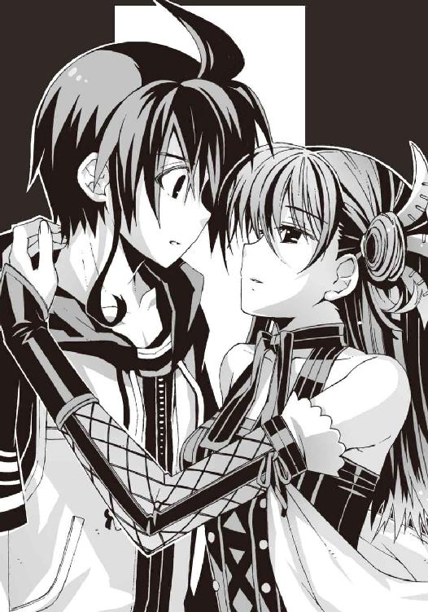
「と、鳳島......さん？ なにを......」
「ご心配には及びませんわ、夏目様」
氷羽子が僕の腕を誘導して、自分の腰へと回す。傍から見れば、仲のいい恋人同士が抱き合っているようにしか見えないだろう。あり得ないほど近くで氷羽子の体温や甘い匂いを感じて、僕は声も出せなかった。
マンションの廊下に現れたＧＤたちが、唖然として立ち止まる気配がする。
たしかにこの体勢では、お互いの身体が壁になって、僕たちの素性が彼らにはわからない。
しかしその代わり僕たちも動けない。なんだかすごく見られているような気がするのだが、これはなんという羞恥プレイなのでしょうか。
くすっ、と僕の耳元に、氷羽子の涼やかな吐息がかかった。
「仕方ありません──彼らが、黙って立ち去るくらいの礼節をわきまえていることを期待しましょう」
僕の脳裏に疑問が渦巻く。仕方ないって、この不自由な体勢からあなたはなにをするつもりなのですか。見て見ぬふりをしたくなるような行為、という意味か。それはいったい──
「──!?」
突如、唇に押し当てられた柔らかな感触に、僕の頭の中は真っ白になった。
息が止まる。
もしかしたら心臓も止まっていたかもしれない。
がちがちに硬直したまま僕は動けない。もし一瞬でも力を抜いてしまったら、そのまま脱力してその場にへたり込んでしまいそうだった。
その間も氷羽子の唇は僕に触れたまま。永遠かと思うような長い時間が経過する。
やがてＧＤの連中が、気まずそうな足取りで立ち去っていく気配がした。あとに残されたのは僕たち二人だけだ。
それから更に数秒ほどが経過して、ようやく氷羽子が僕から離れた。
僕はふらふらと後退し、壁にもたれかかってどうにか転倒を免れた。
「鳳島、さん......今......その、なにを......」
自分でもかなり間の抜けたことを言っていると思う。
氷羽子は伸ばした人差し指で唇を押さえ、感情の読めない瞳で笑った。
「このことは、他言無用に願います。特に、塔貴也科學部部長には」
「え？」
彼女の口から紡がれた予想外の名前に、冷静さをなくした僕は反応できなかった。
氷羽子はバレエのような優雅なステップで振り返り、周囲の様子を確認すると、
「それでは鳳島はこれで失礼致します」
体重を感じさせない動きで、ふわりと非常ハシゴの上に降り立った。
僕は慌てて彼女を呼び止める。
「待った......きみは......なんで僕たちを助けてくれたんだ？」
しかし氷羽子は答えなかった。銀色に輝く髪をなびかせ、鋭利な美貌で微笑むだけ。
「いずれ、また」
そう言い残して彼女は姿を消した。三階から飛び降りたのだと気づいても、特に驚く気にはなれなかった。僕の脳はすでに処理能力の限界を超えてほとんど麻痺していたからだ。
僕は無防備に立ち尽くしたまま、氷羽子に触れていた自分の口元を押さえた。
かすかに花のような甘い残り香がした。
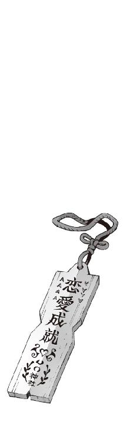
四章
僕がアニアの失踪を知らされたのは、それから五分ほど後のことだった。
第一発見者の操緒の証言によれば、その経緯はこうである。
『鳳島さんだっけ、あの人に言われたとおりに、ニアちゃんと一緒に非常ハシゴを下りたのね。見張りに立ってた学生連盟の人がいなくなってたから、その間にマンションから離れて道路に出たの。そのあと最初に朱浬さんたちと待ち合わせた公園に行くつもりだったんだけど、途中でニアちゃんがいきなり走り出しちゃって......』
その証言を揺さぶってみる。なんでだ？
『ん、わかんないよそんなの。もしかしたらなにかを追いかけていったのかもしれない、とは思ったんだけど』
「なにかを......追いかけていった......？」
花やら蝶々やらをふらふら追いかけて迷子になるアニアの姿を、一瞬、想像してしまう。
僕の知っている普段のアニアはそんな可愛げのあるガキではないが、しかし年齢的にはその手の分別のない行動もべつに不思議ではないわけで。
「操緒はどうしてアニアを追いかけなかったんだよ」
『追いかけたよ。追いかけたけど、届かなかったの。あたしが智春から離れてそんな遠くまで行けないのは知ってるでしょ』
「そ、そうか」
僕は沈黙。そういえばそうだった。操緒は不満そうに僕を睨んで、
『それよりも智春はなにしてたのよ。智春がさっさとマンションから出てくれば、操緒だってニアちゃんに追いつけたかもしれないのに』
「う......いや、それは......」
思わず目を逸らして僕はうろたえた。まさかここで、鳳島氷羽子にキスされて呆然としていた、とは言えまい。明らかに挙動の不審な僕を見て、操緒が『んんっ？』と眉を寄せる。こいつのカンの鋭さは半端ではないのだ。
『怪しい......』
「な、なにが？」
『そういえば、あのあと智春たちのところに学生連盟が来たんでしょ。あの鳳島さんって人、どうやって誤魔化したわけ？』
「いや、べつに彼女はなにも......向こうからもなにも訊かれなかったし」
『なにも訊かれなかった......？ あんなふうに騒いでおいて？』
「あ、うん......まあ、学生連盟の連中も忙しかっただろうし」
『ふうん。どういう人たちだったの？』
「いやそれが......顔はよく見えなかったから」
『顔が見えなかった？ 同じ階にいて、どうしてそんなことになるわけ？』
操緒がさらりと矛盾点を指摘してくる。いつの間にか尋問する側とされる側が逆転していた。それはもちろん至近距離に氷羽子の顔があって視界が塞がれていたせいだが、そんなこと口にできるはずもなく、しかしこのままではバレるのは時間の問題だ。
そんな僕の窮地を救ってくれたのは、さっき合流したばかりの朱浬さんだった。
「ニアちゃんは自分の意志で走っていったのね。誰かに攫われたわけじゃなくて」
『ええ......まあ』
操緒は記憶を辿るように目を伏せた。ふふん、と朱浬さんは額に指を当て、
「だったら今の時点でそれほど心配することもないと思うわ。部長も連れていったんでしょ」
『......部長って、あの不細工なコアラのことなら......まあ、たしかに』
煮え切らない表情でうなずく操緒。
朱浬さんの言うとおり、アニアは今日ずっと科學部部長の分身であるヌイグルミを抱いていた。
夏休み返上で洛高で補習授業を受けさせられている部長だが、いちおうあのコアラを経由してアニアの動きも感知しているはずである。その部長がなにも言ってこないということは、今のところアニアには差し迫った危険はないのだろう。
「正直それよりも学生連盟の動きのほうが気になるわね。それとその鳳島って女の子のことも」
リゾート風味の麦わら帽子の縁を撫でながら、朱浬さんが不吉なことを言う。
鳳島の名前に反応して、僕はギクリと表情を硬くした。嵩月が訝しげに首を傾げる。彼女は先ほど合流した直後から、なぜかやけに僕の顔を気にしているのだ。
幸い操緒はそのとき僕を見ておらず、
『あの......鳳島さんってもしかして鳳島蹴策の関係者なんですか？ 兄妹とか親戚とか』
「親戚？ 男のほうの鳳島の？」
朱浬さんはそれほど意外そうでもなく首を振り、
「洛高にそんな生徒がいるって話は聞いたことないけど......奏っちゃんはなにか知ってる？」
「いえ」嵩月が困った顔をする。「あー......嵩月の家は、鳳島とはあまり交流がないので」
「そっか......そうよね。天敵同士みたいなものだしね......」
「天敵......？」
聞き捨てならない言葉だった。嵩月と鳳島が天敵同士？
うふふっ、と朱浬さんはなぜか楽しそうに微笑んで、
「それはそうでしょう。嵩月の属性は紅蓮地獄の業火で、鳳島の属性は氷結地獄の凍気。お互いに相性は最悪よ。まともに戦えばどちらもただでは済まないわ」
「そ、そうなのか......」
訊き返す僕を見て、嵩月は赤面しながらうなずいた。なぜそんな恥じ入るような反応をするのかわからないが、とにかく嵩月と鳳島はなるべく戦わせるべきではないらしい。もし氷羽子が鳳島の親戚なら、彼女と嵩月が争うような事態も避けねばなるまい。
今のところ二人が争う理由はないはずだが......
「あれ。ということは鳳島氷羽子も悪魔ってことですか？」
驚いてつぶやく僕を眺めて、操緒は呆れたように肩をすくめた。
『なによ。今さら』
「いや、だってそんな素振り見せなかっただろ。男のほうの鳳島とは雰囲気が全然違うし」
『まあそれはそうだけど......めずらしい名字だし、まるで無関係ってことはないんじゃない？ 似てる似てないってことなら、嵩月さんだってお父さんと全然似てないよ』
「あうう......」
唐突に引き合いに出されて、うなだれる嵩月。たしかに、あの強面のオッサンと嵩月では、見た目まったく血のつながりが感じられない。いやしかしそれとこれとは。
『そうかな......あんまり違わないと思うけど。でもさすがに兄妹ってことはないか......』
どうして、と僕は視線だけで問い返す。操緒は自信たっぷりに、
『だって鳳島って妹に異様に憧れてるじゃない。もし氷羽子さんが本当に鳳島の妹だったら、あそこまで妹の存在に幻想抱いたりしないでしょ』
「なるほど、それはそうか......あんな美人の妹がいて、今さら理想の妹を探す必要もないよな」
妙に納得してしまう。そんな僕のつぶやきを聞きながら、
「......美人......」
どうでもいい部分に反応する嵩月。夏期講習に出ていなかった彼女は、鳳島氷羽子のことを知らないのだ。
「でも......そうか。里見恭武とかってＧＤのことを知ってたのも、鳳島氷羽子が悪魔だったら不思議ではないのか」
ふと思い出して僕はつぶやいた。朱浬さんが少し険しい目つきで振り向いた。
「里見恭武？ あの男が加賀篝隆也を追ってこの街に来てるの？」
彼女の反応の大きさに僕は驚く。
「知ってる相手なんですか？」
朱浬さんは否定するように首を振り、
「ううん、直接は知らないけど、噂だけ」
「噂？」
「キナ臭い噂ばかりが聞こえてくるのよね、その名前。ＧＤの権力を利用して、自分の学校の生徒会を私兵化して使ってるとか。かなり露骨なやり方で盟主の地位を狙っているとか、実はマザコンかもしれないとか」
いつものおっとりした口調のまま、朱浬さんは皮肉っぽく顔をしかめてみせた。
「一般生徒に被害が出てるわけでもないのにＧＤが動くのは変だと思ったのだけど、里見恭武なら納得だわ。加賀篝隆也を倒して、自分の手柄にするつもりなんでしょう。でなきゃ加賀篝が狙っているなにかを手に入れるつもりなのかも......」
「はあ......出世願望の強い人なんだ......」
今どきの学生にはめずらしいタイプだなあ、と僕はどうでもいい感想を抱く。マザコンかどうかはともかくとして。
「ただの俗物よ」
しかし朱浬さんはひと言で切って捨て、
「なんにせよ、お友達になれる相手とは思わないほうが良さそうね。とりあえずペンションに戻りましょうか。あたしたちが加賀篝を捜していることを彼らに知られたくないわ」
「え......でも、いいんですか。アニアを捜さなくて......？」
「平気よ。あの子もいちおう悪魔なんだし、並の変質者や誘拐犯が相手なら自力でどうにかできるわよ」
「はあ......」
それもそうか、と思い直す。アニアの容姿のことを思えば、学生連盟や加賀篝よりもむしろその辺の野良変質者に狙われる可能性のほうが断然高いのだし、その手の連中ならアニア一人でもどうにかなるだろう。彼女はある意味、嵩月たち以上に危険でタチの悪い〝運喰らい〟の悪魔なのだから。
時計を見る。夕方のバイト再開時刻まで残り三十分あまり。そろそろ戻らないと、たしかにまずそうだ。ここで頭を痛めていてなにかが解決するわけでもなし、なんにせよ一度ペンションに帰るべきなのだろう。僕が半ば投げやりにそんな結論に達したとき、
「あの......」
嵩月が僕の前に控え目になにかを差し出してきた。綺麗に洗濯されて折り畳まれたハンカチだった。意味がわからず困惑する僕を、嵩月はのぞきこむように少し首を傾げて、
「ついてるから、なにか......唇のところ」
「えっ？」
僕は反射的に自分の唇を拭った。借り物のハンカチになにかがうっすらと色移りした。
艶のある淡い水色の顔料。見覚えのある色である。まさか嵩月がさっきからじっと僕の顔を見ていたのは、こいつのことを気にしていたのか。
「......口紅......？」
無表情につぶやく嵩月の声が硬い。周囲の温度が冷えていくような気配。無意識に彼女から顔を背けた僕の目の前には、引きつった笑顔を浮かべる操緒がいた。
『ほー......』
嵩月のハンカチを見下ろして、操緒はかつて聞いたことがないほど優しい声を出す。焦りで、僕の言葉は声にならない。違う。きみたちはなにか誤解している。これはちょっとした事故なんだ。いやほんとに。
朱浬さんはちょっと興味深そうな顔で振り返って微笑んでいる。見てないで助けて欲しいのですけど、助けてはくれない、のだろうな、やはり。
『どういうことか、詳しく証言してもらおうかしら』
操緒が口元だけの笑顔でそう言って、嵩月が控え目にうなずいた。
それからが地獄だった。
○
やつれ果てた僕がバイト開始時刻ギリギリに戻ってきたとき、オリエンタルドラゴンの玄関ホールには思いがけない人物の姿があった。
サマードレスに身を包んだ幼い少女だ。
淡い金髪に灰色がかったブルーの瞳。端整だが常にふて腐れたような顔立ち。操緒とはぐれて行方不明になっていたはずのアニアだった。籐のソファにもたれた彼女は少し疲れた様子でウトウトしている。やはり一人で先に宿に戻って来ていたらしい。
「なっ......」
そして僕は驚愕して立ち尽くす。操緒や嵩月も同様に絶句して固まっている。
べつにアニアが一人で戻ってきたことに驚いたわけではない。それくらいは犬猫でも普通にやってのける芸当だ。むしろ問題なのは、彼女が一人ではなかったことだった。
アニアと向かい合わせの席に、男が一人、妙に浮かれた態度で座っていた。
派手なアクセサリを無数にぶら下げ、素肌に革ジャンという頭の悪そうな服装の男である。
美形と呼ぶには品格に欠ける顔を、だらしなく緩めたその男は──
「鳳島......？」
「んあ？」
困惑混じりの僕の声に、鳳島がもたもたと振り返る。
緊張感を微塵も感じさせないその顔を見ていると、今さら警戒する気にもなれずに呆れた。なぜこの男がこんなところにいるのだ。浜辺でトウモロコシを焼いていたのではなかったのか。それがどうしてアニアと一緒に？
「おまえ......なんで......？」
呆然とつぶやきかけた僕の肩を、誰かがそっと押しのける。
「下がって、トモハル」
物静かな振る舞いで朱浬さんが前に歩み出た。慈愛に満ちた声とは裏腹に、漂ってきたのは冷たい殺気だった。平和なリゾート地のペンションに、がっしゃん、と重々しいコッキング音が鳴り響く。
どこぞの宇宙海賊よろしく腕の内蔵ショットガンを構える朱浬さんを見て、鳳島もさすがに顔色を変えた。あれはたしかダブルオーバックとかいう強力な弾丸が入っているのだ。立てこもり事件なんかが起きたとき、特殊部隊が壁をぶち抜くのに使うやつだ。この至近距離であんなものを喰らったら、鳳島の頭なんか軽く吹き飛ぶのではないだろうか。
「なにか言い残すことはある？」
この期に及んで朱浬さんは満面の笑顔だ。鳳島が慌てて立ち上がり、
「ま、待て......黒崎。誤解すんな......おまえらなにか勘違いしているっ......」
「勘違い......？」
朱浬さんは銃口はそのままで、かすかに首を傾げた。
「俺はただ道案内してきただけなんだよ。たまたまマイシスターが道に迷ってるところを見かけたから」
「道案内？ たまたま見かけた？」
「お、おゥ。あっちの岬にボロい教会があるだろ。俺はあそこに寝泊まりしてたんだけどよ。ちょうどそこにフラフラっとアニアたんがやってきて......まァ、なんつーの、運命ってやつ？」
「......ホントなの、ニアちゃん？」
朱浬さんが、なんとも形容しがたい表情で訊き返す。
アニアは眠そうな目元をぐしぐしと擦りながら、疲れた口調で、
「ああ......まあ。客観的事実に関しては概ね間違いではないな」
『でも、教会ってあっちの海岸の端っこでしょ。ずいぶん遠いよ』
操緒が窓の外を眺めて驚きの表情を浮かべた。
「そ、そうだな」
なぜか焦ったように目を逸らすアニア。操緒は更に不審げな表情になって、
『どうしてあんなところまで行ったの。あたしを置いて急に走り出したりしてさ』
「う......すまん。実はその......そうだ、蝶。めずらしい蝶を見かけて夢中になって追いかけているうちにはぐれてしまったのだ。なにしろ私は、ほら、無邪気な子どもだからな」
絶対ウソだ、とその場にいた全員が心の中で叫んだ。
しかしそれを否定する証拠もなかった。無理やり問い質しても、素直に偽証を認めるような殊勝な性格ではないだろうし。
とにかく操緒とはぐれる直前に、アニアがなにかを目撃したのは間違いないだろう。そして、彼女は一人でそれを追いかけて行ったのだ。岬の教会付近まで。
そのあたりでアニアが迷子になって鳳島と遭遇したのは、おそらく事実なのだと思われた。
加賀篝の隠れ家から、教会のある岬まではかなりの距離だ。そこまで全力で走っていったのなら迷子になるのは道理だし、アニアが疲れ果てている理由にも納得がいく。
とりあえずアニアが無事でなによりだった。それは素直に喜ぶところだろう。問題は彼女がその教会近くでなにを見たのかということだが、どうせ訊いても教えてはくれないのだろう。
『あれ。ということはニアちゃんが宿に帰り着けたのは、鳳島のおかげってこと......？』
操緒の意外そうなつぶやきに、
「最初からそう言ってるじゃねーか。まあ、礼には及ばねェけどな。妹の面倒を見るのは兄として当然のことだ」
鳳島はにやけた表情で返答した。僕たちは無視。アニアはオマエの妹じゃねーだろ、などと今さら突っこむのも馬鹿馬鹿しい。しかし、どうしてこの男はこれほどまでに妹にこだわるのだろう、というのは気になった。僕は少し躊躇いながら、
「あ......そういえば、鳳島に訊きたいことがあったんだ」
「おゥ。なんだ？」
「鳳島氷羽子って女子を知ってるかな。今、洛校の一年にいるんだけど」
無意識に唇を覆い隠してつぶやく僕を、操緒と嵩月が横目で睨んでいた。やりにくい。
「ひわこ......？」
鳳島は怪訝な表情を浮かべ、真剣味のない動きで首を傾げた。
あまりの反応の薄さに僕は戸惑った。やはりこいつは彼女とは無関係なのだろうか。しかし同じ悪魔の一族で無関係ということがあり得るのだろうか。こうなると鳳島氷羽子が悪魔かもしれない、という説も少し怪しくなってくる。
やがて鳳島はこめかみを押さえながら、
「どっかで聞いたような気もするけど、思い出せねェな。その女がどうかしたか？」
無関心にそう言った。どこかわざとらしい気もしたが、鳳島が嘘をつく理由も思いつかない。
「いや、知り合いじゃなければいいんだけど」
しかし、これで手がかりがなくなってしまったな、と軽く落胆する。氷羽子が何者で、なぜ僕たちを助けてくれたのか、結局わからないままだった。
「それで鳳島はいつまでここにいるつもりだよ？」
僕が無愛想に言い放つと、鳳島は少し傷ついたような表情を浮かべ、
「なんだよ、その追い返したくて仕方ないみたいな態度は」
「当然だろ」
僕はムカつきながら嘆息した。
「こないだの旅客機の事件のとき、おまえのせいで僕たちがどれだけ苦労したのか──知らないとはいわせないからな。犠牲になった人だって......」
「待て待て。落ち着け。こないだのことなら、あれは加賀篝が勝手にやったんじゃねーかよ。俺はただ雇われてあいつを飛行機まで運んだだけで」
「加賀篝に手を貸したのは事実だろ」
「だからってマジで旅客機を落とそうとするなんて聞いてなかったぜ。だいたい俺はその前にそこの女に撃墜されて死にかけてたんだからな。生身の相手に向かってあんな大量のミサイルぶっ放すか、普通」
鳳島はそう言って、恨みがましい視線を朱浬さんに向けた。
朱浬さんはにっこり微笑んでそれを黙殺。鳳島はやさぐれた表情で肩をすくめ、
「それに悪ィけど、ここに残ってるのは晩飯に誘われたからなんだよ」
「誘われた？」僕は驚いて、「アニアに？」
「いいや。おまえらの連れの小っこくて元気のいい女。なんか体育会系っぽい感じの」
「え......」
それはもしかして杏のことか。思い悩む僕に、鳳島は無関心な口調で、
「宴会やるって張り切ってたぜ？」
「......宴会？」
なんのことだかわけがわからない。なにか聞いてるだろうか、と嵩月と目を合わせてみても、彼女は無言で首を振るだけだった。もちろん操緒の瞳にも大きくハテナマークが浮かんでいる。
そういえば僕たちが出かける直前、なにかの準備で忙しい、というようなことを樋口たちが言っていたような気もするが──
「あ......智春たち、帰ってきた？」
そのとき軽やかな足音を響かせて、ホールに顔を出したのは杏だった。エプロン姿の彼女が抱えているのは、焼きたてのケーキと大量の花火セットだ。
「遅いよぉ。宴会の準備もう出来てるよ」
大きな瞳一杯に笑みをたたえて、杏が声を弾ませる。
口を挟むことに僕はなぜか罪悪感を覚えながら、
「あの......ごめん。宴会ってなんのこと？」
「あれえっ？ 樋口から聞いてなかったの？」
逆に驚かれてしまう。
僕たちは一斉にうなずいた。今日がなにかの記念日だとは聞いてない。誕生日が近い人間もいないはず。もう、しょうがないなあ樋口は、と杏はため息。
「今日の夜はあたしたち働かなくていいって言われたの。予約のお客さんは結婚式の二次会で浜辺でガーデンパーティなんだって。でね、宿のレストランが黒崎先輩たちの貸し切り状態だから、だったら、あたしたちと一緒に宴会でもしたらいいんじゃないか、って叔父さんが」
「ああ、そういう話か......」
それはいかにも大原叔父の言いそうなことである。しかし本当にそれでいいのだろうか？ 杏はともかく、樋口なんか明らかに普段の仕事より気合いが入ってるし。
「いいんじゃない？ 夏休みにわざわざ手伝いに来てあげたんだから。これくらいはねっ」
お気楽な調子で杏が笑った。そう言われてしまうと僕が反論する理由はないが、
「......だからってなんで鳳島まで誘うんだよ？」
ぼそり、と杏の耳元に顔を寄せて小声で訊くと、杏は愉快そうに目を細め、
「あれっ？ だってニアちゃんの義理のお兄さんなんでしょ？ やっ、よくわかんないけど、インターナショナルだねっ。すごいねっ」
にこやかに笑う彼女に僕は沈黙した。今さら鳳島がアニアとは無関係の変態シスコン野郎であるとは、とても言い出せない雰囲気である。
「じゃあ、みんな手を洗ってきたらレストランに集合ねっ」
そう言い残して駆け出していく杏を、僕は為すすべもなく見送った。
思わず深々とため息が洩れる。いろいろ面倒な誤解があって、なにから訂正すればいいのかわからない。そもそもそれは僕が責任を負わねばならないようなことなのか？
「......いいのか、アニア？ 鳳島のこと、なんか誤解されてるみたいだけど......」
僕は疲れた声で訊いた。本来なら鳳島に文句をつけるのは、この幼い留学生の役割なのだ。いくら疲れているとはいえ、アニアがここまで無反応なことには違和感がある。
しかし彼女は億劫そうに瞼を半分だけ開けると、調子に乗って浮かれる鳳島を一瞥、
「放っておけ。実害はない」
いつもの高慢な口調で言い捨てた。
鳳島は、しまりのない表情でアニアを眺めてへらへらと笑っている。そんな姿を見ていると、真面目に悩んでいる自分が馬鹿みたいに思えてきた。たしかに実害はないのだろう。ただ単に鬱陶しいだけで。そんなふうに自分に言い聞かせ、僕はうんざりと首を振った。
朱浬さんがアニアを見て浮かべた不安げな表情には、気づかないふりをすることにした。
○
宴会は最初から荒れ模様で始まった。
原因はいくらでも思いつく。まず参加者の顔ぶれに問題があった。自他共に天敵同士と認め合う嵩月と鳳島が同席している時点で、すでになにかが間違っている。
その鳳島はひたすらアニアにつきまとって甲斐甲斐しく世話を焼いていた。肝心のアニアは不機嫌に黙りこんでいるだけだ。朱浬さんはそんな鳳島をいつでも射殺できるようにと、部屋から持ち出してきたチェーンガンを構えて、不穏な雰囲気を漂わせている。明らかに宴会中の光景としては異様である。
杏は、部長の現し身である不細工コアラがいたく気に入ったらしく、先ほどからしきりに話しかけていた。時折、コアラの背中をバシバシと叩いたり、激しく振り回したりしているのが気になるが、まさかその衝撃が部長の本体に伝わっていると教えるわけにもいかず、僕は見て見ぬふりをする。部長が少し不憫だがやむを得まい。僕もそれどころではなかったのだ。
なぜなら最悪の参加者がほかにいたからだ。
「はっはっは......盛り上がってるか、智春！」
黙々と食事を続けていた僕と嵩月に、わざとらしい笑顔で話しかけてきたのは樋口だった。
なぜかこの男だけは私服ではなく、ウェイター風の衣装を着ている。慣れた手つきで構えるトレイにはトロピカルな色合いの飲み物が載っていた。
「おっ、狭いな、このテーブル。悪いけど、嵩月、ちょっと詰めてくれ」
「あ......うん」
樋口に言われるまま、素直に席を移動する嵩月。
結果的に嵩月は僕のすぐ隣、肩と肩が触れ合うくらいの至近距離に座ることになる。そして本来、嵩月が座っていたはずの場所に樋口は着席。いかにも窮屈そうな僕と嵩月の姿を見て、ニヤリと満足げに笑う。
「なんでおまえがそこに座ってるんだよ。こっち側がいくらでも空いてるだろ」
僕は抗議の声を上げてみたが、樋口はそれを聞き流し、
「まあまあ......このテーブル、飲み物切れてただろ。ほら、持ってきてやったぞ」
恩着せがましいことを言いながら、運んできたグラスを僕たちの前に差し出した。
高級そうなガラス容器の中身は、爽やかに泡立つよく冷えたトロピカルドリンクである。が、
「......なんで一杯だけなんだよ？」
「心配するな。ストローはちゃんと二人分用意してある」
「はあ？」
唖然とする僕の目の前で樋口がグラスに挿したのは、ぐにゃりと不自然な形にねじ曲がったバカ長いストローだった。二本を組み合わせると、ハートの形になるやつだ。
まさか嵩月と二人でこれを使えと......？
「アホかっ、こんなんで飲めるわけないだろ！」
僕は乱暴に樋口を叱責。しかし、樋口はわけがわからん、というふうに目を瞬き、
「......なんで？」
「いや、なんでって......そんな......」
「嵩月と一緒が嫌ってことか？」
「違っ......だから、嫌とか嫌じゃないとかって問題じゃなくて......」
あらたまって訊かれると説明に困る。実によくない。完璧に樋口のペースである。僕と嵩月をくっつけるという野望を、この男、まだ諦めていなかったのか。くそ、妙に張り切って宴会の準備をしていたから、怪しいとは思っていたのだが。
「おまえらが要らないのなら、これはガキんちょとあの男のところに持っていくけど？ 氷が溶けるともったいねーし」
そう言って樋口は、アニアと鳳島のほうへと視線を向けた。どこまで本気で言っているのか、さっぱり予想できないポーカーフェイスである。慌てたのは僕と嵩月だった。
こんなふざけた飲み物を鳳島の前に差し出したら、あのバカが浮かれてどんな行動に走るか、想像できすぎて恐ろしい。
「わかった。もういいよ。これは嵩月が飲んでくれ。僕は自分のぶんをなにか持ってくる」
僕はため息と共に立ち上がった。念のためにグラスに刺さったストローを一本引っこ抜いておく。ちっ、と樋口が露骨に舌打ち。
ホッとしたような表情の嵩月と別れて、僕は厨房へと向かった。
その途中、少し離れた場所で、ふて腐れた表情で頬杖をつく操緒に気づく。宴会好きの彼女が一人でしんみりしていることに、心配よりむしろ怖気を感じて僕は彼女に近づいた。
静かに顔を上げた操緒は、色素の薄い瞳で僕を見た。なんとなくぞんざいな表情である。
「なにやってんだ......こんなところで？」
恐る恐る声をかけてみる。しかし操緒の返事は素っ気なかった。
『べつになにも』
表情そのままのふて腐れた声で、
『約束したでしょ。智春が女の子を口説くのを邪魔しないって』
そのことか、と僕は脱力した。あの意味不明の賭けはまだ有効だったのか。
「いやだからそれは樋口が勝手に言ってるだけだろ。僕はべつに嵩月を口説くつもりは......」
『ふーん......どうだか』
とりつくシマもないとはこのことであろう。
さすがに僕も苛立ちを覚える。今回の樋口の作戦とやらは、主に彼自身の身勝手な事情から立案されたものであり、どちらかといえば僕と嵩月は迷惑している側なのである。操緒にまで八つ当たりされる理由はない。
「あのさ、なにか言いたいことがあるなら、ちゃんと言えよな」
ついに声を荒げた僕を、操緒が一瞬だけ驚いたように見つめた。その目尻がキュッと吊り上がる。売られた喧嘩を買い占めんとする豪腕バイヤーのごとき表情で、
『......その言葉、そっくり返してあげる』
「え？」
思わぬ反撃に僕はたじろいだ。なんだよそれは。どういう意味だ？
『智春、あたしになにか隠してることがあるでしょ』
操緒の攻撃ターンはまだまだ続く。柳眉を凛々しく逆立てた彼女に僕は圧倒され、
「あの......操緒さん？ なにを言って......？」
『こないだの加賀篝の事件あたりから、智春の態度、ちょっと変だよ』
背筋がすっと寒くなった。
細切れになった無数の記憶が、閃光のように脳裏をよぎる。
加賀篝隆也が起こした旅客機の墜落事故。破壊された翼面。魔力で生み出された巨大な氷河。砕け散り、花片のように舞った氷の結晶。そして空っぽの機巧魔神。
眠っていた操緒は、まだ知らないのだ。哀音が消滅したことを。
機巧魔神が魔力を振るうたび、彼女たち副葬処女の魂は磨り減り──やがて完全に消滅する。そんなことを言えるはずがない。
『操緒が眠ったあとで、なにかあったの？』
静かな瞳で彼女は僕を見据えている。
「べつに......なにもないよ」
僕はぎこちなく笑って答えた。
「操緒も知ってるだろ。飛行機は無事に着陸したし、怪我人も......出なかった」
『............』
操緒が唇を震わせた。嘘だ──と言いかけて、その言葉を途中で呑みこんだのだと僕は気づいた。操緒は睨むような表情で、瞳を揺らし、
『そのこと......嵩月さんは知ってるの？』
僕は答えることができなかった。
嵩月は機巧魔神の秘密を知っていた。だから彼女は、機巧魔神を使うなと僕に警告し続けていたのだ。
その理由を嵩月が説明してくれなかった事情も、今の僕にはよくわかる。
このままでは、いずれ遠からず操緒は消滅する。それをどうやって本人に伝えろというのだ。
そして僕のそんな沈黙に、操緒は少し傷ついた表情を浮かべ、
『ふーん。嵩月さんは知ってても、操緒には言えないことなんだ』
「違う......それは......」
まずい、泣くかも、と肩を震わす操緒を見て僕が焦ったのも、束の間だった。操緒はキッと表情を険しくすると、僕の身体に憑依。左腕のコントロールを僕から奪い去り、
『──智春のバカ、エロっ、巨乳マニアっ！』
強烈なアッパーカットを僕の顎にぶちこみながら、好き勝手なことを絶叫してそのまま姿を消した。嵩月が驚いた顔でそれを見ていた。殴られた顎と、殴ったほうの自分の左手の痛みに僕は悶絶。あの幽霊、なんてことを言いやがる。
「わっ、大丈夫......智春？ なんか今スゴイ音がしたよ」
あわてて駆け寄ってきてくれたのは杏だった。しかし、彼女の目は思いきり笑っている。
「どうしたの？ 智春が操緒ちゃんと喧嘩なんてめずらしいね」
「いや......まあ、めずらしいってことはないんだけど」
顎を押さえたまま僕は呻いた。その間に杏は、氷水に浸したおしぼりを絞って渡してくれる。冷えたおしぼりの感触が熱を持った顎に心地よかった。
杏はそのまま僕の隣に座りこんだ。
その頭がふらふら揺れていることに気づいて、僕はぎょっとした。杏はにっこりと微笑んで、僕の肩に気安く手を置き、そして唐突に「あはははっ」と笑い出す。
普段からいつも笑っている印象の彼女だが、さすがにこれは普通ではなかった。どことなく表情がとろんとして、目の焦点が合ってない。
「杏......まさか、飲んでるのか？」
小声で彼女の耳元に訊いてみる。いくら宴会とはいえ、こんなところで未成年の飲酒はまずいのではないだろうか。ただでさえ危険な顔ぶれが揃っているのに、この上アルコールが入ったら、どんな展開になるのか想像できない。
しかし杏は、ほんのりと頬を赤らめたまま首を振り、
「なんのこと？ お酒は飲んでないよ？」
「嘘つけっ、完璧に酔っぱらってるじゃないか！」
呆れ顔で指摘する僕の背中を、杏はばしばしと乱暴に叩いた。
「酔ってないってば。変な智春ー、あはっ！」
これはダメだ、と僕は思った。うんざりした気分で息を吐き、杏に引きずられたままの不細工なヌイグルミに非難の矛先を向けてみる。
「部長......なんで止めてくれなかったんですか！」
『いや、本当に彼女は飲んでないんだ』
ヌイグルミは、そこで言いにくそうに短い沈黙を挟んだ。
『ただちょっとワインビネガーだと信じこんで、本物の赤ワインをサラダにぶちまけて食べてたくらいで......』
「あ......」
あれか、とさっき食べたマリネサラダのことを思い出す。そういえば変な味だと思ったのだ。
『ついでにメインのビーフシチューにも、ボルドーの赤が丸ごと一本入ってる』
うわ、と僕は顔をしかめた。それはひょっとして、朱浬さんや鳳島が美味そうに食べているアレのことか。大丈夫か。あの人たち、酔っぱらって暴れ出したりしないだろうな。
『それにしても、泥酔するほどの量ではないと思うのだが......？』
不細工コアラが、そこで少し怪訝そうに杏を見上げた。僕は投げやりに首を振って、
「いや、彼女はすっごいアルコールに弱いんですよ。予防接種のときの消毒の臭いだけで酔い潰れたことがあったんですから......」
『それは、なんというか興味深い体質だな。しかし僕の記憶では、彼女の実家はたしか......』
「ええ、まあ......酒屋なんですけど。遺伝とかあんまり関係ないみたいで......」
というわけで今さら杏を責めても仕方ない。とりあえず酔いが醒めるまで、彼女にはここで大人しくしてもらうしかないのだが、
「こらこら、ヌイグルミ相手になにをコソコソ内緒話してるのかなっ！」
杏が笑顔で、僕と部長の間に割りこんでくる。そんなふうに言われると、まるで僕のほうがちょっと危ない人みたいである。
「悩み事ならあたしが相談に乗ってあげるよ」
「えっ......いや、いいよ。そんな......」
酔っぱらいに人生相談なんかしたくない、と僕は慌てて首を振った。だが、杏はしたり顔で、
「そうね、ずばり......智春の悩みは操緒ちゃんのことだねっ！」
えへん、と胸を張って断言するが、そんな自慢されるほどのことでもない。幽霊に憑かれた人間の悩みなんか、その幽霊のことに決まっているではないか。
「さっきはどうして操緒ちゃんと喧嘩してたの？」
杏が好奇の眼差しで訊いてきた。頭をゆらゆらさせている酔っぱらいのくせに、それはちゃんと覚えていたらしい。
「いや......さっきのは喧嘩というわけじゃなくて操緒が一方的に......」
「ふーん」
上目遣いで、なにやら思索する表情の杏。
「それってもしかして樋口が余計なことをしてるせい？」
あっさりと問われて、僕はしばし唖然とした。
「気づいてたのか？」
「それは気づくよ。バレバレじゃん」
あははははっ、と杏は、いかにも酔っぱらいらしく理由もなく大笑いし、
「どうせ智春と奏ちゃんをくっつけて、その隙に自分が玲子ちゃんと仲良くなろうとか思ってるんでしょ。しょうがないなあ、樋口も」
「うん。まあ、そんな感じなんだけど」
僕は疲れた気分で天井を仰ぎ見た。気づいていたのなら止めてくれよ。
「それで智春はどうしたいの？」
杏が不意に口調を変えた。面白がっているような声だった。戸惑う僕を見て、いかにも世話好きな女友達らしく、
「奏ちゃんとつき合うつもりはないのかってこと。話によっては協力してあげてもいいよ？」
「うーん......なんでそんなことを訊かれるのか、正直そっちのほうがよくわからない」
僕は素直に心境を告白する。杏は焦れったがるような表情を浮かべて、
「えっ、どうしてよ？」
「だって普通に考えておかしいだろ。僕には操緒が憑いてるんだし。誰かと交際するとかいう以前の問題じゃないか？」
「そんなの関係ないと思うなあ......」
杏は落胆した様子で首を振った。そして拗ねたように唇を尖らせ、
「だったらさ、操緒ちゃんが生身の人間として生き返ったら、智春は彼女とつき合うの？」
「はあ？」
話の飛躍に僕は困惑を隠せない。
「いや、そんなの考えたこともなかった......けど？」
「ほら、やっぱり」
杏が勝ち誇ったように微笑んだ。
「それならただの順番の問題じゃない。遅かれ早かれほかに彼女を作ることになるんだから、先につき合い始めてから、そのあと操緒ちゃんを祓うなり生き返らせるなりすればいいじゃん」
「え......そういう問題なのか......？」
危うく納得しそうになってしまったが、その理屈はいろいろ問題があるのではないかと思う。ローンで家を建てるのとはわけが違うのだから。そもそも僕はほかの女の子とつき合うために操緒を生き返らせたいわけではないのだ。
しかしそれをどうやって杏に諭せばいいのかわからず、僕が死にかけた魚のような目で視線を彷徨わせていると、
「智春はさ......操緒ちゃんに罪悪感を持ってるだけじゃないの？」
杏の声はいつになく大人びていた。
「一緒に乗ってた飛行機が落っこちて、操緒ちゃんが幽霊になって......なのに、自分だけ生き残ったのを引け目に思っているんじゃないの、ってこと。あたしだったらそういうのはヤだな。そんなんで智春が幸せになれないのを自分のせいにされたら、そりゃ怒るよ」
僕はなにも言い返せない。杏の言葉は真実の一部を的確に言い当てているという予感があった。僕は操緒に間違いなく罪悪感を抱いているし、そして操緒にはそれが許せないのだ。
沈黙する僕の横顔を眺めて、杏が、あは、と笑い声を洩らした。うつむく僕の肩に頬を乗せ、
「勝手なこと言ってごめん」
ため息のような杏の言葉。
「いや......」
僕は首を振って再び沈黙する。正直に言えば僕は杏に感服していた。アニアとたいして変わらないくらいの童顔のくせに、杏は鋭い。もしかしたら僕よりも操緒の気持ちをわかっているのかもしれない。
杏はなにも言わず僕の肩に寄り添っている。彼女の体温を感じながら、どうしていいかわからず僕は無言。それから間もなく、すう、と僕の耳元で吐息が聞こえてきた。
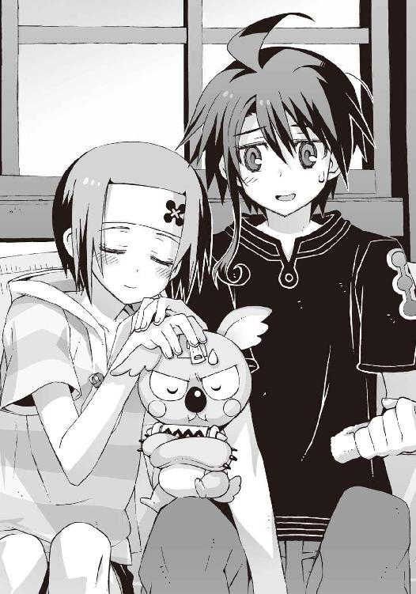
「......杏？」
名前を呼んでも返事はない。直前までの緊張の反動で、僕はぐったりとその場に座りこむ。
酔っぱらった杏は安らかに寝息を立てていた。
○
杏はそのままレストランのソファ席に寝かせておくことにした。もともと酔い潰れるほど痛飲したわけではない。放っておいても、そのうち目を覚ますだろうと思ったのだ。
宴会はまだまだ続いている。大原叔母が用意してくれた料理はかなりの量だったが、そのほとんどは朱浬さんと鳳島の二人によって食べ尽くされ、現在はデザートの時間だった。
怒って姿を消したはずの操緒は、アニアたちと中庭で花火に興じている。
杏が買いこんできた花火セットは、ちょっとした特撮番組が撮影できそうなくらいの量で、エンドレスで燃やし続けていても当分終わりそうな気配はない。楽しそうだとは思ったが、なんとなく参加する気になれずに、僕はカラフルな火花を遠くからぼんやり眺めていた。
夕方が過ぎて夜になり、蒸し暑かった風もだいぶ涼しくなっている。
「──嵩月？」
レストランを出て行く長い髪の少女に気づいて、僕はその背中に呼びかけた。
嵩月が、びくっ、と肩を震わせて振り返る。悪戯を見咎められた仔猫のような仕草である。
知り合って最初の頃は、彼女のこういう反応に、もしかして恐がられているのではないかといちいち不安になったりしていたのだが最近ではもう慣れた。そういう習性の愛玩動物とでも思えばべつに気にならない。
「なにか探してる？」
嵩月の様子から推理して訊いてみる。彼女は、こくり、と人形のようにうなずいて、
「タオルケットかなにか......杏さんに。風邪をひくといけないから」
「ああ......そうか。ちょっと冷えてきたもんな」
「............」
無言で再びうなずく嵩月。
動いているぶんには気にならないが、じっとしていると少し肌寒い。熟睡中の杏を放置しておくのは、たしかに不安かもしれなかった。かといって客室の高価げな羽毛布団をこんなところに運んでくるのは少々気が引ける。
「リネン室に予備のがあっただろ。一枚もらってくればいいんじゃね？」
近くの席でデザートをがっついていた樋口が、興味なさげな口調で僕たちに声をかけてくる。
「......リネン室？」と嵩月が小首を傾げた。
「そう、二階の奥。智春、案内してやれよ」
「ああ、うん。嵩月、こっち」
樋口に言われるまま、僕は嵩月と連れだって歩き出した。
ニヤニヤと笑っている樋口の態度が目障りだったが、嵩月を案内することには文句はない。ここ数日のペンションのバイトでは、主に僕がその辺りの業務を担当していたのだ。
宿泊客がガーデンパーティに出払っているせいで、宿の中は静かだった。
嵩月と二人きりでいることを気まずく感じるのは、さっきの操緒や杏とのやりとりが、頭に残っているせいかもしれなかった。ついでに樋口のアホな作戦のことも思い出す。あの露骨でしょうもない気の利かせ方を、嵩月はどう思っているのだろう。
杏でさえ気づいていたのだから、本人がわかっていないということはないと思うのだが──だがしかし嵩月だしな、とも思う。
まさか感想を訊くわけにもいかないし、とにかく今は気にしないことにしよう。そんなふうに自分に言い聞かせているうちに、僕たちは目的のリネン室へと辿り着いた。
要するに客室用のシーツやタオル類を保管してある倉庫である。
防火シャッターを兼ねた重い金属製の扉を開けて、僕と嵩月は部屋に入った。
洗濯を終えたばかりのシーツの、独特の匂いが充満した空間。
目的のタオルケットを求めて、部屋の奥へと進んでいく。
不意に天井の蛍光灯が消えたのはその直後だった。
「あ......？」
嵩月が怪訝な声を洩らす。僕は無言のまま軽く混乱。唐突に訪れた闇のせいで視界が利かない。立ち竦む僕たちの背後で、扉が閉ざされる重々しい音が響き渡る。ガチャ、という金属音は、もしかして外から施錠された音か。
そのときになって僕はようやく、自分たちが閉じこめられたのだと気づく。
「樋口っ！ おまえ、なに考えてんだ。開けろよ！」
僕は扉に駆け寄って叫んだ。こんなくだらないことをする人間の心当たりはほかにない。
しかし廊下にいるはずの樋口は答えない。代わりに下手くそな口笛で、古い映画の主題歌が聞こえてきた。タイタニック愛のテーマ。もしかしてムードを盛り上げているつもりなのかと思って僕は余計にうんざりした。沈没してどうする。
「あー......」
嵩月は事情が理解できずに、ぽつんと立ち尽くしているようだった。僕は申し訳ない気分で一杯になった。リネン室の照明のスイッチは廊下である。このまましばらく暗闇の中に二人で過ごすことになる。まんまと樋口の策略に嵌められたわけだ。
「ごめん、嵩月。閉じこめられたみたいだ」
僕は顔をしかめながらそう言って、
「──いや、でもただの悪戯だから。心配しなくてもすぐ開けに来ると思う。うん」
それから慌てて言い足した。
僕があまり深刻な態度を取ると、嵩月がドアを爆破するとか言い出しかねないと思ったのだ。
さすがにそこまで追いつめられた状況ではない。それにこんな可燃物まみれの部屋で嵩月の炎を使われたら、どう考えてもそっちのほうがヤバイ。
「......悪戯？」
嵩月が闇の中で首を傾げる気配がした。
「うん。まあ、あんまり怒らないでやってくれ。あいつはあいつなりに、たぶん気を遣ってるつもりだから。ええと......その、僕が喜ぶと思って」
結局そういうことなんだよな、と今さら反省する。樋口の傍迷惑な言動の何割かは、僕にも確実に責任があるのだ。こうも執拗に樋口が僕と嵩月の仲を取り持とうとしている背景には、それが親友のためだ、というやつの頑なな思いこみがあるのである。
嵩月は、明らかにまだよく事情がわかっていない雰囲気だったが、ややあって、
「あの......わたしも、嬉しい」
「えっ？」
予想外の彼女の言葉に、僕は間抜け顔で答えた。部屋が明るかったら、さぞかし挙動不審な姿を晒していただろうと思う。不幸慣れしすぎてよくわからないのだが、これは素直に喜んでいい場面なのだろうか。
嵩月は薄闇の中でもはっきりとわかる美しい微笑を浮かべ、
「よかった......話したいことがあったから。夏目くんと二人きりで」
ゴク、と僕は硬い唾を呑みこんだ。心臓の音がやけにうるさい。彼女の言葉で、二人きりという状況を強烈に意識してしまう。ここには操緒を含めて話を聞かれて困る相手も、途中で邪魔するやつもいない。部屋も暗いし、布団だって売るほどある。いや、それはあまり関係ないか。いかん、やはり少し混乱している。
「話って、なに？」
高まる緊張に耐えきれずに、僕は自分から沈黙を破った。
嵩月は少し言いにくそうに躊躇していたが、やがて覚悟を決めたように、
「機巧魔神のこと」
静かにそう言った。
全身から力が抜けて、僕は思わずその場にへたりこんだ。なるほど。そうか。そっち関係の話か。いいんだ、なにか期待していたわけではないし。
「聞いて、しまったの？ 機巧魔神の動力源。魔力の源......のこと」
嵩月は淡々と言葉を続けた。
「うん」
彼女の真剣さにつられて、僕は無意識に姿勢を正した。
感情の変化をほとんど見せなかった哀音の寂しげな笑顔を思い出す。機巧魔神が力を振るうたびに、生け贄として封印された少女はその魂を削られていく、ということ。副葬処女の魂が、機巧魔神の動力源なのだ。
「その話、彼女には」
嵩月が不安げに瞳を揺らした。
「操緒には話してないよ」
薄く笑って首を振る。
「できれば、聞かせたくないと思ってる。せめて 鐵から操緒を解放する方法がわかるまで」
鐵から操緒を解放する方法がわかるまで」
僕はうつむいて、闇の中に溶けこんだ自分の影に目を落とした。この影の中にあるどことも知れない暗闇の世界に、操緒の肉体は今も閉じこめられているのだ。
その闇色の牢獄から彼女を解き放つ方法を、僕は今も見つけられないでいる。
「でも......正直どうすればいいのかわからないんだ。副葬処女を救う方法を探しているのは、朱浬さんや加賀篝も同じなのに......」
僕よりずっと強い力を持っている彼女たちですら、それを実現できずにいるのだ。
それを考えると、ほとんど絶望的な気分になる。
朱浬さんがやろうとしているように黒科学関係の遺跡を調査するにしても、加賀篝のように必要な知識や法具を強奪するにしても、悪魔の力は必要だ。
そして力を使えば使うほど、救いたかったはずの操緒の魂を削っていくことになる。そんな決定的な矛盾を機巧魔神は抱えているのだ。
「......心配いらないから」
嵩月が僕のほうへと踏みこんできた。まるでそれが当然のことのように超然とした口調で、
「わたしが守るから。夏目くんのこと。水無神さんの代わりに」
僕は笑って、前からずっと言いたかったことを口にした。
「それはだめだよ、嵩月」
「......」
彼女が傷ついた表情を浮かべる気配が伝わってきた。暗くてそれが見えないことに、僕は密かに感謝する。
「嵩月が僕のために危険な思いをする必要なんてないんだよ。操緒の身代わりなんていらない。こないだみたいに嵩月が傷つくのも倒れるのも見たくない」
「でも......」
嵩月の反論を最後まで聞かずに、僕は彼女に背中を向けた。今までに何度も繰り返してきた問答だった。そのたびに僕は嵩月の好意に流されて、結局、彼女に頼ってしまっていた。だがそれはもう終わりだ。嵩月をこれ以上巻きこみたくはない。
悪魔の力など必要ない普通の生活を送るのが彼女の夢だった。それを僕が邪魔するわけにはいかないのだ。
僕はそのままリネン室の奥へと進んでいった。
思い出したことがあったのだ。記憶が少し曖昧なのだが、たしか部屋の突き当たりに非常口らしきものがあったはず。暗闇の中で壁をぺたぺた手探りしていると、やがてドアノブに指が触れた。試すまでもなく簡単にカギは開いた。
「ここから外に出られそうだけど......」
力任せに押すとドアは軋みながらゆっくりと開いていった。暗闇に慣れた目に飛びこんできたのは、無数の光の粒だった。
「あっ......」
嵩月が空を見上げて、驚きの声を上げた。
そこには街中では絶対に見られそうにない、眩しいほどの星空が広がっていた。
非常口からつながっていたのはペンション二階のバルコニーだった。遮るもののない天球を無数の星屑が埋め尽くし、高台から見下ろす静かな海には月の影が白く反射している。
「綺麗......」
嵩月が静かに吐息を洩らす。僕はむしろそんな彼女の姿に目を奪われた。さわさわと吹き寄せる潮風に髪を流し、空を仰ぐ彼女の姿は、月明かりの中で壮絶に映えていた。息をすることすら忘れてその横顔に見とれてしまう。そして、
「もう決めたことだから」
その嵩月が静かに振り返って僕を見た。宝石のような瞳に射すくめられて、僕は立ちくらみを起こしそうになる。
「え？」
「わたしはずっと自分のことが嫌いだったから......悪魔の力も、嵩月の名前も」
秀麗な唇が紡ぐ言葉を、僕はただ呆然と聞いている。挑むような表情を浮かべていた嵩月は、そこで不意に、記憶を辿るような柔らかな笑顔になって、
「でも、夏目くんは助けてくれた」
彼女がなにを言っているのかしばらく理解できなかった。
僕が嵩月を助けたのは一度だけだ。洛高に入学した直後のこと。第一生徒会に処分されそうになった彼女を救うため、初めて機巧魔神の封印を解いた。あのときだけ。
「待ってくれ。じゃあ、嵩月が今までずっと僕を守ってくれていたのは......」
もしかして、それだけ──なのだろうか。そのときの恩を返すために？
「契約してもいい、みたいなことを前に言ってたのも......」
僕に好意を抱いていたから、ということではなく、ただそのささやかな借りを返すために、そのために口にしたことだったのか──？
本当に眩暈を覚えて、僕はバルコニーの手すりにしがみついた。
嵩月は、大きく見開いた目を何度も瞬いて不思議そうにしている。
「いや、いいんだ......そうだよな」
様々な疑問が一気に氷解して、納得できた。あまりにも献身的すぎる嵩月の行動のせいで、すっかり勘違いしてしまっていたが、本来なら最初に疑うべきことだった。
僕のことを特別視しているというよりも、義務感で行動していた、と考えるほうが、嵩月の性格からしてよっぽど自然だ。
べつに失望するようなことではないのだけど、思いがけず落胆している自分自身に気づいて余計に落ちこむ。自分がひどく恥ずかしい生き物であるような気がした。もしかしたら彼女が自分を好きでいてくれるのではないかと、たぶん心のどこかで期待していたのだ。
「あー......」
動揺している僕を見て、嵩月が困ったように眉を寄せる。気恥ずかしくてまともにその顔が見られない。嵩月はなおも、ためらいがちになにか告げようとしていたが、僕は遠い目で宿の中庭を眺め──
「えっ......？」
異変に気づいたのは、そのときだ。
南国風の樹木に囲まれた暗がりに、僕は思いがけない人影を見つけてしまった。
僕が見ているものに気づいて、嵩月も顔面を蒼白にした。あってはならないカップリングの男女二人組だった。銀髪を逆立てた頭の悪そうな男と、混じりけのない金髪の小柄な影。
「と、鳳島......とアニア？」
自分が高所恐怖症であることも忘れて身を乗り出し、危うく転落しそうになる。
鳳島たちの挙動は、遠目にも明らかに怪しかった。まるで人目を避けるように足音を殺して暗がりを移動。急ぎ足で宿から離れていく。
「あいつら、なにを......？」
呻くような僕のつぶやきに、嵩月は戸惑うように首を振った。
鳳島がアニアを騙して連れ出した、という感じではなかった。どちらかといえば彼を唆して利用しようとしているのはアニアのほうではないか、という気がする。
「あっ......」
嵩月が悲鳴のような息を吐いた。
腕を伸ばした鳳島の頭上に、輝く氷の結晶が現れた。四枚の翼を持つ鳥の姿。鳳島が呼び出した魔精霊である。
氷の妖鳥は瞬く間に大きさを増し、乗用車ほどの大きさになった。鳳島とアニアが余裕で跨れる大きさだ。
キン、と冷やされた空気が収縮する耳障りな音がする。
二人を乗せた魔精霊が飛び去るのを、僕と嵩月は為すすべもなく見送った。
そういうことか、と僕は表情を歪めた。アニアが鳳島を宿まで連れてきて、あまつさえ宴会の同席を許した理由。彼女は最初から鳳島を利用するつもりだったのだ。言葉巧みに鳳島を抱きこんで、夜中に宿を抜け出すための案内人に仕立て上げる。弱冠十歳の童女とは思えぬ、末恐ろしいガキである。
「あの......知らせないと。黒崎先輩に」
嵩月に手を引かれて、僕は我に返った。アニアがなにを考えているのか知らないが、一人にしておくのは危険すぎる。変態気味のシスコン雄型悪魔と一緒では尚更だ。
「でも......！」
しかし朱浬さんに知らせようにも、僕たちは樋口の陰謀で閉じこめられたままである。
軽いパニックに陥りながら僕が途方に暮れていたとき、
『あーっ、こんなところにいたっ！』
美しい夜空を背景に、ゆらりと白い影が空中に現れた。色素の薄い幽霊の少女だった。
彼女の表情に先ほどまでの怒りの余韻はなく、
『智春！ 嵩月さんもっ、早く！ 靴とか履いて準備して！』
「み、操緒......？」
闇の中にぼんやりと輝く幼なじみを見上げて、僕は思考を停止させている。もうなにがどうなっているのかさっぱりわからない。準備と言われてもいったいなにをすれば──
「追うわよ、トモハル」
唐突に背後から聞こえてきた声に、僕たちは慌てて振り返った。いつからそこに立っていたのか、黒ずくめのワンピースを着た朱浬さんが、瞳を赤く光らせている。
彼女の背中に装着されているのは個人用の飛行ユニットだ。内蔵された小型ジェットエンジンが、甲高いタービンブレードの音を響かせている。またこれか、と僕は表情を凍らせ、
「しゅ、朱浬さん......それは......」
「こんなこともあるかと思って、ニアちゃんに発信器を仕掛けといたの。今から追跡すれば追いつくわよ。行き先にもちょっと心当たりがあるしね」
ふふっ、と朱浬さんは楽しそうに微笑んだ。そうか、彼女は最初から気づいていたのか。
「追跡するって......アニアはどうしたんです？ いったいなにが......」
「加賀篝に会いに行ったんでしょうね。そのために彼女はここに来たんだから」
「な......」
僕はただひたすら混乱している。
「だけど加賀篝の居場所をどうしてアニアが知ってるんですか。それになんでこんな時間に？」
朱浬さんは、奇妙な確信に満ちた表情で首を振った。
「わからない。でも、行けばわかるわ」
「行くって......どこに？」
訊き返す僕に不敵な笑顔を見せ、彼女は視線を海へと流した。
長く続く砂浜の果て。外洋に向かって尖る岬の先端。
「加賀篝隆也の目的地──遺跡の入口よ」
暗い闇の色に沈む水平線には、かつて砲台として使われていたという、禍々しい無人島の輪郭が浮かんでいた。
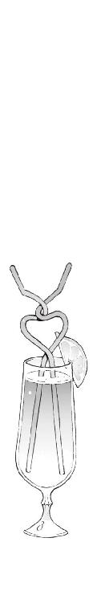
五章
決死の抵抗は徒労に終わった。
嫌がる僕の首根っこをつかんで、朱浬さんは飛行ユニットのエンジンを全開。右腕に抱きかかえた嵩月もろとも高々と夜空に舞い上がった。
足下を夜の街が流れていく。飛行高度は三百メートルほど。落ちたら確実に命はない。
強烈な加速と空気抵抗で、僕はほとんど息も出来ない。朱浬さんの背中のオモチャみたいな装備に三人分の命が懸かってるかと思うと、それだけで気が遠くなりそうだ。
おまけにこの飛行ユニットは、いいたくないがよく墜ちるのだ。鳳島とアニアを追いかけるにしても、もう少しなにかほかに手段はなかったのだろうか。
墜ちるならせめて海の上に出てからにしてくれ、と祈るような気持ちで考えていると、
「......あら？」
朱浬さんが驚きの声を洩らした。僕は危うく心臓が止まりそうになる。
「な......なにがあったんですか？」
上擦った声で訊き返すと、
「ニアちゃんの発信器の反応が消えたわ。あの教会のあたりなんだけど......」
真紅に発光する瞳を瞬かせつつ、朱浬さんは険しい表情を浮かべている。
「反応が......消えた？」
「たぶん地下に潜ったんじゃないかしら。まずいわね......飛ばすわよ！」
「えっ」
僕たちの表情が強張るのを無視して、朱浬さんは飛行ユニットの出力を増した。可変翼を後退させて高速巡航モードへと移行。殴りつけてくるような風圧に僕は顔を歪めた。
着陸というより限りなく墜落に近い状態で高度を落とし、朱浬さんは教会の正面に着地。僕は息も絶え絶えに固い地面に転がった。気絶していないのが我ながら不思議なくらいだった。
少し遅れて嵩月もぺたん、とその場に座りこむ。びっくり眼で放心状態の嵩月というのも、滅多に見られるものではない。
『......二人とも生きてる？』
最後にふわふわと舞い降りてきたのは操緒だった。重力と無関係に漂っている彼女のことを、かつてこれほどまでに羨ましく思ったことはなかった。
口では心配そうなことを言いつつも、操緒の目は思い切り笑っている。機嫌が直ったというよりも、僕の困っている姿を見て気が晴れたとかそんな顔つきである。とばっちりを喰らった嵩月には申し訳ないが、この程度で操緒の怒りが収まるのなら、まあそれでもいいか、と思う。
それよりも当面の問題はやはりアニアだ。
「......この教会って、鳳島がアニアを見つけたって言ってた場所、だっけか？」
闇の中に屹立する古い教会を見上げて、僕はつぶやいた。
『んー......なんか恐いとこだね』
操緒が不安げに眉を寄せた。実際、人気のない夜の教会はかなり不気味だった。建物も老朽化して傷みが激しい。窓は破れ、ひび割れた壁にはあちこちツタが這い回っている。古いゾンビ映画に出てきそうな外観だ。
「誰も住んでないのかな。ずいぶん長いこと使われてなかったみたいだけど」
『うん......鳳島も、ここに勝手に寝泊まりしてたとか言ってたしね』
よくもまあこんなところに泊まる気になるな、と僕は感慨深い気分になった。どんだけ無神経なんだ、あの男は。
「なんでアニアはこんなところに来たんだ？」
鳳島のことはどうでもいいが、気になるのはアニアの目的だった。昼間に引き続いて、二度も同じ場所を訪れたのだ。もはや気まぐれや偶然では片づけられない。
「──加賀篝のあとを追ってきたんでしょうね」
僕の疑問に答えたのは朱浬さんだった。
「加賀篝が......ここに？」
「たぶんだけどね。昼間、ニアちゃんは加賀篝を見かけたんだと思うわ。それで操緒ちゃんを置いて一人で追いかけたんだと思う。なにかの理由で追いつくことはできなかったけど、この教会に入っていくところを目撃したんじゃないかな」
『あっ......』
操緒が目を見開いた。なにか思いあたることがあったのかもしれない。
実際ありそうな話だと思う。アニアが蝶々を追いかけていったと聞かされたら、嘘つけ、と思うだけだが、追跡目標が加賀篝だったのなら話は別だ。運動嫌いのはずの彼女が、あんなふうに疲れ果てるまで走り続けた理由にも納得がいく。
「最初に見たときから怪しい建物だとは思ってたけど、どうやらこの教会、遺跡に通じる隠し通路になってたみたいね」
無人の教会に足を踏み入れながら、朱浬さんは面白そうにつぶやいた。この先は必要ないと判断したのか、背中の飛行ユニットを分離して無造作に床に放り出す。
代わりに朱浬さんの背中から這い出してきたのは、不細工なコアラのヌイグルミだった。部長の機巧偶人だ。いちおう連れて来ていたらしい。あまり役に立つとも思えないのだが。
『そうでもないよ。機巧偶人のセンサーは、この環境だと肉眼よりも感度がいいからね』
疑いの眼差しを向ける僕たちに言い訳するように、不細工コアラは胸を張ってみせた。どうでもいいが、このヌイグルミ、夜中に見ると目がギラギラして余計に恐い。
「わかります、部長？」
朱浬さんだけが、丁寧な口調で問いかける。コアラは二頭身の体型で重々しくうなずいて、
『うん。地下通路への入口は、祭壇の裏側だよ。真新しい足跡がいくつか残ってる』
『足跡......って、ニアちゃんと鳳島の？』
操緒が埃の積もった床を眺めて目を細めた。
『蓋然性はかなり高いね......もう何組か、べつの足跡もあるみたいだけど......』
「えっ」
アニアたち以外にこの教会を訪れた可能性があるのは、加賀篝隆也と彼の仲間だけだ。
「それって......アニアたちが加賀篝のあとを追って遺跡に向かったってことですよね？」
予想できたこととはいえ、やはり最悪の展開だ。
学生連盟の演操者たちですら危険すぎて入れなかったという遺跡に、アニアは入っていったのか。それも魔神相剋者、加賀篝隆也を追って。
『もしかして......ニアちゃんがなにも言わずに一人で出て行ったのは、そのせい？』
操緒が放心したような声でつぶやいた。どういう意味だ、と振り返った僕に、彼女はすがるような視線を向け、
『あたしたちを巻きこまないようにするためだったのかも......彼女、遺跡が危険だってことを知ってたから。あたしたちを連れて行きたくなかったんだよ』
『または、僕たちに話すと止められると思ったから......だね』
不細工コアラが、見かけに似合わぬシニカルな口調で言う。
たぶんその両方なのだろうな、と僕は思った。
鳳島を連れて行ったのも、あの男なら、巻き添えで多少悲惨な目に遭わせたとしてもあまり良心が痛まないから、とか、おそらくそんな理由だろう。
『どっちにしても、ここで議論している時間はなさそうだね』
「そうですね......急ぎましょう」
緊張感を和らげるように明るく微笑んで、朱浬さんは祭壇の裏に向かった。
地下通路への入口はすぐに見つかった。朽廃したカーテンの裏側に、地下へと下りる階段がぽっかりと暗い穴を開けていた。暗闇の向こうから、かすかに潮の臭いが漂ってくる。
「なるほど......岬の下に降りられるようになっているみたいね」
懐中電灯の代わりに部長を抱えて、朱浬さんは階段を下りていく。
僕と嵩月は、頼りない足取りでそのあとに続いた。木製の階段はあちこち腐食して、普通に降りているだけでもけっこう恐い。この暗闇の中では尚更だ。しかも通路は思っていた以上に深くまで続いているようだった。
「岬の下ってことは海岸ってことですか？ 岩場ですよね、ただの？」
黙っていると恐いので、質問しながら降りることにする。話し声が響いて何度も撥ね返り、それはそれで不気味なのだが。
「地形的にもたぶんそうだと思うわ。いくらなんでも海底トンネルってことはないだろうし」
朱浬さんはなにやら楽しそうだった。もともとこの遺跡の探索が彼女の本来の目的なのだし、基本的にこういう怪しい場所をうろつくのが趣味の人なのだ。
「でも......岩場に降りてそれからなにを......？」
すでにこのあたりは、海水浴ができるような地形ではない。ただの岩礁が広がっているだけである。波も荒いし、岩だらけで船着き場も作れない。こんな夜更けに磯釣りというわけにもいかないだろう。
遺跡があるという例の無人島は、この岬から更に二、三百メートルほど沖合にある。
体力と根性に余程自信があれば、泳いで渡れないこともないだろうが、それより港から船で渡してもらったほうが、遥かに安全だし楽でいいと思うのだ。
「そうね......でも、ただの岩場ってわけでもないみたいよ」
ふふっと満足げな笑みを浮かべて、朱浬さんは足を止めた。階段を下りきったのだ。
その先は石造りというよりも、天然の洞窟そのままのような通路になっていた。足下はしっとりと濡れており、岩と岩の隙間には苔やフジツボがこびりついている。
それほど長くもない洞窟を抜けると、その先はやはり海だった。
教会が建っている岬の真下。波で浸食されて歪な形になった岩場である。
正面の沖には、遺跡の無人島が浮かんでいる。
そして僕たちのいる岩場から、その無人島に向かって一条の道が延びていた。
そんな道の存在を、僕たちは今まで知らなかった。誰からも聞かされなかったし、もちろん地図にも載っていない。
岬の上からでは、おそらく誰も気づかないだろう。海面スレスレに浮かぶ、細い橋のような道である。本来は海に沈んでいるはずの岩が、海の上に浮き上がって道を造っているのだ。
その異様な光景を、僕たちが呆然と見つめている中で、
『そうか......潮の満ち干か......』
ヌイグルミが感嘆の息を吐いた。
『引き潮の時間だけ、潮位が下がって海中の暗礁が姿を現すんだ。それを人工的に改造して、隠し通路として使っていたらしいね』
「はあ」
僕は足下の奇っ怪な岩場をぼんやりと眺めた。なるほど、岩が浮き上がったというよりも、周囲の海面が下がったと考えるほうが自然ではある。
岩場の湿り具合から判断するに、この湾の干満の差は二メートル程度だろうか。僕たちが通ってきた洞窟も、干潮時以外は海に沈んでいるというわけだ。
操緒がふと思い出したように振り返り、
『んー......フランスのなんとかって修道院みたいな感じですか？ 引き潮のときだけ陸続きになるってやつ』
『そうそう。そういえば、あの島も百年戦争の時代には要塞として使われていたんだよ。監獄として使われていた時代もあったけど』
そんなどうでもいいウンチクを披露する不細工コアラ。
朱浬さんはそれを適当に聞き流しながら、
「なるほど......普段は遺跡の入口も海面下に沈んでいるわけですね。島の上をいくら調べても、当然、遺跡への侵入経路が見つけられなかったと......」
不敵な表情で微笑んでいた。僕は唐突に嫌な想像に思い至った。
「あの......ひょっとして加賀篝やアニアたちは、これを渡って行った......とか？」
アニアを連れ戻そうと思ったら、僕たちもこの怪しい通路を渡って遺跡に入らなければならないのだろうか。考えただけでも気分が暗くなってくる。
そして残念ながら朱浬さんはその可能性を否定せず、
「そうね。でも、たぶん加賀篝たちがここを渡ったのは、半日前......昼間のうちだと思うけど」
「半日前？」
「引き潮の時刻は一日に二回あるのよ。普通は」
「あ......」
動揺する僕を見て、朱浬さんは愉快そうにうなずき、
「ニアちゃんが昼間ここに来たときには、ちょうど潮が満ち始めたところだったんでしょうね。だから彼女はすぐに加賀篝を追いかけることができなかった」
「そうか......アニアがこんな時間に宿を抜け出したのは......」
「ええ。次の干潮時刻を待ってたのよ」
朱浬さんは頭上に浮かぶ月を指さした。
「つまり今を逃すと、あたしたちも明日の昼までニアちゃんを追いかけられないってこと」
急ぎましょ。そう言って彼女はヌイグルミを引きずり、不安定な足場を駆け出していった。
僕は仕方なく彼女のあとを追った。無意識に深いため息が洩れた。できることならこのまま逃げ出したかったが、どう考えてもそれが許される状況ではなさそうだった。アニアを連れ戻すにしても機巧魔神について調べるにしても、あの遺跡に入らなければどうしようもないのだ。
海面ギリギリに浮かんでいる足場は、広い場所でも横幅二メートルといったところだ。
濡れていてひどく滑りやすい上に、油断すると波に足下を攫われて海に転げ落ちそうになる。 けっこう恐いし、気疲れすることおびただしい。
それでも同じ距離を泳ぐよりは圧倒的に速いし楽である。五分とかからずに僕たちは島へと渡り終える。
「あの......」
それまでずっと沈黙していた嵩月が、遠慮がちに口を開いたのはその直後だった。
僕と操緒が怪訝顔で振り返る。嵩月は言うべきかどうか更に躊躇する素振りを見せていたが、やがて決意したように、ちらりと陸地のほうに視線を向けて、
「引き潮の時間にしか渡れない、ということは......わたしたちがあちらに戻れるのは半日後、ということになるのでは......？」
「............」
言われてみれば、そんな気がした。干潮時以外は岬の洞窟は水没しているはずだし、たぶん遺跡側の入口も似たようなものだろう。泳いで出られるとも思えない。
ただまあ仕方ないか、とは思う。半日くらいなら飲まず食わずでも、ギリギリどうにかなるだろうし。それまでにアニアと合流できれば問題ないはず──
しかし嵩月は困ったような表情で、
「ペンションの、お仕事、は......？」
「あ......」
傭兵上がりとしか思えない大原叔父の強面を思い出しながら、僕は絶句。敵前逃亡は銃殺、という言葉が、なんの脈絡もなく脳裏に浮かんだ。
半日も留守にしたら完璧に無断欠勤である。それとも、速攻でアニアを見つけ出して連れて帰れば、潮が満ちる前に宿に辿り着けるのだろうか。
「............」
僕は未練がましくもと来た道を振り返った。
海面に浮かんでいたはずの岩の通路は、満ち始めた潮に呑まれて早くも沈み始めていた。
○
辿り着いた遺跡の内部は、人工的なトンネルになっていた。
海水で浸食された入口付近は岩の地肌が剥き出しだったが、奥に進むに連れてコンクリートで塗り固められた面積が増えていき、最終的には完全な巨大地下施設となった。
洛高の地下で見た遺跡とは少し雰囲気が違う。
原子力発電所とかダムとか、その手の巨大な人工物を、そっくりそのまま地下に埋めこんだような印象である。それはつまり原発やら洪水並にヤバイことが、この地下で行われていたということではないのかな、とも思う。
地下特有のじめっとした空気。照明のないトンネル内部は真っ暗で、おまけにフナムシが大量に蠢いていてメチャメチャ恐い。しかも帰り道は海に沈んで出られない。思いつく限りで最悪の環境である。気を抜くと精神崩壊して、ワケのわからないことを叫び出したくなりそうだ。
地底に潜るための装備は用意してこなかった。頼りになるのは、不細工コアラだけだ。
闇の中でサーチライトのように輝くヌイグルミの目玉というのも、それはそれで不気味だが、贅沢をいってる場合ではない。
ヌイグルミを抱えた朱浬さんが先行し、僕と嵩月はその後ろを互いに手を取り合って進んだ。
それを見つめる操緒のじとついた視線が気になるが、僕は気づかないふりをした。これくらいは大目に見て欲しい。なんというか非常事態なのだ。
「......こんなところを本当にアニアは通っていったのかな？」
ぬるり、と滑る坂道を僕は見上げた。遺跡内部はかなりの高低差があって、地形や距離感が上手く把握できない。すでに方向感覚もあやふやだ。
「どうやら間違いなさそうよ」
朱浬さんは嫣然と微笑むと、壁際に転がる岩を爪先で突いた。
ガシャ、と屑鉄の山が崩れるような音を立て、岩が潰れた。うっ、と僕は喉を鳴らした。岩に見えたのは、ヤドカリのような形をした機械仕掛けの人形だった。遺跡を護衛するための自動機械。〝一巡目の世界〟の遺産だ。
「機巧護衛機......」
「この傷痕は鳳島の魔精霊ね。まだ新しいわ。氷の破片が溶けてない」
破壊された機巧護衛機の装甲を眺めて、朱浬さんが言った。
やはりアニアと鳳島はこの奥に進んだのだ。しかも生き残った遺跡の防衛システムが、彼女たちを排除しようとしている。
「封鎖されていた通路の隔壁を破ったのは、たぶん加賀篝ね。侵入者よけの罠も彼がほとんど潰していったみたいだけど、まだ生き残ってるやつがあるかも。いちおう気をつけて」
闇の中に赤く溶ける目を細めて、朱浬さんが笑った。
「気をつけろって......あの、どうすれば......？」
「とりあえずあたしの歩いた場所を離れずについてきてくれれば......」
そう言いかけたところで不意に沈黙。長身を音もなく翻し、頭上の暗闇を睨みつけた。
彼女の瞳が輝きを増す。
ド派手な爆発音がトンネル内に響き渡ったのはその直後だ。
闇の奥を一瞬だけ、白い閃光が照らし出す。青白く燃える火薬の炎。
思ったよりも近い場所だ。暗闇のせいで遠近感が取れないが、たぶん百メートルも離れていない。遅れて吹きつけてきた爆風に僕は目を細めた。硝煙の臭いが鼻を衝く。
「......ニアちゃん いけない......！」
朱浬さんが、ダッと地面を蹴った。素晴らしい瞬発力だった。最初の一蹴りで彼女は僕たちを二十メートルばかり引き離し、次の瞬間には闇の中に消え去り見えなくなっていた。
僕は呆然とその姿を見送った。
どうやったらあんなものに離れずついていくことができるというのだ。
『智春っ！』
操緒が僕の耳元で叫んだ。
その声で僕は我に返った。嵩月の手を引いたまま、朱浬さんを追って走り出す。
朱浬さんが投げ捨てていったヌイグルミを、嵩月が途中で拾い上げた。目つきの悪いコアラの瞳が、闇の中を再び照らし出す。おかげでどうにか道には迷わずに済んだ。
通路の奥では爆発の炎が燃え残っている。
キンキンと反響しながら聞こえてくる甲高い音は、アニアの声か。なにが起きているのかはわからないが、かなり切羽詰まった状況だというのはわかる。
その声に気を取られながら走っていたせいで、足下への注意が疎かになっていた。
「うわっ」
なにか柔らかいものを踏みつけて、蹴躓いて僕は転倒した。
つられて嵩月もバランスを崩したが、彼女はどうにか転ばずにその場に踏みとどまった。かわりに彼女の踵の下から、ぐお、とくぐもった悲鳴が聞こえてくる。聞き覚えのある男の声だ。
暗い通路の真ん中に、誰かがぐったりと横たわって倒れている。
爆発の炎に照らし出されたその横顔は──
「鳳島」
僕と嵩月に踏みつけられて弱々しく苦悶していたのは、銀髪の悪魔の少年だった。アニアを連れて遺跡に侵入したはずの鳳島が、なぜか一人で、こんなところに寝転がっていた。
しかも鳳島の全身は血塗れだ。生温かく滴る液体で、身体中が濡れそぼっている。さっきの爆発が原因なのだろう。
「と......鳳島？ なにがあったんだよ。もしかして機巧護衛機に？」
「夏目か......バカいえ、俺があんなガラクタにやられるかっ」
いつものように語気を荒げようとして、鳳島はゲホゲホと咳きこんだ。見た目以上にひどい傷なのかもしれない。呼吸するだけでも苦しげだ。
「くそ、やられた......あいつら、俺たちを先回りして......」
「あいつら？ 加賀篝たちのことか？」
「違う......学生、連盟の......」
鳳島は上体を起こそうとしたが、そこで力尽きたように倒れ伏した。震える指先で、通路の奥を指し示す。先に行け、と言っているらしい。おそらくアニアがその先にいるのだ。
「わかった。ここにいろよ、鳳島。すぐに戻ってくるから」
鳳島を助ける義理はないのだが、顔見知りにこんなところで死なれたら寝覚めが悪い。彼を慎重に通路の端に横たえて、僕は再び走り出した。
「うっ」
それからどれほども進まないうちに通路の様子が変わった。周囲を見回して僕は息を呑んだ。
そこは広大な地下空洞だった。
無数の縦坑を連結した、巨大な円筒状の空間だ。見上げると頭上が高く、下をのぞくと足が竦む。大規模な発電プラントの心臓部を、そのまま地底に沈めたような場所である。
空洞の面積は小さめの野球場くらいだが、高さは余裕で十数階建てのビルぐらいありそうだ。鉄骨剥き出しの細い通路が、その巨大な空洞内に、縦横に何段も張り巡らされている。
そしてその通路の途中に、朱浬さんが立っていた。僕たちを振り返ることもなく、重心を低く構えたまま、毅然と前を見つめている。
彼女がまき散らす殺気立った気配に、僕は思わず足を止めた。
朱浬さんが睨んでいる先には、見慣れない制服を着た少年少女の集団がいた。
加賀篝の隠れ家で見かけた連中である。いかにも育ちの良さそうな、エリート風の容姿の子女たち。学生連盟の武装生徒指導員と、その部下だ。
中央にいる一人が彼らのリーダーだと、すぐにわかった。制服があまりにも特殊だったのだ。
どこの国の王子だよ、と突っこみたくなるような、フリルつきのサテンシャツなのである。おまけに右手に握っているのは、オーケストラの指揮者が使うような指揮棒だ。
雪原瑤を最初に見たときも驚いたが、こいつのセンスもたいがいである。ＧＤというのは、この手の変人しかいないのだろうか。
里見恭武、と呼ばれていたフリルシャツ男は、見た目、儚げな雰囲気の少年だった。
身長は、操緒や嵩月とほとんど変わらないだろう。顔立ちもまるで女の子のようだ。
しかし柔和な微笑を浮かべる彼の足下──長く伸びる影の中から現れ、僕たちを睥睨していたのは、甲冑をまとう巨大な機械人形である。
突撃槍を構えた暗い蒼色の巨人。機巧魔神。
あの鳳島をズタズタに傷つけ、追いつめたのは──こいつの仕業か。
そして里見恭武の背後には、小柄な少女が罪人のように腕を縛られ、囚われていた。
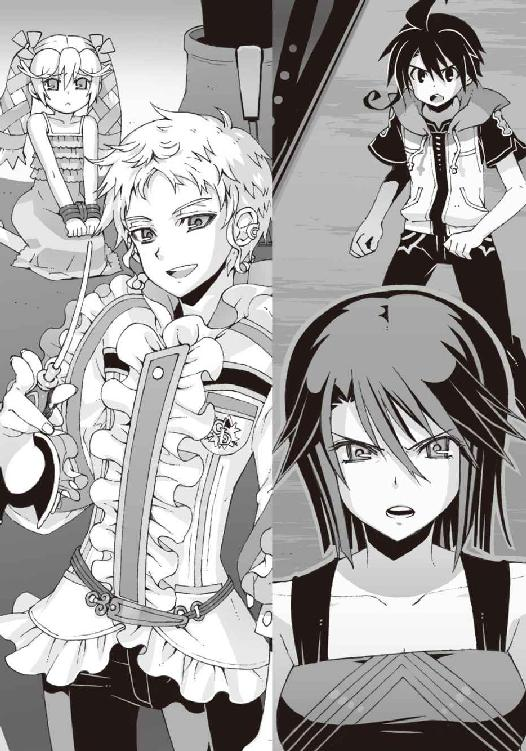
○
「......アニア......」
僕は呆然と彼女の名を呼んだ。金髪の少女は顔を上げ、唇をかすかに震わせた。
なぜ来た。たぶんそんなことをつぶやいたのだと思う。
僕は、ぎりぎりと奥歯を鳴らした。あのバカ、他人の心配をしてる場合じゃないだろうに。
「──どういうつもりなの、里見恭武」
凛と叫んだのは朱浬さんだった。彼女は、かつて僕が見た中でもっとも恐い表情で、
「学生連盟のＧＤが他校の一般生徒に手を出すなんて、重大な規約違反でしょう。ＧＤの特権剥奪くらいじゃ済まされない。下手すれば所属校の生徒会全員の首が飛ぶわよ？」
しかし里見恭武は、朗らかな笑顔で首を振り、
「僕は悲しいな」
嘲るように唇を歪め、
「こんなに忠実に職務を果たしているのに、理解してもらえないなんて。僕はただこの少女を保護しただけだというのに──」
「保護、ですって？」
朱浬さんの声が温度をなくした。
里見恭武は作り物のような笑顔で滑らかにうなずき、
「そうだよ。ここは学生連盟が管理する甲種危険施設だもの。一般生徒が迷いこんできたら、当然、保護するのがＧＤの務めでしょう？」
「幼い女の子を縛り上げておいて、よく恥ずかしげもなくそんなことが言えるわね？」
朱浬さんが冷然と罵倒する。しかし里見は哀れむような瞳を彼女に向け、
「やむを得ない緊急避難措置だよ。この遺跡には、手配中の魔神相剋者が侵入しているという情報が入っているんだ。だからさ、少し不自由な思いをさせても安全を優先しなくちゃね」
短い沈黙を挟んで、朱浬さんは薄くため息をついた。
「......その子を人質に使うつもりなのね。加賀篝隆也を捕らえるために......」
里見は声を上げて笑った。
「運喰らいの悪魔。アニア・フォルチュナ・ソメシュル・ミク・クレウゼンブルヒ辺境伯令嬢。加賀篝隆也の契約悪魔、クルスティナ・フォルチュナの実妹だっけ？」
邪気のない口調で、愉快そうに目を細め、
「お姉さんの罪を贖うために、彼女にも少し協力してもらおうと思っただけだよ。こんなことをするのは僕も悲しいんだけどね」
芝居じみた仕草で里見恭武が首を振る。
全身の血が黒く染まるような気分で、僕は彼の言葉を聞いていた。限度を超えた怒りのせいで両腕の震えが止まらない。
そして里見恭武は、そこでようやく僕の存在に気づいたように、
「あれ......きみ、どこかで見た顔だね......？」
場違いなほど親しげな声でつぶやき、僕を見つめた。動物園で見かけたちょっとめずらしい生き物の名前を呼び起こそうとするように首を傾げ、
「ああ、思い出した。加賀篝隆也のマンションの廊下にいた人だ。あのときとは違う女の子を連れてるんだね。羨ましいなあ」
社交辞令めいた感情のこもらない笑顔。そして彼は薄い唇を吊り上げ、
「でも、ここはきみたちの遊び場じゃないからね。帰ってくれると僕は嬉しいな」
底知れぬ悪意に満ちた気配に圧倒された。
直感する。里見恭武は楽しんでいるのだ。自分たちが圧倒的に優位なこの状況を。
朱浬さんに聞かされた噂通りだった。この男、今まで遭遇したどの演操者よりもタチが悪い。
「悪いけどそういうわけにもいかないのよ」
沈黙する僕たちに代わって、朱浬さんが告げる。その声はむしろ優しかった。
「その子の後見人はあたしたち洛高科學部だから」
「へえ......だったらどうするの？」
里見恭武は面白そうに微笑。朱浬さんも柔らかな表情を浮かべ、
「答えは──これよっ！」
上腕部に内蔵されたミサイルをまとめて撃ち放った。
続いて太股のミサイルも乱射。
時間差で放たれた大量のミサイルは、里見恭武と部下たちの足下に容赦なく炸裂した。鮮やかな炎が闇の中に広がり、黒い爆煙が彼らの視界を覆い尽くす。
「トモハル！ 今のうちにニアちゃんを取り戻して逃げなさい。機巧魔神はあたしに任せて！」
朱浬さんが僕らを振り返って叫んだ。僕はハッと我に返って、
「は......はい！」
頭で理解するよりも先に駆け出していた。
里見の部下たちは混乱している。まさか女子高生の手足からミサイルが飛び出すとは、連中も思っていなかったのだろう。今がアニアを助け出すほぼ唯一のチャンスだった。ミサイルの爆煙が晴れる前に、一気に距離を詰めて彼女を奪回する。
しかしさすがに戦闘慣れしたＧＤだった。里見恭武はあっさりと最初の驚きから立ち直り、蒼い機巧魔神が巨大な腕を振るった。その風圧で爆煙が一気に晴れていく。
アニアまであと数メートルというところで、里見の部下の一人が僕の前に立ちはだかった。少し杏に似た印象の、運動神経の良さそうな少女だ。身体を半身にして武術の構えを取り、押しのけようとした僕の腕をつかんで、いきなり関節を極めてくる。げっ、強い──！
「任せて......だって？ こんなチャチな花火で僕の蒼鉛を倒せると思うの？」
里見恭武が嘲笑した。彼の蒼い機巧魔神は無傷だ。
蒼鉛というのが彼の機巧魔神の名前なのだろう。わずか十体しか存在しないという、金属の名前を冠したＧＤ専用の機巧魔神。
「そうね......ミサイルじゃ無理かもね」
朱浬さんは不敵に微笑んだ。すらりと細い右腕を頭上に掲げ、
「でも、これならどうかしら──？」
「......！」
里見恭武が顔色を変えた。ほっそりとした朱浬さんの身体から、突如としてまき散らされた膨大な魔力に気づいたのだ。
『闇より昏き絶望より射ゆし──』
朱浬さんの唇が、まるで別人のような冷たい声を紡いだ。
彼女の右腕が青白い雷光に包まれた。機巧魔神のものと同質の禍々しい魔力の光だ。
機械化された朱浬さんの肉体には、機巧魔神の部品が使用されている。そして機巧魔神と同じ悪魔の力を引き出せるのだ。
『──其は科学の罪に嘆く牙！』
閃光の矢が、蒼い機巧魔神へと伸びた。
朱浬さんの切り札である魔弾。凄まじい負担を彼女の生身の肉体に強いるが、その破壊力は絶大である。機巧魔神と同質の悪魔の力は、それゆえに機巧魔神の防御をたやすく貫通する。
「蒼鉛！」
里見恭武が、自らの機巧魔神の名前を呼んだ。
蒼い魔神が、右腕の突撃槍を突き出した。いや、突撃槍のように見えたその穂先には、螺旋状の溝が抉られていた。電動機と歯車の噛み合う音を鳴らして、錐型の穂先が回転する。まるで巨大な電動錐のように。
そして朱浬さんの魔弾と正面から激突する──
「えっ」
朱浬さんの表情に焦燥が浮いた。
里見恭武の《蒼鉛》は動かない。突撃槍を突き出した姿勢のままで止まっている。その装甲は無傷だし、その周囲に埃一つ舞っていなかった。
朱浬さんの必殺の魔弾は、消滅している。
防がれたのでも、避けられたのでもない。完全に無効化されたのだ。魔力を拡散し、消滅させる槍。それが機巧魔神《蒼鉛》の能力なのだろう。
一見すると無意味な能力に思えるが、そうではない。
機巧魔神の攻撃を消滅させられるということは、逆にいえば敵の機巧魔神のあらゆる防御を無力化できるということでもあるのだ。ＧＤ最強といわれる機巧魔神《白銀》の空間切断すら、この《蒼鉛》には通用しない。里見恭武も伊達にＧＤを名乗っているわけではない。少なくとも彼の機巧魔神は強力だ。
「......すごいな、黒崎朱浬。僕は驚いたよ」
里見恭武が、じんわりとした笑顔を浮かべて息を吐いた。
彼の瞳から朱浬さんを見下したような余裕の色が消えていた。本気にさせてしまったのだ。
「気が変わったよ。こっちも少し真剣にやらせてもらう。さあ......演奏を始めようか」
指揮棒を振り上げて、里見が高らかに宣言した。
その瞬間、彼の部下たちの雰囲気が一変した。
僕の腕をねじ上げていた少女が、唐突に力を抜いて僕を解放した。そして彼らは奇妙な表情を浮かべた。ジグザグの奇妙な隊列を組んで、意識を集中するように目を閉じる。
そして彼らの影が色を変えた。闇よりもなお暗い、虚無の色へと。
「なっ」
僕はぞくりと背筋を震わせた。瘴気のような魔力の奔流とともに、不気味な振動音が周囲に満ちた。里見の部下たちの影をこじ開けて、なにかが一斉に姿を現そうとしていた。
機械仕掛けの巨大な人形だ。
それも一体だけではない。
里見の部下は全部で八人。そのうちアニアを捕らえている二人を除いた六人の影から、六体の機械人形が出現しようとしている。艶のない灰色の機械の悪魔だ。
「そんな......いくらＧＤでも、こんな大量の演操者を連れ出せるなんて......」
朱浬さんの声が弱々しく震えた。それを聞いて里見は満足そうに笑った。
「驚いたでしょ。これが我が狭浦高校上院生徒会の誇る量産型の機巧魔神──カーバイドだよ」
「量産機......!?」
「紛い物だと思って甘く見ないほうがいい。本物の機巧魔神と同じ護法装甲を持ち、対悪魔用の重火器で武装しているからね」
里見の説明が終わる前に、六体の量産機が完全な姿を見せていた。
通常の機巧魔神よりも、やや小柄だ。装飾の乏しい貧相な機体である。機巧魔神を手作りの工芸品に喩えるならば、量産機は大量生産の工業製品といったところか。
しかし量産機の左腕には大口径の機関砲、右肩には大砲が搭載されている。朱浬さんが普段使っている武器よりも更に巨大な凶悪なやつだ。あんなものをまともに喰らったら、普通の人間はひとたまりもない。
『智春、鐵を──！』
操緒が僕の耳元で叫んだ。僕は怯えた眼差しで彼女を見返した。
そう。僕の機巧魔神なら──《鐵》ならば量産機を倒せる。
量産機の火砲は《鐵》の重力障壁を破れない。そして《鐵》の重力球なら、量産機の護法装甲を破壊できるのだ。けれど。
六体もの量産機を破壊するためには、いったいどれだけの魔力が必要なのだ。
そしてその魔力を生み出す代償に、操緒の魂はどれだけ犠牲になる──？
『智春！』
操緒の声で呼ばれて、僕はハッと顔を上げた。気づくと目の前に灰色の量産機の姿があった。機械的なぎこちない動きで腕を振り上げ、僕を捕らえようと指を伸ばしている。
「下がって！」
澄んだ声と共に、灼熱の炎が僕の頭上を駆け抜けた。嵩月だった。長い黒髪が空気を切り裂くように流れ、彼女が生み出した巨大な火球が量産機の機体を横殴りに襲った。
量産機の機体がぐらりと揺れた。だが、それだけだ。
灰色の装甲表面に魔法陣のような紋様が浮き上がり、嵩月の炎を防いでいた。装甲に魔法防御用の護法結界が施されているのだ。
「もういい。智春、奏を連れて逃げろ！」
縛られたままのアニアが叫んだ。彼女までの距離はほんの数メートル。その数メートルが、絶望的に遠い。
『智春、鐵を喚んで！』
操緒の焦った声が届く。僕は一歩も動けない。
絶え間なく響く銃声は朱浬さんの左腕のショットガンである。しかしそれは里見の《蒼鉛》の表面で、弱々しく火花を散らすだけだった。対人兵器としては強力すぎるほど強力な弾丸も、機巧魔神が相手では無力なのだ。
里見はそれをしばらく楽しげに見ていたが、
「本当は加賀篝隆也を倒すために用意した部隊だったんだけどね、おかげでいい実戦テストになったよ。僕はそろそろ満足かな」
やがて飽きたようにそう言って、優雅に指揮棒を振り上げた。
「──撃て」
彼の言葉と同時に、量産機の砲門が次々に火を噴いた。対悪魔用の護法榴弾砲。
壮絶な爆発が朱浬さんの立っていた場所を呑みこみ、コンクリートの破片が飛び散った。
「な......っ！」
「朱浬さん──！」
アニアと僕の絶叫は、直後の衝撃波にかき消された。朱浬さんが立っていた足場が崩壊し、彼女もろとも、遥か地下深くの闇の底へと雪崩のように落下していく。
『智春っ！』
操緒の声は掠れていた。実体を持たない自分の身体を呪うように、すり抜ける手で必死で僕の胸を叩き、
『どうして どうして機巧魔神を喚ばないの──！』
その僕たちの背後で爆発が起きた。量産機の一体が脚部を大破して倒れている。
灼熱の炎の刀を構えた嵩月が、肩を上下させて荒い息を吐いていた。凝縮した彼女の魔力が、量産機の護法装甲を破ったのだ。致命的なダメージではないが、これでしばらくその量産機は動けないはず。
しかし嵩月の体力もそれが限界だった。貧血を起こしたように、彼女はその場に膝を突いた。嵩月の全身を覆っていた炎の結界が消滅し、紙のように白くなった肌が露わになる。
「嵩月！」
倒れかけた彼女を抱き起こし、僕は囚われたままのアニアを見た。目が合った瞬間、金髪の小柄な留学生は迷わず叫んだ。
「行けっ！」
「くっ」
僕はその言葉に弾かれたように走り出し、
『......智春......』
逃げ出す僕の背中を、操緒が信じられないという表情で呆然と見送っていた。
僕にはその姿を振り返ることができない。なぜなら僕はアニアを見捨てて逃げようとしているのだ。どんな言い訳をしても許されるはずがない。
たとえそれが操緒を救うためだとしても──
「悪いけど、逃がさないよ」
里見恭武が指揮棒を振り上げる。貴重な量産機の一機に傷をつけられて、苛ついているのだろう。その表情に酷薄な笑みが浮かんでいる。やめろ、と叫ぶアニアの悲愴な声が聞こえる。
表情を歪めて振り向く僕に、里見が指揮棒の切っ先を向け、
「撃て」
量産機の砲門が炎を吐いた。
至近距離で叩きつけてきた爆圧で僕たちの身体は数メートルは吹き飛び、破壊された金属の足場ごと、暗い闇の底へと落ちていった。
○
無限のように感じられたが、実際に落下した距離はせいぜい十メートルほどだったのだろう。大量の気泡に包まれて、僕は暗い水中へと沈みこんだ。
衝撃で意識が朦朧とした。
そのまま気絶してもおかしくなかった。かろうじて僕の意識を繋ぎ止めてくれたのは、腕の中にいる嵩月の体温だった。彼女を死なせるわけにはいかない。そんな義務感に衝き動かされ、僕は自動化された機械のように行動した。
決して焦ることなく肉体の浮力にだけ頼って水面へと浮上。嵩月の呼吸を確保して、周囲の状況を異様に冷静に確認する。緊張も恐怖も感じなかった。自分が自分ではないみたいだ。まるでスイッチが切り替わってしまったように僕は淡々と行動を続ける。
『──夏目くん。こっちだ』
やがて暗闇の中に、仄かな光が浮かび上がった。
不細工なコアラのヌイグルミが、岸の上で両目を輝かせている。部長の機巧偶人だ。いちおう助けに来てくれた、ということになるのだろう。
僕は意識のない嵩月を抱いたまま、その光を頼りに岸へと向かった。
遺跡の底に溜まっていたのは、どうやら海水らしかった。比重の関係で少しだけ身体が浮きやすい気がする。服を着たまま泳いでもそれほど疲れない。
『なんとか無事だったようだね、二人とも』
岸に這い上がる僕にヌイグルミが手を貸してくれる。見た目よりはパワーがあるらしい。
「......嵩月のおかげです。榴弾砲の弾が直撃しそうになったのを、炎で防いでくれたから」
僕は呼吸を整えながら言った。自分で口にした言葉に寒気を感じた。彼女がいなかったら僕は今頃、細切れの肉片になって水底に沈んでいたに違いない。
その嵩月は蒼白な顔でぐったりと横たわっている。
美しい眉目に血の気はなく、体温は氷のようだった。旅客機の事件のときと同じだ。限界を超えて魔力を放出したせいで生気を完全に失っている。病み上がりの身体に無理をさせすぎた。彼女は連れてくるべきではなかったのだ。
そしてもう一人、僕の近くにいるはずの幽霊の姿が見あたらない。
「操緒......」
名前を呼んでも返事はなかった。僕は自分の頭を押さえて嘆息した。さっきから感じている強烈な頭痛と眩暈。それが操緒の不在の原因だろう。
演操者の脳の働きに異常があると、彼女たち射影体との接続は上手くいかないのだ。
『脳震盪か。水面に落下したときかい？』
「ええ。ちょっと朦朧としてるだけです。少し休めばたぶん回復すると思うんですけど」
つい自嘲気味に笑ってしまう。さっき水中に沈んだとき、やけに的確な行動が取れたのは、意識が朦朧としていたおかげではないかと思ったのだ。やれといわれて、もう一度同じことをやれる自信はない。
『わかった。安全な場所に移動しよう。できるかい？』
「待ってください。その前に朱浬さんを捜さないと......」
僕は背後の暗闇を振り返る。この広大な地下空洞のどこかに彼女も落下したはずだ。彼女のことだから無事でいると信じたいが、あの状況で無傷で済むとも思えない。もしも水中に没しているとしたら、すぐに助けないと命に関わる。
『黒崎くんは無事だよ。今のところ』
ヌイグルミはきっぱりと断言した。疑うような視線を向ける僕に、
『彼女の生体情報は部室のほうでモニターしてるから。正確な位置までは特定できないけど、少なくとも心音と体温は安定しているよ。意識は戻ってないみたいだけどね』
「そうですか......」
よかった、と僕は安堵した。そういうことならとりあえず信用していいだろう。里見恭武に捕まっているアニアも、人質としての価値が残っている間は安全なはずだ。
するとやはり心配なのは、嵩月の体調ということになる。
「どこかに嵩月を休ませられそうな場所はありますか......」
『たぶんね。僕の予想が正しければ』
「......予想？」
『うん。ようやくこの遺跡の構造が把握できてきた気がするんだ。こいつはひょっとしたら、とんでもないモノかもしれない』
「どういう......意味ですか？」
こんな状況にもかかわらず楽しそうなヌイグルミを見下ろし、僕は憮然と質問した。
部長は、謎かけの答えを知る者の余裕の口調で、
『きみはこの遺跡を見たときに、なにを連想した？』
「それは......発電所みたいだな、と」
投げやりな気分で、なにも考えずに思ったままを答える。堅牢な外壁と巨大な縦坑。そして大量の冷却水を必要とする施設。僕の乏しい知識では、それは発電プラント以外に思いつかなかった。海辺にある辺りもなんだかそれらしい。
『なるほど。それはいい読みだ』
ヌイグルミに感心されてもあまり嬉しくないが。
『たしかに構造的に近いものがあるかもしれない。ここはおそらく超弦重力炉の実験施設だから。ただの研究施設だった洛高地下の遺跡とは規模が桁違いなのも納得できる』
「超弦重力炉？」
『うん』
不細工コアラは得意げにうなずき、そしてなぜか沈黙した。なにもない暗闇の奥を振り返り、耳を澄ますような仕草をする。
「......部長？」
『まずいな』
「え？」
『追っ手だ。里見恭武の部下が二人。たぶんきみを始末するために追いかけてきている』
このふざけたヌイグルミにしては、いつになく真剣な口調だった。僕は苦々しい気分になる。
「あいつ......どうしてそこまで......」
『彼らに不都合なことを知ってしまったからだよ。一般生徒に危害を加えたり人質を取ったり。明らかにＧＤの職務を逸脱している。量産機の存在も知られたくなかっただろうしね』
部長の冷静な指摘に、僕は頬を引き攣らせた。正直そんなことは知りたくもなかったのに。
僕は、眠り続ける嵩月をそっと柱の陰の暗がりに移した。少なくともこれで追っ手が彼女に気づくことはなくなったはずだ。
『どうする気だい？』
ヌイグルミが僕を見上げて訊いてきた。その小さな身体を僕は抱き上げ、
「僕が、囮になります。今の嵩月を連れて逃げ切る自信はないので」
『それなら急いでここを離れたほうがいいだろうね。もうあまり距離がない。ついでに僕も、この辺りに隠していってくれると有り難いのだが』
「すみませんけど、部長にはつき合ってもらいます。目立たないと囮にならないんで」
身勝手なヌイグルミの意見を却下して、僕は枝分かれした通路の奥へと歩き出した。
おそらく資材搬入用のトンネルだったのだろう。車が二、三台並んで通れそうな広い通路だ。
濡れそぼった身体を引きずるようにして、僕は当てもなく歩き続ける。
湿った衣服が体温を奪っていく。体力を消耗したせいか、頭痛がしだいにひどくなっていた。
水面に落下したときに痛めていたのか、膝や足首も異常を訴えている。笑ってしまうほどに、足取りが重い。
「部長。冬琉会長に救援の要請をお願いできますか。朱浬さんと嵩月とアニア......できれば、ついでに鳳島のバカも助けないと」
『わかっているよ。だけど救助隊が到着したとしても、遺跡に入れるのは......』
「ええ。明日の昼ですね」
僕は苦笑する。次の干潮時刻まであと半日。それまで持ちこたえれば救援が期待できる。部長の本体は今も遠く離れた彼の自宅にいて、このヌイグルミの目を通して状況を把握しているからだ。諦めるのはまだ早い。
しかし僕が追い詰められているのも事実だった。体力的にはほぼ限界で、里見の部下たちは確実に距離を詰めてきている。このまま、あと半日も逃げ続けるのは、奇跡でも起きない限り無理そうだった。いや、それどころか、
『しまった......待ち伏せだ。前方にも一人......』
「えっ？」
ヌイグルミの言葉がきっかけになったようなタイミングで、かすかな明かりが灯った。
僕は絶望的な気分で顔を上げた。通路の向こうから見覚えのある少年が歩いてくる。里見の部下の中にいた顔だ。
遅れて背後からも足音が聞こえてきた。同じ制服を着た少女の二人組。
彼らは最初から僕を挟撃するつもりだったのだろう。必死で逃げていたつもりが、逆に追い詰められていたというわけだ。我ながら最高に間抜けな話だ。
朦朧とした意識で必死に逃げ場を探して、僕は通路の脇道へと入りこんだ。だがその薄暗い通路は、五十メートルも進まないうちに行き止まりになっていた。
なけなしの体力を使い尽くして、僕はその場に膝を落とした。クスクスと嘲るような声が聞こえてきた。
「ああ......いたいた」
「ねえ、あの子、殺しちゃっていいんでしょう？」
「そうだよ。手間をかけさせないで欲しいね。まったく」
里見の部下たちが姿を現す。逃げられる場所はもうどこにもなかった。
作り物じみた笑顔の彼らの足下から、灰色の機械人形が次々に出現した。
量産機だ。
三体の紛い物の機巧魔神たちが、腕の機関砲を僕に向けてくる。
僕は静かに息を吐いた。
最後に思い浮かんだのは、いつもの困った表情を浮かべた嵩月。
そして、なぜかひどく怒っている操緒の顔だった。
○
懐かしい声で僕は目を覚ました。
『──とも......もう、智春ってば』
幸せな夢を見ていたような気がする。誰かが優しい腕で抱きしめてくれている夢だ。裸で抱き合うのは気持ちいいのだな、と純粋に感動的な気分でそう思う。やがて夢の中の感覚は遠ざかり、冷たく固い地面の感触に変わった。
ゆっくりと瞼を開けると、すぐ目の前に色素の薄い少女の輪郭があった。まだ少し寝ぼけている僕を見下ろして、
『あ、起きた』
彼女はホッと息を吐いて笑った。
ずいぶん久しぶりにその笑顔を見たような気がした。
「操緒......？ 復活してたのか......」
身じろぎするたびに全身あちこちが軋むが、頭痛はもう感じない。眩暈もしない。脳の働きが正常に戻ったことで、射影体との接続が回復したのだ。
僕は上体を起こそうとして、自分が誰かの膝に抱かれていたことに気づいた。振り仰ぐと、心配そうに僕をのぞきこんでいる黒髪の少女と目が合った。彼女に膝枕されたまま、無防備な寝顔を晒してたのかと思うと恥ずかしくなった。道理で寝心地がよかったわけだ。贅沢をいえば、もう少し寝かせておいて欲しかった。
「嵩月......」
僕のつぶやきに応えて、嵩月がぎこちなく微笑んだ。なぜか照れているような表情だった。頬に少しだけ赤みが戻っている。彼女が意識を取り戻していたことに僕は心底安堵した。まだなにも解決していないのに、ものすごく嬉しい。
「ここは......？ いったいどうして......？」
状況が上手く呑みこめずに僕は周囲を見回した。
意識をなくす直前、最後に僕が逃げこんだ通路だった。
周囲が明るいのは、近くで揺れている炎のせいだ。拾ってきた木材などを積み上げて、火を焚いていたのだ。たぶん嵩月がやったのだろう。小さな焚き火の存在が、これほどまでに安心感のあるものだとは知らなかった。
焚き火の周囲には、いつの間にか脱がされていた僕の服が乾されている。嵩月の上着もだ。僕が身につけているのは下着だけである。見た目、海パンとほとんど変わらないのだが、妙に気恥ずかしい。
濡れた服に体温を奪われ、凍えそうになっていたことを思い出す。
しかし今はもう寒くない。ほとんどなにも覚えていないが、誰かが僕を抱きしめて、自分の体温で温めてくれていたような気がする。うっすら意識の片隅に残っていた肌と肌が触れ合う感覚が甦り、僕は猛烈に赤面した。なんだかすごい体験をした気がする。喜んでいる場合ではないのだが、ここは素直に幸せを噛みしめておくべきだろうか。
「あの......ありがとう、嵩月」
ほとんど乾いていた服を身につけながら、僕は感謝の意を表した。嵩月はなぜかびっくりしたように目を瞬き、小首を傾げた。
「凍えそうになってたのを助けてもらって。うん、本当に助かった」
なんのこと、と操緒が怪訝そうに僕を見つめる。嵩月は照れたような困ったような表情で、おろおろと首を振り、言いにくそうに、
「あ......それはわたしではなくて、部長が......」
今度は僕が驚愕する番だった。
「え？ あの、それってもしかして肌と肌の触れ合いというか、その......」
「............」
嵩月がものすごく申し訳なさそうな様子で厳かにうなずいた。
僕は悪質な結婚詐欺に遭って全財産を失った被害者の気分で、げええっ、と苦悶。のんびり焚き火にあたっている不細工なコアラを眺め、そうか、そうだな、ヌイグルミだしな、それは温かいよな──と苦渋に満ちた表情を浮かべた。これで変な趣味に目覚めたらどうしてくれるのだ。
僕は嫌な過去を振り払うようにヌイグルミから目を逸らし──そして、視界の端に映った光景に震駭した。
量産機。
灰色の機巧魔神もどきの残骸が、狭い通路のそこかしこに散らばっていた。
僕を追いかけてきた里見の部下たち。彼らが操る三体の量産機が、原形を留めないほどに破壊され、屑鉄同然の姿で擱座している。
苛烈で、そして一方的な戦闘の痕跡だけが残っていた。
完全に追いつめられていたはずの僕が、無傷で眠っていられた理由がようやくわかった。誰かが僕を助けてくれたのだ。圧倒的な力で量産機を蹂躙し、里見の部下たちを撃退した者がいる。
「......なにがあったんだ？」
脳細胞の隙間という隙間に疑問符を突っこまれたような気分だった。
本当の自分はすでに死にかけていて、脳内麻薬が創り出した都合のいい幻覚を見ているのではないかと恐くなった。しかし妄想にしてはやけにリアルだ。
「ひょっとして嵩月が助けてくれたの？」
ほかに可能性は思いつかない。しかし、
「いえ。部長に呼ばれて、わたしが来たときには、もう......」
嵩月は慌てて首を振る。
「じゃあ、いったい誰が？」
『それは僕たちのほうが知りたいよ』
不細工コアラが、可愛げのない表情で僕を凝視する。
『きみが向こうの通路に僕を置き去りにしていって、僕が慌てて追いかけてきたときにはもう、量産機は全滅して、里見の部下たちは逃げ出したあとだった。僕が目を離した一、二分の間に、いったいなにがあったんだ？』
彼の言葉をとっかかりにして、少しだけ記憶が戻ってきた。
そういえば途中で部長を手放してしまったような気がする。暗闇の中を這いずるようにして脇道に逃げ込み、この突き当たりに追いつめられて──
「機巧魔神......だ」
僕は呆然とつぶやいた。
思い出す。闇の中から溶け出すように現れた巨大な影。金属の歯車が擦れ合い、咆吼に似た轟音を鳴らしていた。
『え？』
ヌイグルミが壊れたように動きを止めた。なぜか動揺しているらしい。
僕は構わず、自分自身のためにうなずき、
「量産機に襲われそうになったときに、僕たちの前に、べつの機巧魔神が現れて──」
そう。量産機に攻撃を仕掛けたのだ。なんの躊躇も警告もなく。
『機巧魔神？ 里見恭武、なわけないよね......加賀篝の薔薇輝ってこと......？』
操緒が推理中の探偵のような表情を浮かべる。
たしかに、この遺跡の中で僕が遭遇する可能性がある演操者は彼らだけだが──
「違うよ。知らない機体だった。いや、あれは鐵と同じだった。重力を操る機巧魔神だ」
『なんだって......!?』再び激しく動揺するヌイグルミ。
そのときには僕はもう、ほぼ完全に記憶を取り戻していた。
あれは量産機が僕に機関砲を向けた直後だった。
前触れもなく現れた新たな機巧魔神が、僕を庇うように彼らの前に立ちはだかったのだ。
黒銀に輝く、鋼色の機巧魔神だった。正確なシルエットはわからなかったが、左腕に巨大な剣を握っていたことを覚えている。
演操者の姿は見えなかった。性別すらよくわからなかった。朱浬さんが着ているものによく似た、黒いマントのようなコートにすっぽりと覆われていたからだ。
里見の部下たちはもちろん驚いていたが、すぐに気を取り直して攻撃をしかけた。
三体の量産機による、機関砲と榴弾砲の一斉射撃。
嵐のようなその砲撃は、鋼色の魔神に掠り傷ひとつつけられなかった。鋼色の魔神の右腕が、闇色の重力球を生みだし、すべて砲弾の軌道をねじ曲げ、弾き飛ばしたからだ。
『重力を操る機巧魔神......まさか......先日の事件で加賀篝に手を貸していたのは、やはり......』
ヌイグルミが頭を抱えてなにやら呻く。僕はむしろ彼の動揺ぶりに困惑する。
そのあと語るべきことはもうなにもない。鋼色の機巧魔神が右腕を一閃しただけで、三体の量産機は、津波に呑みこまれた小舟のように押し潰されてバラされて砕け散った。
圧倒的な力の差だった。
機巧魔神の性能もあるのだろうが、演操者の技術が凄いのだ。
無駄な魔力の流出がほとんどない。それが逆に圧倒的な威力を生み出している。絞りこんだホースが水の勢いを増すように。僕を助けてくれたのは、でたらめに強力な機巧魔神の使い手だったのだ。
『結局、それって誰だったの？』
操緒が乱暴に先を急かした。
「わからないよ。そのあと演操者はすぐに立ち去って、僕は緊張が切れて意識をなくして......そういえば立ち去る前に、あの人、黙ってどこかを指さしたような......」
僕は額を押さえて必死に記憶を辿る。操緒が猫のように目つきを鋭くした。
『指さした？ 智春を案内するみたいに？』
「あ......たぶんそうだ......」
頭の奥でなにかが繋がった。意識をなくす直前、最後に目に焼きつけた光景を頼りに、僕は周囲を見回した。
それは最初から当然のようにそこにあった。
扉だ。飾り気のないスチールの扉。最近になって、ロック部分が破壊された痕跡がある。
『行ってみよう』
ヌイグルミが僕に誘いかける。断る理由は思いつかなかった。今の僕たちにできることは、ほかにないのだ。焚き火の中から火のついた角材を拾い上げ、それを松明のように握って僕は扉へと近づいた。ヌイグルミを抱き上げた嵩月が、操緒と一緒に僕のあとについてくる。
扉は見た目よりも簡単に開いた。
その先の通路は、これまでに見たものと少し雰囲気が違った。
殺風景なのは相変わらず。しかし冷たく感じられるほど過剰な清潔感がある。壁や床は白い樹脂で覆われて、換気口には幾重にもフィルターが嵌めこまれているようだった。
病院とも少し雰囲気が違う。どちらかといえば製薬会社の研究所に近いイメージだ。
「......これも実験施設の一部なんですか？」
僕は嵩月に抱かれている不細工コアラに訊いてみる。ヌイグルミは頭を傾けて、
『たぶん』と少し自信なさげに、
『......なんだか人体実験場って感じ』というのは操緒の感想である。
通路の突き当たりは、研究室っぽい雰囲気の広い部屋になっていた。
ガラス越しの部屋には、医療用のものに似た大型の機械。
いつか加賀篝の別荘で見たやつに似ている。人体実験場、という操緒の言葉を思い出す。
それから更に進んだところで、
『なんか......変な臭いがしない？』
操緒が眉間にしわを寄せてつぶやいた。こんなところで恐いことを言うなよ、と僕は思わずキレかけて、
『ふむ......言われてみれば』
コアラが作り物の鼻を鳴らしてうなずいた。嵩月が控え目な声量で、
「......カレー？」
それはまさしくカレーの香りである。夕食時に団地の近くで嗅ぐのと同じ匂いだ。煮込んだ野菜と香辛料、そして牛肉や香草の入り混じった芳香。実に食欲をそそる香りだった。
『......なんでこんなところで？』
操緒がわけがわからないというふうに首を振る。
僕たちはカレーの匂いに誘われるように、通路を奥へ奥へと進む。
やがて辿り着いた場所は、会議室のようなシンプルな部屋だった。
大きな机にキャンプ用のコンロが置かれ、その上に鍋が載っている。部屋に充満する強烈なスパイスの匂い。間違いなくここが匂いの源だった。なぜなら、現実にそこでカレーを食べている人々がいたからだ。
鍋をゆっくりとかき混ぜていたのは、綺麗な金髪をポニーテール風に束ねた女性だ。アニアを大人にして笑顔にしたら、きっとこんな感じになるのだろうと思う。
彼女の隣に悠然と座っているのは、革ジャンに長髪の美形の男性だ。彼は僕たちの姿に気づくと、大人びた渋い笑みを浮かべ、
「フ......これはこれは、意外なところで会うな、少年」
愉快そうに唇の端を片方だけ上げた。
驚きを突き抜けて、僕たちは虚脱状態となる。
「あんたたち......なにやってんだよ」
たったそれだけの言葉を絞り出すのに、気が遠くなるほどの意志力を消耗した。
あまりにも危険すぎて封印されたという遺跡最深部。
そこでまったりとカレーを食していたのは、魔神相剋者、加賀篝隆也と彼の契約悪魔だった。
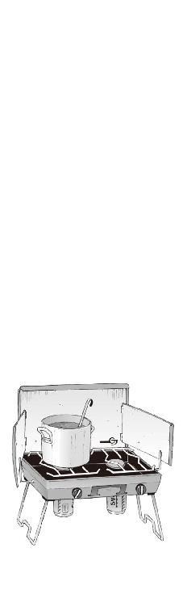
六章
「キーマカレーのキーマとは、ヒンディー語で〝細かいもの〟という意味だそうだよ」
盛りつけられたスパイシーな家庭料理を前に、加賀篝隆也がウンチクを披露している。
「インド方面では宗教上の理由から羊肉の挽肉が使われることが多いが、鶏肉や豚肉で作っても美味い。特にこいつは市販のルーではなく、秘伝のスパイスで作ったこだわりの逸品でね。フ......このサフランライスと実に素晴らしい調和を奏でてくれる」
「はあ」
目の前に差し出されたカレー皿を眺めて、僕は軽い混乱の渦中にあった。
加賀篝が自分で語ったとおりの、やけに本格的な挽肉とグリーンピースのカレーだった。市販のレトルト食品ではなく、下ごしらえした食材を持ちこんで、この場で調理したものらしい。
ご飯も炊きたてのいい匂いを漂わせている。余分に用意しておいてよかったよ、と加賀篝は、問答無用で僕と嵩月の前に大盛りによそって、
「どうした、少年。食べないのかい？ それともきみは、もしやカレーにナンを合わせる派の人間なのか？ それはいけないな。あれは邪道だ。やはりカレーにはライスでなければ」
「いや......そうではなくてですね」
たしかに僕はキーマカレーはナンで食べたい人間だが、そんなことは今はどうでもいい。
「なんでこんなところで、のんびりカレー食べてるんですか？」
自分で口にした言葉のあまりの馬鹿馬鹿しさに力が抜けた。ここは危険な遺跡の深い場所で、学生連盟のＧＤに追撃されていて、朱浬さんは消息不明だし、僕も嵩月も死にかけた。なのに、なぜこんなところでカレーを振る舞われなければならんのだ。
しかし加賀篝は余裕の態度を崩さない。
「フ......食事をしなければ腹が減るだろう？ 魔神相剋者にも食事や休息は必要だ」
「はあ。それはわかりますが」
そういえば彼らは、昼間からすでに半日以上もこの遺跡を調べていたのだったか。休息が必要というのは、理解できないこともない。
僕たちが無事にここまで辿り着いたのも、彼らが遺跡の防衛機構を無力化していたからという要素が大きい。それを感謝する気にはなれないが。
「だからってなんでカレーなんです。わざわざこんな手の込んだ......」
「日本風のカレーは海軍が軍隊食として開発したものだそうだよ。砲台の地下を探索中の食事には相応しいじゃないか」
あまり関係ない気がするなあ、と思う。たしかにアウトドアの定番料理ではあるのだろうが。
「クリシィはわりと凝り性でね。それだけに味のほうは保証するよ。遠慮しないで食べたまえ」
沈黙する僕たちに構わず、加賀篝は勝手に食事を開始。クルスティナは全員分のコップに冷水を注ぎながら、召し上がれ、とばかりに僕たちに微笑みかけてくる。
僕は仕方なく席についてスプーンを握り、
「あの......さっきの僕たちの話、聞いてました？」
加賀篝はカレーを食べ続けながら、
「ああ。学生連盟のＧＤが俺を追ってきたんだろう。なんて名前だったか、マザコンかもしれないという噂の......犬塚？ 犬江？」
「里見です。里見恭武」一文字も合ってないじゃないかよ。「アニアを人質にしてるんですよ」
「それで？」
スパイスの刺激に目を細め、加賀篝が首を傾げる。僕はそんな彼の反応に苛立ちながら、
「それで......って。アニアはクルスティナさんの妹なんですよ。あいつ、お姉さんに会うためにあんたを追ってこの遺跡に来たのに......！」
フン、と加賀篝は無関心な声で、
「それで、きみは俺にどうして欲しいんだ、少年？」
「え？」
言い淀む僕に、加賀篝が醒めた視線を向けてくる。ちょっと恐い。
「俺にアニアを助けてくれとでも頼むつもりかい？」
「それは......」
「勘違いするな。俺はあの少女の保護者じゃない。危険な目に遭わせたくないのなら、きみは彼女をこんなところに連れてくるべきじゃなかった──だろ？」
あまりの正論に僕はなにも言い返せない。加賀篝は、フ、と微苦笑を浮かべ、
「どうして彼女を止めなかったんだ、少年？ 嫌われるのが恐かったのかい？ それで自分の手に負えなくなったら他人を頼るのか。それではどちらがお子様だかわからないな」
僕は無言で加賀篝カレーを口に運んだ。美味いが、辛い。思わず涙目になってしまいそうな辛さだ。嵩月は僕以上に責任を感じた様子でじっと唇を噛んでいる。
しかし操緒だけはむしろ反抗的な表情で、
『クルスティナさんは......それでいいんですか？』
エプロン姿の金髪美女を睨みつけて訊いた。
加賀篝と契約した悪魔の女性は、少し驚いたように顔を上げた。そしていかにも貴族という雰囲気の美貌に、儚げな微笑を浮かべ、
「妹が私を慕ってくれていることを、私は嬉しく思う」
アニアによく似た少し癖のある日本語でそう答えた。
「しかし妹のためにタカヤを危険な目に遭わせることはできない。タカヤの邪魔をするのなら、私が妹を許すことはないだろう」
寂しげに再び目を伏せて、クルスティナ・フォルチュナは首を振る。
さらに反論しようとした操緒を、彼女は静かに零したため息で制し、
「勘違いしてはいけない。タカヤはたしかに強い力を持っているが、それと同じだけの代償を彼は支払っている。その力を、たとえほんのわずかでも無駄に使うわけにはいかない。私とタカヤにはもう時間が残されていないのだから──」
『......！』
彼女がすっと持ち上げた右腕を見て、操緒の頬から血の気が引いた。ほっそりとしなやかなクルスティナの肩から先は、色素をなくしてガラスのように透けていた。
蝋燭の炎を反射して輝く美しい鉱物の質感だった。まるで作り物の人形の腕のようだ。
急激に動かしたせいなのだろう。ガラス状の皮膚の表面が崩れて、その破片が、さらさらと砂のように舞い散った。かすかな煌めきを残しながら、雪の結晶のように虚空に溶けていく。
「非在......化......」
嵩月が掠れた声でつぶやいた。クルスティナは恥じらうように淡く微笑した。
加賀篝が疲れたように頬杖を突き、
「......少年。本当はきみもわかっているんじゃないのか。俺たちの言う代償の意味が」
うっ、と僕は無意識に振り向いて操緒を見上げた。
嵩月が、焦って僕の腕を強く引いた。それで僕は自分が犯したミスに気づいた。慌てて目を逸らしたが、もう遅い。
『智春......』
操緒が表情を硬くした。こんなときの彼女のカンは本当に鋭い。虹彩の開いた無感情な瞳は、操緒が本気で怒っている証拠だ。もともとの顔立ちが整っているだけに、表情を消した操緒はひどく冷ややかで近寄りがたい。
『代償ってなに？ もしかしてさっき鐵を使おうとしなかったのは......そのせい？』
違う、という僕のつぶやきは声にならない。その場凌ぎの嘘など、今の操緒が相手では時間稼ぎにもならないという確信があった。嵩月は青ざめた顔で僕たちの姿を見比べている。この場でいちばん動揺しているのは実は彼女かもしれない。
黙秘する僕に、操緒はむしろ優しい声で、
『それは機巧魔神のせいで操緒の魂が磨り減っていくってこと？』
僕は立ちくらみに似た戦慄を覚えた。声が震えた。
「操緒......まさか、知ってた......のか？」
鎌をかけられているだけ、という可能性すら失念して僕は呻いた。
操緒は意外そうでもなく、ただ居心地の悪そうな照れ笑いを浮かべ、
『そんなの、最初からわかってたよ。だって自分のことだもの』
それから僕の背後に回って、僕の背中にそっとしがみついてきた。囁くような声で言う。
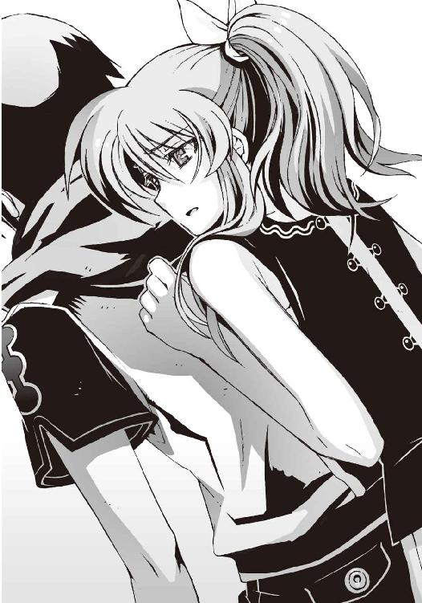
『ねえ、智春。操緒はイヤだよ......あたしの代わりに誰かが傷ついたり、智春がほかの誰かを傷つけるのは嫌。そんなの見たくないよ」
僕は彼女と目を合わせない。操緒の性格ならきっとそう言うと思っていたし、それを内心で恐れてもいた。自分が消滅してしまうと知らされても、操緒はためらわず己の魂を削るだろう。それを僕が望むなら──哀音が佐伯兄のためにしたのと同じように。
加賀篝はそんな僕たちを眺めて、不味いものでも噛んでしまったような顔をしている。
もしかしたら過去の自分の姿を、僕たちと重ね合わせているのかもしれない。親戚のオッサンに幼児期の失敗談を何度も繰り返し聞かされている最中のような、辟易した表情だった。
今は超然としている彼にも、今の僕と同じように迷っていた時代があったのだろうか──
「隆也」
誰かが加賀篝の名前を呼ぶ。波紋のように空気を揺らして、彼の背後に、うっすらと女性の姿が浮かび上がる。文学少女をそのまま大人にしたような、穏やかな雰囲気の幽霊だった。
我が侭な弟をたしなめるように、彼女は非難がましい視線を加賀篝に向けている。
加賀篝は煩わしげな表情で、舌打ちした。
「琴里か......おまえまでそんな目で俺を見るなよな。まったく機巧魔神の副葬処女ってやつはどいつもこいつも......」
どこか拗ねたように顔をしかめて、加賀篝は長く長くため息をつく。
「とりあえず冷める前にメシを喰えよ、少年。きみらに手を貸すつもりはないが、どのみち学生連盟の連中が俺を追ってきているのなら、戦わなければ仕方ないだろう。ついてこい。ついでに昔話を聞かせてやる。少し長い話だ」
「......昔話？」
間の抜けた表情を浮かべる僕に、
「機巧魔神はなんのために作られたのか。どうして悪魔なんてものが存在するのか。そして、なぜ世界が一度滅んだのか。遠い過去にあった未来の話だよ」
魔神相剋者は不敵に笑ってそう告げた。
○
食事を楽しめる精神状態ではなかったが、消耗した肉体が栄養を求めていたらしい。
気づくと僕は振る舞われたカレーを綺麗に食べ終えていた。嵩月も同様だ。
その間に、クルスティナは遺跡の研究室でデータを集めていたらしい。戻ってきた彼女は、データ記録用の光学ディスクを持っていた。加賀篝はそれを受け取って、
「さあ......行こうか」
僕たちを手招きして立ち上がる。
加賀篝は上着を引っかけただけの身軽な姿だ。持ってきた食料の残りは、ここに置き捨てていくつもりらしい。休憩はもう必要ないということなのだろう。最終目的地が近いのだ。
「歩きながら話そう。しばらくかかりそうだからな」
彼にそう言われてしまうと、文句は言えなかった。
どのみちほかに行くあてもない。里見恭武の目的が加賀篝なら、連中も必ず追いついてくるだろう。哀音の仇である加賀篝に従うのは複雑な気分だが、アニアを助け出すためにも、今は彼に同行しなければならないのだ。
琴里さんは今は姿を消していた。
懐中電灯が照らす薄暗い通路を、加賀篝とクルスティナが並んで歩いている。
非在化が進んだ身体を隠すためか、クルスティナは肩から足首までの全身を黒い布で覆っていた。加賀篝と並んで歩く彼女の後ろ姿に、僕は、ウェディングドレスを着た花嫁を連想した。彼らの姿は、本当の恋人同士のようによく似合って見えたのだ。
嵩月に抱っこされた部長は、加賀篝の持っているディスクの中身をしきりに気にしていたが、さすがにそれに手は出せないようだった。加賀篝の前では無害な普通のヌイグルミを演じているからだ。そうしたくなる気持ちもわからないではない。
加賀篝が向かっているのは、おそらく遺跡の中央方向。里見に邪魔されて僕たちが辿り着けなかった、炉心のある方角だ。操緒と僕は、微妙に気まずい距離を保ったまま、無言で彼らについていく。
いつまで待っても加賀篝が話し出す気配がないことに、少し苛立ちながら彼の背中を眺めていると、加賀篝は不意に思い出したように、
「──操緒、というのがきみの射影体の名前だったな？」
「あ、はい」
そうだけど、と僕は操緒と顔を見合わせる。加賀篝は、それがなにか重大な発見でもあるかのように足を止めて考えこみ、
「〝緒〟というのは、弓や楽器の弦という意味だ。弦を操る......美しい名前だな」
再びウンチクを語る加賀篝。この兄ちゃんの言うことは、いつも唐突で反応に困る。
「そうなのか？」と小声で操緒に訊くと、
『そうだよ。琴の緒絶えにし後より──って、源氏物語にもあるでしょ』
胸を反らして操緒が答える。褒められたせいか、自慢げだ。しかし源氏物語とかいわれてもよくわからない。そんなの授業でやったっけか。
加賀篝は皮肉っぽく微笑み、今度は嵩月のほうに視線を流して彼女をビクッとさせている。
「奏というのは、そのまま弦楽器を鳴らすという意味。彼女たちの名前はそれぞれ同じことを表しているというわけだ。フ......暗示的だとは思わないか、少年？」
「はあ......」
そんなことを訊かれても僕には答えようがない。そういうのは偶然というのではないかなあ、と思う。当惑顔の僕を無視して、加賀篝はエアギターをかき鳴らす仕草をしていた。異様に上手い。そういえば彼の本職はプロのギタリスト──六弦の使い手だった。
「弦というのはストリングス、それ自体が弦楽器とその演奏者を表す言葉だな......まあそれはどうでもいいんだが」
加賀篝は本当にどうでもよさそうな口調で言った。いちおう真面目に聞いていた僕は激しい倦怠感に襲われた。どうでもいいなら最初から言うなよ、と壁に手を突いてぐったりする。
しかし加賀篝は、まるでそのタイミングを見計らっていたように、
「さて本題だ。スーパーストリングセオリー......超弦理論という言葉に聞き覚えは？」
ギクリと肩を震わせたのは僕ではなく、嵩月が抱いている不細工なコアラのヌイグルミだった。なにか心当たりがあったらしい。
しかしもちろんヌイグルミは説明してくれないので、僕も黙って首を振った。加賀篝はぞんざいに肩をすくめて、
「俺も詳しく知ってるわけじゃない。クルスティナに教えてもらったことの受け売りなんだが、簡単にいうと重力を量子論的に記述するための理論らしい。素粒子の基本要素を大きさのない粒ではなく、振動する弦として扱い、その弦が奏でるメロディこそが特定の粒子の形だと説明されている。もちろん人間に観測できないくらいミクロなスケールの弦だが」
そう言って彼は再びギターをかき鳴らす仕草をする。動かずに喋れないのかこの男は。
しかも、なにを言われているのかさっぱりわからない。ちっとも簡単じゃない。
それでも加賀篝は淡々と語り続ける。
「ブラックホールは知ってるな？」
「あ、はい」
さすがにそれくらいは知っている。自己質量で極限まで収縮した巨大質量の塊。光すら呑みこむ宇宙空間に開いた巨大な穴だ。
「そいつは超弦理論では、超弦たちが固くからみあった状態として説明される。素粒子よりも小さな微小ブラックホールは、粒子の衝突によって人工的に造り出すことが可能だ。そして生まれてすぐに爆発、消滅する。膨大なエネルギーをまき散らしてな......気づいているか、少年。そいつが、きみの機巧魔神が操る重力球の正体だ」
「......え!?」
僕は唖然として自分の足下の影を見下ろした。ブラックホールという恐ろしげな言葉の響きに正直ビビッた。《鐵》が使う重力球の強大すぎる威力は、たしかに少し持て余し気味ではあったのだが、まさかそこまで危険なものとは思っていなかった。これまで後先考えずにバカスカ撃ちまくってきたが大丈夫なのだろうか。人体への影響とか地球環境とか。
青ざめる僕を加賀篝は特に気に懸けることもなく、
「この遺跡は、かつて超弦重力炉と呼ばれていた施設の残骸だ。こいつは、ある目的のために、きみの機巧魔神とほぼ同じ原理で作動するように造られた」
「ある......目的？」
「世界の破滅を回避すること」
「......世界の......破滅」
そんなトンデモな言葉を聞かされても、もはや驚かなくなってしまった自分が少し悲しい。
世界はこれから数年後に、一度滅んだのだと朱浬さんや佐伯兄が言っていた。本気で信じていたわけではなかったが、こうして実際に機巧魔神や〝一巡目の世界〟の遺跡を見てしまうとさすがに、なにかがあったことを認めないわけにはいかない。
少なくとも、これだけの巨大施設を、なんの目的もなく造る人々がいるとも思えなかった。この遺跡の建造目的が世界の破滅を救うためだというのなら、むしろそのほうが納得できる。
「超弦理論の研究を進めていくと、やがて膜宇宙という概念に到達するらしい」
「......膜宇宙？」
「我々の住むこの世界は、無数にある膜宇宙の中のひとつに過ぎないのではないかという仮説。いわゆる並行世界というやつだな。そして重力子はこの膜宇宙間を自由に往来することができるとされている──ブラックホールが他の並行世界への入口だといわれているのはそれが理由だ」
また話がわからなくなってきた。僕は黙って聞き役に回る。
「クルスティナが機巧魔神の研究をしていたのは、自分たちのような悪魔と呼ばれる存在が、なぜこの世界に存在するのか──それを調べるためだった」
嵩月がハッと顔を上げた。悪魔とはいったい何者なのか。それは嵩月の入院先の病院で、僕が彼女に訊いた質問だった。そして誰も答えられなかった質問だ。
フ、と加賀篝は少し意地悪く微笑んで、
「結論から言えば、彼女たちは人間だった」
その声にふざけているような響きはない。
「なんの能力も持たないごく普通の......ただし、べつの世界の住人だ」
あまりにも論理が飛躍していたせいで、異を唱えるタイミングを失った。
あえて文句をいう理由はないのかもしれなかった。悪魔だろうが異世界人だろうが、呼び名が違うだけで非現実的という意味では似たようなものだ。
「俺たちがこの数年、世界中の遺跡を調べて出した結論だ。そう遠くない未来に、異なる膜宇宙が接触するような事件が起きる」
「接触？」
するとどうなるのだろう。
「俺たちの世界の一部が突然、異世界に置き換わる。そこにあった街も住人も入れ替わるんだ。異世界の住人を責めるわけにもいかないだろうな。彼らは侵略者なんかじゃない。ただそこに住んでいただけなのだから。むしろ彼らも被災者なんだ」
加賀篝はそう言って、自分の契約悪魔に優しげな視線を向けた。
僕は自分の知っている数人の悪魔の姿を思い描いた。
由璃子さんやひかり先輩、アニアに鳳島。そして嵩月。少し性格に問題があるのも混じっているが、たしかに悪い人間とは思わない。
「世界の境界を超えたことで、彼らの肉体や魂も影響を受けた。嵩月一族の炎や、鳳島の氷。それらはすべて彼らが住んでいた世界の影響力が、こちら側に流れこむことによって発生する物理現象だ。悪魔の魔力というのはつまり、世界同士の摩擦や拒絶反応のようなものらしい」
加賀篝の説明にはなんの証拠もなかったが、なぜか奇妙に腑に落ちた。
悪魔と呼ばれている嵩月たちが、生物学的に人間と違わない理由。そして彼女たちの能力の特殊性。加賀篝の話が真実ならば、その矛盾は矛盾ではなくなる。
「そのあとは......？」と僕は訊いた。
「ん？」
「異なる世界同士が接触して、そのあとはどうなるんです？」
「さあな」
加賀篝は突き放すように冷たく言った。
「もしも異世界同士が完全に融合することになったら、それは世界の破滅と同じ意味かもしれないな......まあ、そうなる前に、俺たちはこの〝二巡目の世界〟に飛ばされたわけだが」
そうだった。バッドエンドを迎えたゲームをやり直すように、世界が破滅する直前に誰かが時間を戻したのだ。悪魔の力を利用して。
「だがそんなことはどうでもいいんだ。俺は俺の機巧魔神から琴里を救い出して生き返らせることができればそれでいい。そのために俺たちはこの遺跡を捜していた」
「え？」
加賀篝が少年のような笑みを浮かべていたことに僕は驚いた。
「悪魔の正体が知れれば、機巧魔神が生み出された理由もわかる。こちら側の世界の人間は、異世界と融合してしまった場所を、渦界域と名付けた。実際には魔界とか地獄とか好き勝手に呼んでいたやつのほうが多かったらしいが、それにもいちおう理由がある。こちら側の人間は、生きたままでは渦界域の中には入れなかったんだ」
通路が終点に近づいていた。
加賀篝は罠の気配を探るように、閉ざされた隔壁の向こう側を睨み、
「精密な電子機器の類も全滅だ。まあ仕方ないさ、物理法則が異なるべつの宇宙なんだからな。少なくとも渦界域から生きて戻った人間はいない。魔界に入れるのは悪魔だけだ。それでも人類は魔界の内部を調べる必要があった。世界を破滅から救うためだ。多少は無茶もするさ」
「まさか......」
恐ろしい想像が脳裏を過ぎった。
生きた人間も、電子機器も入れない異世界。悪魔だけが存在を許された空間に、侵入できる可能性のある存在をひとつだけ思い出す。
機械仕掛けの人造の悪魔の存在を──
「ああ、そうだ。機巧魔神とは本来そのために生み出されたものらしい。仮死状態の操縦者を体内に封印して、闇に閉ざされた魔界へと送りこまれた有人探査機。そいつが機巧魔神の本当の正体だ」
「有人......探査機......」
僕はやり場のない怒りを感じて、足を止めた。
ずっと不思議に思っていた。誰が機巧魔神を造って、なんのためにそれを使おうとしていたのか。しかしその疑問が晴れても、残ったのは割り切れない思いだけだった。
なぜそんなものに操緒が囚われて、僕の影の中に封印されているのだ──？
どうせならもっと身勝手で邪悪な目的のために造られたものであればよかったと思う。それなら機巧魔神を恨むことも憎むこともできた。そのほうがずっと気楽だっただろうに。
加賀篝が隔壁の前に立ち止まった。
「この遺跡は機巧魔神を渦界域へと送りこむための実験場だった。超弦重力炉はその名残だ。三年かけてようやくここまで辿り着いた。ここが機巧魔神の運用基地なら、当然なくてはならないものがあるはず──ほかのすべてを破壊してでも俺はそれを手に入れる」
冷静な気迫に満ちた加賀篝の横顔に、僕は目を奪われた。
ようやくすべて理解できた。この遺跡が加賀篝の言うとおりのものなら、ここには僕たちが探し求めていたものが残されているはずなのだ。
帰還した機巧魔神の封印を解いて、内部の副葬処女を生き返らせるための技術が。
「話は終わりだ、少年。ここから先はきみの好きにしろ。手伝えとは言わないが、邪魔はするなよ。琴里に恨まれたくはないからな──」
加賀篝が一瞬だけ僕のほうを振り向いて笑った。どこか懐かしい笑顔だった。思い出したのは兄貴のことだ。何年も前に国外に出たきり、音信不通の兄貴の姿が加賀篝にダブる。
加賀篝の影が色を変えた。まるで底の見えない深い穴のように。その虚無の闇をこじ開けるようにして、巨大な腕が姿を現す。薔薇色の鎧に覆われた、機械の腕。
「目覚めろ、薔薇輝──！」
加賀篝が咆吼した。彼の機巧魔神の腕から、銀色の鎖が鞭のように吐き出された。
何層もの金属を重ねた分厚い隔壁が、その一撃で弾け飛ぶ。
その先にあったのは、薄闇に覆われた巨大な空間。
そして闇の中で光輝く、数え切れないほどの緑色の瞳だった。
○
薔薇色の魔神を従えた加賀篝が、隔壁の向こうへと飛びこんでいく。
彼を待ち構えていたのは、甲殻類の形をした六脚の機械人形だった。
全身を甲羅で覆ったその機体は、機巧護衛機と呼ばれる遺跡防衛用の護法機械だ。大きさは小型の乗用車ほど。鋸刃のような機械仕掛けのハサミと、強酸の泡で攻撃してくる。甲羅は厚く、拳銃弾程度では傷もつけられない。
そんな厄介な連中が、ざっと数えただけでも三十機近く、僕たちに向かって殺到してくる。悪夢に出てきそうな光景だった。
しかし加賀篝はそれらを一瞥しただけで、鬱陶しげに前髪を掻き上げ、
「フ......」
薔薇色の魔神が放った鎖が、コンクリートの床板を引き剥がした。
機巧魔神《薔薇輝》の能力は時間静止だ。その鎖が巻きついた物質は時間の流れが停止する。
そして時間の止まった物質は、どんな攻撃をもってしても破壊できない。
殺到する機械ガニたちは、防波堤のように張り巡らされたコンクリートの壁を突破できずに、無為な攻撃を繰り返しながら動きを止めた。
加賀篝はつまらなそうな瞳でそれを眺め、
「──イングリッド！」
彼の呼びかけに応えたのは、クルスティナの全身を覆っていた黒いドレスだった。
それは意志を持つ生物のように形を変えて、彼女の身体から離れた。そして美しい黒ヒョウの姿へと変わる。猛然と駆け出したその生物を、僕たちは声も出せずに見ていた。
加賀篝の使い魔である不定形獣だ。自在に姿を変え、魔力の続く限り無限に増殖する黒い幻獣が、クルスティナのドレスに擬態していたのだ。
ヒュンヒュン、と大気を切り裂く耳障りな音が鳴り響く。
四足獣の形態になった使い魔の背中から、無数の触手が鞭のように放たれた。音速を超えるその攻撃が、分厚い甲羅ごと機械ガニたちを手当たり次第に叩き潰していく。
あまりにも現実感の乏しいその光景に、僕は瞬きすることもできない。
同型の機巧護衛機とは前に僕も戦ったことがある。朱浬さんや六夏たちの手を借りて、それでも押し寄せる彼らに対抗できずに、逃げ延びるのが精いっぱいだった。
それを加賀篝は、たった一人で悉く粉砕していく。
圧倒的な力の差を見せつけて。
魔神相剋者と呼ばれる存在の真の実力に、僕は怖じ気を感じずにはいられなかった。こんな絶対的で暴力的な力を一人の人間が所有する──その危うさが恐ろしかった。
すべての機巧護衛機が粉砕され、遺跡の防衛機構が沈黙するまで一分とかからなかった。
機巧魔神と使い魔を従えたまま、加賀篝は悠然と奥へと進んでいく。
「あっ......」
声を洩らしたのは嵩月だった。彼女がクルスティナに駆け寄るのと、金髪の悪魔の女性が、床に倒れこむのはほぼ同時だった。
「クルスティナさん......!?」
『えっ......!?』
僕と操緒も慌てて駆け寄り、そして絶句した。
クルスティナが着ていたのはシンプルな薄いワンピースだけ。スカートの裾から伸びた彼女の脚は、ぞっとするほど美しく透きとおっていた。さらさらとこぼれ落ちる白い結晶がなければ、そこにあることすらわからないほどだ。
それを見て僕はようやく、彼女が加賀篝の使い魔を纏っていたわけを理解した。
そうしなければ自由に動くこともままならないほどに、彼女の非在化は進行していたのだ。
以前に彼女と会ったときよりも、明らかに症状が進行している。このままでは彼女の命は、そう長くは保たないはず。
「どうして......です。なんでこんなになってまで加賀篝に協力を......」
僕は喉を震わせた。口の中がカラカラだった。以前にアニアが言っていた。悪魔は契約者が自分への愛情を失ったときに消滅してしまうのだと。
今のクルスティナの状態を見れば、加賀篝がもう彼女を愛していないことは誰の目にも明らかなはずだ。それでも彼女は加賀篝の望みを叶えようとしているのか──？ 自分ではない、別の女性を生き返らせようとしている彼の望みを。
「勘違いしてはいけない......」
なのにクルスティナは幸せそうに微笑んだ。
「タカヤをそんなふうにしたのは、私だ......誰にも彼を責めさせはしない。あなたにはそれがわかるだろう、炎使いの少女」
「......はい」
嵩月が悲しげに目を伏せた。僕は驚いて彼女たち二人を見比べる。
クルスティナは弱々しく声を出して笑った。
「少年、きみは優しいな。あの妹が心を許した理由がわかる気がする」
なにげにアニアを貶すようなことを言う。もちろん愛情の裏返しではあるのだろうが。
「......だから知っておいて欲しい。契約者の運命のことを。その少女は、おそらく隠しておきたかったのだろうが」
「え？」
困ったように肩を落とす嵩月に気づいて、僕は戸惑った。契約者の運命、とクルスティナは言ったのか。悪魔ではなく？
クルスティナはゆっくりとうなずいて、
「タカヤがさっききみに語ったことだ。悪魔とは異世界で生まれた人間とその子孫......そして魔力とは、我らが自らの肉体を媒体として呼び出す異世界の影響力だと」
時折、苦しげに浅い呼吸を繰り返しながら彼女は続ける。
「だが、その影響力を行使すれば、我らの肉体もこの世界からの反動を受ける。力が弱い幼いうちならば、他人より体調を崩しやすい程度で済むが、強力な魔力を振るえば我らも無事では済まない。非在化とは、この世界が、異物である我らを排除しようとする働きの結果なんだ」
そう言っている間にも彼女の身体が崩れていきそうで、ひどく不安だ。怯えた表情の僕に、クルスティナは優しく微笑み、
「だから我らは契約者を求めるんだ。機巧魔神が副葬処女の魂を削って魔力に変えるように、悪魔は世界からの反動を抑えるために契約者の魂をもらう。魔力を行使するたびに少しずつ」
「魂を......もらう？」
「そう。我らが喰らうのは、我らに対する契約者の愛情だ。だから悪魔は、自分を誰よりも愛してくれそうな人間を一人だけ選び、終生その者に愛を誓う」
彼女の儚い笑顔が、アニアの姿を思い起こさせて切なくなる。
「愛を失えば消えるだけだ。ロマンティックで素敵な生き方だとは思わないか。だから我らを哀れむ必要はない。同情も不要だ。ただ記憶の片隅に留めていてくれれば、それでいい......」
淡々としたクルスティナの口調に、強がっているような響きはなかった。
「加賀篝は......」
僕はおずおずと問いかけた。
「タカヤの魂から愛情を奪ったのは私だ」
クルスティナは自嘲するように息を吐いた。
「私はタカヤの役に立ちたくて、悪魔の力を思うままに使い続けた。だがそれは、私が自分のためにしたことだった。私は琴里に負けるのが恐かったんだ。愛されたいと願うのではなく、私はただ彼を愛してあげるべきだったのにな」
そして彼女は、自分を支えている嵩月の手を強く握った。残った想いを託すように。
「炎使いの少女よ。きみは私と同じ過ちを繰り返すな。そしてできれば私の言葉を、妹に伝えてやって欲しい。私は愚かだったが幸せだった、と」
『ダメだよ......そんなの』
泣きそうな顔で首を振ったのは操緒だった。
『自分できちんとニアちゃんに伝えなきゃダメだよ。ねえ、智春......』
すがるような瞳で僕を見つめて、唇を白く噛みしめている。
できることなら僕も今すぐにアニアを助け出して、姉に引き合わせてやりたかった。
だが、そのためには里見恭武と彼の部下たちと戦わなければならない。
今の戦力で彼らに勝てる保証はどこにもなく、たとえアニアを救い出せたとしても、確実に操緒の魂を磨り減らすことになる。
「僕は......」
煩悶しながら声を震わす僕へと、クルスティナは愛おしげな視線を向け、
「いいんだ、少年。私は許す。たとえこの先なにがあっても、誰にもきみの選択を責めさせはしない。だからきみもタカヤを責めないでやってくれ」
頼む、と彼女は静かに告げた。
僕たちはなにも言い返せずに、そのまま沈黙した。
加賀篝はその間も、機巧護衛機の残骸を乱暴に掻き分けながら奥へと進んでいた。
洛高の体育館ほどの広さのバケツ型の部屋は、呆れるほどに殺風景だった。重力炉などという恐ろしげな名前にもかかわらず、それらしいものはなにもない。
ただ中央に一本だけ、金属製の柱が立っている。直径五メートルくらいありそうな太い柱だ。
柱のほぼ中心部に、不透明なカプセルが埋めこまれている。
こちらは直径一メートルほどの円筒形だ。カプセルを嵌めこむ場所は柱の前後左右の四カ所。ただし実際に残っているカプセルは一本だけである。
『......電池の充電器みたい......』
操緒が身も蓋もない感想をつぶやき、僕は「ああ......」と納得した。そういえばそんな雰囲気である。しかし機巧護衛機が守っていたのが、ただの電池ということはないと思うが。
「渦界域に物資を送りこむための防護殻だ。重力炉で生み出されたエネルギーは、あのカプセルの封印と、相転移のために使われていた」
説明してくれたのは、もちろんクルスティナである。
すると問題なのは、あのカプセルの中身ということか。機巧護衛機が守っていたのも、加賀篝が手に入れようとしているものも。
「ちっ」
加賀篝の舌打ちが聞こえてきた。
彼の機巧魔神が腕を伸ばして、カプセルを柱から取り外そうとしているところだった。
しかしカプセルは外れない。機巧魔神のパワーで殴りつけてもビクともしない。
使い魔が攻撃を仕掛けても同じだった。機巧護衛機をも粉砕する鞭の攻撃は、虚しく表面で弾かれるだけだ。
しばらく攻撃を繰り返して効果がないことを確認し、加賀篝はやれやれと首を振る。そして不敵に唇を吊り上げた。彼の周囲の空気が変質したのはその直後だ。
深い水の底にいるように大気が粘ついた。
加賀篝のしなやかな背中から、それ自体が圧力を持つような濃密な魔力が溢れ出す。
薔薇色の魔神が咆吼し、黒い使い魔が増殖を始めた。魔神相剋者の能力が解放されている。機巧魔神と使い魔の間を互いの魔力が循環して、無限に増幅されていく。
銀色の鎖が機巧魔神の頭上に伸びた。使い魔の触手がそれに絡みついた。一本の巨大な鞭となった鎖と触手が、炉心中央部の柱へと膨大な魔力とともに叩きつけられた。
衝撃波が吹き荒れ、地震のように遺跡全体が振動した。
気づくと柱の半分ほどが抉られて、その根本に半壊したカプセルの破片が散らばっていた。
カプセルの中に入っていたのは、銀色のトランクケース。《鐵》が封印されていたものとよく似た金属製の謎トランクだ。それが加賀篝が求めていたものなのかどうかは、僕にはわからない。たぶん加賀篝にもまだわかっていない。
彼はゆっくりとカプセルの破片に近づき、中のトランクに手を伸ばす。大量の魔力を制御してさすがに疲労したのか、加賀篝は荒い息を吐いていた。
折れかけた炉心中央の柱はいかにも不安定で、僕はハラハラしながら頭上を見上げた。炉の天井が落ちて来たりしないだろうな、と心配になったのだ。
しかしそこで僕の視界に飛びこんできたのは、それ以上に危険なシルエットだった。
巨大な機関砲を構えた、灰色の機械人形──
「加賀篝隆也っ！ 上だっ！」
僕が絶叫するのと、ほぼ同時。
炉心上段の通路から、量産機の機関砲が轟然と火を噴いた。
○
量産機の腰部には、電動式のウインチが内蔵されているらしかった。
そこから伸ばしたワイヤーで、重力炉の天蓋の作業用通路から、自らの機体を吊り下げていたのだ。通常の機巧魔神にはもちろん存在しない装備である。だからこそ加賀篝も油断したのだろう。彼らは最初から待ち伏せして、加賀篝が隙を見せるのを待っていたのだ。
細い糸のようなワイヤーに巨大な機械人形がぶら下がっている姿は、滑稽だったが、戦術的には効果的だった。新手の特殊部隊のようでもある。
『里見......恭武！』
頭上を見上げて、操緒が叫んだ。
量産機の腕に抱かれていたのは、少女のような顔立ちの小柄なＧＤ。そして彼の部下の少年少女たちだった。機関砲の一斉射撃を喰らって、加賀篝の機巧魔神の装甲が火花を散らす。巨大な魔力を放出した直後の弛緩した瞬間を狙われて、加賀篝ほどの演操者でも反応できなかった。嵐のような砲撃に圧倒されて《薔薇輝》の機体が大きくよろめく。
それでも加賀篝の使い魔は、機敏に反応して主人を護った。アメーバ状に変形した身体で、加賀篝を覆って彼の盾になる。
使い魔の不定形の肉体は、弾丸程度では傷つけることができない。撃ちこまれた機関砲弾は、ずぶずぶと細胞内に呑みこまれてそれで終わりだった。
しかし加賀篝を庇っている間、使い魔は、反撃することができない。
その間にほかの量産機は、次々にワイヤーを伸ばして降下を始めていた。天井に潜んでいた量産機は五機。そのうち機関砲を乱射しているのは一機だけで、残りは床に降りてくる。
指揮をとっているのは里見恭武だ。量産機の腕に抱かれたまま、あの鬱陶しい指揮棒を優雅に振り回している。上品なエリート面に浮かんでいるのは、嘲るような笑みだった。
「カプセル破壊、ご苦労様でした、魔神相剋者。あとは僕たちがやるよ。きみはこのまま無抵抗に死んでくれると、僕は嬉しいな」
着地した量産機が、次々に砲撃を再開した。榴弾砲の直撃を受けて、加賀篝を護っていた不定形獣が身体の半分近くをごっそりと削られた。悲鳴のような咆吼が鳴り響く。
「終わりだね、加賀篝隆也」
里見が勝ち誇った表情で指揮棒を振り上げる。しかし乱れていた呼吸を整え終えた加賀篝は、猛々しく唇を歪めると、
「舐めるなよ、坊や......！」
彼の機巧魔神と使い魔が、視界を歪曲させるほどの膨大な魔力を吐き出した。
魔神相剋者の圧倒的な魔力。
失われた不定形獣の質量が一瞬で再生する。その全身から無数の触手が伸びた。薔薇色の魔神が、鎖を吐き出したのもそれと同時だ。絡みついた鎖が、量産機を操る演操者の時間を静止させ、鞭が大気を裂いて伸びた。飛来する弾丸を悉く撃ち落とし、使い魔の攻撃が、量産機の機体を打ち据えた。落雷のような轟音をまき散らし、灰色の装甲が砕け散る。
「な......!?」
里見の表情から、余裕の笑みが剥げ落ちた。
加賀篝の反撃は止まらない。衝撃波をまとった鞭の連打が量産機を打ちのめし、吹き飛ばし、叩き潰し、粉砕する。時間を静止させられた里見の部下たちには、その一方的な破壊から逃れるすべはない。恐怖の相のまま硬直して、悲鳴を上げることすらできない。
原形を留めぬまでに破壊された量産機が、次々に爆発していく。一体、二体、そして三体。五体の量産機のうち三体までもが一瞬で失われ、残っているのは里見の両脇にある二体だけだ。
このままあっさりと決着が着いてしまうのか、と誰もが思ったそのときだった。
「──加賀篝、これを見ろ」
里見を庇うように立っていた量産機の一体が、右腕を掲げた。
その巨大な掌の中に握られていたのは、小柄な影だった。全身を鎖で縛られ、猿ぐつわをかまされた幼い少女。
「アニア！」
『ニアちゃん!?』
僕と操緒は悲鳴を上げた。加賀篝の使い魔が攻撃を止めたのは、その声が届く前だった。
吹き荒れていた魔力が一瞬だけ途切れた。たぶんアニアを助けようとしたのではない。ただ加賀篝は攻撃できなかったのだ。
クルスティナ・フォルチュナによく似た面差しの少女を──
「撃て」
里見の指揮棒が跳ね、彼の部下の量産機が砲撃を放った。
大口径の護法榴弾が、無防備に立ち尽くしていた加賀篝の機巧魔神の胸元へと吸いこまれた。
薔薇色の装甲が砕け散った。
銀色の鎖がだらりと力なく落下して、機巧魔神の巨体がゆっくりと倒れた。
糸の切れた操り人形が落下したような、物悲しい音が鳴り響く。
破損した《薔薇輝》は、仰向けに倒れたまま動かない。
荒れ狂っていた膨大な魔力が、消滅する。
「......加賀篝っ！」
僕は無力な叫びを洩らした。
生き残った二機の量産機が、砲撃を再開した。
魔力の供給を断たれた使い魔が、再び防戦に追われていく。砲弾を打ち落とすたびに質量を失い、不定形獣は本来の大型肉食獣程度の大きさにまで縮んでいた。
このままでは、いずれ加賀篝を護ることもできなくなるだろう。そんなふうに思われた直後、僕のすぐ背後で誰かが動いた。
鮮やかな金髪が風のように流れた。信じられないほどの勢いで飛び出したのは、女神のような美貌の異邦の女性だった。クルスティナだ。
自力で歩くこともできなかったはずの彼女が、ボロボロの身体を引きずりながら走っていく。
彼女が目指していたのは、里見恭武の左側の量産機。アニアを人質にした機巧魔神もどきが立っている場所だ。
「クリシィ......!?」
加賀篝が表情を歪めた。
里見恭武が鬱陶しい羽虫を見るような目で、クルスティナを眺めた。姉の姿に気づいたアニアが、瞳を大きくしてなにかを叫ぼうとした。
クルスティナが量産機の機体に触れた。加賀篝が表情を凍らせた。
「やめろ、クリシィ！」
一瞬だけ、彼女の身体を中心に膨大な魔力が膨れあがる。
だが、それで終わりだった。もうなにも起こらない。クルスティナは力尽きたように、その場にくずおれて膝を突く。
非在化の病に冒された彼女の脚が、ひび割れてガラスのように脆く砕けた。
アニアに向けて伸ばした彼女の右腕が、途中で折れて落下する。魔力の放出に耐えきれずに、非在化が一気に進行したのだ。
猿ぐつわされたままのアニアが絶叫した。彼女の瞳から涙が溢れ出す。
それを見上げてクルスティナは優しく微笑。満足そうに首を振る。
「非在化......か。こうなってしまうと哀れだね、悪魔も」
里見恭武が口元だけで笑って告げた。指揮棒を振る。
「すぐに楽にしてあげるよ。僕は優しいからね」
彼の部下の少年がうなずき、量産機が左腕の機関砲を動けないクルスティナに向けた。アニアが必死で暴れるが、量産機の巨体はビクともしない。
照準が必要な距離でもない。機関砲の砲身が回転し、凶悪な弾丸を吐き出そうとした。その動きが突然、ぎこちなく止まる。作動不良。
その瞬間、僕はクルスティナがなにをしたのか気づいた。
「嵩月、頼む！」
傍にいる黒髪の少女に呼びかけて、僕は猛然と走り出した。
嵩月が表情を鋭くしてうなずいた。僕のあとを追って駆け出す彼女の手の中に、灼熱の炎が噴き出した。それはたちまち密度を増して、やがて炎の刃へと変わる。
量産機の演操者が、慌ててそれを迎撃しようとした。
しかし量産機は動かない。ぎこちなく機体を震わせただけで、すぐに止まる。まるで機体のあちこちで同時にトラブルが発生したような、あり得ない動き。それはクルスティナがやったことだった。〝運喰らい〟の悪魔である彼女が、最後の魔力を振り絞って量産機の運気をすべて吸い尽くしたのだ。アニアと、そして加賀篝を救うために。
今やこの量産機は、演操者に不運をもたらす不幸の機体だ。
「うーっ！」
嵩月が炎の刃を振り下ろす。それはアニアを捕らえていた量産機の手首を一瞬で焼き切った。その場に滑りこんだ僕が、落下するアニアを間一髪で抱き止める。
嵩月の炎で貫かれて四体目の量産機が爆発した。演操者の少年が頭を抱えて絶叫。そのまま地面に倒れて悶絶する。量産機のダメージが演操者に逆流したのだ。
アニアの両手を縛めていた鎖を、嵩月が炎で切断する。そして嵩月は、力尽きたようにその場に膝を落とした。消耗した彼女の顔色は蒼白だ。忘れていたわけではないが、今の彼女も本来は戦えるような状態ではないのだ。
「姉様！」
拘束から解放されたアニアが、クルスティナに駆け寄って叫んだ。
抱き寄せるアニアの腕の中で、クルスティナの身体が崩れていく。美しかった金髪も、アニアの頭を優しく抱き寄せた腕も。
「姉様！ 姉様......どうして！ 智春......姉様を助けてくれ......お願い......助けて」
錯乱するアニアの姿に、僕はなにもできないまま唇を噛んだ。その間にもクルスティナの身体は砂時計の砂のようにこぼれ落ち、儚く虚空へと溶けていく。
これが非在化。世界に拒絶された悪魔という存在の最期なのだ。遺体すらも残らずに消えていくだけ。愛する者の想いすら奪って──
「イングリッド!?」
加賀篝の使い魔が五体目の最後の量産機を打ち倒した。
しかし量産機にとどめを刺す直前、その不定形の身体に亀裂が走った。
全身が白く透きとおり、一瞬で非在化が進んで崩壊が始まる。召喚者であるクルスティナが消滅したことで、使い魔も消えようとしているのだ。
「さすがは魔神相剋者だね......予想よりもずいぶん手間取った。僕は少し肝を冷やしたよ」
里見恭武が静かに息を吐いた。
彼の影が色を変えた。漆黒の虚無の闇の色に。
その闇色の影の中から出現したのは、槍だった。穂先に螺旋の溝を刻んだ突撃槍。
「だけど、もう終わりにしようよ......開演だ、蒼鉛！」
里見の影から浮上した蒼い機巧魔神が、突撃槍を突きだした。
それは傷ついた加賀篝の使い魔をあっさりと貫通した。
槍の穂先が電動錐のように回転する。魔力を消滅させる破魔の蒼槍。
残っていたわずかな魔力をすべて奪われて、加賀篝の使い魔が消滅する。
「くっ......薔薇輝！」
損傷した機巧魔神を操って、加賀篝が鎖の攻撃を仕掛けた。
だが《蒼鉛》の突撃槍が、あっさりとその鎖を粉砕する。契約悪魔を失って、魔神相剋者の能力を喪失した今の加賀篝には、かつての圧倒的な魔力はない。
加賀篝との距離を詰めた里見の《蒼鉛》が《薔薇輝》へと突撃。
防御した《薔薇輝》の左腕を、突撃槍が粉砕する。
ダメージの逆流をもろに喰らって、加賀篝が苦悶した。里見は嗜虐の笑みでそれを見下ろし、
「苦しそうだね、加賀篝隆也......いいザマだ」
蒼い機巧魔神が、加賀篝を直接蹴りつけた。声も出せずに吹き飛ばされる加賀篝。血塊を吐き出して咳きこむ彼を、里見は冷淡に見下ろして、
「そういえば、きみはロックギタリストだったよね......」
恐ろしいほどに優しい声で言う。
「僕はね、嫌いなんだ。ロックなんて下品な音楽は。たいした技術もないくせに女にちやほやされてさ。そうだ......その腕、潰しちゃおうか？ いいよねえ？」
くつくつと笑う里見。柔和な仮面が外れて、酷薄な本性が剥き出しになっている。里見には加賀篝を捕らえるつもりはない。ただなぶり殺しにするつもりなのだ。
そんな里見を、血塗れの加賀篝は、哀れむように冷ややかに睨め上げた。
里見の額に血管が浮いた。その瞳に本気の殺気が走った。蒼い魔神が突撃槍を振り上げた。
加賀篝を貫こうとしたその動きは、しかし、直前で凍りついたように止まった。
里見と彼の機巧魔神が、自分たちの背後を振り返る。
まるでそこに、恐ろしい何者かの気配を感じたように。
重苦しい沈黙が張りつめた。
だが強張った里見の表情はすぐに緩んで、揶揄するような笑顔に変わった。
「......なんの真似だい、きみ？ 一般人の分際で、まさか僕の邪魔をするとでも？」
蒼い魔神を従えたＧＤの少年は、ゆっくりと近づく僕を見て、嘲るように笑った。
僕はただ静かにうなずいた。
○
「──思い出したんだ」
僕は誰にいうともなくつぶやいた。
遠い昔に見た夢の光景が脳裏に甦る。夕暮れ。高速道路を走る車。白衣の女の懐かしい声。あれは僕が、そう遠くない未来に体験した光景だ。
「消滅した可能性を取り戻すことは二度とできない。選択するということは、選択しなかったすべての未来の質量を背負うということ......だと」
歩き続ける僕の姿を、里見が怪訝そうに眺めている。僕の言葉をわかろうともしない表情。
そう、彼には決してわからないだろう、と僕は思った。与えられた力の意味も、背負うべきものの重さも理解しようとしない彼には。
「決断しても逃げても誰かを傷つけるというのなら、僕は自分の意志でその痛みを背負うよ」
今なら少しだけ佐伯兄の気持ちがわかる気がした。愛する者の魂と引き換えに、己の願いを叶える咎人の気持ちが。その罪を背負う覚悟が。
「ごめん、操緒──僕は今からおまえを傷つける」
真っ直ぐに前を見据えたまま、僕は告げる。振り向かなくてもわかる。幼なじみの少女の幽霊が僕の肩に寄り添って、根拠のない自信に満ちた笑顔を浮かべている。
そしていつもの悪戯っぽい口調で、
『だいじょうぶ。操緒はずっとついているよ』
僕は思わず苦笑した。
一瞬だけ感傷を吹っ切るように目を閉じて、叫ぶ。
「──来い、鐵！」
漆黒の虚無の闇が、僕の影から溢れ出す。
窮屈な影をこじ開けるようにして、浮かび上がってきたのは漆黒の巨人。操緒の魂を贄として動く機械仕掛けの悪魔。機巧魔神。
漆黒の鎧の内側で無数の歯車が蠕動し、獣の咆吼に似た轟音を響かせる。
「漆黒の機巧魔神......鐵か！」
里見が忌々しげに舌打ちして喚いた。
「今さら出てきて邪魔なんだよ。ウザいよ、おまえ」
蒼い機巧魔神が突撃槍を構えて突っこんでくる。
僕は無意識に苦笑しながら、ぼんやりとそれを眺めていた。
なぜか今ならば、はっきりとわかる。
同じＧＤでも、彼は、雪原瑤やはる奈よりも格下だ。
《蒼鉛》がどんなに強力な機巧魔神でも、里見の制御には余裕がない。力に振り回されて、動きに無駄がありすぎる。
演操者の腕が機巧魔神に見合っていないのだ。技術ではなく精神力が。
《鐵》は動かない。
操緒の魂を代償にして《鐵》が魔力を生み出すというのなら、僕はその魔力を一滴たりとも無駄にはしない。そう決めた。
地下で僕を助けてくれた、鋼色の機巧魔神の姿を思い出す。
《鐵》と同じ、重力を操る機巧魔神。あの機体の動きを心の中でトレースする。鋭い刃のように研ぎ澄ました魔力を。
「竦み上がったのかよ、素人が！」
動かない僕と《鐵》の姿を、蔑むように里見が叫ぶ。突き出された《蒼鉛》の突撃槍を、《鐵》が素手で受け止めた。受け止めきれなかった先端が、《鐵》の手の甲まで突き抜け、手首の装甲に亀裂が走った。いくつもの部品の破片が飛び散る。
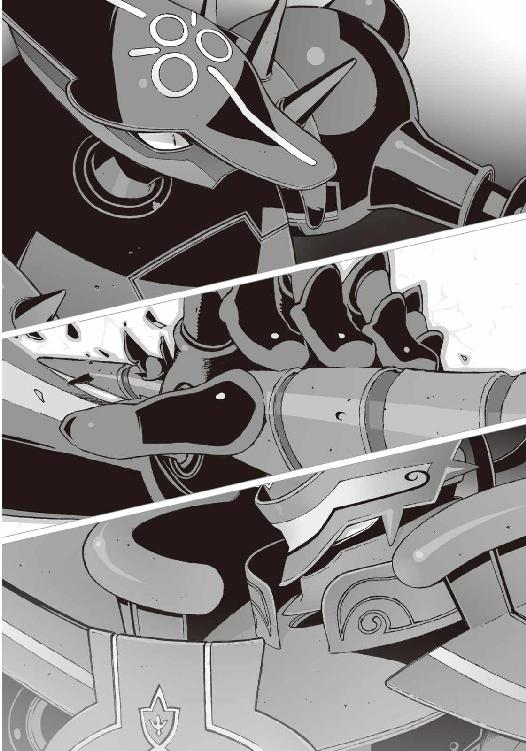
構わない。ＧＤ級の機巧魔神を相手にして、無傷で済むとは最初から思っていない。
逆流してくる痛みを気力でねじ伏せる。クルスティナやアニアや加賀篝。里見に傷つけられた人々の苦しみに比べれば、この程度の苦痛は、虫に刺されたほどにも感じない。
「僕の勝ちだよ。蒼鉛の槍の回転は、どんな強大な魔力をも消滅させる。たとえ同じＧＤ級の機巧魔神が相手でもね──」
勝ち誇ったように里見が笑った。
僕は無表情に口を開く。自分のものとも思えないゾッとするような醒めた声。
「だけど──回転しなければなにもできないんだろ？」
え、と里見の表情が凍りついた。
機巧魔神《蒼鉛》の槍。電動錐のように回転するはずの、螺旋を刻んだ穂先が動かない。
《鐵》が、左腕の指先だけで、その穂先を押さえつけているからだ。
漆黒の機巧魔神の体内の歯車が軋み、張りつめた弦が甲高く鳴り響く。
槍を握る《蒼鉛》の腕が震える。
「馬鹿な......」里見が嗄れた声を出した。「なんだ......この握力!? そんな、嘘だろ！」
その言葉に答えたのは、僕ではなかった。
『──闇より暗き深淵より出し』
穏やかに澄んだ操緒の声。その響きはやがて、低い機械の声音へと変わる。
《鐵》の左拳から滲み出したのは、墨汁を垂らしたような濃密な闇だった。
光をも呑みこむ超重力の闇。機巧魔神《鐵》の重力制御だ。
「握力、じゃないのか......これは......重力!?」
里見の声が悲鳴へと変わる。
極限まで精密に絞り込んだ重力球が、破魔の蒼槍の回転を押さえこんで、その能力を無効化しているのだ。
『其は、科学の光が落とす影──！』
漆黒の魔神が咆吼した。
凄まじい膂力で左腕を引き、破魔の蒼槍ごと《蒼鉛》の腕を引きちぎる。
「うぐああああああああああああっおおおっ──！」
里見が意味を成さない言葉を絶叫する。《蒼鉛》の機体が完全に制御を離れて無防備になる。
《鐵》の右腕が漆黒の重力球を生成。
その手首から、幾重もの魔法陣が砲身のように伸びた。
黒の拳撃──
ズン、と鈍い激突音を響かせて《蒼鉛》が吹き飛んだ。
蒼い装甲が粉々に砕け散り、内部の機構が完全に露出する。
精密な機械時計のような無数の歯車。魔力を精製するための核。そして青い溶液をたたえた、透明なカプセル。胎児のように背中を丸めて、その中をたゆたう裸の少女。副葬処女。
「終わりだよ、里見恭武。これ以上戦えば、あんたの副葬処女が死ぬ──もうやめろ」
僕はため息のような声を出した。
しかし里見は、髪を乱して首を振る。ぎらぎらと目を血走らせ、
「なにが終わりだ。僕はまだ負けちゃいない。そんな生け贄の女が何人死のうが知ったことか。おまえみたいな甘えたガキに僕が負けるはずがないんだよ！」
唾をまき散らして喚き散らすと、里見は部下たちを振り返って、
「石川！ 田伏！ 誰でもいい、こいつを殺せ！ そうだ人質......そこにいる悪魔のガキを、もう一度捕まえて今度こそ──」
彼は興奮のあまり、くけけっ、と奇妙な笑い声を上げていた。
迷いが僕の胸の中に生まれた。
里見は冷静な判断力を失っている。
彼を止めるには《蒼鉛》を完全に破壊するしかないのかもしれない。だが、それは彼の副葬処女を殺すということである。そんなことが僕に出来るのか──？
答えを出せないまま、《鐵》が再び右腕を振り上げた。
その直後、里見の笑い声が出し抜けに消えた。
一瞬、なにが起きたのかわからなかった。
呆然と目を見開いて、里見が全身を震わせている。
彼が見つめていたのは、自分の蒼い機巧魔神だ。
剥き出しになった《蒼鉛》胸部のカプセルが、白く濁り始めていた。
副葬処女を浮かべた溶液が結露している。急激に温度が低下しているのだ。瞬きするほどの短い時間にカプセルは完全に凍りつき、生け贄の少女の姿は氷の中に閉じこめられた。
その表面に亀裂が生まれた。
急激な冷却による体積の膨張に耐えきれず、カプセルが砕け散る。
里見恭武が絶叫した。生きたまま副葬処女をえぐり出された機巧魔神の苦痛が、そのまま演操者に逆流したのだ。心臓を押さえて彼は床の上をのたうち回り、
「見苦しい──あなたの負けですわ、里見恭武。あなたなど夏目様の足下にも及ばない」
どこか場違いな口調で、少女の声が聞こえてきた。
《蒼鉛》の胸に刃が生えている。
蒼い機巧魔神の背後から、誰かが、透きとおった氷の刃を突き立てているのだ。
薙刀のような形の長大な刃だ。
キンと澄んだ音を立てて、その刃が一閃した。袈裟懸けに斬り裂かれた蒼い魔神の機体が、ゆっくりとその場に崩れ落ちた。そこにあるのは、もはや機械仕掛けの悪魔ではなく、ただの人形の残骸だった。
その背後に立っていたのは嵩月に似た──けれど決定的になにかが違う、美しい少女だった。
長い髪の内側がきらきらと銀色に輝いている。ほっそりとした体躯を包んでいるのは、ゴスロリ風の黒っぽいファッション。透明な氷の薙刀を構えた鳳島氷羽子は、
「ごきげんよう──夏目様」
とろけるような優美な笑みを浮かべて一礼した。
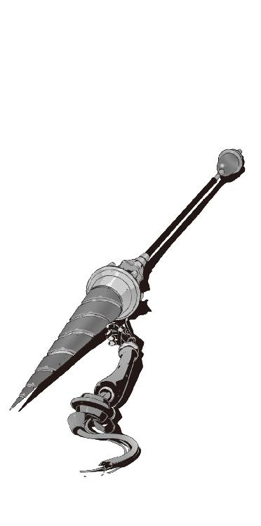
∴ エピローグ
彼女の美しい輪郭は、薄闇の中でよく映えた。わずかな光を反射して輝く宝石のような刃は、武器というよりも彼女を引き立てる装飾品のように見えた。
里見恭武の部下たちは、全員が意識をなくして倒れている。彼らの量産機はすべて大破。それらの残骸の中に副葬処女の痕跡がないのが、唯一の気休めの材料だった。
「──量産機は、単独では動かすことができません」
鳳島氷羽子は、淡々と朗読するような口調で言った。
「彼らは分配装置という拡張機能によって操作されている、いわば蒼鉛の子機ですから。里見恭武が演操者の資格を失えば、彼らも無力な一生徒に戻る──これですべて終わりです」
彼女の大きな瞳には、ほとんど感情が映らない。里見の部下たちを哀れむこともなく、ただ淡く微笑んでいるだけだ。そして氷羽子は踊るように軽くステップを踏むと、ヒュン、と薙刀を一閃した。
氷羽子の背後で里見恭武が絶叫した。
痛哭の悲鳴を上げる彼の右手が、手首の先で切断されていた。
凍りついた傷口からは血は一滴も流れない。しかし、滑らかすぎる断面が余計に凶悪で恐ろしかった。切り落とされた里見の手から指揮棒が転がり落ちた。
指揮棒の先端には銃口のような穴が開いていた。握りの部分にあるスイッチは、たぶん引き金だろう。その隠し武器で氷羽子を背後から撃とうとして、逆に腕を切り落とされたのだ。
「鳳島はオーケストラの指揮者が嫌いです。どうして彼らはあれほどまでに傲慢で尊大なのでしょう？」苦悶する里見をからかうようにそう言って、氷羽子はくすくすと無邪気に笑う。
そんな彼女の姿に僕は恐怖した。
目の前の少女が味方なのか敵なのかわからない。彼女が信用できるのか、それとも邪悪な存在なのかも判断不能だ。手持ちの材料が乏しすぎる。
「どうして......？」
僕は乾いた声で問いかけた。
どうして彼女がこんなところにいるのだ。まさか僕を助けに来たというわけでもないだろう？
氷羽子は愉快そうに頭を傾けて、
「鳳島は、主の命で皆様を監視させていただいておりました。それから少しだけ手助けを」
「......主？」
「はい」
氷羽子がうなずいた。その瞳が左右とも、淡い緑色に発光していることに気づいて僕は息を呑んだ。氷羽子の背後の暗闇の中に、巨大な影がゆらりと浮かび上がる。
鳥だった。透きとおった美しい翼を持つ、氷の不死鳥だ。
翼長は十メートル近くあるのではないだろうか。さすがにここまで巨大になると、鳥というより恐竜にイメージが近い。吐く息が大気を白く凍らせ、翼の触れた床が氷に覆われている。
もちろん自然界の生物ではない。魔力によって異界から召喚された幻獣だ。
「使い魔......」
それは間違いなく使い魔だった。氷羽子がそれを召喚したのなら、やはり彼女は悪魔だったということになる。しかも使い魔がいるということは、
「って......え!? きみは契約者持ちだったのか......!?」
僕は必要以上に動揺して叫んだ。昨日の昼間、成り行きとはいえ彼女とキスしたことを思い出してしまったのだ。いいのか？
しかし氷羽子は、まるでそんなことは忘れてしまったかのように微笑んで、
「お望みでしたら、鳳島が皆様の脱出をお手伝い致します。ただし、相応の代価を要求させていただくことになりますが」
「代価......？」
「ええ」
不安げにつぶやく僕に氷羽子はうなずきかけ、
「加賀篝様が手に入れたそのトランクを、我が主にお譲りを」
「え？」
僕は振り返り、炉心近くの破壊された柱を見た。加賀篝はその柱の残骸に無造作に座って、氷羽子と僕の会話を黙って聞いていた。
彼の足下には銀色の謎トランク。
「こいつのことか」疲れたような口調で加賀篝が訊いた。
「いかにも」氷羽子が慇懃にうなずいた。
加賀篝は血に汚れた唇を皮肉っぽく歪め、
「断るといったら？」平然と問い返す。
その瞬間、周囲を包みこんだ冷たい殺気に、僕は全身を硬直させた。
氷羽子は微笑みを絶やさぬまま、かすかに目を細めて薙刀を構え、
「それは皆様が持っていても使い途のないものですが......お望みとあらば力ずくでも」
「やめろ！」
反射的に叫んで、僕と《鐵》が氷羽子の前に回りこんだ。
僕が加賀篝を庇う理由はなにもないが、これ以上、誰かが目の前で争うのを見たくはなかったのだ。そして僕たちを庇うように氷羽子の前に飛び出したのは嵩月だった。
うーっ、と低く唸りながら、彼女は炎の刀を構えた。
氷羽子も油断なく薙刀を構え直し、互いに甲乙つけがたい美貌の少女が二人、それぞれの武器を持って睨み合う。
このまま本気で氷羽子と戦うことになれば、《鐵》の敵は氷羽子の使い魔だ。認めたくはないが勝ち目は薄い。こちらは敵の能力が、なにひとつわからないのだから。
それに今の消耗した嵩月が、契約者持ちである氷羽子に太刀打ちできるとも思えない。
嵩月自身それに気づいているのだろう。彼女は最初から刺し違えるつもりの構えだった。
殺気を纏った空気がねっとりと重い。
緊張が極限まで高まって弾けそうになる、その直前、
「やめにしましょう」
ふふふ、と氷羽子は微笑んで告げた。
そして嵩月を哀れむような表情で見つめ、
「自重なさいませ。今の貴女では鳳島には勝てません──残りわずかな余生、どうか心安らかにお過ごしを」
嵩月が表情を険しくして、氷羽子を睨んだ。氷羽子の言葉を愚弄だと感じたのか、嵩月の炎が勢いを増していく。ゆらゆらと舞う陽炎が彼女の周囲を赤く染める。
そんな今にも斬りかかろうとしていた嵩月を制止したのは、加賀篝の低い声だった。
「──いいだろう。持っていけ」
加賀篝の脚が乱暴にトランクケースを蹴った。なんの未練も感じさせない口調で、
「もう俺には必要ないものだ」
自嘲気味に笑う加賀篝の言葉に、僕たちは毒気を抜かれて立ち尽くした。
殺気が急速に色褪せて、残ったのは脱力感だけだった。
戸惑いながら僕は加賀篝を見返した。彼があれほどまでに求めていた、副葬処女を生き返らせるための鍵。それをあっさりと彼が譲り渡したことが理解できなかった。
先に気づいたのは嵩月だった。
「いつから......？」
細い声で彼女が訊いた。
加賀篝は頬杖をつきながら、涼しげに目を細め、
「最初に攻撃を受けたときには、もう終わっていた......そのあとで、なぜ薔薇輝が動けたのか、俺にはわからない......フ、情けない話だが」
彼の薔薇色の機巧魔神を、僕は呆然と見つめた。
深い傷を負ったその人形からは、なんの魔力も感じられなかった。
佐伯兄のときと同じだった。琴里さんの気配はもうどこにもない。《薔薇輝》の副葬処女は消滅していた。彼女を生き返らせるという加賀篝の目的が、果たされることは二度とないのだ。
「──たしかに頂戴いたしました」
謎トランクを受け取った氷羽子が、そう言って氷の薙刀を消した。
彼女にはもう僕たちと戦う理由はなくなった、ということなのだろう。
僕は嘆息して、遺跡最下層の光景を見回した。負傷して倒れたＧＤたち。破壊された薔薇輝の残骸。そして放心したように床に座りこんでいるアニア。ひどくやりきれない思いで、首を振る。犠牲になったものはあまりにも多く、そして得られたものはなにもない。やりきれない幕切れだった。これが僕の選択の結末なのだろうか──
「ひとつだけ、聞かせてくれないか」
自分の機巧魔神を影の中に沈めながら、僕は訊いた。
氷羽子がうなずく。
「なんなりと」
僕は嵩月と肩を並べて彼女を睨みつけ、
「......鳳島氷羽子。きみの契約者は、誰なんだ──？」
氷羽子の頬にじんわりと笑みが広がった。
「貴方のよくご存じの方です、夏目様。今はそれ以上は申し上げられません」
僕は無言で、いずれまた、と背中を向ける氷羽子を見ていた。
なぜかそれは予想されたとおりの答えだった。
氷羽子は重力を感じさせない動きで、使い魔の背中にふわりと飛び乗った。氷の不死鳥が翼を広げた。美しい少女のシルエットが、薄闇の中にゆっくりと沈みこんで消えていく。
○
「ごめんなさい......」
耳元で嵩月の声がした。どこまでも続く廃墟の暗闇の中。彼女の柔らかな体重を背中に感じながら僕は歩き続けていた。少し遅れて加賀篝とアニアの姿もある。
「ごめんなさい......あの、本当にもう大丈夫、だから......」
僕の背中に負ぶわれた姿勢で、嵩月が遠慮がちに囁いた。
「いいよ、これくらいは」
僕はなるべく素っ気なく首を振る。
鳳島氷羽子が立ち去った直後、嵩月は貧血を起こしたように再び倒れてしまっていた。緊張の糸が途切れたせい、というよりも、もともと戦えるような体調ではなかったのだろう。病み上がりの彼女に無理をさせすぎた。
ひんやりした嵩月の身体を背負ったまま、僕は出口に向かって歩いている。自力で歩けないほど嵩月が消耗しているのは、半分は僕の責任でもあると思う。それに、負担にならないとはいわないまでも、背負うのが苦痛になるほどの体重でもない。
「ごめんなさい......」
嵩月は小さな声でつぶやいて、僕の肩にうつむいた頬を乗せた。
「いいって。困ったときはお互い様だろ」と僕は苦笑。
『そうそう、操緒がいつもやってることだしね』
僕たちの隣に浮かんでいた操緒も、嵩月に明るく笑いかける。そういえばそうだな、と僕は思った。僕の肩にくっついて移動するのは、普段の操緒の役割だ。
『まあ、たまにはいいんじゃない。智春も喜んでるし』
「べつに喜んでるわけじゃないけど」
僕は慌てて操緒の言葉を否定した。余計なことを言わないで欲しい。背中にあたる嵩月の胸の感触とかを、せっかく意識しないようにしていたのに。
それから僕は、ちょっと不思議な気分で、笑っている操緒の横顔を眺めた。
『ん？ なに？』
操緒がそれに気づいて振り返る。僕は小さく首を振って、
「いや。なんか意外な気がしたから」
どうして笑っているのだろうと思う。普段の操緒ならこういうとき、不機嫌さを隠そうともしないのに。しかし操緒はニヤリと笑って、
『そう？ 操緒は文句言わないよ。そういう賭けだったもんね』
「えっ......」
僕は驚いて思わず足を止めた。賭けというのはもしかして、期限内に僕に彼女ができなかったらどうこう、というやつのことか。あのくだらない約束はまだ生きていたのか。
思いがけず動揺する僕を見て、操緒はますます得意げにうなずき、
「......賭け？」
そして嵩月が怪訝そうに訊いてきた。
「いや。それは、なんでもないんだ......な」
僕は焦って操緒に同意を求めたが、
『んん......そうだね。有効期限はあと二日だけど。あ、日付変わっちゃったから、あと一日とちょっとかな』
操緒は澄ました口調で告げる。嵩月はますます困惑した表情。
「有効期限、って？」
「いや......それは......」
僕の額に汗の粒が浮かぶ。べつに隠す理由もないのだが、なんとなく嵩月には話しづらい。
樋口たちが僕と嵩月をくっつけようとしているんだよ、とまさか本人に言うわけにもいかず、僕が途方に暮れかけたとき、通路出口のほうから、誰かの声が聞こえてきた。
「あ、いたいた、トモハル。奏っちゃんたちも無事だった？」
場違いなくらいおっとりした華やかな声だった。暗闇の奥で手を振っていたのは、瓦礫の山に腰を下ろした長身の美少女だ。
「朱浬さん!?」
僕の声に応じて、朱浬さんが赤く輝く目を細めた。さすがの彼女も無傷というわけではなく、ほっそりとした身体のあちこちが白い包帯で覆い尽くされ、ズタズタに裂けてボロ布と化した黒コートを、ドレス代わりに身体に巻きつけている。その割に本人は元気そうだ。
「無事だったんですか」
僕は安堵の表情を浮かべ、
「どうにかね」
ふふふっ、と朱浬さんは声を洩らして微笑んだ。それから彼女は羽音のようなため息をつき、
「鳳島氷羽子といったわね、鳳島一族の氷使い......彼女に助けてもらったの」
「......鳳島、さんが......？」
驚いた。だが心のどこかで納得もしていた。あの状況で朱浬さんを救える者がいるとすれば、それは彼女以外にあり得なかった。氷の不死鳥を従えた、契約者持ちの悪魔。氷姫。
朱浬さんは再び軽く息を吐き、
「彼女、あたしたちのことをずっと監視していたみたいね。どういうつもりか知らないけど、借りができてしまったわ。あたしも、男のほうの鳳島もね」
「鳳島......？」
自分の足下を指さす朱浬さんを見て、僕はようやくそいつの存在に気づいた。
膝を抱えた鳳島蹴策が、壁際に屈みこんでガリガリと落書きを刻みこんでいる。異様に暗い。まるで彼の周囲だけ、空気が澱んでいるみたいだ。
「どうしたんです、あれ？」
僕は怖ず怖ずと朱浬さんに訊いてみる。朱浬さんは疲れたように首を振り、
「放っておけばいいわよ。鳳島氷羽子に会ってから、ずっとあんな感じなの」
「そうなんですか？ どうして？」
「さあ？」
投げやりに肩をすくめる朱浬さん。
『実の妹に助けられたのが不満なんじゃないの？ みっともないところを見られちゃって落ちこんでるとか......』
操緒が訳知り顔で解説し、
「違うっ......！」
鳳島が振り返って乱暴に叫んだ。
「あんな女、実の妹でもなんでもねー......」
『そんなわけないじゃん』
操緒はまったく取り合わない。
『ほかに考えられないでしょ。名前もあれだし、あの能力であのファッションセンス......』
「そうか......やっぱり彼女、鳳島の妹だったんだ......」
思わず僕も納得し、
「だから妹じゃねーって言ってんだろ！」
鳳島だけが虚しく抗議する。
「おまえら、人の話を聞けよオイ、俺の理想の妹はもっとほかにいるんだよ！ あの冷血女、黒崎はわざわざ助けて傷の手当てまでしてやって、俺は思いっきり放置だぞ。暗くて気づかなかったとかしれっと言いやがって。おかげで出血多量で死にかけたぞ！」
『うわ......悲惨......』
操緒が哀れむような表情を浮かべる。
『ていうか、それは鳳島が妹さんに嫌われてるだけなんじゃないの？』
「違う！ あんなやつ、俺は妹とは認めねェ......俺の本当の妹は......もっと......」
そう言って鳳島は頭を抱えた。まるで頭痛に耐えているような姿勢だ。大丈夫かこいつ、と僕は少し不安になる。頭を怪我した影響で、もしかして記憶に障害が出ているのではないのか？
「そんなんじゃねえっ！」
天井を仰いで絶叫する鳳島。そして彼は荒々しく息を吐き、
「そうだ......それよりも俺の真の妹......ニアたんは？」
思い出したようにつぶやき、立ち上がる鳳島。落ち着きなく周囲を見回し、僕たちのあとについて歩いていたアニアに気づくと、
「だ、大丈夫なのか、マイシスター？ 里見の野郎に捕まってよく無事だったな。あの変態になにかされなかったか。そうだ......助けてくれたやつにお礼を言わなきゃ......」
「あ......バカ......」
僕は鳳島を睨んで舌を鳴らした。不安な思いでアニアの横顔を盗み見る。
命を懸けてアニアを救ったのは、皮肉にも加賀篝と彼の契約悪魔であるクルスティナだった。肉親を失ったばかりの少女に、それを思い出させるようなことを言ってどうする。
しかしアニアは、クルスティナの形見らしきペンダントをきゅっと握り締め、
「大丈夫......私は大丈夫だ、智春。心配は要らない。おまえは、よくやってくれた......」
泣き腫らした顔で、無理やりに微笑んでみせた。
大丈夫という言葉とは裏腹に、虚ろによどんだその表情が気になった。だが僕にはそれ以上かける言葉がない。クルスティナをほとんど見殺しにしてしまった僕に、アニアを励ます資格があるとは思えなかった。
「もう大丈夫だからな。心配すんなよ。なあ、ニア。おまえにはお義兄ちゃんがついている」
空気を読めない鳳島が、無駄に快活な声を出してみせる。彼の無責任な言葉にどうしようもなく苛立ちを感じて、僕は鳳島を叱責しようとした。クス、とため息のような笑い声が聞こえてきたのはそのときだった。
アニアは優しい瞳で鳳島を見上げ、年相応のあどけない仕草で、
「ありがとう」とつぶやいた。
鳳島は面食らったように何度か目を瞬かせ、いやべつに俺はなどと口の中で言い訳しながら、前を向いた。その顔が耳まで赤くなっている。
アニアの言葉も意外だったが、それよりも心配なのは鳳島のこの反応だ。
本当に大丈夫なのか、この男。
僕と操緒が不安げに深く息を吐く。
『そういえば......鳳島氷羽子って、あたしたちの脱出を手伝ってくれるって言ってなかった？』
操緒が思い出したように唐突に言った。
そういえばそんなことを言われた気もするが、今のところ、それらしい恩恵はなにも受けてない。不満そうに顔をしかめる操緒を見て、鳳島はなぜか勝ち誇ったように鼻息を荒げ、
「ハッ、言わんことじゃねえ。あんな冷血女を信用するから騙されるんだよ。ザマみろ」
「あら......」
やんわりと反論したのは朱浬さんだった。
「彼女、約束は守ってくれたみたいよ。ほら」
朱浬さんが指さしたのは、ようやく見えてきた遺跡の出口だ。
この時間はまだ海中に沈んでいるはずの隠し通路の洞窟。その外壁がキラキラと白く輝いている。それに気づいて僕たちは唖然とする。
輝きの正体は氷だった。洞窟の壁面を覆い尽くした氷が、漏れ射す太陽の光を反射して光っているのだ。その氷は洞窟の外まで続いている。すなわち海の中まで。
「海が......割れてる？」
僕は間の抜けた声でつぶやいた。それ以外に表現のしようがなかった。
遺跡の出口から教会のある暮海崎の岬までの数百メートル。青い海面が左右に割れて、海の中に道が現れていた。海を割ってダムのように水を堰き止めているのは、分厚い氷の壁だ。
おそらく氷羽子が連れていた使い魔の仕業なのだろう。
氷の回廊とでもいえばいいのだろうか。余裕で人が渡れるくらいの道幅である。
僕たちに約束したとおり、氷羽子が残していった脱出路だ。
軽い眩暈を覚えながら、僕はうんざりとつぶやいた。
「もうちょっと......なんか......誤魔化しようのある方法はなかったのかよ......」
すでに明け方。太陽が高く昇っており、浜辺には海水浴客が集まり始めている。
海面を覆い尽くす季節外れの流氷に、平和な海水浴場はちょっとしたパニックになっていた。
○
無理やり人目を避けながら氷の回廊を渡り終え、僕たちが暮海崎に戻ってきたのは、結局、正午近くになってからのことだった。
バイトには完全に遅刻である。とりあえず嵩月と一緒に朝帰りということで、樋口と杏が、なにかしら上手く言い訳しておいてくれたことを期待するしかない。
別れ際、最後に加賀篝と少しだけ話をする機会があった。
「......これからどうするんですか？」と尋ねた僕に、
「普通の生活に戻るよ。二、三カ月ふらふら海外でも旅して、曲でも書くさ」
加賀篝は吹っ切れたような表情でそう言った。
それはあまり普通の生活ではないと思うが、たしかにそれ以外の選択肢はないのだろう。機巧魔神と使い魔を失い、エクスハンドラーとなった彼が、再び悪魔がらみの事件と遭遇することはあり得ない。今の加賀篝はただの傍観者。彼の役目はもう終わったのだ。
ここで彼と別れてしまえば、二度とこうして話をすることもないだろう。
それを寂しいと思っている自分に気づいて、僕は少し驚いた。
そう。彼のやったことを正当化しようとは思わないが、加賀篝は、たしかに僕と同じ目的のために行動していた。彼は間違いなく僕の唯一の理解者で、そして仲間だったのだ。
そんな感傷的な表情を浮かべる僕に気づいたのだろう。
加賀篝はフ、と微笑んで、革ジャンのポケットからなにかを取り出した。
「こいつをやるよ、少年。この先これが必要なのはきみのほうだろう」
それはパソコンの記録ディスクだった。あの遺跡の研究所のような場所で、クルスティナが集めていたデータ。それを記憶させた光学ディスクだ。
「いいんですか。これってクルスティナさんの形見なんじゃ......？」
おずおずとディスクを受け取る僕に、ああ、と加賀篝はうなずいて、
「本当のことを言えば、俺にはもうわからないんだ」と言った。
「え？」
加賀篝は遠い目で水平線を眺め、
「憑きものが落ちたような気分だ。彼女のことを愛していたという記憶はある。思い出もしっかり残っている。だけど、まるで他人事みたいに実感がわかない。なぜ俺はあんなにムキになって彼女を愛そうとしていたのか、その気持ちをもう思い出せないんだ。これが契約者の宿命だとわかっていても......な」
彼の瞳から、一条の滴が流れ落ちる。涙。
胸元に握った拳を押し当てた加賀篝は、掠れた声で、
「ただ胸にでかい穴があいたみたいに、苦しいだけだ......」
僕は沈黙するしかない。
遺跡でクルスティナに聞かされた言葉を思い出す。タカヤを責めないでやってくれ。今ならその言葉の意味がよくわかる。
誰にも彼を責めることはできない。彼は罪の代償をすでに支払っているのだから。悪魔の力をもって願いを叶えようとした。その代償は彼自身の魂だ。彼はこの先、永劫に、己の魂に穿たれた空隙を抱えて生きていくのだ。
「ひとつ、教えて欲しいことがあるんですけど」と僕は話題を変えた。
「なんだい？」
加賀篝が振り返る。彼はもう泣いてはいなかった。
僕はためらうように言葉を切って、そして続けた。
「鋼色の機巧魔神と、その演操者のこと......ひょっとしてなにか知りませんか？」
「......鋼色の機巧魔神、か......」
加賀篝はなぜか笑い出す。間の悪い冗談を聞かされたような、困惑気味の苦笑だ。
「知っているよ」
「本当に？」
「ああ。だが俺はその質問に答えるつもりはない。うまく説明できないし、そうだな、きみはそれを知るべきではない。少なくとも時が満ちるまでは──」
どういう意味だ、と僕は途方に暮れる。加賀篝は答えを知っている者の余裕の表情で、
「ひとつだけヒントをやるよ」
「はあ」
「水無神操緒の姉について調べてみるといい」
「え？」
加賀篝が語ったあまりにも予想外の名前に、不意を衝かれたような気分になった。
頭の中が白くなって言葉が継げない。操緒も似たようなものだった。お姉ちゃん......？ と声に出せずに唇だけを動かし、それを見て僕もようやく、
「......環緒さん？」
「ああ。たしかそんな名前だったな......」
僕は混乱したまま操緒と顔をつき合わせた。操緒より五歳年上の彼女の姉。両親と一緒に英国在住のはずだが、どうしてここで環緒さんの名前が出てくるのだ。
しかし加賀篝はそれ以上はなにも答えず、
「彼女に会えばすべてがわかるだろう。会えれば、な......」
最後にそれだけ言い残すと、僕たちに背中を向けて歩き出した。
朝陽の中に消えていく彼の姿は、どうしようもなく孤独で、悔しいが文句のつけようのないほどに恰好良かった。僕は呆然とそれを見送った。
もう二度と会うことのないであろう、かつての魔神相剋者の後ろ姿を──
○
「ここでお別れね、トモハル」
加賀篝を見送って戻ってきた僕に、朱浬さんが言った。
「え？」
ぽかんとした表情を浮かべる僕を見て彼女は笑い、
「さすがにこの恰好で宿に戻るわけにはいかないでしょ。律都さんに頼んで迎えに来てもらうわ。あちこち修理してもらわなきゃだし」
そう言って朱浬さんは右手を僕に振ってみせた。里見恭武との戦闘で破損した彼女の腕は、包帯グルグル巻きの透明人間状態だ。たしかにこの姿で観光地をうろついているのは、あまりよくないと思う。都市伝説になりそうだ。
朱浬さんは、ふふふっ、と愉快そうに笑い、
「遺跡があんな状態ならもうここには用はないし。里見恭武の件を学生連盟にも報告しとかなきゃだしね。あたしの荷物は鳴桜邸あてに送っておいて」
「わかりました。えっと......アニアは？」
不細工コアラを抱いた金髪の少女に訊いてみる。彼女は、ほんの少し疲れたような声で、
「私も帰るぞ。調べなければならないことがあるからな」
「え？」
「姉様の残してくれたデータだ。加賀篝からもらったのだろう。寄こせ」
僕を睨んで乱暴に言い放ち、勝手に僕のポケットから記録ディスクを奪い取った。僕は軽い焦りを覚えて、
「え、いいのか......？」
アニアを気遣うように訊く。クルスティナが探し集めたこのデータは、いってみれば彼女の遺品である。それを今のアニアに渡していいものかどうか僕にはわからない。
しかしアニアは、可愛げのない仕草で鼻を鳴らし、
「ふん。私以外にこれを解読できる者がいるのか？」
「ああ......いや」
僕は静かに首を振った。姉を捜すというアニアの目的が果たされた今、彼女が僕たちに協力する理由は本当はもう残っていない。それでもアニアがこのデータを調べようとしているのは、たぶん僕たちのためなのだろうと思う。加賀篝が僕にくれたこのディスクは、副葬処女を生き返らせるための唯一の手がかりなのだ。
「......ありがとう、アニア」
「うるさい。おまえに礼を言われる筋合いはない」
アニアがぞんざいに言い返す。その耳の先がかすかに赤い。
そしてそんなアニアに馴れ馴れしく近づいて、
「まあ、心配するな、夏目。マイシスターには俺がついている」
なぜか鳳島が偉そうに主張した。額からダラダラ血を流している彼を見て、僕は嘆息する。
「いや......おまえ、そんなことしてる場合じゃないだろ。病院に行けよ」
「はっはーっ、馬鹿言え。このくらいの擦り傷、俺サマの溢れ出す兄妹愛の前にはなんの障害にもならないぜ」
そう言いながらも貧血でぐらりとよろめく鳳島。その間にアニアは朱浬さんと連れだって、大通りのほうへと歩いていく。慌てて彼女たちを追いかけていく鳳島を、僕たちは疲れた表情で見送った。
それから少しして操緒が言った。
『あ......樋口と杏ちゃんだ』
坂の上に建つ白亜のペンションのテラスで、見覚えのあるバイト店員たちが手を振っている。朝帰りの僕たちと嵩月を見て、彼らの表情は隠しきれない好奇心で輝いていた。どんな言い訳をすればいいんだと僕は少しウンザリした気分になりながら、
「行こうか、嵩月......」
ベンチに座らせた嵩月に声をかけてみる。返事はない。
代わりに聞こえてきたのは、舞い落ちる羽毛のような小さな寝息だ。操緒が彼女の寝顔を覗きこんで、
『寝ちゃった？』
「うん......やっぱり無理してたんだな」
僕はなんとなく微笑ましい気持ちになって、彼女の隣に屈みこんだ。
とりあえず嵩月を背負おうとして、そして僕はふと気づいた。上着がはだけて露わになった彼女の鎖骨の先、肩の付け根。なにかがきらりと光を反射している。
僕はそれを確認しようと上着をめくって覗きこみ、
『ちょっと、なに見てるのよ！』
当たり前だが操緒に怒られた。
「あ、ああ......いや。ちょっと見とれて」
『痴漢！ 変態！ おっぱいマニア！』
「......邪魔しないんじゃなかったのかよ」
『犯罪は別！』
僕は憮然とした顔のまま、嵩月を背負って立ち上がった。樋口たちが待つオリエンタルドラゴンの白亜の建物に向かって歩き出す。
前にも何度か思ったことだが、魔力を使った直後の彼女は軽い。少し不安になるほどに。
魔力は異世界の影響力だ。それを使えばこの世界からの拒絶反応を受ける。それは非在化という形になって現れる。
そして今の嵩月は非在化を防ぐための魂の供給源──契約者を持っていないのだ。
鳳島氷羽子が嵩月に向けて告げた言葉を、なぜか僕は思い出していた。
──残りわずかな余生、どうか心安らかにお過ごしを。
嵩月の左肩は、美しいガラス細工のように透きとおって、淡い輝きを放っていた。
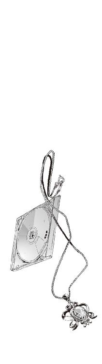
あとがき
そんなわけであとがきです。『アスラクライン』第八巻をお送りします。
唐突ですが名前の話。
前にもどこかに書いた記憶があるのですが、名前をつけるのが苦手です。某大作ＲＰＧでは買ってきたその日は主人公の名前を考えるだけで終わってしまったことがあります。四文字制限で濁音も一字分って今ドキなんなんだよ。
当然、自分の作品の登場人物の名前を考えるのも憂鬱です。
どうせなら見目麗しいいい名前をつけてやりたいけど、あまり凝りすぎると、あとで読み返したときに恥ずかしくて悶絶します。その辺のバランスが難しい。
そんな私が最近見つけて有り難く使わせてもらっているのが、赤ちゃん用の名前事典です。
さすがに一生モノの名前をつけるための参考書ということもあって気合いの入り方が違ってます。ありふれた名前から正気とは思えないアホなやつまで、いろいろ揃ってて非常に便利。
ついでに画数による運勢判断まで掲載されていて、これを読んでるのがメチャメチャ面白いのです。運のいい名前の場合は普通のことが書かれてますが、そうでないのはたとえばこんな、『姓名学では絶対使ってはいけない画数。事件、事故、病難に遭いやすく、犯罪に関わる可能性もある。大損して破産する者も多く、晩年は孤独』──ってどんだけ運が悪いのでしょうか。
ここまで書かれて子供にその名前をつける親がいたら相当な勇者だと思います。
といいつつ、小説のキャラにはたまにそんな名前をつけてしまうのですが......許せ、智春。
本文中に出てくる操緒と奏の名前の由来については、鐵の細かい設定から逆算して考えておいたものでした。どちらも前から一度使ってみたいと思っていた名前だったので、けっこう気に入っています。ついでに、智春の「智」は、物の道理を知り、正しい判断を下す能力、という意味らしいです。春は「（弦を）張る」という響きから。
こういう話をするのは舞台裏を公開するみたいでちょっと気が引けるのですが、キャラの名前の由来が知りたいという質問があったので書いてみました（あとがきのネタもなかったし）。
ちなみにほかのキャラの名前についてはわりと適当です。
智春たちのバイト先は、数年前に私が友人の結婚式に呼ばれて連泊した某所のペンションがモデルになっています（もちろん名前は違います）。リーズナブルなお値段で食事の美味しい良い宿でした。大広間には毛足の長い純白の絨毯が敷き詰められ、結婚式の二次会はその場で楽しく行われました。が、いい加減、酔っぱらっていた友人Ａがその絨毯の上に赤ワインをこぼしてしまいます。白い絨毯の上にたちまち広がっていく深紅の染み。焦る我々。
そのとき同席していた友人Ｂがしたり顔で言うことには、
「赤ワインの染みは、白ワインで消えるらしい」
なんだかすごくもっともらしく聞こえるその言葉に、私たちは感動して、絨毯の染みの上に我先にと白ワインをぶちまけました。しかし、よく考えるまでもなくわかりそうなものですが、
そんなんで染みが消えるわけねえ!!
まき散らされた白ワインによって最初の染みは十倍くらいの面積に拡散し、もはやしらばっくれて隠し通すことも不可能な状態に。新郎新婦ともども宿の人に怒られて弁償したのはいうまでもありません。オリエンタルドラゴンの壁のイメージが白なのは、たぶん私がそのときの記憶を引きずってるせいではないかと思います。ただそれだけの話。
それからまたしてもお詫びなのですが、今回も巻末のおまけ企画がありません。申し訳ない。
この本と同じタイミングで店頭に並んでいる雑誌『電撃ｈｐ』には、『アスラクラインＫＬＥＩＮ』というタイトルで短篇が掲載されている（はず）なので、興味がある方は探してみてください。よろしくです。
それでは最後になりましたが、本書の出版にあたりお世話になった皆様、またこの本を手にしてくださった読者の皆様、本当にありがとうございます。
次回も夏休み篇の続きです。でももしかしたら違うかもしれません。でもたぶん夏休み。
ここのところハード目な展開が続いているアスラクラインですが、そろそろ背後の絡繰りが色々見えてくる頃だと思います。あともう少し夏休みらしいイベントを入れたいかも。
ご期待いただけると有り難いです。それでは。三雲岳斗でした。
三雲岳斗
大分県出身横浜市在住。第五回電撃ゲーム小説大賞《銀賞》受賞作『コールド・ゲヘナ』でデビュー。水族館がかなり好きです。つらいことがあると行きたくなります。水の中をたゆたうように生きていきたいのです。にょろにょろ。
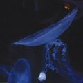
和狸ナオ
１９７６年生誕の千葉県民。くじ運は最低ながら本作の挿絵を描かせて頂き、実はすごく仕事運が良いのでは...?!と人生見直しております。遅咲きな絵描き兼ぬるいゲーマーですが、よろしくどうぞ。
電撃文庫
アスラクライン⑧
真夏の夜のナイトメア
三雲岳斗
二〇十二年八月二十四日 配信
発行者 塚田正晃
発行所 株式会社アスキー・メディアワークス
〒一〇二−八五八四 東京都千代田区富士見一−八−十九
(C)2007 GAKUTO MIKUMO／ASCII MEDIA WORKS
本書（電子版）に掲載されているコンテンツ（ソフトウェア／プログラム／データ／情報を含む）の著作権およびその他の権利は、すべて株式会社アスキー・メディアワークスおよび正当な権利を有する第三者に帰属しています。
法律の定めがある場合または権利者の明示的な承諾がある場合を除き、これらのコンテンツを複製・転載、改変・編集、翻案・翻訳、放送・出版、公衆送信（送信可能化を含む）・再配信、販売・頒布、貸与等に使用することはできません。